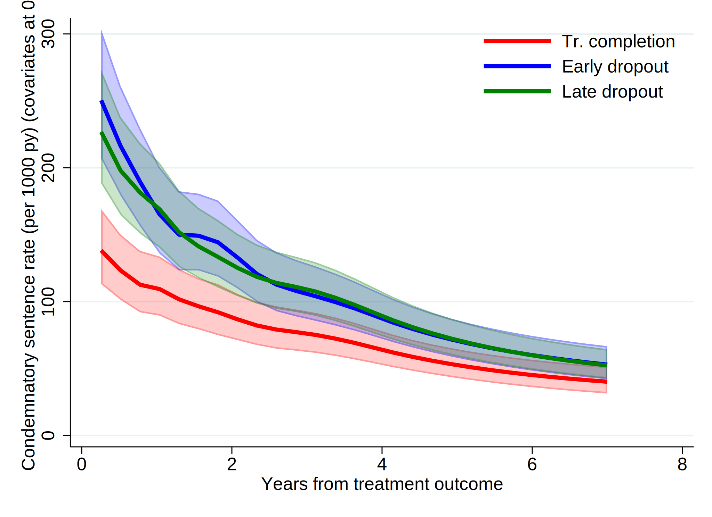
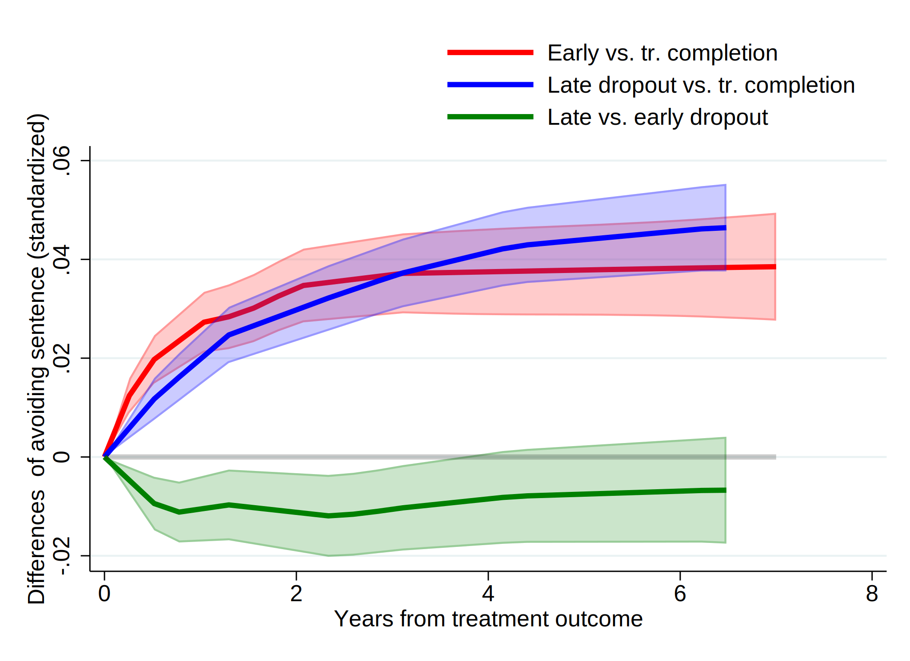
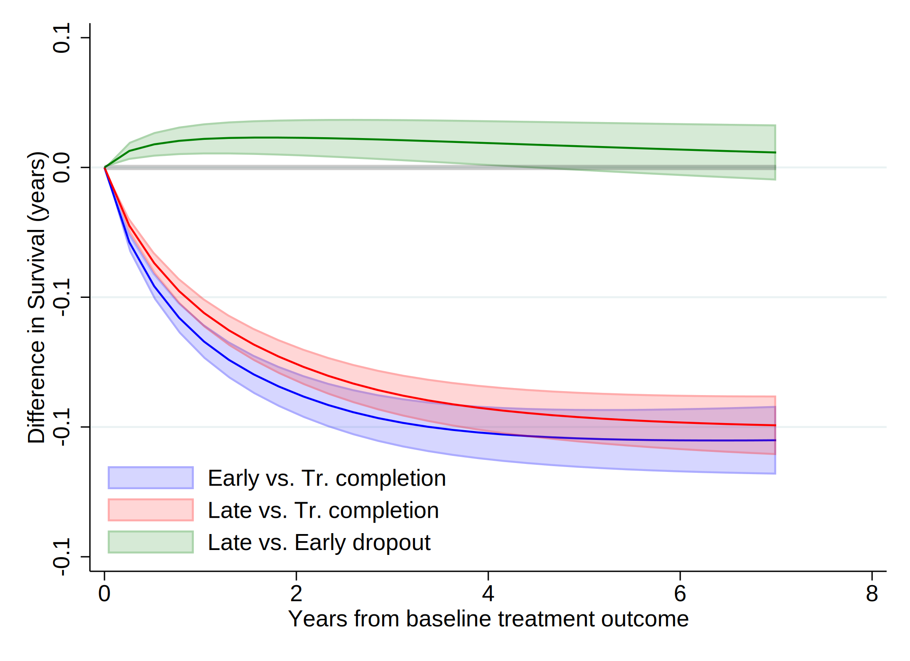
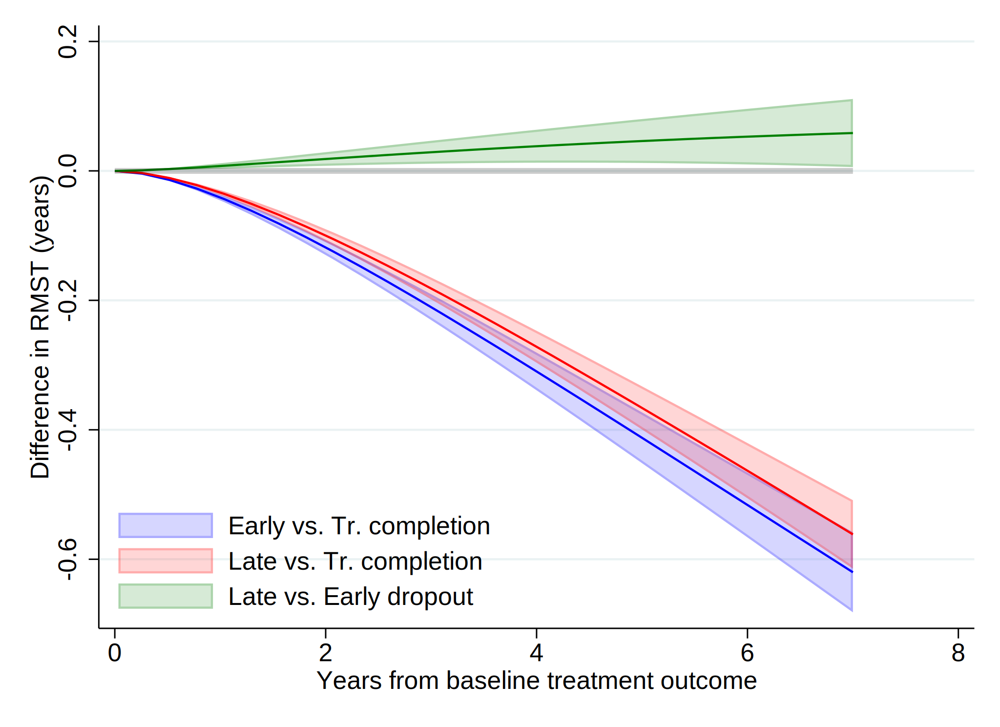
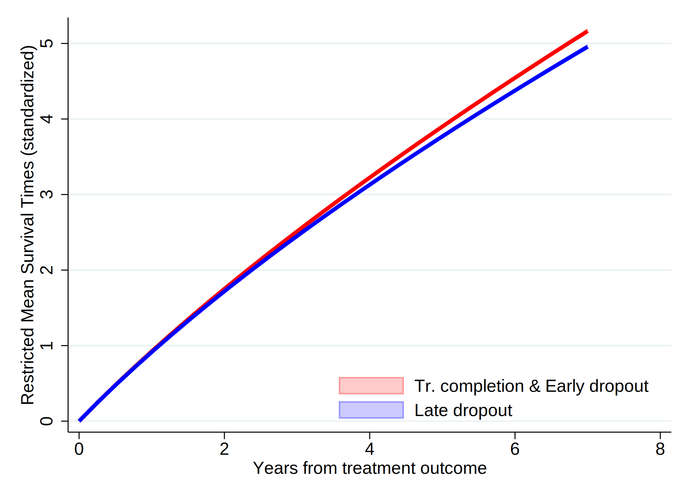
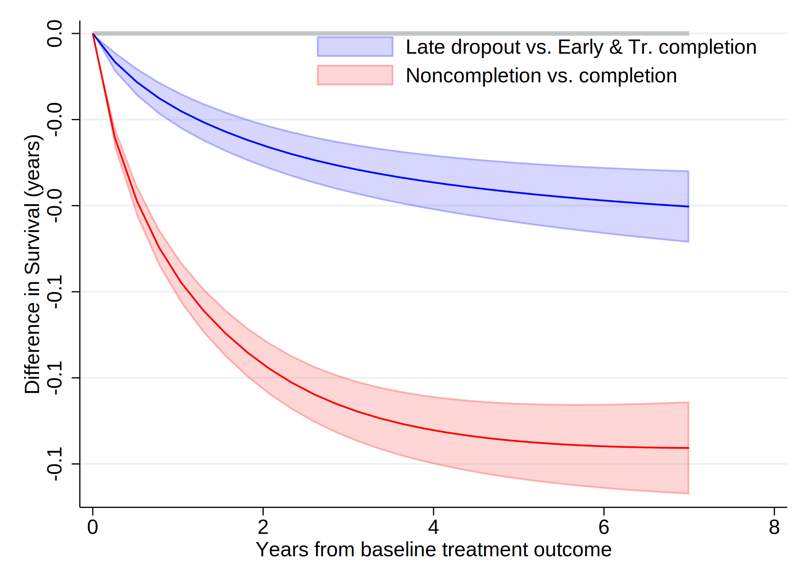
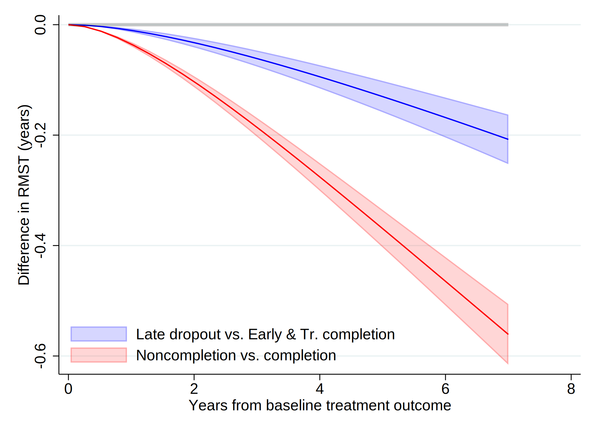

. clear all
. cap noi which tabout
c:\ado\plus\t\tabout.ado
*! 2.0.8 Ian Watson 15mar2019
*! tabout version 3 (beta) available at: http://tabout.net.au
. if _rc==111 {
. cap noi ssc install tabout
. }
. cap noi which pathutil
c:\ado\plus\p\pathutil.ado
*! version 2.2.0 19nov2020 daniel klein
. if _rc==111 {
. cap noi net install pathutil, from("http://fmwww.bc.edu/repec/bocode/p/")
. }
. cap noi which pathutil
c:\ado\plus\p\pathutil.ado
*! version 2.2.0 19nov2020 daniel klein
. if _rc==111 {
. ssc install dirtools
. }
. cap noi which project
c:\ado\plus\p\project.ado
*! version 1.3.1 22dec2013 picard@netbox.com
. if _rc==111 {
. ssc install project
. }
. cap noi which stipw
c:\ado\plus\s\stipw.ado
*! Version 1.0.0 17Jan2022
. if _rc==111 {
. ssc install stipw
. }
. cap noi which stpm2
c:\ado\plus\s\stpm2.ado
*! version 1.7.5 May2021
. if _rc==111 {
. ssc install stpm2
. }
. cap noi which rcsgen
c:\ado\plus\r\rcsgen.ado
*! version 1.5.9 13FEB2022
. if _rc==111 {
. ssc install rcsgen
. }
. cap noi which matselrc
c:\ado\plus\m\matselrc.ado
*! NJC 1.1.0 20 Apr 2000 (STB-56: dm79)
. if _rc==111 {
. cap noi net install dm79, from(http://www.stata.com/stb/stb56)
. }
. cap noi which stpm2_standsurv
c:\ado\plus\s\stpm2_standsurv.ado
*! version 1.1.2 12Jun2018
. if _rc==111 {
. cap noi net install stpm2_standsurv.pkg, from(http://fmwww.bc.edu/RePEc/bocode/s)
. }
.
Date created: 16:07:13 4 Mar 2023.
Get the folder
E:\Mi unidad\Alvacast\SISTRAT 2022 (github)
Fecha: 4 Mar 2023, considerando un SO Windows para el usuario: andre
Path data= ;
Tiempo: 4 Mar 2023, considerando un SO Windows
The file is located and named as: E:\Mi unidad\Alvacast\SISTRAT 2022 (github)fiscalia_mariel_oct_2022_match_SENDA.dta
=============================================================================
=============================================================================
We open the files
. use "fiscalia_mariel_feb_2023_match_SENDA.dta", clear
.
. cap noi encode tr_modality, gen(newtr_modality)
. cap noi drop tr_modality
. cap noi rename newtr_modality tr_modality
.
. cap noi encode condicion_ocupacional_cor, gen(newcondicion_ocupacional_cor)
. cap noi drop condicion_ocupacional_cor
. cap noi rename newcondicion_ocupacional_cor condicion_ocupacional_cor
.
. cap noi encode tipo_centro, gen(newtipo_centro)
. cap noi drop tipo_centro
. cap noi rename newtipo_centro tipo_centro
.
. cap noi decode freq_cons_sus_prin, gen (str_freq_cons_sus_prin)
. drop freq_cons_sus_prin
. label def freq_cons_sus_prin2 1 "Less than 1 day a week" 2 "1 day a week or more" 3 "2 to 3 days a week" 4 "4 to 6 days a week" 5 "Daily"
. encode str_freq_cons_sus_prin, gen(freq_cons_sus_prin) label (freq_cons_sus_prin2)
.
. cap noi encode escolaridad_rec, gen(esc_rec)
not possible with numeric variable
. cap noi encode sex, generate(sex_enc)
. cap noi encode sus_principal_mod, generate(sus_prin_mod)
not possible with numeric variable
. cap noi encode freq_cons_sus_prin, generate(fr_sus_prin)
not possible with numeric variable
. cap noi encode compromiso_biopsicosocial, generate(comp_biosoc)
. cap noi encode tenencia_de_la_vivienda_mod, generate(ten_viv)
not possible with numeric variable
. *encode dg_cie_10_rec, generate(dg_cie_10_mental_h) *already numeric
. cap noi encode dg_trs_cons_sus_or, generate(sud_severity_icd10)
. cap noi encode macrozona, generate(macrozone)
not possible with numeric variable
.
. *2023-02-28, not done in R
. cap noi recode numero_de_hijos_mod (0=0 "No children") (1/10=1 "Children"), gen(newnumero_de_hijos_mod)
(34475 differences between numero_de_hijos_mod and newnumero_de_hijos_mod)
. drop numero_de_hijos_mod
. cap noi rename newnumero_de_hijos_mod numero_de_hijos_mod
.
. *not necessary: 2023-02-28
. *gen motivodeegreso_mod_imp_rec3 = 1
. *replace motivodeegreso_mod_imp_rec3 = 2 if strpos(motivodeegreso_mod_imp_rec,"Early")>0
. *replace motivodeegreso_mod_imp_rec3 = 3 if strpos(motivodeegreso_mod_imp_rec,"Late")>0
.
. *encode policonsumo, generate(policon) *already numeric
.
We show a table of missing values
. misstable sum poly sus_prin_mod fr_sus_prin edad_al_ing_1 edad_ini_cons sex_enc esc_rec ten_viv dg_cie_10_rec n_off_vio n_off_acq n_off_sud clas porc_pobr macrozone
variable poly not found
r(111);
And missing patterns
. misstable pat poly sus_prin_mod fr_sus_prin edad_al_ing_1 edad_ini_cons sex_enc esc_rec ten_viv dg_cie_10_rec n_off_vio n_off_acq n_off_sud clas porc_pobr macrozone
variable poly not found
r(111);
=============================================================================
=============================================================================
. *si no está perdido cod_region, significa que hubo un registro (0/1) y el tiempo es el tiempo desde
. *set the indicator
. gen event=0
. replace event=1 if !missing(offender_d)
(22,287 real changes made)
. *replace event=1 if !missing(sex)
.
. gen diff= age_offending_imp-edad_al_egres_imp
.
. *age time
. stset age_offending_imp, fail(event ==1) enter(edad_al_egres_imp)
failure event: event == 1
obs. time interval: (0, age_offending_imp]
enter on or after: time edad_al_egres_imp
exit on or before: failure
------------------------------------------------------------------------------
70,863 total observations
0 exclusions
------------------------------------------------------------------------------
70,863 observations remaining, representing
22,287 failures in single-record/single-failure data
229,620.92 total analysis time at risk and under observation
at risk from t = 0
earliest observed entry t = 10.95068
last observed exit t = 90.65027
.
. stdescribe, weight
failure _d: event == 1
analysis time _t: age_offending_imp
enter on or after: time edad_al_egres_imp
|-------------- per subject --------------|
Category total mean min median max
------------------------------------------------------------------------------
no. of subjects 70863
no. of records 70863 1 1 1 1
(first) entry time 36.52231 10.95068 34.6274 88.91507
(final) exit time 39.76266 14.84463 38.01506 90.65027
subjects with gap 0
time on gap if gap 0
time at risk 229620.92 3.24035 .0000449 2.665753 10.75828
failures 22287 .3145083 0 0 1
------------------------------------------------------------------------------
We calculate the incidence rate.
. stsum, by (motivodeegreso_mod_imp_rec)
failure _d: event == 1
analysis time _t: age_offending_imp
enter on or after: time edad_al_egres_imp
| Incidence Number of |------ Survival time -----|
motivo~c | Time at risk rate subjects 25% 50% 75%
---------+---------------------------------------------------------------------
Treatmen | 63,974.7795 .0597892 19276 19.60301 22.39014 28.2026
Treatmen | 46,815.0893 .1309407 15797 18.18207 19.15674 21.12526
Treatmen | 118,806.623 .1037484 35781 16.49829 17.60986 20.97467
---------+---------------------------------------------------------------------
Total | 229,596.491 .0970442 70854 16.67765 18.3436 21.03217
=============================================================================
=============================================================================
We generated a graph with every type of treatment and the Nelson-Aalen estimate.
. sts graph, na by (motivodeegreso_mod_imp_rec) ci ///
> title("Comission of an offense (end with imprisonment)") ///
> subtitle("Nelson-Aalen Cum Hazards w/ Confidence Intervals 95%") ///
> risktable(, size(*.5) order(1 "Tr Completion" 2 "Early Disch" 3 "Late Disch")) ///
> ytitle("Cum. Hazards") ylabel(#8) ///
> xtitle("Years of age") xlabel(#8) ///
> note("Source: nDP, SENDA's SUD Treatments & POs Office Data period 2010-2019 ") ///
> legend(rows(3)) ///
> legend(cols(4)) ///
> graphregion(color(white) lwidth(large)) bgcolor(white) ///
> plotregion(fcolor(white)) graphregion(fcolor(white) ) /// //text(.5 1 "IR = <0.001") ///
> legend(order(1 "95CI Tr Completion" 2 "Tr Completion" 3 "95CI Early Tr Disch" 4 "Early Tr Disch " 5 "95CI Late Tr Disch" 6 "Late Tr Disch" )size(*.5)region(lstyle(none)) region(c(none)) nobox)
failure _d: event == 1
analysis time _t: age_offending_imp
enter on or after: time edad_al_egres_imp
(note: named style large not found in class linewidth, default attributes used)
(note: linewidth not found in scheme, default attributes used)
(note: named style large not found in class linewidth, default attributes used)
(note: linewidth not found in scheme, default attributes used)
. graph save "`c(pwd)'\_figs\tto_2023.gph", replace
(file E:\Mi unidad\Alvacast\SISTRAT 2022 (github)\_figs\tto_2023.gph saved)
=============================================================================
=============================================================================
Staggered entry
We tested the schoefeld residuals.
. global sim 1e5 //5e1 1e5
. global boots 1e3 //5e1 2e3
. global times 0 90 365 1096 1826
. range timevar0 90 1826 90
(70,773 missing values generated)
.
. /*
> vars_cov<-c("tr_modality", "edad_al_ing_1", "sex", "edad_ini_cons", "dias_treat_imp_sin_na_1", "escolaridad_rec", "sus_principal_mod", "freq_cons_sus_prin", "condicion_ocupacional_corr", "via_adm_sus_prin_act", "p
> oliconsumo", "origen_ingreso_mod", "numero_de_hijos_mod", "tenencia_de_la_vivienda_mod", "dg_cie_10_rec", "dg_trs_cons_sus_or", "macrozona", "n_off_vio", "n_off_acq", "n_off_sud", "n_off_oth", "clas_centers_r", "c
> las_r", "porc_pobr")
> *sex_enc sud_severity_icd10
> */
.
. global covs "i.motivodeegreso_mod_imp_rec i.tr_modality edad_al_ing_1 i.sex_enc edad_ini_cons i.escolaridad_rec i.sus_principal_mod i.freq_cons_sus_prin i.condicion_ocupacional_cor i.policonsumo i.numero_de_hijos_
> mod i.tenencia_de_la_vivienda_mod i.macrozona i.n_off_vio i.n_off_acq i.n_off_sud i.n_off_oth i.clas_r porc_pobr"
.
.
. qui stcox $covs , efron robust nolog schoenfeld(sch*) scaledsch(sca*)
. qui estat phtest, log detail
. scalar chi2_scho_test = r(chi2)
. scalar chi2_scho_test_df = r(df)
. scalar chi2_scho_test_p = r(p)
.
. mat mat_scho_test = r(phtest)
.
. esttab matrix(mat_scho_test) using "mat_scho_test_02_2023.csv", replace
(output written to mat_scho_test_02_2023.csv)
. esttab matrix(mat_scho_test) using "mat_scho_test_02_2023.html", replace
(output written to mat_scho_test_02_2023.html)
.
«dd_include: “${pathdata2}mat_scho_test_2023.html” » tag dd_include failed to find file mat_scho_test_2023.html r(601);
Reset-time
. *reset time, only compatible with stteffects (same entry times)
. stset diff, failure(event ==1)
failure event: event == 1
obs. time interval: (0, diff]
exit on or before: failure
------------------------------------------------------------------------------
70,863 total observations
0 exclusions
------------------------------------------------------------------------------
70,863 observations remaining, representing
22,287 failures in single-record/single-failure data
229,620.92 total analysis time at risk and under observation
at risk from t = 0
earliest observed entry t = 0
last observed exit t = 10.75828
. *stset age_offending_imp, fail(event ==1) enter(edad_al_egres_imp)
.
. *count if missing(motivodeegreso_mod_imp_rec3, edad_al_ing_1, edad_ini_cons, dias_treat_imp_sin_na_1, esc_rec, sus_prin_mod, fr_sus_prin, comp_biosoc, ten_viv, dg_cie_10_rec, sud_severity_icd10, macrozone, policon
> sumo, n_off_vio, n_off_acq, n_off_sud, n_off_oth)
. *Micki Hill & Paul C Lambert & Michael J Crowther, 2021. "Introducing stipw: inverse probability weighted parametric survival models," London Stata Conference 2021 15, Stata Users Group.
. *https://view.officeapps.live.com/op/view.aspx?src=http%3A%2F%2Ffmwww.bc.edu%2Frepec%2Fusug2021%2Fusug21_hill.pptx&wdOrigin=BROWSELINK
.
. *Treatment variable should be a binary variable with values 0 and 1.
. gen motivodeegreso_mod_imp_rec2 = 0
. replace motivodeegreso_mod_imp_rec2 = 1 if motivodeegreso_mod_imp_rec==2
(15,797 real changes made)
. replace motivodeegreso_mod_imp_rec2 = 1 if motivodeegreso_mod_imp_rec==3
(35,781 real changes made)
.
. recode motivodeegreso_mod_imp_rec2 (0=1 "Tr Completion") (1=0 "Tr Non-completion (Late & Early)"), gen(caus_disch_mod_imp_rec)
(70863 differences between motivodeegreso_mod_imp_rec2 and caus_disch_mod_imp_rec)
. lab var caus_disch_mod_imp_rec "Baseline treatment outcome(dich)"
.
. /*
> vars_cov<-c("tr_modality", "edad_al_ing_1", "sex", "edad_ini_cons", "dias_treat_imp_sin_na_1", "escolaridad_rec", "sus_principal_mod", "freq_cons_sus_prin", "condicion_ocupacional_corr", "via_adm_sus_prin_act", "p
> oliconsumo", "origen_ingreso_mod", "numero_de_hijos_mod", "tenencia_de_la_vivienda_mod", "dg_cie_10_rec", "dg_trs_cons_sus_or", "macrozona", "n_off_vio", "n_off_acq", "n_off_sud", "n_off_oth", "clas_centers_r", "c
> las_r", "porc_pobr")
> *sex_enc sud_severity_icd10
>
> *dias_treat_imp_sin_na_1
> *i.clas_centers_r
> *i.origen_ingreso_mod
> *i.via_adm_sus_prin_act
> *i.sud_severity_icd10
>
> */
.
. global covs_3 "i.motivodeegreso_mod_imp_rec i.tr_modality edad_al_ing_1 i.sex_enc edad_ini_cons i.escolaridad_rec i.sus_principal_mod i.freq_cons_sus_prin i.condicion_ocupacional_cor i.policonsumo i.numero_de_hijo
> s_mod i.tenencia_de_la_vivienda_mod i.macrozona i.n_off_vio i.n_off_acq i.n_off_sud i.n_off_oth i.clas_r porc_pobr"
.
. qui stcox $covs_3 , efron robust nolog schoenfeld(sch_b*) scaledsch(sca_b*)
. qui estat phtest, log detail
. scalar chi2_scho_test2 = r(chi2)
. scalar chi2_scho_test2_df = r(df)
. scalar chi2_scho_test2_p = r(p)
.
. mat mat_scho_test2 = r(phtest)
.
. esttab matrix(mat_scho_test2) using "mat_scho_test_02_2023_2.csv", replace
(output written to mat_scho_test_02_2023_2.csv)
. esttab matrix(mat_scho_test2) using "mat_scho_test_02_2023_2.html", replace
(output written to mat_scho_test_02_2023_2.html)
.
«dd_include: “${pathdata2}mat_scho_test_2023_2.html” » tag dd_include failed to find file mat_scho_test_2023_2.html r(601);
=============================================================================
=============================================================================
In view of nonproportional hazards, we explored different shapes of time-dependent effects and baseline hazards.
. *______________________________________________
. *______________________________________________
. * ADJUSTED ROYSTON PARMAR - NO STAGGERED ENTRY, BINARY TREATMENT (1-DROPOUT VS. 0-COMPLETION)
.
.
. *Factor variables not allowed for tvc() option. Create your own dummy varibles.
. gen motivodeegreso_mod_imp_rec_earl = 1
. replace motivodeegreso_mod_imp_rec_earl = 0 if motivodeegreso_mod_imp_rec==1
(19,276 real changes made)
. replace motivodeegreso_mod_imp_rec_earl = 0 if motivodeegreso_mod_imp_rec==3
(35,781 real changes made)
.
. gen motivodeegreso_mod_imp_rec_late = 1
. replace motivodeegreso_mod_imp_rec_late = 0 if motivodeegreso_mod_imp_rec==1
(19,276 real changes made)
. replace motivodeegreso_mod_imp_rec_late = 0 if motivodeegreso_mod_imp_rec==2
(15,797 real changes made)
.
. recode motivodeegreso_mod_imp_rec_earl (1=1 "Early dropout") (0=0 "Tr. comp & Late dropout"), gen(newmotivodeegreso_mod_imp_rec_e)
(0 differences between motivodeegreso_mod_imp_rec_earl and newmotivodeegreso_mod_imp_rec_e)
. cap noi drop motivodeegreso_mod_imp_rec_earl
. cap noi rename newmotivodeegreso_mod_imp_rec_e motivodeegreso_early
.
. recode motivodeegreso_mod_imp_rec_late (1=1 "Late dropout") (0=0 "Tr. comp & Early dropout"), gen(newmotivodeegreso_mod_imp_rec_l)
(0 differences between motivodeegreso_mod_imp_rec_late and newmotivodeegreso_mod_imp_rec_l)
. cap noi drop motivodeegreso_mod_imp_rec_late
. cap noi rename newmotivodeegreso_mod_imp_rec_l motivodeegreso_late
.
. lab var motivodeegreso_early "Baseline treatment outcome- Early dropout(dich)"
. lab var motivodeegreso_late "Baseline treatment outcome- Late dropout(dich)"
.
. cap noi rename motivodeegreso_late mot_egr_late
. cap noi rename motivodeegreso_early mot_egr_early
.
. global covs_3b "mot_egr_early mot_egr_late i.tr_modality edad_al_ing_1 i.sex_enc edad_ini_cons i.escolaridad_rec i.sus_principal_mod i.freq_cons_sus_prin i.condicion_ocupacional_cor i.policonsumo i.numero_de_hijos
> _mod i.tenencia_de_la_vivienda_mod i.macrozona i.n_off_vio i.n_off_acq i.n_off_sud i.n_off_oth i.clas_r porc_pobr"
.
. forvalues i=1/10 {
2. forvalues j=1/7 {
3. qui noi stpm2 $covs_3b , scale(hazard) df(`i') eform tvc(mot_egr_early mot_egr_late) dftvc(`j')
4. estimates store m_nostag_rp`i'_tvc_`j'
5. }
6. }
Iteration 0: log likelihood = -55607.344
Iteration 1: log likelihood = -55328.803
Iteration 2: log likelihood = -55326.643
Iteration 3: log likelihood = -55326.643
Log likelihood = -55326.643 Number of obs = 60,382
-------------------------------------------------------------------------------------------------------------
| exp(b) Std. Err. z P>|z| [95% Conf. Interval]
--------------------------------------------+----------------------------------------------------------------
xb |
mot_egr_early | 1.667286 .0426179 20.00 0.000 1.585815 1.752944
mot_egr_late | 1.579534 .0367465 19.65 0.000 1.50913 1.653223
|
tr_modality |
Residential | 1.291326 .0273844 12.06 0.000 1.238753 1.346129
edad_al_ing_1 | .9702491 .0009615 -30.48 0.000 .9683665 .9721354
|
sex_enc |
Women | .7708043 .0163251 -12.29 0.000 .7394626 .8034743
edad_ini_cons | .9892314 .0018688 -5.73 0.000 .9855753 .992901
|
escolaridad_rec |
2-Completed high school or less | .9602294 .0166585 -2.34 0.019 .9281283 .9934408
1-More than high school | .8660126 .0225894 -5.52 0.000 .822851 .9114383
|
sus_principal_mod |
Cocaine hydrochloride | 1.087141 .0293482 3.09 0.002 1.031115 1.146211
Cocaine paste | 1.484195 .032982 17.77 0.000 1.420939 1.550267
Marijuana | 1.138817 .0392806 3.77 0.000 1.064373 1.218468
Other | 1.230226 .08627 2.95 0.003 1.072245 1.411483
|
freq_cons_sus_prin |
1 day a week or more | .9150606 .044646 -1.82 0.069 .8316098 1.006886
2 to 3 days a week | 1.013876 .0399702 0.35 0.727 .9384855 1.095322
4 to 6 days a week | 1.033654 .0425402 0.80 0.421 .9535504 1.120486
Daily | 1.054443 .0410287 1.36 0.173 .9770185 1.138004
|
condicion_ocupacional_cor |
Inactive | 1.008376 .03123 0.27 0.788 .9489874 1.071482
Looking for a job for the first time | 1.059089 .1491555 0.41 0.684 .8036269 1.395759
No activity | 1.039519 .0372563 1.08 0.280 .9690038 1.115166
Not seeking for work | 1.146663 .087642 1.79 0.073 .9871347 1.331971
Unemployed | 1.14389 .0206907 7.43 0.000 1.104048 1.185171
|
1.policonsumo | 1.098175 .0236759 4.34 0.000 1.052738 1.145573
|
numero_de_hijos_mod |
Children | 1.176768 .0219405 8.73 0.000 1.134542 1.220566
|
tenencia_de_la_vivienda_mod |
Others | 1.024082 .0771408 0.32 0.752 .8835199 1.187006
Owner/Transferred dwellings/Pays Dividends | .8651426 .055842 -2.24 0.025 .7623344 .9818155
Renting | .9208206 .0605129 -1.26 0.209 .8095379 1.047401
Stays temporarily with a relative | .8798943 .0565329 -1.99 0.046 .7757845 .9979756
|
macrozona |
North | 1.374546 .0282824 15.46 0.000 1.320216 1.431111
South | 1.388393 .0395444 11.52 0.000 1.313011 1.468103
|
n_off_vio |
1 | 1.302552 .0246879 13.95 0.000 1.255052 1.351849
|
n_off_acq |
1 | 1.734245 .0307914 31.01 0.000 1.674933 1.795657
|
n_off_sud |
1 | 1.211946 .0223221 10.44 0.000 1.168975 1.256496
1.n_off_oth | 1.313702 .0246968 14.51 0.000 1.266178 1.36301
|
clas_r |
Mixta | .9113331 .024971 -3.39 0.001 .863682 .9616134
Rural | .9354709 .0284396 -2.19 0.028 .8813584 .9929056
|
porc_pobr | 5.337826 .5482329 16.31 0.000 4.364554 6.528131
_rcs1 | 2.59174 .0393805 62.68 0.000 2.515694 2.670086
_rcs_mot_egr_early1 | .9163203 .016871 -4.75 0.000 .8838432 .9499908
_rcs_mot_egr_late1 | .939999 .0159767 -3.64 0.000 .9092011 .9718402
_cons | .2153113 .0200425 -16.50 0.000 .1794039 .2584055
-------------------------------------------------------------------------------------------------------------
Note: Estimates are transformed only in the first equation.
Iteration 0: log likelihood = -55252.554
Iteration 1: log likelihood = -55157.921
Iteration 2: log likelihood = -55157.544
Iteration 3: log likelihood = -55157.544
Log likelihood = -55157.544 Number of obs = 60,382
-------------------------------------------------------------------------------------------------------------
| exp(b) Std. Err. z P>|z| [95% Conf. Interval]
--------------------------------------------+----------------------------------------------------------------
xb |
mot_egr_early | 1.675459 .0428199 20.19 0.000 1.593601 1.761522
mot_egr_late | 1.580554 .0367706 19.68 0.000 1.510104 1.654292
|
tr_modality |
Residential | 1.292308 .0274012 12.09 0.000 1.239703 1.347144
edad_al_ing_1 | .9704348 .0009613 -30.30 0.000 .9685526 .9723207
|
sex_enc |
Women | .7733524 .0163707 -12.14 0.000 .7419229 .8061134
edad_ini_cons | .9895326 .0018676 -5.58 0.000 .9858789 .9931999
|
escolaridad_rec |
2-Completed high school or less | .9605973 .0166631 -2.32 0.020 .9284873 .9938179
1-More than high school | .8651252 .0225646 -5.55 0.000 .8220108 .9105009
|
sus_principal_mod |
Cocaine hydrochloride | 1.083571 .0292529 2.97 0.003 1.027726 1.142449
Cocaine paste | 1.480487 .0329034 17.65 0.000 1.417382 1.546402
Marijuana | 1.14115 .0393682 3.83 0.000 1.06654 1.220978
Other | 1.228713 .0861659 2.94 0.003 1.070923 1.409751
|
freq_cons_sus_prin |
1 day a week or more | .9154096 .044663 -1.81 0.070 .831927 1.00727
2 to 3 days a week | 1.015291 .0400258 0.38 0.700 .9397963 1.096851
4 to 6 days a week | 1.035363 .0426099 0.84 0.398 .9551282 1.122337
Daily | 1.054861 .0410433 1.37 0.170 .9774084 1.138451
|
condicion_ocupacional_cor |
Inactive | 1.009354 .0312505 0.30 0.764 .9499259 1.072501
Looking for a job for the first time | 1.059705 .1492401 0.41 0.681 .8040974 1.396565
No activity | 1.034242 .0370581 0.94 0.347 .9641016 1.109486
Not seeking for work | 1.143514 .0874022 1.75 0.079 .9844224 1.328316
Unemployed | 1.142522 .0206634 7.37 0.000 1.102732 1.183748
|
1.policonsumo | 1.106235 .0238658 4.68 0.000 1.060434 1.154015
|
numero_de_hijos_mod |
Children | 1.175774 .0219198 8.69 0.000 1.133588 1.219531
|
tenencia_de_la_vivienda_mod |
Others | 1.030804 .0776471 0.40 0.687 .8893196 1.194798
Owner/Transferred dwellings/Pays Dividends | .8692095 .0561038 -2.17 0.030 .7659193 .9864291
Renting | .9275769 .0609562 -1.14 0.253 .815479 1.055084
Stays temporarily with a relative | .8848419 .0568491 -1.90 0.057 .7801497 1.003583
|
macrozona |
North | 1.375386 .0282918 15.50 0.000 1.321038 1.431969
South | 1.374955 .039152 11.18 0.000 1.30032 1.453873
|
n_off_vio |
1 | 1.293162 .0245045 13.57 0.000 1.246015 1.342093
|
n_off_acq |
1 | 1.716654 .0304767 30.44 0.000 1.657948 1.777439
|
n_off_sud |
1 | 1.205884 .0222038 10.17 0.000 1.163142 1.250198
1.n_off_oth | 1.303521 .0244986 14.10 0.000 1.256378 1.352432
|
clas_r |
Mixta | .8985818 .0246359 -3.90 0.000 .8515707 .9481881
Rural | .92028 .0280048 -2.73 0.006 .8669965 .9768382
|
porc_pobr | 6.315598 .6496355 17.92 0.000 5.162477 7.726286
_rcs1 | 2.5826 .0391248 62.63 0.000 2.507044 2.660433
_rcs_mot_egr_early1 | .9480804 .0179795 -2.81 0.005 .9134881 .9839826
_rcs_mot_egr_early2 | 1.103876 .0107809 10.12 0.000 1.082947 1.12521
_rcs_mot_egr_late1 | .9871645 .0172893 -0.74 0.461 .9538531 1.021639
_rcs_mot_egr_late2 | 1.114386 .0084341 14.31 0.000 1.097977 1.131039
_cons | .2079218 .019357 -16.87 0.000 .1732428 .2495427
-------------------------------------------------------------------------------------------------------------
Note: Estimates are transformed only in the first equation.
Iteration 0: log likelihood = -55150.659
Iteration 1: log likelihood = -55125.249
Iteration 2: log likelihood = -55125.204
Iteration 3: log likelihood = -55125.204
Log likelihood = -55125.204 Number of obs = 60,382
-------------------------------------------------------------------------------------------------------------
| exp(b) Std. Err. z P>|z| [95% Conf. Interval]
--------------------------------------------+----------------------------------------------------------------
xb |
mot_egr_early | 1.677328 .0428747 20.23 0.000 1.595366 1.763502
mot_egr_late | 1.580548 .0367754 19.67 0.000 1.510089 1.654295
|
tr_modality |
Residential | 1.293659 .0274297 12.14 0.000 1.241 1.348553
edad_al_ing_1 | .970468 .0009613 -30.26 0.000 .9685858 .9723538
|
sex_enc |
Women | .7739621 .0163813 -12.11 0.000 .7425121 .8067441
edad_ini_cons | .9896008 .0018675 -5.54 0.000 .9859473 .9932679
|
escolaridad_rec |
2-Completed high school or less | .9606435 .0166637 -2.31 0.021 .9285321 .9938653
1-More than high school | .8650823 .0225632 -5.56 0.000 .8219706 .9104552
|
sus_principal_mod |
Cocaine hydrochloride | 1.083931 .0292652 2.99 0.003 1.028063 1.142834
Cocaine paste | 1.48096 .0329185 17.67 0.000 1.417826 1.546905
Marijuana | 1.143483 .0394534 3.89 0.000 1.068713 1.223485
Other | 1.230207 .0862732 2.95 0.003 1.072221 1.411472
|
freq_cons_sus_prin |
1 day a week or more | .9154192 .0446635 -1.81 0.070 .8319355 1.00728
2 to 3 days a week | 1.015958 .040052 0.40 0.688 .9404134 1.097571
4 to 6 days a week | 1.036502 .0426569 0.87 0.384 .9561794 1.123573
Daily | 1.055619 .0410726 1.39 0.164 .978111 1.139269
|
condicion_ocupacional_cor |
Inactive | 1.009846 .0312627 0.32 0.752 .9503943 1.073017
Looking for a job for the first time | 1.065275 .1500265 0.45 0.653 .8083217 1.403911
No activity | 1.03179 .036969 0.87 0.382 .9618174 1.106852
Not seeking for work | 1.141643 .0872618 1.73 0.083 .9828072 1.326148
Unemployed | 1.142685 .0206653 7.38 0.000 1.102892 1.183915
|
1.policonsumo | 1.109509 .0239455 4.82 0.000 1.063556 1.157449
|
numero_de_hijos_mod |
Children | 1.175367 .0219117 8.67 0.000 1.133196 1.219108
|
tenencia_de_la_vivienda_mod |
Others | 1.033189 .077827 0.43 0.665 .8913766 1.197562
Owner/Transferred dwellings/Pays Dividends | .8699658 .0561523 -2.16 0.031 .7665862 .9872868
Renting | .9294743 .0610801 -1.11 0.266 .8171485 1.057241
Stays temporarily with a relative | .8861804 .0569343 -1.88 0.060 .781331 1.0051
|
macrozona |
North | 1.377346 .0283301 15.57 0.000 1.322925 1.434007
South | 1.371798 .0390673 11.10 0.000 1.297325 1.450546
|
n_off_vio |
1 | 1.291489 .0244655 13.50 0.000 1.244417 1.340342
|
n_off_acq |
1 | 1.714084 .0304195 30.36 0.000 1.655488 1.774754
|
n_off_sud |
1 | 1.20411 .0221673 10.09 0.000 1.161438 1.248351
1.n_off_oth | 1.301382 .0244507 14.02 0.000 1.254332 1.350198
|
clas_r |
Mixta | .8947006 .0245367 -4.06 0.000 .8478792 .9441076
Rural | .9154618 .0278722 -2.90 0.004 .8624314 .9717531
|
porc_pobr | 6.721483 .6923758 18.50 0.000 5.492668 8.225207
_rcs1 | 2.579541 .0390341 62.62 0.000 2.504159 2.657192
_rcs_mot_egr_early1 | .9477995 .0179299 -2.83 0.005 .9133011 .9836011
_rcs_mot_egr_early2 | 1.085998 .0106528 8.41 0.000 1.065318 1.107079
_rcs_mot_egr_early3 | 1.035733 .006542 5.56 0.000 1.022989 1.048634
_rcs_mot_egr_late1 | .9856218 .0172072 -0.83 0.407 .9524668 1.019931
_rcs_mot_egr_late2 | 1.09078 .0085534 11.08 0.000 1.074143 1.107674
_rcs_mot_egr_late3 | 1.036352 .0048628 7.61 0.000 1.026865 1.045927
_cons | .205059 .0190925 -17.02 0.000 .1708542 .2461114
-------------------------------------------------------------------------------------------------------------
Note: Estimates are transformed only in the first equation.
Iteration 0: log likelihood = -55152.613
Iteration 1: log likelihood = -55121.369
Iteration 2: log likelihood = -55121.291
Iteration 3: log likelihood = -55121.291
Log likelihood = -55121.291 Number of obs = 60,382
-------------------------------------------------------------------------------------------------------------
| exp(b) Std. Err. z P>|z| [95% Conf. Interval]
--------------------------------------------+----------------------------------------------------------------
xb |
mot_egr_early | 1.677917 .0428921 20.25 0.000 1.595921 1.764126
mot_egr_late | 1.58071 .03678 19.68 0.000 1.510242 1.654467
|
tr_modality |
Residential | 1.293889 .0274345 12.15 0.000 1.24122 1.348792
edad_al_ing_1 | .9704692 .0009613 -30.26 0.000 .9685869 .9723551
|
sex_enc |
Women | .7741244 .0163846 -12.10 0.000 .7426682 .806913
edad_ini_cons | .9896125 .0018675 -5.53 0.000 .985959 .9932796
|
escolaridad_rec |
2-Completed high school or less | .9606222 .0166635 -2.32 0.021 .9285113 .9938435
1-More than high school | .8651275 .0225644 -5.55 0.000 .8220135 .9105028
|
sus_principal_mod |
Cocaine hydrochloride | 1.084304 .0292767 3.00 0.003 1.028415 1.143231
Cocaine paste | 1.48138 .0329303 17.68 0.000 1.418224 1.547349
Marijuana | 1.144126 .0394776 3.90 0.000 1.06931 1.224177
Other | 1.230928 .0863247 2.96 0.003 1.072847 1.412301
|
freq_cons_sus_prin |
1 day a week or more | .9153401 .0446597 -1.81 0.070 .8318637 1.007193
2 to 3 days a week | 1.01609 .0400573 0.40 0.686 .9405356 1.097713
4 to 6 days a week | 1.036692 .0426647 0.88 0.381 .9563538 1.123778
Daily | 1.055734 .0410771 1.39 0.163 .9782175 1.139393
|
condicion_ocupacional_cor |
Inactive | 1.009922 .0312646 0.32 0.750 .9504664 1.073097
Looking for a job for the first time | 1.067034 .1502759 0.46 0.645 .8096529 1.406233
No activity | 1.031247 .0369498 0.86 0.390 .9613115 1.106271
Not seeking for work | 1.141426 .0872465 1.73 0.084 .9826189 1.325899
Unemployed | 1.142761 .0206666 7.38 0.000 1.102965 1.183993
|
1.policonsumo | 1.110209 .0239631 4.84 0.000 1.064222 1.158184
|
numero_de_hijos_mod |
Children | 1.175309 .0219106 8.66 0.000 1.13314 1.219047
|
tenencia_de_la_vivienda_mod |
Others | 1.033276 .0778337 0.43 0.664 .8914519 1.197664
Owner/Transferred dwellings/Pays Dividends | .8698351 .0561439 -2.16 0.031 .7664709 .9871386
Renting | .9295191 .0610828 -1.11 0.266 .8171883 1.057291
Stays temporarily with a relative | .886201 .0569355 -1.88 0.060 .7813495 1.005123
|
macrozona |
North | 1.377795 .0283395 15.58 0.000 1.323355 1.434474
South | 1.371425 .0390593 11.09 0.000 1.296968 1.450157
|
n_off_vio |
1 | 1.291328 .0244608 13.50 0.000 1.244265 1.340171
|
n_off_acq |
1 | 1.713714 .0304109 30.35 0.000 1.655134 1.774366
|
n_off_sud |
1 | 1.203768 .0221605 10.07 0.000 1.161108 1.247995
1.n_off_oth | 1.301157 .0244447 14.01 0.000 1.254117 1.34996
|
clas_r |
Mixta | .8942783 .0245261 -4.07 0.000 .8474771 .9436641
Rural | .9148491 .0278561 -2.92 0.003 .8618492 .9711082
|
porc_pobr | 6.783549 .698989 18.58 0.000 5.543035 8.301686
_rcs1 | 2.579235 .039028 62.62 0.000 2.503865 2.656874
_rcs_mot_egr_early1 | .9480188 .0179363 -2.82 0.005 .9135081 .9838331
_rcs_mot_egr_early2 | 1.085133 .010884 8.15 0.000 1.064009 1.106677
_rcs_mot_egr_early3 | 1.036752 .007012 5.34 0.000 1.0231 1.050587
_rcs_mot_egr_early4 | 1.01102 .0044181 2.51 0.012 1.002398 1.019717
_rcs_mot_egr_late1 | .9859421 .017217 -0.81 0.418 .9527685 1.020271
_rcs_mot_egr_late2 | 1.091479 .0088906 10.75 0.000 1.074192 1.109044
_rcs_mot_egr_late3 | 1.035295 .0053863 6.67 0.000 1.024792 1.045906
_rcs_mot_egr_late4 | 1.01227 .003232 3.82 0.000 1.005955 1.018625
_cons | .2046122 .0190515 -17.04 0.000 .170481 .2455768
-------------------------------------------------------------------------------------------------------------
Note: Estimates are transformed only in the first equation.
Iteration 0: log likelihood = -55141.83
Iteration 1: log likelihood = -55116.603
Iteration 2: log likelihood = -55116.557
Iteration 3: log likelihood = -55116.557
Log likelihood = -55116.557 Number of obs = 60,382
-------------------------------------------------------------------------------------------------------------
| exp(b) Std. Err. z P>|z| [95% Conf. Interval]
--------------------------------------------+----------------------------------------------------------------
xb |
mot_egr_early | 1.678438 .0429077 20.26 0.000 1.596412 1.764678
mot_egr_late | 1.580799 .0367844 19.68 0.000 1.510322 1.654564
|
tr_modality |
Residential | 1.294148 .02744 12.16 0.000 1.241468 1.349062
edad_al_ing_1 | .9704686 .0009613 -30.26 0.000 .9685863 .9723546
|
sex_enc |
Women | .7743093 .0163886 -12.08 0.000 .7428455 .8071059
edad_ini_cons | .989626 .0018675 -5.53 0.000 .9859725 .993293
|
escolaridad_rec |
2-Completed high school or less | .9605995 .0166631 -2.32 0.020 .9284892 .9938202
1-More than high school | .8651729 .0225656 -5.55 0.000 .8220566 .9105505
|
sus_principal_mod |
Cocaine hydrochloride | 1.084555 .0292843 3.01 0.003 1.028652 1.143497
Cocaine paste | 1.481612 .0329372 17.68 0.000 1.418442 1.547595
Marijuana | 1.144512 .039492 3.91 0.000 1.069668 1.224592
Other | 1.23154 .0863684 2.97 0.003 1.07338 1.413005
|
freq_cons_sus_prin |
1 day a week or more | .9152138 .0446535 -1.82 0.069 .8317489 1.007054
2 to 3 days a week | 1.016171 .0400605 0.41 0.684 .9406105 1.097801
4 to 6 days a week | 1.036766 .0426678 0.88 0.380 .9564221 1.123858
Daily | 1.055742 .0410774 1.39 0.163 .9782247 1.139401
|
condicion_ocupacional_cor |
Inactive | 1.009959 .0312654 0.32 0.749 .9505017 1.073135
Looking for a job for the first time | 1.067833 .1503886 0.47 0.641 .810259 1.407286
No activity | 1.030686 .0369303 0.84 0.399 .9607872 1.10567
Not seeking for work | 1.141445 .0872486 1.73 0.083 .9826338 1.325923
Unemployed | 1.142807 .0206673 7.38 0.000 1.103009 1.18404
|
1.policonsumo | 1.110674 .0239742 4.86 0.000 1.064666 1.158671
|
numero_de_hijos_mod |
Children | 1.175298 .0219104 8.66 0.000 1.133129 1.219035
|
tenencia_de_la_vivienda_mod |
Others | 1.032813 .0777992 0.43 0.668 .8910512 1.197128
Owner/Transferred dwellings/Pays Dividends | .8693007 .0561098 -2.17 0.030 .7659994 .9865329
Renting | .9291407 .061058 -1.12 0.263 .8168555 1.056861
Stays temporarily with a relative | .8857956 .0569097 -1.89 0.059 .7809917 1.004664
|
macrozona |
North | 1.378159 .0283471 15.59 0.000 1.323705 1.434853
South | 1.371053 .0390511 11.08 0.000 1.296612 1.449769
|
n_off_vio |
1 | 1.291142 .024456 13.49 0.000 1.244088 1.339976
|
n_off_acq |
1 | 1.713422 .0304037 30.35 0.000 1.654856 1.77406
|
n_off_sud |
1 | 1.203603 .0221568 10.07 0.000 1.160951 1.247823
1.n_off_oth | 1.300986 .0244397 14.01 0.000 1.253956 1.34978
|
clas_r |
Mixta | .8940061 .0245193 -4.09 0.000 .847218 .9433781
Rural | .9145216 .0278481 -2.93 0.003 .8615372 .9707645
|
porc_pobr | 6.826458 .7034747 18.64 0.000 5.577995 8.354352
_rcs1 | 2.579214 .0390337 62.61 0.000 2.503833 2.656864
_rcs_mot_egr_early1 | .9480989 .0179388 -2.82 0.005 .9135835 .9839183
_rcs_mot_egr_early2 | 1.081894 .0107854 7.90 0.000 1.06096 1.103241
_rcs_mot_egr_early3 | 1.041162 .0072879 5.76 0.000 1.026976 1.055545
_rcs_mot_egr_early4 | 1.010263 .0046051 2.24 0.025 1.001277 1.019329
_rcs_mot_egr_early5 | 1.01002 .0032691 3.08 0.002 1.003633 1.016448
_rcs_mot_egr_late1 | .9858167 .0172166 -0.82 0.413 .9526438 1.020145
_rcs_mot_egr_late2 | 1.089733 .0089908 10.42 0.000 1.072253 1.107498
_rcs_mot_egr_late3 | 1.036855 .0057373 6.54 0.000 1.025671 1.048162
_rcs_mot_egr_late4 | 1.014735 .0034417 4.31 0.000 1.008011 1.021503
_rcs_mot_egr_late5 | 1.00719 .0023232 3.11 0.002 1.002647 1.011754
_cons | .2043927 .0190312 -17.05 0.000 .1702979 .2453135
-------------------------------------------------------------------------------------------------------------
Note: Estimates are transformed only in the first equation.
Iteration 0: log likelihood = -55140.537
Iteration 1: log likelihood = -55114.141
Iteration 2: log likelihood = -55114.093
Iteration 3: log likelihood = -55114.093
Log likelihood = -55114.093 Number of obs = 60,382
-------------------------------------------------------------------------------------------------------------
| exp(b) Std. Err. z P>|z| [95% Conf. Interval]
--------------------------------------------+----------------------------------------------------------------
xb |
mot_egr_early | 1.678539 .0429121 20.26 0.000 1.596505 1.764788
mot_egr_late | 1.580801 .0367857 19.68 0.000 1.510322 1.654569
|
tr_modality |
Residential | 1.294239 .027442 12.16 0.000 1.241556 1.349158
edad_al_ing_1 | .9704702 .0009613 -30.26 0.000 .9685879 .9723561
|
sex_enc |
Women | .7744321 .0163911 -12.08 0.000 .7429633 .8072337
edad_ini_cons | .9896292 .0018675 -5.52 0.000 .9859758 .9932962
|
escolaridad_rec |
2-Completed high school or less | .96062 .0166636 -2.32 0.021 .9285089 .9938416
1-More than high school | .8652577 .0225678 -5.55 0.000 .8221372 .91064
|
sus_principal_mod |
Cocaine hydrochloride | 1.084727 .0292894 3.01 0.003 1.028813 1.143679
Cocaine paste | 1.481791 .0329419 17.69 0.000 1.418613 1.547783
Marijuana | 1.144749 .0395009 3.92 0.000 1.069889 1.224848
Other | 1.232003 .0864013 2.98 0.003 1.073783 1.413537
|
freq_cons_sus_prin |
1 day a week or more | .9151466 .0446502 -1.82 0.069 .8316879 1.00698
2 to 3 days a week | 1.016304 .0400657 0.41 0.682 .9407334 1.097945
4 to 6 days a week | 1.036846 .0426711 0.88 0.379 .9564959 1.123945
Daily | 1.055813 .0410803 1.40 0.163 .9782902 1.139478
|
condicion_ocupacional_cor |
Inactive | 1.009918 .0312639 0.32 0.750 .9504639 1.073091
Looking for a job for the first time | 1.06835 .1504615 0.47 0.639 .8106514 1.407968
No activity | 1.030441 .0369215 0.84 0.403 .9605588 1.105407
Not seeking for work | 1.141665 .0872653 1.73 0.083 .9828231 1.326178
Unemployed | 1.14278 .0206669 7.38 0.000 1.102984 1.184013
|
1.policonsumo | 1.110911 .0239796 4.87 0.000 1.064893 1.158919
|
numero_de_hijos_mod |
Children | 1.175257 .0219097 8.66 0.000 1.13309 1.218993
|
tenencia_de_la_vivienda_mod |
Others | 1.032802 .0777984 0.43 0.668 .8910415 1.197115
Owner/Transferred dwellings/Pays Dividends | .869111 .0560977 -2.17 0.030 .7658321 .9863179
Renting | .9290462 .0610517 -1.12 0.263 .8167725 1.056753
Stays temporarily with a relative | .8857306 .0569054 -1.89 0.059 .7809347 1.00459
|
macrozona |
North | 1.378356 .0283511 15.60 0.000 1.323894 1.435058
South | 1.370908 .0390479 11.08 0.000 1.296472 1.449617
|
n_off_vio |
1 | 1.291069 .0244539 13.49 0.000 1.244018 1.339898
|
n_off_acq |
1 | 1.713273 .0304005 30.34 0.000 1.654713 1.773905
|
n_off_sud |
1 | 1.203533 .0221551 10.06 0.000 1.160884 1.247749
1.n_off_oth | 1.300849 .0244363 14.00 0.000 1.253826 1.349636
|
clas_r |
Mixta | .893864 .0245156 -4.09 0.000 .847083 .9432286
Rural | .914297 .0278422 -2.94 0.003 .8613238 .9705282
|
porc_pobr | 6.848758 .7057865 18.67 0.000 5.596195 8.381676
_rcs1 | 2.579185 .0390358 62.60 0.000 2.5038 2.65684
_rcs_mot_egr_early1 | .9481284 .0179409 -2.81 0.005 .9136089 .9839521
_rcs_mot_egr_early2 | 1.080934 .0108035 7.79 0.000 1.059966 1.102317
_rcs_mot_egr_early3 | 1.042342 .0075139 5.75 0.000 1.027718 1.057173
_rcs_mot_egr_early4 | 1.011117 .0047921 2.33 0.020 1.001768 1.020553
_rcs_mot_egr_early5 | 1.011144 .0033769 3.32 0.001 1.004547 1.017784
_rcs_mot_egr_early6 | 1.004476 .0026425 1.70 0.090 .99931 1.009668
_rcs_mot_egr_late1 | .9859082 .0172211 -0.81 0.417 .9527267 1.020245
_rcs_mot_egr_late2 | 1.089838 .0091453 10.25 0.000 1.07206 1.10791
_rcs_mot_egr_late3 | 1.03581 .0060097 6.06 0.000 1.024098 1.047656
_rcs_mot_egr_late4 | 1.017556 .003589 4.93 0.000 1.010546 1.024614
_rcs_mot_egr_late5 | 1.008106 .0024335 3.34 0.001 1.003348 1.012887
_rcs_mot_egr_late6 | 1.006436 .0018589 3.47 0.001 1.002799 1.010086
_cons | .2042366 .0190168 -17.06 0.000 .1701676 .2451265
-------------------------------------------------------------------------------------------------------------
Note: Estimates are transformed only in the first equation.
Iteration 0: log likelihood = -55138.852
Iteration 1: log likelihood = -55112.944
Iteration 2: log likelihood = -55112.879
Iteration 3: log likelihood = -55112.879
Log likelihood = -55112.879 Number of obs = 60,382
-------------------------------------------------------------------------------------------------------------
| exp(b) Std. Err. z P>|z| [95% Conf. Interval]
--------------------------------------------+----------------------------------------------------------------
xb |
mot_egr_early | 1.678646 .0429154 20.26 0.000 1.596606 1.764902
mot_egr_late | 1.580827 .0367867 19.68 0.000 1.510346 1.654597
|
tr_modality |
Residential | 1.29433 .0274439 12.17 0.000 1.241643 1.349252
edad_al_ing_1 | .9704701 .0009613 -30.26 0.000 .9685877 .972356
|
sex_enc |
Women | .7745117 .0163928 -12.07 0.000 .7430397 .8073167
edad_ini_cons | .989632 .0018675 -5.52 0.000 .9859786 .993299
|
escolaridad_rec |
2-Completed high school or less | .9606185 .0166636 -2.32 0.021 .9285073 .9938402
1-More than high school | .8652861 .0225687 -5.55 0.000 .8221639 .91067
|
sus_principal_mod |
Cocaine hydrochloride | 1.084869 .0292934 3.02 0.003 1.028947 1.143829
Cocaine paste | 1.481917 .0329453 17.69 0.000 1.418732 1.547916
Marijuana | 1.144886 .039506 3.92 0.000 1.070016 1.224995
Other | 1.232228 .0864173 2.98 0.003 1.073979 1.413796
|
freq_cons_sus_prin |
1 day a week or more | .9151486 .0446503 -1.82 0.069 .8316897 1.006982
2 to 3 days a week | 1.016405 .0400698 0.41 0.680 .9408274 1.098055
4 to 6 days a week | 1.036911 .0426739 0.88 0.378 .9565563 1.124016
Daily | 1.055851 .0410819 1.40 0.162 .9783252 1.139519
|
condicion_ocupacional_cor |
Inactive | 1.009868 .0312622 0.32 0.751 .9504173 1.073038
Looking for a job for the first time | 1.068532 .1504872 0.47 0.638 .8107892 1.408208
No activity | 1.030261 .0369153 0.83 0.405 .9603905 1.105215
Not seeking for work | 1.141546 .0872563 1.73 0.083 .9827213 1.32604
Unemployed | 1.142745 .0206663 7.38 0.000 1.10295 1.183977
|
1.policonsumo | 1.110972 .0239812 4.88 0.000 1.06495 1.158983
|
numero_de_hijos_mod |
Children | 1.175251 .0219096 8.66 0.000 1.133084 1.218988
|
tenencia_de_la_vivienda_mod |
Others | 1.03286 .0778029 0.43 0.668 .891092 1.197183
Owner/Transferred dwellings/Pays Dividends | .8690341 .0560927 -2.17 0.030 .7657643 .9862306
Renting | .9290363 .061051 -1.12 0.263 .8167638 1.056742
Stays temporarily with a relative | .8857307 .0569053 -1.89 0.059 .7809347 1.004589
|
macrozona |
North | 1.378491 .0283539 15.61 0.000 1.324024 1.435199
South | 1.370849 .0390471 11.07 0.000 1.296415 1.449557
|
n_off_vio |
1 | 1.29101 .0244524 13.49 0.000 1.243963 1.339836
|
n_off_acq |
1 | 1.713215 .0303989 30.34 0.000 1.654658 1.773844
|
n_off_sud |
1 | 1.203473 .0221539 10.06 0.000 1.160826 1.247686
1.n_off_oth | 1.300784 .0244346 14.00 0.000 1.253764 1.349568
|
clas_r |
Mixta | .8937874 .0245136 -4.09 0.000 .8470101 .9431479
Rural | .9141452 .0278382 -2.95 0.003 .8611797 .9703684
|
porc_pobr | 6.860277 .7069847 18.69 0.000 5.605588 8.395799
_rcs1 | 2.579142 .0390356 62.60 0.000 2.503757 2.656796
_rcs_mot_egr_early1 | .9481074 .017941 -2.82 0.005 .9135877 .9839313
_rcs_mot_egr_early2 | 1.080481 .0108921 7.68 0.000 1.059342 1.102041
_rcs_mot_egr_early3 | 1.042207 .0077158 5.58 0.000 1.027194 1.05744
_rcs_mot_egr_early4 | 1.013401 .0049565 2.72 0.006 1.003733 1.023162
_rcs_mot_egr_early5 | 1.009841 .0034374 2.88 0.004 1.003126 1.0166
_rcs_mot_egr_early6 | 1.008136 .0027549 2.97 0.003 1.002751 1.01355
_rcs_mot_egr_early7 | 1.001847 .0022896 0.81 0.419 .9973699 1.006345
_rcs_mot_egr_late1 | .9857871 .0172184 -0.82 0.412 .9526108 1.020119
_rcs_mot_egr_late2 | 1.088452 .0091938 10.03 0.000 1.07058 1.106621
_rcs_mot_egr_late3 | 1.037182 .0061907 6.12 0.000 1.025119 1.049387
_rcs_mot_egr_late4 | 1.017806 .0037244 4.82 0.000 1.010533 1.025132
_rcs_mot_egr_late5 | 1.009614 .0024712 3.91 0.000 1.004782 1.014469
_rcs_mot_egr_late6 | 1.006655 .0019514 3.42 0.001 1.002838 1.010487
_rcs_mot_egr_late7 | 1.005405 .0016114 3.36 0.001 1.002252 1.008569
_cons | .2041562 .0190095 -17.06 0.000 .1701003 .2450304
-------------------------------------------------------------------------------------------------------------
Note: Estimates are transformed only in the first equation.
Iteration 0: log likelihood = -55213.829
Iteration 1: log likelihood = -55130.4
Iteration 2: log likelihood = -55130.1
Iteration 3: log likelihood = -55130.1
Log likelihood = -55130.1 Number of obs = 60,382
-------------------------------------------------------------------------------------------------------------
| exp(b) Std. Err. z P>|z| [95% Conf. Interval]
--------------------------------------------+----------------------------------------------------------------
xb |
mot_egr_early | 1.685537 .042975 20.48 0.000 1.603377 1.771906
mot_egr_late | 1.590314 .0368939 20.00 0.000 1.519623 1.664294
|
tr_modality |
Residential | 1.294953 .0274554 12.19 0.000 1.242245 1.349899
edad_al_ing_1 | .9704704 .0009612 -30.26 0.000 .9685884 .9723561
|
sex_enc |
Women | .7735121 .016373 -12.13 0.000 .7420782 .8062776
edad_ini_cons | .9896066 .0018675 -5.54 0.000 .9859532 .9932735
|
escolaridad_rec |
2-Completed high school or less | .9606941 .0166648 -2.31 0.021 .9285807 .9939182
1-More than high school | .8652857 .0225686 -5.55 0.000 .8221637 .9106695
|
sus_principal_mod |
Cocaine hydrochloride | 1.083464 .0292535 2.97 0.003 1.027619 1.142344
Cocaine paste | 1.480729 .0329146 17.66 0.000 1.417602 1.546666
Marijuana | 1.142086 .039405 3.85 0.000 1.067407 1.221989
Other | 1.232968 .0864602 2.99 0.003 1.074638 1.414624
|
freq_cons_sus_prin |
1 day a week or more | .9153199 .0446585 -1.81 0.070 .8318457 1.007171
2 to 3 days a week | 1.015557 .040036 0.39 0.695 .9400423 1.097137
4 to 6 days a week | 1.035183 .0426019 0.84 0.401 .9549635 1.122141
Daily | 1.054862 .0410426 1.37 0.170 .9774103 1.13845
|
condicion_ocupacional_cor |
Inactive | 1.00971 .0312589 0.31 0.755 .9502657 1.072873
Looking for a job for the first time | 1.065036 .1499886 0.45 0.655 .8081463 1.403585
No activity | 1.032833 .0370078 0.90 0.367 .9627879 1.107975
Not seeking for work | 1.142359 .0873144 1.74 0.082 .9834271 1.326975
Unemployed | 1.142105 .0206563 7.35 0.000 1.102328 1.183316
|
1.policonsumo | 1.108883 .0239328 4.79 0.000 1.062954 1.156797
|
numero_de_hijos_mod |
Children | 1.175321 .021911 8.67 0.000 1.133151 1.21906
|
tenencia_de_la_vivienda_mod |
Others | 1.030598 .0776292 0.40 0.689 .8891463 1.194554
Owner/Transferred dwellings/Pays Dividends | .8682576 .0560405 -2.19 0.029 .7650837 .9853447
Renting | .9267877 .0609023 -1.16 0.247 .8147887 1.054182
Stays temporarily with a relative | .8839296 .0567883 -1.92 0.055 .7793489 1.002544
|
macrozona |
North | 1.375969 .028299 15.52 0.000 1.321607 1.432567
South | 1.371554 .0390587 11.09 0.000 1.297097 1.450284
|
n_off_vio |
1 | 1.291831 .0244764 13.51 0.000 1.244738 1.340706
|
n_off_acq |
1 | 1.714224 .0304274 30.36 0.000 1.655612 1.77491
|
n_off_sud |
1 | 1.204584 .0221788 10.11 0.000 1.161889 1.248847
1.n_off_oth | 1.302004 .024467 14.04 0.000 1.254922 1.350852
|
clas_r |
Mixta | .8957171 .024561 -4.02 0.000 .8488491 .9451727
Rural | .9171218 .0279138 -2.84 0.004 .8640115 .9734967
|
porc_pobr | 6.56043 .675188 18.28 0.000 5.362016 8.02669
_rcs1 | 2.734012 .0427991 64.25 0.000 2.651401 2.819197
_rcs2 | 1.111547 .0062337 18.86 0.000 1.099397 1.123833
_rcs_mot_egr_early1 | .8980001 .016658 -5.80 0.000 .8659375 .9312499
_rcs_mot_egr_late1 | .9306876 .0159092 -4.20 0.000 .9000228 .9623973
_cons | .2052401 .019103 -17.01 0.000 .1710156 .2463138
-------------------------------------------------------------------------------------------------------------
Note: Estimates are transformed only in the first equation.
Iteration 0: log likelihood = -55215.615
Iteration 1: log likelihood = -55130.176
Iteration 2: log likelihood = -55129.77
Iteration 3: log likelihood = -55129.77
Log likelihood = -55129.77 Number of obs = 60,382
-------------------------------------------------------------------------------------------------------------
| exp(b) Std. Err. z P>|z| [95% Conf. Interval]
--------------------------------------------+----------------------------------------------------------------
xb |
mot_egr_early | 1.686921 .0431254 20.45 0.000 1.604479 1.773598
mot_egr_late | 1.590691 .0370219 19.94 0.000 1.519759 1.664933
|
tr_modality |
Residential | 1.294926 .0274563 12.19 0.000 1.242215 1.349873
edad_al_ing_1 | .970469 .0009612 -30.27 0.000 .968587 .9723547
|
sex_enc |
Women | .7735416 .0163738 -12.13 0.000 .7421062 .8063086
edad_ini_cons | .9896077 .0018674 -5.54 0.000 .9859543 .9932746
|
escolaridad_rec |
2-Completed high school or less | .9607126 .0166652 -2.31 0.021 .9285984 .9939374
1-More than high school | .8652927 .0225688 -5.55 0.000 .8221702 .9106768
|
sus_principal_mod |
Cocaine hydrochloride | 1.083538 .0292558 2.97 0.003 1.027689 1.142423
Cocaine paste | 1.480764 .0329155 17.66 0.000 1.417636 1.546703
Marijuana | 1.142123 .0394065 3.85 0.000 1.067441 1.222029
Other | 1.233362 .0864901 2.99 0.003 1.074978 1.415082
|
freq_cons_sus_prin |
1 day a week or more | .9152789 .0446565 -1.81 0.070 .8318084 1.007126
2 to 3 days a week | 1.015523 .0400348 0.39 0.696 .9400116 1.097101
4 to 6 days a week | 1.035184 .042602 0.84 0.401 .9549641 1.122142
Daily | 1.054841 .0410418 1.37 0.170 .977391 1.138428
|
condicion_ocupacional_cor |
Inactive | 1.009646 .0312571 0.31 0.756 .9502053 1.072806
Looking for a job for the first time | 1.065236 .1500181 0.45 0.654 .808296 1.403852
No activity | 1.032826 .0370072 0.90 0.367 .9627813 1.107966
Not seeking for work | 1.142432 .0873203 1.74 0.081 .98349 1.327061
Unemployed | 1.142117 .0206564 7.35 0.000 1.10234 1.183329
|
1.policonsumo | 1.109001 .0239363 4.79 0.000 1.063065 1.156922
|
numero_de_hijos_mod |
Children | 1.175323 .0219111 8.67 0.000 1.133153 1.219062
|
tenencia_de_la_vivienda_mod |
Others | 1.030492 .0776213 0.40 0.690 .8890548 1.194431
Owner/Transferred dwellings/Pays Dividends | .8681516 .056034 -2.19 0.028 .7649897 .9852253
Renting | .9267092 .0608975 -1.16 0.247 .814719 1.054093
Stays temporarily with a relative | .8838345 .0567826 -1.92 0.055 .7792645 1.002437
|
macrozona |
North | 1.376093 .0283016 15.52 0.000 1.321726 1.432696
South | 1.371542 .0390587 11.09 0.000 1.297086 1.450272
|
n_off_vio |
1 | 1.291866 .0244769 13.52 0.000 1.244771 1.340741
|
n_off_acq |
1 | 1.71431 .0304287 30.37 0.000 1.655696 1.774999
|
n_off_sud |
1 | 1.204542 .0221781 10.11 0.000 1.161849 1.248804
1.n_off_oth | 1.301979 .0244662 14.04 0.000 1.254898 1.350826
|
clas_r |
Mixta | .8956046 .0245585 -4.02 0.000 .8487414 .9450553
Rural | .9170217 .0279115 -2.85 0.004 .8639158 .9733919
|
porc_pobr | 6.564276 .6756214 18.28 0.000 5.365099 8.031486
_rcs1 | 2.740928 .0500518 55.22 0.000 2.644563 2.840804
_rcs2 | 1.115894 .0172855 7.08 0.000 1.082524 1.150293
_rcs_mot_egr_early1 | .8930298 .0192421 -5.25 0.000 .8561013 .9315513
_rcs_mot_egr_early2 | .9896385 .0180795 -0.57 0.569 .9548302 1.025716
_rcs_mot_egr_late1 | .929862 .0188595 -3.59 0.000 .8936231 .9675705
_rcs_mot_egr_late2 | .9990286 .0171813 -0.06 0.955 .9659151 1.033277
_cons | .2051364 .0190972 -17.02 0.000 .1709228 .2461985
-------------------------------------------------------------------------------------------------------------
Note: Estimates are transformed only in the first equation.
Iteration 0: log likelihood = -55114.307
Iteration 1: log likelihood = -55097.694
Iteration 2: log likelihood = -55097.616
Iteration 3: log likelihood = -55097.616
Log likelihood = -55097.616 Number of obs = 60,382
-------------------------------------------------------------------------------------------------------------
| exp(b) Std. Err. z P>|z| [95% Conf. Interval]
--------------------------------------------+----------------------------------------------------------------
xb |
mot_egr_early | 1.68848 .0431695 20.49 0.000 1.605954 1.775246
mot_egr_late | 1.590408 .0370178 19.93 0.000 1.519485 1.664642
|
tr_modality |
Residential | 1.296254 .0274842 12.24 0.000 1.24349 1.351257
edad_al_ing_1 | .9705023 .0009611 -30.23 0.000 .9686203 .9723879
|
sex_enc |
Women | .7741429 .0163842 -12.10 0.000 .7426874 .8069306
edad_ini_cons | .9896749 .0018673 -5.50 0.000 .9860218 .9933416
|
escolaridad_rec |
2-Completed high school or less | .9607601 .0166659 -2.31 0.021 .9286446 .9939862
1-More than high school | .8652469 .0225673 -5.55 0.000 .8221274 .9106281
|
sus_principal_mod |
Cocaine hydrochloride | 1.08386 .0292669 2.98 0.003 1.027989 1.142767
Cocaine paste | 1.481186 .0329292 17.67 0.000 1.418032 1.547153
Marijuana | 1.144396 .0394894 3.91 0.000 1.069557 1.224471
Other | 1.234781 .086592 3.01 0.003 1.076211 1.416715
|
freq_cons_sus_prin |
1 day a week or more | .9152976 .0446575 -1.81 0.070 .8318253 1.007146
2 to 3 days a week | 1.016184 .0400608 0.41 0.684 .9406229 1.097815
4 to 6 days a week | 1.036313 .0426485 0.87 0.386 .9560056 1.123366
Daily | 1.055592 .0410708 1.39 0.164 .9780873 1.139238
|
condicion_ocupacional_cor |
Inactive | 1.01013 .0312691 0.33 0.745 .9506655 1.073313
Looking for a job for the first time | 1.070665 .1507843 0.48 0.628 .8124129 1.411011
No activity | 1.030416 .0369195 0.84 0.403 .9605373 1.105378
Not seeking for work | 1.140605 .0871832 1.72 0.085 .9819127 1.324944
Unemployed | 1.14227 .0206581 7.36 0.000 1.10249 1.183485
|
1.policonsumo | 1.112209 .0240144 4.93 0.000 1.066124 1.160287
|
numero_de_hijos_mod |
Children | 1.17492 .0219031 8.65 0.000 1.132765 1.218643
|
tenencia_de_la_vivienda_mod |
Others | 1.032866 .0778003 0.43 0.668 .8911019 1.197183
Owner/Transferred dwellings/Pays Dividends | .8689045 .0560824 -2.18 0.029 .7656536 .9860792
Renting | .9285894 .0610203 -1.13 0.260 .8163733 1.05623
Stays temporarily with a relative | .885158 .0568669 -1.90 0.058 .7804327 1.003936
|
macrozona |
North | 1.378009 .0283391 15.59 0.000 1.32357 1.434687
South | 1.368417 .0389747 11.01 0.000 1.294121 1.446979
|
n_off_vio |
1 | 1.290206 .0244383 13.45 0.000 1.243186 1.339004
|
n_off_acq |
1 | 1.711788 .0303724 30.30 0.000 1.653283 1.772364
|
n_off_sud |
1 | 1.20281 .0221423 10.03 0.000 1.160186 1.247001
1.n_off_oth | 1.29986 .0244188 13.96 0.000 1.252871 1.348613
|
clas_r |
Mixta | .8917688 .0244604 -4.18 0.000 .8450932 .9410224
Rural | .9122638 .0277805 -3.02 0.003 .8594081 .9683703
|
porc_pobr | 6.981102 .719527 18.85 0.000 5.70417 8.543886
_rcs1 | 2.736585 .0498715 55.24 0.000 2.640564 2.836098
_rcs2 | 1.115151 .0172218 7.06 0.000 1.081903 1.149422
_rcs_mot_egr_early1 | .8931142 .0191902 -5.26 0.000 .8562831 .9315295
_rcs_mot_egr_early2 | .9740696 .0177899 -1.44 0.150 .9398187 1.009569
_rcs_mot_egr_early3 | 1.030243 .0065526 4.68 0.000 1.01748 1.043167
_rcs_mot_egr_late1 | .9287617 .018774 -3.66 0.000 .8926847 .9662967
_rcs_mot_egr_late2 | .9782358 .0169284 -1.27 0.204 .9456131 1.011984
_rcs_mot_egr_late3 | 1.030917 .0048968 6.41 0.000 1.021364 1.040559
_cons | .2023799 .0188423 -17.16 0.000 .1686233 .2428942
-------------------------------------------------------------------------------------------------------------
Note: Estimates are transformed only in the first equation.
Iteration 0: log likelihood = -55115.554
Iteration 1: log likelihood = -55093.197
Iteration 2: log likelihood = -55093.082
Iteration 3: log likelihood = -55093.082
Log likelihood = -55093.082 Number of obs = 60,382
-------------------------------------------------------------------------------------------------------------
| exp(b) Std. Err. z P>|z| [95% Conf. Interval]
--------------------------------------------+----------------------------------------------------------------
xb |
mot_egr_early | 1.689438 .0431989 20.51 0.000 1.606856 1.776264
mot_egr_late | 1.59086 .0370313 19.95 0.000 1.519911 1.665121
|
tr_modality |
Residential | 1.296533 .0274901 12.25 0.000 1.243758 1.351548
edad_al_ing_1 | .970504 .0009612 -30.23 0.000 .968622 .9723897
|
sex_enc |
Women | .7743236 .0163878 -12.08 0.000 .7428612 .8071185
edad_ini_cons | .9896886 .0018673 -5.49 0.000 .9860354 .9933552
|
escolaridad_rec |
2-Completed high school or less | .9607368 .0166656 -2.31 0.021 .9286219 .9939624
1-More than high school | .8652993 .0225687 -5.55 0.000 .8221771 .9106833
|
sus_principal_mod |
Cocaine hydrochloride | 1.084277 .0292797 3.00 0.003 1.028382 1.143211
Cocaine paste | 1.481659 .0329425 17.68 0.000 1.41848 1.547653
Marijuana | 1.145124 .0395167 3.93 0.000 1.070234 1.225255
Other | 1.235635 .0866529 3.02 0.003 1.076953 1.417697
|
freq_cons_sus_prin |
1 day a week or more | .9152102 .0446532 -1.82 0.069 .8317459 1.00705
2 to 3 days a week | 1.016331 .0400666 0.41 0.681 .9407589 1.097973
4 to 6 days a week | 1.03652 .0426571 0.87 0.383 .9561961 1.12359
Daily | 1.055719 .0410757 1.39 0.163 .9782048 1.139375
|
condicion_ocupacional_cor |
Inactive | 1.010217 .0312712 0.33 0.743 .9507487 1.073405
Looking for a job for the first time | 1.072717 .1510752 0.50 0.618 .8139669 1.41372
No activity | 1.029804 .0368979 0.82 0.412 .9599664 1.104722
Not seeking for work | 1.140344 .0871645 1.72 0.086 .981686 1.324644
Unemployed | 1.142351 .0206595 7.36 0.000 1.102569 1.183569
|
1.policonsumo | 1.113018 .0240346 4.96 0.000 1.066894 1.161136
|
numero_de_hijos_mod |
Children | 1.174851 .0219017 8.64 0.000 1.132699 1.218571
|
tenencia_de_la_vivienda_mod |
Others | 1.032968 .077808 0.43 0.667 .8911898 1.197301
Owner/Transferred dwellings/Pays Dividends | .8687575 .0560729 -2.18 0.029 .765524 .9859123
Renting | .928637 .0610231 -1.13 0.260 .8164157 1.056284
Stays temporarily with a relative | .8851785 .0568681 -1.90 0.058 .780451 1.003959
|
macrozona |
North | 1.378515 .0283496 15.61 0.000 1.324056 1.435215
South | 1.36797 .0389648 11.00 0.000 1.293693 1.446512
|
n_off_vio |
1 | 1.290018 .0244329 13.45 0.000 1.243008 1.338806
|
n_off_acq |
1 | 1.711356 .0303625 30.28 0.000 1.65287 1.771913
|
n_off_sud |
1 | 1.202412 .0221345 10.01 0.000 1.159803 1.246587
1.n_off_oth | 1.299596 .0244119 13.95 0.000 1.25262 1.348334
|
clas_r |
Mixta | .8912757 .0244481 -4.20 0.000 .8446237 .9405045
Rural | .9115548 .0277619 -3.04 0.002 .8587346 .9676239
|
porc_pobr | 7.055139 .7274052 18.95 0.000 5.764269 8.635091
_rcs1 | 2.738776 .0500028 55.18 0.000 2.642505 2.838555
_rcs2 | 1.116774 .0172941 7.13 0.000 1.083388 1.15119
_rcs_mot_egr_early1 | .8925046 .0192045 -5.29 0.000 .8556471 .9309497
_rcs_mot_egr_early2 | .9723335 .0178642 -1.53 0.127 .9379433 1.007985
_rcs_mot_egr_early3 | 1.027231 .0070732 3.90 0.000 1.013461 1.041188
_rcs_mot_egr_early4 | 1.011088 .0044154 2.53 0.012 1.002471 1.019779
_rcs_mot_egr_late1 | .9282171 .0187946 -3.68 0.000 .8921018 .9657946
_rcs_mot_egr_late2 | .9779804 .0170366 -1.28 0.201 .9451529 1.011948
_rcs_mot_egr_late3 | 1.025753 .0055003 4.74 0.000 1.015029 1.03659
_rcs_mot_egr_late4 | 1.012338 .0032303 3.84 0.000 1.006026 1.018689
_cons | .2018441 .0187932 -17.19 0.000 .1681755 .2422531
-------------------------------------------------------------------------------------------------------------
Note: Estimates are transformed only in the first equation.
Iteration 0: log likelihood = -55104.837
Iteration 1: log likelihood = -55088.355
Iteration 2: log likelihood = -55088.27
Iteration 3: log likelihood = -55088.27
Log likelihood = -55088.27 Number of obs = 60,382
-------------------------------------------------------------------------------------------------------------
| exp(b) Std. Err. z P>|z| [95% Conf. Interval]
--------------------------------------------+----------------------------------------------------------------
xb |
mot_egr_early | 1.689965 .0432142 20.52 0.000 1.607354 1.776822
mot_egr_late | 1.590952 .0370353 19.95 0.000 1.519995 1.665221
|
tr_modality |
Residential | 1.296799 .0274957 12.26 0.000 1.244012 1.351825
edad_al_ing_1 | .9705035 .0009612 -30.23 0.000 .9686215 .9723892
|
sex_enc |
Women | .7745116 .0163918 -12.07 0.000 .7430414 .8073147
edad_ini_cons | .9897021 .0018673 -5.49 0.000 .986049 .9933688
|
escolaridad_rec |
2-Completed high school or less | .9607148 .0166653 -2.31 0.021 .9286005 .9939398
1-More than high school | .8653472 .0225699 -5.55 0.000 .8222226 .9107336
|
sus_principal_mod |
Cocaine hydrochloride | 1.084531 .0292874 3.00 0.003 1.028622 1.14348
Cocaine paste | 1.481893 .0329495 17.69 0.000 1.4187 1.547901
Marijuana | 1.145514 .0395313 3.94 0.000 1.070596 1.225675
Other | 1.236266 .0866978 3.02 0.002 1.077502 1.418422
|
freq_cons_sus_prin |
1 day a week or more | .9150828 .044647 -1.82 0.069 .83163 1.00691
2 to 3 days a week | 1.016414 .0400699 0.41 0.680 .9408359 1.098063
4 to 6 days a week | 1.036595 .0426603 0.87 0.382 .9562657 1.123672
Daily | 1.055728 .0410762 1.39 0.163 .9782133 1.139385
|
condicion_ocupacional_cor |
Inactive | 1.010253 .0312721 0.33 0.742 .9507832 1.073443
Looking for a job for the first time | 1.073536 .1511907 0.50 0.614 .8145884 1.4148
No activity | 1.029237 .0368781 0.80 0.421 .9594368 1.104115
Not seeking for work | 1.140364 .0871667 1.72 0.086 .9817016 1.324669
Unemployed | 1.142396 .0206602 7.36 0.000 1.102612 1.183616
|
1.policonsumo | 1.113489 .0240458 4.98 0.000 1.067343 1.161629
|
numero_de_hijos_mod |
Children | 1.174838 .0219015 8.64 0.000 1.132686 1.218558
|
tenencia_de_la_vivienda_mod |
Others | 1.032496 .077773 0.42 0.671 .8907819 1.196755
Owner/Transferred dwellings/Pays Dividends | .8682127 .0560381 -2.19 0.029 .7650433 .9852949
Renting | .9282493 .0609977 -1.13 0.257 .8160747 1.055843
Stays temporarily with a relative | .8847651 .0568417 -1.91 0.057 .7800862 1.003491
|
macrozona |
North | 1.378883 .0283572 15.62 0.000 1.324409 1.435598
South | 1.367592 .0389565 10.99 0.000 1.293331 1.446117
|
n_off_vio |
1 | 1.289832 .0244281 13.44 0.000 1.242831 1.338609
|
n_off_acq |
1 | 1.711063 .0303553 30.28 0.000 1.65259 1.771605
|
n_off_sud |
1 | 1.202247 .0221307 10.01 0.000 1.159644 1.246414
1.n_off_oth | 1.299423 .0244068 13.94 0.000 1.252456 1.348151
|
clas_r |
Mixta | .8909988 .0244411 -4.21 0.000 .8443602 .9402136
Rural | .911221 .0277537 -3.05 0.002 .8584166 .9672736
|
porc_pobr | 7.100468 .7321447 19.01 0.000 5.801199 8.690729
_rcs1 | 2.739012 .0500187 55.18 0.000 2.64271 2.838822
_rcs2 | 1.116965 .0173011 7.14 0.000 1.083565 1.151395
_rcs_mot_egr_early1 | .8925011 .0192066 -5.28 0.000 .8556397 .9309504
_rcs_mot_egr_early2 | .9694967 .0177563 -1.69 0.091 .9353122 1.004931
_rcs_mot_egr_early3 | 1.02901 .0073994 3.98 0.000 1.014609 1.043615
_rcs_mot_egr_early4 | 1.009382 .0045993 2.05 0.040 1.000408 1.018437
_rcs_mot_egr_early5 | 1.010141 .0032676 3.12 0.002 1.003757 1.016566
_rcs_mot_egr_late1 | .9280112 .0187938 -3.69 0.000 .8918975 .9655872
_rcs_mot_egr_late2 | .9764963 .0170321 -1.36 0.173 .943678 1.010456
_rcs_mot_egr_late3 | 1.024718 .0059174 4.23 0.000 1.013186 1.036382
_rcs_mot_egr_late4 | 1.013845 .0034387 4.05 0.000 1.007128 1.020607
_rcs_mot_egr_late5 | 1.007322 .0023223 3.16 0.002 1.00278 1.011884
_cons | .2016245 .0187728 -17.20 0.000 .1679925 .2419897
-------------------------------------------------------------------------------------------------------------
Note: Estimates are transformed only in the first equation.
Iteration 0: log likelihood = -55103.572
Iteration 1: log likelihood = -55085.951
Iteration 2: log likelihood = -55085.865
Iteration 3: log likelihood = -55085.865
Log likelihood = -55085.865 Number of obs = 60,382
-------------------------------------------------------------------------------------------------------------
| exp(b) Std. Err. z P>|z| [95% Conf. Interval]
--------------------------------------------+----------------------------------------------------------------
xb |
mot_egr_early | 1.690014 .0432165 20.52 0.000 1.607399 1.776875
mot_egr_late | 1.590909 .0370349 19.95 0.000 1.519953 1.665177
|
tr_modality |
Residential | 1.296885 .0274976 12.26 0.000 1.244095 1.351915
edad_al_ing_1 | .970505 .0009612 -30.23 0.000 .968623 .9723907
|
sex_enc |
Women | .7746322 .0163943 -12.07 0.000 .7431572 .8074403
edad_ini_cons | .9897053 .0018673 -5.48 0.000 .9860522 .9933719
|
escolaridad_rec |
2-Completed high school or less | .9607353 .0166657 -2.31 0.021 .9286201 .9939612
1-More than high school | .8654309 .0225722 -5.54 0.000 .8223021 .9108219
|
sus_principal_mod |
Cocaine hydrochloride | 1.0847 .0292924 3.01 0.003 1.028781 1.143659
Cocaine paste | 1.482071 .0329542 17.69 0.000 1.418869 1.548088
Marijuana | 1.145748 .03954 3.94 0.000 1.070814 1.225926
Other | 1.236722 .0867303 3.03 0.002 1.077899 1.418947
|
freq_cons_sus_prin |
1 day a week or more | .9150169 .0446437 -1.82 0.069 .8315703 1.006837
2 to 3 days a week | 1.016545 .0400751 0.42 0.677 .9409574 1.098205
4 to 6 days a week | 1.036674 .0426636 0.88 0.381 .9563386 1.123758
Daily | 1.055798 .0410789 1.40 0.163 .9782779 1.13946
|
condicion_ocupacional_cor |
Inactive | 1.010213 .0312705 0.33 0.743 .9507456 1.073399
Looking for a job for the first time | 1.074049 .151263 0.51 0.612 .8149774 1.415476
No activity | 1.028999 .0368696 0.80 0.425 .959215 1.10386
Not seeking for work | 1.140585 .0871836 1.72 0.085 .9818924 1.324926
Unemployed | 1.14237 .0206597 7.36 0.000 1.102587 1.183589
|
1.policonsumo | 1.113721 .0240512 4.99 0.000 1.067565 1.161872
|
numero_de_hijos_mod |
Children | 1.174798 .0219008 8.64 0.000 1.132648 1.218517
|
tenencia_de_la_vivienda_mod |
Others | 1.032488 .0777724 0.42 0.671 .8907749 1.196746
Owner/Transferred dwellings/Pays Dividends | .8680292 .0560263 -2.19 0.028 .7648814 .9850869
Renting | .9281584 .0609917 -1.13 0.257 .8159949 1.055739
Stays temporarily with a relative | .8847039 .0568376 -1.91 0.057 .7800325 1.003421
|
macrozona |
North | 1.379077 .0283612 15.63 0.000 1.324596 1.4358
South | 1.367452 .0389534 10.99 0.000 1.293197 1.445971
|
n_off_vio |
1 | 1.28976 .0244261 13.44 0.000 1.242763 1.338534
|
n_off_acq |
1 | 1.710918 .0303521 30.27 0.000 1.652452 1.771454
|
n_off_sud |
1 | 1.202178 .0221291 10.00 0.000 1.159579 1.246342
1.n_off_oth | 1.29929 .0244035 13.94 0.000 1.252329 1.348011
|
clas_r |
Mixta | .8908616 .0244375 -4.21 0.000 .8442297 .9400692
Rural | .9110022 .027748 -3.06 0.002 .8582087 .9670433
|
porc_pobr | 7.123011 .734482 19.04 0.000 5.819596 8.718352
_rcs1 | 2.738739 .0500072 55.18 0.000 2.64246 2.838527
_rcs2 | 1.11683 .0172971 7.13 0.000 1.083437 1.151251
_rcs_mot_egr_early1 | .8926101 .0192076 -5.28 0.000 .8557468 .9310614
_rcs_mot_egr_early2 | .9689416 .0177353 -1.72 0.085 .9347972 1.004333
_rcs_mot_egr_early3 | 1.028461 .0076617 3.77 0.000 1.013554 1.043588
_rcs_mot_egr_early4 | 1.009217 .0047886 1.93 0.053 .9998754 1.018647
_rcs_mot_egr_early5 | 1.011184 .0033746 3.33 0.001 1.004591 1.01782
_rcs_mot_egr_early6 | 1.00447 .0026406 1.70 0.090 .9993083 1.009659
_rcs_mot_egr_late1 | .9281831 .0187967 -3.68 0.000 .8920637 .9657649
_rcs_mot_egr_late2 | .9768867 .0170805 -1.34 0.181 .9439768 1.010944
_rcs_mot_egr_late3 | 1.021982 .0062346 3.56 0.000 1.009836 1.034275
_rcs_mot_egr_late4 | 1.015637 .0035911 4.39 0.000 1.008623 1.0227
_rcs_mot_egr_late5 | 1.008149 .002432 3.36 0.001 1.003393 1.012927
_rcs_mot_egr_late6 | 1.006448 .0018576 3.48 0.000 1.002814 1.010096
_cons | .2014785 .0187594 -17.21 0.000 .1678706 .2418148
-------------------------------------------------------------------------------------------------------------
Note: Estimates are transformed only in the first equation.
Iteration 0: log likelihood = -55101.963
Iteration 1: log likelihood = -55084.738
Iteration 2: log likelihood = -55084.635
Iteration 3: log likelihood = -55084.635
Log likelihood = -55084.635 Number of obs = 60,382
-------------------------------------------------------------------------------------------------------------
| exp(b) Std. Err. z P>|z| [95% Conf. Interval]
--------------------------------------------+----------------------------------------------------------------
xb |
mot_egr_early | 1.690119 .0432196 20.52 0.000 1.607498 1.776986
mot_egr_late | 1.590935 .0370359 19.95 0.000 1.519977 1.665205
|
tr_modality |
Residential | 1.296976 .0274996 12.26 0.000 1.244183 1.35201
edad_al_ing_1 | .9705049 .0009612 -30.23 0.000 .9686229 .9723907
|
sex_enc |
Women | .7747119 .016396 -12.06 0.000 .7432337 .8075233
edad_ini_cons | .9897081 .0018673 -5.48 0.000 .9860551 .9933747
|
escolaridad_rec |
2-Completed high school or less | .9607338 .0166658 -2.31 0.021 .9286186 .9939598
1-More than high school | .8654593 .022573 -5.54 0.000 .8223288 .910852
|
sus_principal_mod |
Cocaine hydrochloride | 1.084842 .0292965 3.02 0.003 1.028915 1.143809
Cocaine paste | 1.482197 .0329575 17.70 0.000 1.418989 1.548221
Marijuana | 1.145885 .0395452 3.95 0.000 1.070941 1.226073
Other | 1.236949 .0867464 3.03 0.002 1.078097 1.419208
|
freq_cons_sus_prin |
1 day a week or more | .915019 .0446438 -1.82 0.069 .8315722 1.006839
2 to 3 days a week | 1.016647 .0400792 0.42 0.675 .9410516 1.098315
4 to 6 days a week | 1.03674 .0426663 0.88 0.381 .9563991 1.123829
Daily | 1.055836 .0410805 1.40 0.163 .978313 1.139502
|
condicion_ocupacional_cor |
Inactive | 1.010163 .0312688 0.33 0.744 .9506991 1.073346
Looking for a job for the first time | 1.074235 .1512892 0.51 0.611 .8151182 1.415721
No activity | 1.02882 .0368634 0.79 0.428 .9590475 1.103668
Not seeking for work | 1.140468 .0871746 1.72 0.086 .9817916 1.32479
Unemployed | 1.142336 .0206592 7.36 0.000 1.102554 1.183553
|
1.policonsumo | 1.113782 .0240527 4.99 0.000 1.067623 1.161936
|
numero_de_hijos_mod |
Children | 1.174793 .0219007 8.64 0.000 1.132643 1.218511
|
tenencia_de_la_vivienda_mod |
Others | 1.032544 .0777767 0.43 0.671 .8908231 1.196811
Owner/Transferred dwellings/Pays Dividends | .8679504 .0560213 -2.19 0.028 .764812 .9849975
Renting | .928146 .0609909 -1.13 0.256 .815984 1.055725
Stays temporarily with a relative | .8847018 .0568374 -1.91 0.057 .7800307 1.003419
|
macrozona |
North | 1.379212 .028364 15.63 0.000 1.324725 1.43594
South | 1.367393 .0389526 10.98 0.000 1.293139 1.44591
|
n_off_vio |
1 | 1.289701 .0244245 13.43 0.000 1.242708 1.338472
|
n_off_acq |
1 | 1.71086 .0303506 30.27 0.000 1.652397 1.771393
|
n_off_sud |
1 | 1.202118 .0221278 10.00 0.000 1.159521 1.24628
1.n_off_oth | 1.299225 .0244018 13.94 0.000 1.252268 1.347942
|
clas_r |
Mixta | .8907848 .0244355 -4.22 0.000 .8441568 .9399884
Rural | .9108504 .027744 -3.07 0.002 .8580645 .9668834
|
porc_pobr | 7.13499 .735728 19.06 0.000 5.829366 8.73304
_rcs1 | 2.738746 .0500089 55.18 0.000 2.642463 2.838536
_rcs2 | 1.116868 .0172983 7.14 0.000 1.083474 1.151292
_rcs_mot_egr_early1 | .8925741 .0192074 -5.28 0.000 .855711 .9310252
_rcs_mot_egr_early2 | .9687382 .01775 -1.73 0.083 .934566 1.00416
_rcs_mot_egr_early3 | 1.026508 .0079069 3.40 0.001 1.011127 1.042123
_rcs_mot_egr_early4 | 1.010701 .0049563 2.17 0.030 1.001034 1.020462
_rcs_mot_egr_early5 | 1.009648 .0034346 2.82 0.005 1.002939 1.016403
_rcs_mot_egr_early6 | 1.008175 .0027528 2.98 0.003 1.002794 1.013585
_rcs_mot_egr_early7 | 1.001831 .0022877 0.80 0.423 .9973571 1.006325
_rcs_mot_egr_late1 | .9280505 .0187939 -3.69 0.000 .8919365 .9656267
_rcs_mot_egr_late2 | .9758476 .0170596 -1.40 0.162 .9429777 1.009863
_rcs_mot_egr_late3 | 1.021525 .0064747 3.36 0.001 1.008913 1.034294
_rcs_mot_egr_late4 | 1.015087 .0037331 4.07 0.000 1.007796 1.02243
_rcs_mot_egr_late5 | 1.009418 .0024694 3.83 0.000 1.004589 1.014269
_rcs_mot_egr_late6 | 1.006706 .0019501 3.45 0.001 1.002891 1.010535
_rcs_mot_egr_late7 | 1.005402 .0016101 3.36 0.001 1.002251 1.008563
_cons | .2013997 .0187522 -17.21 0.000 .1678047 .2417205
-------------------------------------------------------------------------------------------------------------
Note: Estimates are transformed only in the first equation.
Iteration 0: log likelihood = -55108.799
Iteration 1: log likelihood = -55090.17
Iteration 2: log likelihood = -55090.118
Iteration 3: log likelihood = -55090.118
Log likelihood = -55090.118 Number of obs = 60,382
-------------------------------------------------------------------------------------------------------------
| exp(b) Std. Err. z P>|z| [95% Conf. Interval]
--------------------------------------------+----------------------------------------------------------------
xb |
mot_egr_early | 1.689645 .0430775 20.57 0.000 1.607289 1.77622
mot_egr_late | 1.591783 .0369202 20.04 0.000 1.521041 1.665815
|
tr_modality |
Residential | 1.297284 .0275036 12.28 0.000 1.244483 1.352326
edad_al_ing_1 | .9705065 .0009611 -30.23 0.000 .9686247 .9723921
|
sex_enc |
Women | .7742179 .0163848 -12.09 0.000 .7427611 .8070069
edad_ini_cons | .989698 .0018673 -5.49 0.000 .9860449 .9933646
|
escolaridad_rec |
2-Completed high school or less | .9608186 .0166668 -2.30 0.021 .9287012 .9940466
1-More than high school | .8652768 .0225679 -5.55 0.000 .822156 .9106592
|
sus_principal_mod |
Cocaine hydrochloride | 1.084146 .0292766 2.99 0.003 1.028257 1.143072
Cocaine paste | 1.481583 .0329419 17.68 0.000 1.418405 1.547575
Marijuana | 1.144975 .0395116 3.92 0.000 1.070095 1.225095
Other | 1.23704 .0867479 3.03 0.002 1.078185 1.419302
|
freq_cons_sus_prin |
1 day a week or more | .915177 .0446515 -1.82 0.069 .8317158 1.007013
2 to 3 days a week | 1.016299 .0400653 0.41 0.682 .9407298 1.097939
4 to 6 days a week | 1.036331 .0426491 0.87 0.386 .9560232 1.123386
Daily | 1.05562 .0410717 1.39 0.164 .9781135 1.139268
|
condicion_ocupacional_cor |
Inactive | 1.010227 .0312703 0.33 0.742 .9507602 1.073413
Looking for a job for the first time | 1.073282 .151152 0.50 0.616 .8144005 1.414458
No activity | 1.029528 .0368883 0.81 0.417 .9597088 1.104427
Not seeking for work | 1.140788 .0871962 1.72 0.085 .9820722 1.325155
Unemployed | 1.142168 .0206566 7.35 0.000 1.102391 1.18338
|
1.policonsumo | 1.113423 .0240446 4.98 0.000 1.06728 1.161561
|
numero_de_hijos_mod |
Children | 1.174702 .0218986 8.64 0.000 1.132556 1.218416
|
tenencia_de_la_vivienda_mod |
Others | 1.03298 .0778079 0.43 0.667 .8912018 1.197312
Owner/Transferred dwellings/Pays Dividends | .8683978 .0560487 -2.19 0.029 .7652087 .9855021
Renting | .92819 .0609928 -1.13 0.257 .8160242 1.055773
Stays temporarily with a relative | .8847014 .0568364 -1.91 0.057 .7800321 1.003416
|
macrozona |
North | 1.378409 .0283456 15.61 0.000 1.323957 1.4351
South | 1.367308 .0389432 10.98 0.000 1.293072 1.445806
|
n_off_vio |
1 | 1.289813 .024429 13.44 0.000 1.242811 1.338593
|
n_off_acq |
1 | 1.711182 .0303584 30.28 0.000 1.652703 1.77173
|
n_off_sud |
1 | 1.202202 .0221307 10.00 0.000 1.1596 1.24637
1.n_off_oth | 1.299439 .0244091 13.94 0.000 1.252468 1.348172
|
clas_r |
Mixta | .8907858 .0244343 -4.22 0.000 .84416 .9399868
Rural | .9112361 .027751 -3.05 0.002 .8584365 .9672832
|
porc_pobr | 7.080294 .7298948 18.99 0.000 5.784988 8.66563
_rcs1 | 2.728546 .0426899 64.16 0.000 2.646145 2.813513
_rcs2 | 1.088623 .006255 14.78 0.000 1.076432 1.100952
_rcs3 | 1.037052 .0036185 10.43 0.000 1.029984 1.044168
_rcs_mot_egr_early1 | .8967632 .0166517 -5.87 0.000 .8647133 .9300011
_rcs_mot_egr_late1 | .9304095 .0159195 -4.22 0.000 .8997253 .9621403
_cons | .2017088 .0187758 -17.20 0.000 .1680706 .2420795
-------------------------------------------------------------------------------------------------------------
Note: Estimates are transformed only in the first equation.
Iteration 0: log likelihood = -55108.809
Iteration 1: log likelihood = -55090.097
Iteration 2: log likelihood = -55090.044
Iteration 3: log likelihood = -55090.044
Log likelihood = -55090.044 Number of obs = 60,382
-------------------------------------------------------------------------------------------------------------
| exp(b) Std. Err. z P>|z| [95% Conf. Interval]
--------------------------------------------+----------------------------------------------------------------
xb |
mot_egr_early | 1.689794 .0432022 20.52 0.000 1.607205 1.776626
mot_egr_late | 1.59143 .0370389 19.96 0.000 1.520466 1.665706
|
tr_modality |
Residential | 1.297222 .0275036 12.27 0.000 1.244421 1.352264
edad_al_ing_1 | .9705058 .0009611 -30.23 0.000 .9686239 .9723913
|
sex_enc |
Women | .774234 .0163853 -12.09 0.000 .7427764 .8070239
edad_ini_cons | .9896978 .0018673 -5.49 0.000 .9860448 .9933644
|
escolaridad_rec |
2-Completed high school or less | .9608253 .016667 -2.30 0.021 .9287077 .9940536
1-More than high school | .8652741 .0225679 -5.55 0.000 .8221534 .9106564
|
sus_principal_mod |
Cocaine hydrochloride | 1.084168 .0292773 2.99 0.003 1.028278 1.143096
Cocaine paste | 1.481581 .0329418 17.68 0.000 1.418403 1.547573
Marijuana | 1.144975 .0395116 3.92 0.000 1.070095 1.225096
Other | 1.23712 .0867555 3.03 0.002 1.078251 1.419398
|
freq_cons_sus_prin |
1 day a week or more | .9151616 .0446508 -1.82 0.069 .8317017 1.006997
2 to 3 days a week | 1.016282 .0400647 0.41 0.682 .940714 1.097921
4 to 6 days a week | 1.036339 .0426494 0.87 0.386 .9560297 1.123394
Daily | 1.05561 .0410713 1.39 0.164 .9781045 1.139257
|
condicion_ocupacional_cor |
Inactive | 1.010194 .0312694 0.33 0.743 .9507293 1.073379
Looking for a job for the first time | 1.073258 .1511497 0.50 0.616 .8143806 1.414429
No activity | 1.029542 .0368887 0.81 0.416 .9597217 1.104441
Not seeking for work | 1.140834 .0871999 1.72 0.085 .9821117 1.325209
Unemployed | 1.142178 .0206567 7.35 0.000 1.102401 1.18339
|
1.policonsumo | 1.113441 .0240455 4.98 0.000 1.067296 1.161581
|
numero_de_hijos_mod |
Children | 1.17471 .0218988 8.64 0.000 1.132564 1.218425
|
tenencia_de_la_vivienda_mod |
Others | 1.032952 .0778059 0.43 0.667 .8911776 1.19728
Owner/Transferred dwellings/Pays Dividends | .8683804 .056048 -2.19 0.029 .7651927 .9854831
Renting | .9281875 .0609931 -1.13 0.257 .8160214 1.055771
Stays temporarily with a relative | .8846896 .056836 -1.91 0.057 .780021 1.003403
|
macrozona |
North | 1.378452 .0283467 15.61 0.000 1.323999 1.435146
South | 1.367333 .0389441 10.98 0.000 1.293095 1.445833
|
n_off_vio |
1 | 1.289829 .0244293 13.44 0.000 1.242826 1.338609
|
n_off_acq |
1 | 1.71122 .0303591 30.28 0.000 1.65274 1.77177
|
n_off_sud |
1 | 1.202195 .0221306 10.00 0.000 1.159593 1.246363
1.n_off_oth | 1.299431 .0244089 13.94 0.000 1.252461 1.348163
|
clas_r |
Mixta | .8907597 .0244339 -4.22 0.000 .8441347 .93996
Rural | .911215 .0277507 -3.05 0.002 .858416 .9672614
|
porc_pobr | 7.079839 .7298816 18.99 0.000 5.784562 8.665154
_rcs1 | 2.727452 .0492459 55.57 0.000 2.63262 2.825701
_rcs2 | 1.087997 .0162828 5.64 0.000 1.056547 1.120383
_rcs3 | 1.036968 .0036632 10.28 0.000 1.029813 1.044173
_rcs_mot_egr_early1 | .8959952 .0191204 -5.15 0.000 .8592928 .9342651
_rcs_mot_egr_early2 | .9979162 .0172785 -0.12 0.904 .9646192 1.032363
_rcs_mot_egr_late1 | .9317079 .0186888 -3.53 0.000 .8957892 .9690667
_rcs_mot_egr_late2 | 1.002357 .0163257 0.14 0.885 .970865 1.034871
_cons | .201732 .0187818 -17.19 0.000 .1680838 .2421163
-------------------------------------------------------------------------------------------------------------
Note: Estimates are transformed only in the first equation.
Iteration 0: log likelihood = -55108.359
Iteration 1: log likelihood = -55089.995
Iteration 2: log likelihood = -55089.942
Iteration 3: log likelihood = -55089.942
Log likelihood = -55089.942 Number of obs = 60,382
-------------------------------------------------------------------------------------------------------------
| exp(b) Std. Err. z P>|z| [95% Conf. Interval]
--------------------------------------------+----------------------------------------------------------------
xb |
mot_egr_early | 1.69003 .0432214 20.52 0.000 1.607406 1.776901
mot_egr_late | 1.591649 .0370597 19.96 0.000 1.520646 1.665968
|
tr_modality |
Residential | 1.297265 .0275052 12.27 0.000 1.24446 1.35231
edad_al_ing_1 | .9705052 .0009611 -30.23 0.000 .9686233 .9723908
|
sex_enc |
Women | .7742343 .0163853 -12.09 0.000 .7427767 .8070243
edad_ini_cons | .9896986 .0018673 -5.49 0.000 .9860455 .9933652
|
escolaridad_rec |
2-Completed high school or less | .9608333 .0166671 -2.30 0.021 .9287153 .9940619
1-More than high school | .8652747 .0225679 -5.55 0.000 .822154 .910657
|
sus_principal_mod |
Cocaine hydrochloride | 1.084188 .029278 2.99 0.003 1.028296 1.143117
Cocaine paste | 1.481605 .0329427 17.68 0.000 1.418425 1.547599
Marijuana | 1.144977 .0395118 3.92 0.000 1.070096 1.225097
Other | 1.237304 .0867697 3.04 0.002 1.078408 1.419611
|
freq_cons_sus_prin |
1 day a week or more | .9151457 .0446501 -1.82 0.069 .8316872 1.006979
2 to 3 days a week | 1.016279 .0400646 0.41 0.682 .940711 1.097918
4 to 6 days a week | 1.036323 .0426489 0.87 0.386 .9560149 1.123377
Daily | 1.055597 .0410708 1.39 0.164 .9780921 1.139243
|
condicion_ocupacional_cor |
Inactive | 1.010185 .0312691 0.33 0.743 .9507202 1.073368
Looking for a job for the first time | 1.073357 .1511637 0.50 0.615 .8144549 1.414559
No activity | 1.029507 .0368875 0.81 0.417 .9596886 1.104404
Not seeking for work | 1.140928 .0872078 1.72 0.085 .9821912 1.32532
Unemployed | 1.142165 .0206565 7.35 0.000 1.102388 1.183377
|
1.policonsumo | 1.113493 .0240472 4.98 0.000 1.067344 1.161636
|
numero_de_hijos_mod |
Children | 1.174701 .0218987 8.64 0.000 1.132555 1.218416
|
tenencia_de_la_vivienda_mod |
Others | 1.032922 .0778037 0.43 0.667 .8911519 1.197246
Owner/Transferred dwellings/Pays Dividends | .8683242 .0560445 -2.19 0.029 .7651428 .9854197
Renting | .9281223 .0609891 -1.14 0.256 .8159636 1.055698
Stays temporarily with a relative | .884627 .0568322 -1.91 0.056 .7799654 1.003333
|
macrozona |
North | 1.378452 .0283467 15.61 0.000 1.323998 1.435145
South | 1.367304 .0389435 10.98 0.000 1.293068 1.445803
|
n_off_vio |
1 | 1.289823 .0244292 13.44 0.000 1.242821 1.338603
|
n_off_acq |
1 | 1.711211 .030359 30.28 0.000 1.652731 1.771761
|
n_off_sud |
1 | 1.202171 .0221302 10.00 0.000 1.159569 1.246337
1.n_off_oth | 1.299428 .0244088 13.94 0.000 1.252457 1.34816
|
clas_r |
Mixta | .89074 .0244334 -4.22 0.000 .8441158 .9399393
Rural | .9112136 .0277507 -3.05 0.002 .8584147 .9672599
|
porc_pobr | 7.079864 .7298733 18.99 0.000 5.7846 8.665159
_rcs1 | 2.725195 .0490636 55.69 0.000 2.630709 2.823075
_rcs2 | 1.083459 .0178161 4.87 0.000 1.049097 1.118947
_rcs3 | 1.040786 .00959 4.34 0.000 1.022158 1.059752
_rcs_mot_egr_early1 | .8967479 .0191004 -5.12 0.000 .8600825 .9349763
_rcs_mot_egr_early2 | 1.002681 .0191779 0.14 0.889 .9657886 1.040982
_rcs_mot_egr_early3 | .9954234 .0111023 -0.41 0.681 .9738995 1.017423
_rcs_mot_egr_late1 | .9325481 .0186645 -3.49 0.000 .8966746 .9698569
_rcs_mot_egr_late2 | 1.007048 .018329 0.39 0.700 .9717571 1.043621
_rcs_mot_egr_late3 | .995983 .0102823 -0.39 0.697 .9760327 1.016341
_cons | .2017161 .0187805 -17.19 0.000 .1680702 .2420975
-------------------------------------------------------------------------------------------------------------
Note: Estimates are transformed only in the first equation.
Iteration 0: log likelihood = -55113.223
Iteration 1: log likelihood = -55088.033
Iteration 2: log likelihood = -55087.942
Iteration 3: log likelihood = -55087.942
Log likelihood = -55087.942 Number of obs = 60,382
-------------------------------------------------------------------------------------------------------------
| exp(b) Std. Err. z P>|z| [95% Conf. Interval]
--------------------------------------------+----------------------------------------------------------------
xb |
mot_egr_early | 1.689754 .0432087 20.51 0.000 1.607154 1.7766
mot_egr_late | 1.591131 .037041 19.95 0.000 1.520163 1.665411
|
tr_modality |
Residential | 1.297308 .0275063 12.28 0.000 1.244502 1.352355
edad_al_ing_1 | .9705059 .0009611 -30.23 0.000 .968624 .9723915
|
sex_enc |
Women | .7743494 .0163877 -12.08 0.000 .7428871 .8071441
edad_ini_cons | .9897043 .0018673 -5.49 0.000 .9860512 .9933709
|
escolaridad_rec |
2-Completed high school or less | .9608029 .0166667 -2.31 0.021 .9286858 .9940308
1-More than high school | .8653101 .0225689 -5.55 0.000 .8221875 .9106944
|
sus_principal_mod |
Cocaine hydrochloride | 1.084475 .0292867 3.00 0.003 1.028567 1.143422
Cocaine paste | 1.48193 .0329515 17.69 0.000 1.418733 1.547941
Marijuana | 1.145476 .0395305 3.94 0.000 1.07056 1.225635
Other | 1.237533 .0867866 3.04 0.002 1.078607 1.419876
|
freq_cons_sus_prin |
1 day a week or more | .915111 .0446484 -1.82 0.069 .8316557 1.006941
2 to 3 days a week | 1.016383 .0400687 0.41 0.680 .9408068 1.098029
4 to 6 days a week | 1.036501 .0426563 0.87 0.384 .9561793 1.12357
Daily | 1.055713 .0410754 1.39 0.163 .9781995 1.139368
|
condicion_ocupacional_cor |
Inactive | 1.010247 .0312709 0.33 0.742 .9507792 1.073434
Looking for a job for the first time | 1.074653 .1513482 0.51 0.609 .8154353 1.416272
No activity | 1.029189 .0368763 0.80 0.422 .959392 1.104063
Not seeking for work | 1.140641 .087187 1.72 0.085 .981942 1.324989
Unemployed | 1.142257 .0206581 7.35 0.000 1.102477 1.183472
|
1.policonsumo | 1.113924 .0240581 5.00 0.000 1.067755 1.162089
|
numero_de_hijos_mod |
Children | 1.174682 .0218984 8.64 0.000 1.132537 1.218396
|
tenencia_de_la_vivienda_mod |
Others | 1.033085 .0778162 0.43 0.666 .8912925 1.197436
Owner/Transferred dwellings/Pays Dividends | .8683722 .0560476 -2.19 0.029 .7651851 .9854742
Renting | .9283041 .0610008 -1.13 0.258 .8161238 1.055904
Stays temporarily with a relative | .8848015 .0568434 -1.91 0.057 .7801195 1.003531
|
macrozona |
North | 1.378789 .028354 15.62 0.000 1.324321 1.435497
South | 1.367164 .0389417 10.98 0.000 1.292931 1.445659
|
n_off_vio |
1 | 1.289757 .0244268 13.44 0.000 1.242759 1.338532
|
n_off_acq |
1 | 1.710997 .0303539 30.27 0.000 1.652527 1.771536
|
n_off_sud |
1 | 1.201952 .0221259 9.99 0.000 1.159359 1.24611
1.n_off_oth | 1.299299 .0244051 13.94 0.000 1.252335 1.348023
|
clas_r |
Mixta | .8905198 .0244282 -4.23 0.000 .8439057 .9397086
Rural | .9108088 .0277404 -3.07 0.002 .8580296 .9668347
|
porc_pobr | 7.123328 .734561 19.04 0.000 5.819781 8.718851
_rcs1 | 2.725472 .0492165 55.52 0.000 2.630696 2.823662
_rcs2 | 1.088452 .0180884 5.10 0.000 1.053571 1.124489
_rcs3 | 1.035013 .0093862 3.79 0.000 1.016778 1.053574
_rcs_mot_egr_early1 | .8968915 .019148 -5.10 0.000 .8601365 .935217
_rcs_mot_egr_early2 | .998656 .019507 -0.07 0.945 .9611456 1.03763
_rcs_mot_egr_early3 | .9995957 .011099 -0.04 0.971 .978077 1.021588
_rcs_mot_egr_early4 | 1.004558 .0047447 0.96 0.336 .9953011 1.0139
_rcs_mot_egr_late1 | .9327838 .0187198 -3.47 0.001 .8968059 .9702051
_rcs_mot_egr_late2 | 1.004601 .0187454 0.25 0.806 .9685244 1.042021
_rcs_mot_egr_late3 | .9979655 .0102588 -0.20 0.843 .9780599 1.018276
_rcs_mot_egr_late4 | 1.005892 .0036694 1.61 0.107 .9987261 1.01311
_cons | .201463 .0187572 -17.21 0.000 .1678588 .2417944
-------------------------------------------------------------------------------------------------------------
Note: Estimates are transformed only in the first equation.
Iteration 0: log likelihood = -55099.825
Iteration 1: log likelihood = -55081.558
Iteration 2: log likelihood = -55081.505
Iteration 3: log likelihood = -55081.505
Log likelihood = -55081.505 Number of obs = 60,382
-------------------------------------------------------------------------------------------------------------
| exp(b) Std. Err. z P>|z| [95% Conf. Interval]
--------------------------------------------+----------------------------------------------------------------
xb |
mot_egr_early | 1.690974 .0432478 20.54 0.000 1.608299 1.777898
mot_egr_late | 1.591733 .0370624 19.96 0.000 1.520724 1.666057
|
tr_modality |
Residential | 1.297732 .0275151 12.29 0.000 1.244909 1.352797
edad_al_ing_1 | .9705058 .0009611 -30.23 0.000 .9686238 .9723914
|
sex_enc |
Women | .7745749 .0163924 -12.07 0.000 .7431036 .8073791
edad_ini_cons | .9897229 .0018673 -5.48 0.000 .9860699 .9933895
|
escolaridad_rec |
2-Completed high school or less | .9607897 .0166666 -2.31 0.021 .9286729 .9940173
1-More than high school | .8653638 .0225702 -5.54 0.000 .8222387 .9107508
|
sus_principal_mod |
Cocaine hydrochloride | 1.084801 .0292967 3.01 0.003 1.028874 1.143768
Cocaine paste | 1.482244 .032961 17.70 0.000 1.419029 1.548275
Marijuana | 1.145991 .0395498 3.95 0.000 1.071038 1.226189
Other | 1.238599 .0868622 3.05 0.002 1.079534 1.421101
|
freq_cons_sus_prin |
1 day a week or more | .9149455 .0446403 -1.82 0.068 .8315052 1.006759
2 to 3 days a week | 1.016487 .0400728 0.41 0.678 .9409031 1.098142
4 to 6 days a week | 1.036585 .0426598 0.87 0.383 .9562569 1.123662
Daily | 1.05572 .0410757 1.39 0.163 .9782058 1.139376
|
condicion_ocupacional_cor |
Inactive | 1.0103 .031272 0.33 0.741 .9508299 1.073489
Looking for a job for the first time | 1.075902 .1515242 0.52 0.603 .816383 1.417918
No activity | 1.028425 .0368496 0.78 0.434 .9586788 1.103245
Not seeking for work | 1.140716 .0871935 1.72 0.085 .9820056 1.325078
Unemployed | 1.142288 .0206586 7.36 0.000 1.102507 1.183505
|
1.policonsumo | 1.114628 .0240751 5.02 0.000 1.068426 1.162827
|
numero_de_hijos_mod |
Children | 1.174638 .0218975 8.63 0.000 1.132495 1.21835
|
tenencia_de_la_vivienda_mod |
Others | 1.032525 .0777744 0.42 0.671 .8908086 1.196787
Owner/Transferred dwellings/Pays Dividends | .8676622 .0560022 -2.20 0.028 .7645588 .9846694
Renting | .927784 .0609667 -1.14 0.254 .8156665 1.055313
Stays temporarily with a relative | .8842383 .0568073 -1.92 0.055 .7796227 1.002892
|
macrozona |
North | 1.379246 .0283632 15.64 0.000 1.324761 1.435972
South | 1.366582 .0389279 10.96 0.000 1.292376 1.445049
|
n_off_vio |
1 | 1.28949 .0244201 13.43 0.000 1.242505 1.338252
|
n_off_acq |
1 | 1.710574 .0303438 30.26 0.000 1.652123 1.771092
|
n_off_sud |
1 | 1.201678 .02212 9.98 0.000 1.159097 1.245824
1.n_off_oth | 1.299048 .0243982 13.93 0.000 1.252098 1.347759
|
clas_r |
Mixta | .8900736 .0244168 -4.25 0.000 .8434814 .9392394
Rural | .9103025 .0277274 -3.09 0.002 .8575482 .9663021
|
porc_pobr | 7.187825 .7412961 19.12 0.000 5.872341 8.797996
_rcs1 | 2.724787 .0490676 55.66 0.000 2.630294 2.822675
_rcs2 | 1.083948 .0178405 4.90 0.000 1.049539 1.119485
_rcs3 | 1.040189 .0095663 4.28 0.000 1.021607 1.059108
_rcs_mot_egr_early1 | .8970633 .0191113 -5.10 0.000 .8603771 .9353138
_rcs_mot_egr_early2 | 1.000602 .0193875 0.03 0.975 .9633161 1.039332
_rcs_mot_egr_early3 | .9990724 .0108714 -0.09 0.932 .9779904 1.020609
_rcs_mot_egr_early4 | .9972035 .0055087 -0.51 0.612 .9864648 1.008059
_rcs_mot_egr_early5 | 1.009171 .0032682 2.82 0.005 1.002786 1.015597
_rcs_mot_egr_late1 | .9327936 .0186762 -3.47 0.001 .8968978 .970126
_rcs_mot_egr_late2 | 1.007843 .0187061 0.42 0.674 .9718383 1.045181
_rcs_mot_egr_late3 | .9948621 .0099628 -0.51 0.607 .9755258 1.014582
_rcs_mot_egr_late4 | 1.001622 .0046154 0.35 0.725 .9926169 1.010709
_rcs_mot_egr_late5 | 1.006373 .0023261 2.75 0.006 1.001825 1.010943
_cons | .2010962 .0187233 -17.23 0.000 .1675528 .2413549
-------------------------------------------------------------------------------------------------------------
Note: Estimates are transformed only in the first equation.
Iteration 0: log likelihood = -55098.25
Iteration 1: log likelihood = -55078.792
Iteration 2: log likelihood = -55078.736
Iteration 3: log likelihood = -55078.736
Log likelihood = -55078.736 Number of obs = 60,382
-------------------------------------------------------------------------------------------------------------
| exp(b) Std. Err. z P>|z| [95% Conf. Interval]
--------------------------------------------+----------------------------------------------------------------
xb |
mot_egr_early | 1.691182 .0432555 20.54 0.000 1.608493 1.778122
mot_egr_late | 1.591839 .037067 19.96 0.000 1.520822 1.666172
|
tr_modality |
Residential | 1.297852 .0275177 12.30 0.000 1.245024 1.352922
edad_al_ing_1 | .9705075 .0009612 -30.23 0.000 .9686255 .9723932
|
sex_enc |
Women | .774708 .0163952 -12.06 0.000 .7432314 .8075177
edad_ini_cons | .9897272 .0018673 -5.47 0.000 .9860742 .9933937
|
escolaridad_rec |
2-Completed high school or less | .9608107 .016667 -2.30 0.021 .928693 .9940391
1-More than high school | .8654532 .0225726 -5.54 0.000 .8223235 .910845
|
sus_principal_mod |
Cocaine hydrochloride | 1.084988 .0293023 3.02 0.003 1.02905 1.143967
Cocaine paste | 1.482441 .0329663 17.70 0.000 1.419216 1.548482
Marijuana | 1.146251 .0395595 3.96 0.000 1.07128 1.226468
Other | 1.239136 .0869003 3.06 0.002 1.080002 1.421718
|
freq_cons_sus_prin |
1 day a week or more | .9148729 .0446367 -1.82 0.068 .8314393 1.006679
2 to 3 days a week | 1.016628 .0400784 0.42 0.676 .9410342 1.098295
4 to 6 days a week | 1.036669 .0426633 0.88 0.382 .9563342 1.123753
Daily | 1.055792 .0410786 1.40 0.163 .978273 1.139454
|
condicion_ocupacional_cor |
Inactive | 1.010256 .0312703 0.33 0.742 .9507896 1.073442
Looking for a job for the first time | 1.076499 .1516083 0.52 0.601 .8168361 1.418705
No activity | 1.028154 .0368399 0.77 0.438 .9584266 1.102955
Not seeking for work | 1.140957 .0872119 1.73 0.084 .9822131 1.325358
Unemployed | 1.14226 .0206581 7.35 0.000 1.10248 1.183475
|
1.policonsumo | 1.114906 .0240816 5.04 0.000 1.068692 1.163118
|
numero_de_hijos_mod |
Children | 1.174589 .0218967 8.63 0.000 1.132447 1.2183
|
tenencia_de_la_vivienda_mod |
Others | 1.032524 .0777743 0.42 0.671 .8908076 1.196786
Owner/Transferred dwellings/Pays Dividends | .8674565 .055989 -2.20 0.028 .7643774 .9844361
Renting | .9276804 .0609598 -1.14 0.253 .8155756 1.055195
Stays temporarily with a relative | .8841659 .0568025 -1.92 0.055 .779559 1.00281
|
macrozona |
North | 1.379468 .0283677 15.64 0.000 1.324973 1.436203
South | 1.366403 .0389238 10.96 0.000 1.292204 1.444862
|
n_off_vio |
1 | 1.289403 .0244177 13.42 0.000 1.242422 1.33816
|
n_off_acq |
1 | 1.710402 .03034 30.26 0.000 1.651958 1.770913
|
n_off_sud |
1 | 1.20159 .022118 9.98 0.000 1.159013 1.245732
1.n_off_oth | 1.298893 .0243943 13.92 0.000 1.25195 1.347596
|
clas_r |
Mixta | .8898991 .0244122 -4.25 0.000 .8433155 .9390558
Rural | .9100412 .0277205 -3.09 0.002 .8573 .966027
|
porc_pobr | 7.214862 .7441018 19.16 0.000 5.894401 8.831131
_rcs1 | 2.724932 .0490623 55.68 0.000 2.630449 2.82281
_rcs2 | 1.08352 .017817 4.88 0.000 1.049156 1.11901
_rcs3 | 1.040869 .0095895 4.35 0.000 1.022242 1.059835
_rcs_mot_egr_early1 | .8970366 .0191088 -5.10 0.000 .8603551 .935282
_rcs_mot_egr_early2 | 1.000745 .0194126 0.04 0.969 .9634114 1.039526
_rcs_mot_egr_early3 | .9998756 .0106782 -0.01 0.991 .9791643 1.021025
_rcs_mot_egr_early4 | .994245 .0060927 -0.94 0.346 .982375 1.006258
_rcs_mot_egr_early5 | 1.007669 .0034574 2.23 0.026 1.000915 1.014468
_rcs_mot_egr_early6 | 1.004475 .0026399 1.70 0.089 .9993146 1.009663
_rcs_mot_egr_late1 | .9327894 .0186753 -3.48 0.001 .8968954 .9701199
_rcs_mot_egr_late2 | 1.008952 .0187932 0.48 0.632 .9727818 1.046466
_rcs_mot_egr_late3 | .9935724 .0097242 -0.66 0.510 .974695 1.012815
_rcs_mot_egr_late4 | 1.000564 .005252 0.11 0.915 .9903226 1.01091
_rcs_mot_egr_late5 | 1.004644 .002553 1.82 0.068 .999653 1.00966
_rcs_mot_egr_late6 | 1.006456 .0018572 3.49 0.000 1.002823 1.010103
_cons | .2009103 .0187062 -17.24 0.000 .1673975 .2411322
-------------------------------------------------------------------------------------------------------------
Note: Estimates are transformed only in the first equation.
Iteration 0: log likelihood = -55096.605
Iteration 1: log likelihood = -55077.558
Iteration 2: log likelihood = -55077.484
Iteration 3: log likelihood = -55077.484
Log likelihood = -55077.484 Number of obs = 60,382
-------------------------------------------------------------------------------------------------------------
| exp(b) Std. Err. z P>|z| [95% Conf. Interval]
--------------------------------------------+----------------------------------------------------------------
xb |
mot_egr_early | 1.691289 .0432587 20.55 0.000 1.608593 1.778236
mot_egr_late | 1.591868 .037068 19.97 0.000 1.520849 1.666204
|
tr_modality |
Residential | 1.297945 .0275197 12.30 0.000 1.245113 1.353019
edad_al_ing_1 | .9705074 .0009612 -30.23 0.000 .9686254 .9723931
|
sex_enc |
Women | .7747902 .0163969 -12.06 0.000 .7433103 .8076033
edad_ini_cons | .98973 .0018672 -5.47 0.000 .9860771 .9933965
|
escolaridad_rec |
2-Completed high school or less | .9608093 .0166671 -2.30 0.021 .9286915 .9940378
1-More than high school | .8654821 .0225735 -5.54 0.000 .8223508 .9108757
|
sus_principal_mod |
Cocaine hydrochloride | 1.085133 .0293064 3.03 0.002 1.029187 1.14412
Cocaine paste | 1.48257 .0329697 17.71 0.000 1.419339 1.548619
Marijuana | 1.146391 .0395648 3.96 0.000 1.07141 1.22662
Other | 1.239372 .0869171 3.06 0.002 1.080207 1.421989
|
freq_cons_sus_prin |
1 day a week or more | .9148736 .0446367 -1.82 0.068 .8314401 1.00668
2 to 3 days a week | 1.01673 .0400825 0.42 0.674 .9411283 1.098405
4 to 6 days a week | 1.036734 .042666 0.88 0.381 .9563943 1.123823
Daily | 1.055829 .0410801 1.40 0.163 .978307 1.139494
|
condicion_ocupacional_cor |
Inactive | 1.010205 .0312686 0.33 0.743 .9507414 1.073387
Looking for a job for the first time | 1.076696 .1516361 0.52 0.600 .8169853 1.418965
No activity | 1.027969 .0368335 0.77 0.441 .9582529 1.102756
Not seeking for work | 1.140842 .087203 1.72 0.085 .9821137 1.325223
Unemployed | 1.142224 .0206575 7.35 0.000 1.102445 1.183438
|
1.policonsumo | 1.11497 .0240832 5.04 0.000 1.068753 1.163186
|
numero_de_hijos_mod |
Children | 1.174583 .0218966 8.63 0.000 1.132441 1.218294
|
tenencia_de_la_vivienda_mod |
Others | 1.032584 .0777789 0.43 0.670 .8908594 1.196856
Owner/Transferred dwellings/Pays Dividends | .8673755 .0559838 -2.20 0.027 .764306 .9843443
Renting | .9276674 .0609589 -1.14 0.253 .8155641 1.05518
Stays temporarily with a relative | .8841641 .0568024 -1.92 0.055 .7795575 1.002808
|
macrozona |
North | 1.379604 .0283706 15.65 0.000 1.325105 1.436346
South | 1.366339 .0389229 10.96 0.000 1.292142 1.444796
|
n_off_vio |
1 | 1.289342 .0244161 13.42 0.000 1.242364 1.338095
|
n_off_acq |
1 | 1.710341 .0303384 30.26 0.000 1.651901 1.770849
|
n_off_sud |
1 | 1.201528 .0221167 9.97 0.000 1.158953 1.245667
1.n_off_oth | 1.298825 .0243925 13.92 0.000 1.251886 1.347524
|
clas_r |
Mixta | .8898201 .0244102 -4.26 0.000 .8432405 .9389727
Rural | .9098845 .0277164 -3.10 0.002 .8571513 .965862
|
porc_pobr | 7.22746 .7454125 19.18 0.000 5.904676 8.846579
_rcs1 | 2.724891 .0490599 55.68 0.000 2.630412 2.822763
_rcs2 | 1.083473 .017812 4.88 0.000 1.049119 1.118953
_rcs3 | 1.040938 .0095868 4.36 0.000 1.022317 1.059899
_rcs_mot_egr_early1 | .8970197 .0191082 -5.10 0.000 .8603393 .935264
_rcs_mot_egr_early2 | 1.001055 .0194864 0.05 0.957 .9635818 1.039986
_rcs_mot_egr_early3 | .999664 .0105268 -0.03 0.975 .9792433 1.020511
_rcs_mot_egr_early4 | .9942313 .0064861 -0.89 0.375 .9815998 1.007025
_rcs_mot_egr_early5 | 1.00403 .0036722 1.10 0.271 .9968586 1.011253
_rcs_mot_egr_early6 | 1.007191 .0027568 2.62 0.009 1.001802 1.012608
_rcs_mot_egr_early7 | 1.001922 .0022877 0.84 0.400 .9974481 1.006416
_rcs_mot_egr_late1 | .9326674 .0186716 -3.48 0.000 .8967805 .9699905
_rcs_mot_egr_late2 | 1.008392 .0188306 0.45 0.654 .9721524 1.045983
_rcs_mot_egr_late3 | .9948102 .009528 -0.54 0.587 .9763099 1.013661
_rcs_mot_egr_late4 | .9985364 .0056533 -0.26 0.796 .9875173 1.009678
_rcs_mot_egr_late5 | 1.003799 .0028022 1.36 0.174 .9983223 1.009307
_rcs_mot_egr_late6 | 1.005725 .0019588 2.93 0.003 1.001893 1.009572
_rcs_mot_egr_late7 | 1.005497 .0016102 3.42 0.001 1.002346 1.008658
_cons | .2008292 .0186988 -17.24 0.000 .1673297 .2410353
-------------------------------------------------------------------------------------------------------------
Note: Estimates are transformed only in the first equation.
Iteration 0: log likelihood = -55110.224
Iteration 1: log likelihood = -55085.549
Iteration 2: log likelihood = -55085.476
Iteration 3: log likelihood = -55085.476
Log likelihood = -55085.476 Number of obs = 60,382
-------------------------------------------------------------------------------------------------------------
| exp(b) Std. Err. z P>|z| [95% Conf. Interval]
--------------------------------------------+----------------------------------------------------------------
xb |
mot_egr_early | 1.69006 .043088 20.58 0.000 1.607684 1.776656
mot_egr_late | 1.591647 .0369168 20.04 0.000 1.520911 1.665672
|
tr_modality |
Residential | 1.29765 .0275112 12.29 0.000 1.244834 1.352707
edad_al_ing_1 | .9705061 .0009611 -30.23 0.000 .9686242 .9723917
|
sex_enc |
Women | .7743979 .0163883 -12.08 0.000 .7429343 .8071939
edad_ini_cons | .9897137 .0018673 -5.48 0.000 .9860606 .9933803
|
escolaridad_rec |
2-Completed high school or less | .9608032 .0166666 -2.31 0.021 .9286862 .9940309
1-More than high school | .865307 .0225687 -5.55 0.000 .8221847 .9106909
|
sus_principal_mod |
Cocaine hydrochloride | 1.084617 .0292912 3.01 0.003 1.0287 1.143573
Cocaine paste | 1.48211 .032957 17.69 0.000 1.418902 1.548132
Marijuana | 1.145738 .0395403 3.94 0.000 1.070803 1.225916
Other | 1.238218 .0868318 3.05 0.002 1.079209 1.420656
|
freq_cons_sus_prin |
1 day a week or more | .9150361 .0446446 -1.82 0.069 .8315877 1.006858
2 to 3 days a week | 1.016435 .0400707 0.41 0.679 .9408559 1.098086
4 to 6 days a week | 1.036531 .0426574 0.87 0.383 .9562069 1.123602
Daily | 1.055694 .0410746 1.39 0.164 .9781826 1.139348
|
condicion_ocupacional_cor |
Inactive | 1.010286 .0312714 0.33 0.741 .9508175 1.073474
Looking for a job for the first time | 1.075359 .1514462 0.52 0.606 .8159732 1.417199
No activity | 1.028823 .0368636 0.79 0.428 .9590507 1.103672
Not seeking for work | 1.140877 .0872035 1.72 0.085 .982148 1.32526
Unemployed | 1.142238 .0206579 7.35 0.000 1.102459 1.183453
|
1.policonsumo | 1.114315 .024067 5.01 0.000 1.068129 1.162498
|
numero_de_hijos_mod |
Children | 1.174624 .0218971 8.63 0.000 1.132481 1.218335
|
tenencia_de_la_vivienda_mod |
Others | 1.03303 .0778115 0.43 0.666 .8912455 1.19737
Owner/Transferred dwellings/Pays Dividends | .8680746 .0560279 -2.19 0.028 .7649238 .9851354
Renting | .9280635 .0609842 -1.14 0.256 .8159136 1.055629
Stays temporarily with a relative | .8845372 .0568256 -1.91 0.056 .7798877 1.003229
|
macrozona |
North | 1.378949 .0283568 15.63 0.000 1.324476 1.435663
South | 1.366723 .0389291 10.97 0.000 1.292514 1.445193
|
n_off_vio |
1 | 1.289617 .0244233 13.43 0.000 1.242626 1.338385
|
n_off_acq |
1 | 1.710724 .0303478 30.27 0.000 1.652266 1.771251
|
n_off_sud |
1 | 1.201758 .0221219 9.98 0.000 1.159172 1.245907
1.n_off_oth | 1.299164 .0244018 13.93 0.000 1.252207 1.347882
|
clas_r |
Mixta | .8902604 .0244209 -4.24 0.000 .8436603 .9394346
Rural | .9105255 .0277323 -3.08 0.002 .8577619 .9665349
|
porc_pobr | 7.157175 .7380647 19.09 0.000 5.847412 8.760311
_rcs1 | 2.728931 .0426973 64.16 0.000 2.646516 2.813913
_rcs2 | 1.088748 .006469 14.31 0.000 1.076143 1.101502
_rcs3 | 1.036552 .0039769 9.36 0.000 1.028787 1.044376
_rcs4 | 1.012105 .0024055 5.06 0.000 1.007402 1.016831
_rcs_mot_egr_early1 | .8968113 .0166507 -5.87 0.000 .8647631 .9300472
_rcs_mot_egr_late1 | .9303969 .0159181 -4.22 0.000 .8997153 .9621248
_cons | .2012724 .0187356 -17.22 0.000 .1677063 .2415566
-------------------------------------------------------------------------------------------------------------
Note: Estimates are transformed only in the first equation.
Iteration 0: log likelihood = -55110.076
Iteration 1: log likelihood = -55085.466
Iteration 2: log likelihood = -55085.392
Iteration 3: log likelihood = -55085.392
Log likelihood = -55085.392 Number of obs = 60,382
-------------------------------------------------------------------------------------------------------------
| exp(b) Std. Err. z P>|z| [95% Conf. Interval]
--------------------------------------------+----------------------------------------------------------------
xb |
mot_egr_early | 1.689987 .0432056 20.52 0.000 1.607392 1.776826
mot_egr_late | 1.591065 .037029 19.95 0.000 1.52012 1.665321
|
tr_modality |
Residential | 1.297569 .0275109 12.29 0.000 1.244754 1.352626
edad_al_ing_1 | .9705053 .0009611 -30.23 0.000 .9686233 .9723909
|
sex_enc |
Women | .7744161 .0163888 -12.08 0.000 .7429517 .8072131
edad_ini_cons | .9897134 .0018673 -5.48 0.000 .9860603 .99338
|
escolaridad_rec |
2-Completed high school or less | .9608095 .0166668 -2.30 0.021 .9286923 .9940374
1-More than high school | .8653019 .0225686 -5.55 0.000 .8221799 .9106857
|
sus_principal_mod |
Cocaine hydrochloride | 1.084636 .0292918 3.01 0.003 1.028718 1.143593
Cocaine paste | 1.482102 .0329568 17.69 0.000 1.418895 1.548125
Marijuana | 1.145735 .0395402 3.94 0.000 1.070801 1.225914
Other | 1.238263 .086837 3.05 0.002 1.079245 1.420712
|
freq_cons_sus_prin |
1 day a week or more | .9150215 .044644 -1.82 0.069 .8315744 1.006842
2 to 3 days a week | 1.016418 .04007 0.41 0.680 .9408399 1.098068
4 to 6 days a week | 1.036543 .0426579 0.87 0.383 .9562176 1.123615
Daily | 1.055685 .0410743 1.39 0.164 .9781743 1.139339
|
condicion_ocupacional_cor |
Inactive | 1.010252 .0312705 0.33 0.742 .9507854 1.073439
Looking for a job for the first time | 1.075298 .1514387 0.52 0.606 .8159253 1.417121
No activity | 1.02884 .0368641 0.79 0.427 .9590668 1.10369
Not seeking for work | 1.140929 .0872076 1.72 0.085 .9821921 1.32532
Unemployed | 1.14225 .020658 7.35 0.000 1.102471 1.183466
|
1.policonsumo | 1.114324 .0240676 5.01 0.000 1.068137 1.162509
|
numero_de_hijos_mod |
Children | 1.174634 .0218973 8.63 0.000 1.13249 1.218346
|
tenencia_de_la_vivienda_mod |
Others | 1.033013 .0778104 0.43 0.666 .8912304 1.197351
Owner/Transferred dwellings/Pays Dividends | .8680695 .0560279 -2.19 0.028 .7649187 .9851304
Renting | .928076 .0609854 -1.14 0.256 .815924 1.055644
Stays temporarily with a relative | .8845388 .0568261 -1.91 0.056 .7798885 1.003232
|
macrozona |
North | 1.378991 .0283579 15.63 0.000 1.324516 1.435707
South | 1.366756 .0389302 10.97 0.000 1.292545 1.445228
|
n_off_vio |
1 | 1.289632 .0244236 13.43 0.000 1.242641 1.338401
|
n_off_acq |
1 | 1.710759 .0303486 30.27 0.000 1.652299 1.771288
|
n_off_sud |
1 | 1.201752 .0221219 9.98 0.000 1.159167 1.245902
1.n_off_oth | 1.299155 .0244016 13.93 0.000 1.252198 1.347872
|
clas_r |
Mixta | .8902393 .0244207 -4.24 0.000 .8436396 .939413
Rural | .9105078 .0277321 -3.08 0.002 .8577445 .9665168
|
porc_pobr | 7.156323 .7380063 19.08 0.000 5.846669 8.759339
_rcs1 | 2.726019 .0491606 55.61 0.000 2.631349 2.824095
_rcs2 | 1.087023 .0162847 5.57 0.000 1.055569 1.119413
_rcs3 | 1.036364 .004112 9.00 0.000 1.028336 1.044455
_rcs4 | 1.012103 .0024055 5.06 0.000 1.007399 1.016829
_rcs_mot_egr_early1 | .896671 .0191179 -5.12 0.000 .8599727 .9349355
_rcs_mot_egr_early2 | .9990009 .017292 -0.06 0.954 .9656777 1.033474
_rcs_mot_egr_late1 | .9324213 .0186846 -3.49 0.000 .89651 .9697712
_rcs_mot_egr_late2 | 1.00357 .0163348 0.22 0.827 .9720601 1.036102
_cons | .2013224 .0187439 -17.22 0.000 .167742 .2416252
-------------------------------------------------------------------------------------------------------------
Note: Estimates are transformed only in the first equation.
Iteration 0: log likelihood = -55110.543
Iteration 1: log likelihood = -55085.116
Iteration 2: log likelihood = -55085.026
Iteration 3: log likelihood = -55085.026
Log likelihood = -55085.026 Number of obs = 60,382
-------------------------------------------------------------------------------------------------------------
| exp(b) Std. Err. z P>|z| [95% Conf. Interval]
--------------------------------------------+----------------------------------------------------------------
xb |
mot_egr_early | 1.691028 .0432531 20.54 0.000 1.608343 1.777964
mot_egr_late | 1.592078 .0370748 19.97 0.000 1.521046 1.666427
|
tr_modality |
Residential | 1.297709 .0275144 12.29 0.000 1.244887 1.352772
edad_al_ing_1 | .9705046 .0009611 -30.23 0.000 .9686227 .9723902
|
sex_enc |
Women | .7744174 .0163888 -12.08 0.000 .742953 .8072144
edad_ini_cons | .9897157 .0018673 -5.48 0.000 .9860626 .9933823
|
escolaridad_rec |
2-Completed high school or less | .9608227 .016667 -2.30 0.021 .928705 .9940511
1-More than high school | .8653069 .0225687 -5.55 0.000 .8221847 .9106909
|
sus_principal_mod |
Cocaine hydrochloride | 1.084686 .0292935 3.01 0.003 1.028765 1.143647
Cocaine paste | 1.482161 .0329588 17.70 0.000 1.418951 1.548188
Marijuana | 1.145756 .0395412 3.94 0.000 1.07082 1.225937
Other | 1.238698 .0868687 3.05 0.002 1.079621 1.421214
|
freq_cons_sus_prin |
1 day a week or more | .9149888 .0446424 -1.82 0.069 .8315446 1.006807
2 to 3 days a week | 1.016413 .0400699 0.41 0.680 .9408352 1.098063
4 to 6 days a week | 1.036499 .0426562 0.87 0.384 .9561774 1.123568
Daily | 1.055654 .0410731 1.39 0.164 .9781452 1.139305
|
condicion_ocupacional_cor |
Inactive | 1.010243 .0312701 0.33 0.742 .9507765 1.073428
Looking for a job for the first time | 1.075553 .1514747 0.52 0.605 .8161186 1.417457
No activity | 1.028742 .0368608 0.79 0.429 .9589747 1.103585
Not seeking for work | 1.141088 .0872205 1.73 0.084 .9823281 1.325507
Unemployed | 1.14222 .0206576 7.35 0.000 1.102441 1.183434
|
1.policonsumo | 1.114447 .0240712 5.02 0.000 1.068253 1.162639
|
numero_de_hijos_mod |
Children | 1.174606 .0218969 8.63 0.000 1.132463 1.218317
|
tenencia_de_la_vivienda_mod |
Others | 1.032919 .0778034 0.43 0.667 .8911497 1.197242
Owner/Transferred dwellings/Pays Dividends | .8679118 .056018 -2.19 0.028 .7647794 .9849518
Renting | .9278993 .0609741 -1.14 0.255 .8157681 1.055443
Stays temporarily with a relative | .8843698 .0568155 -1.91 0.056 .779739 1.003041
|
macrozona |
North | 1.378997 .0283578 15.63 0.000 1.324522 1.435713
South | 1.366648 .0389274 10.97 0.000 1.292443 1.445114
|
n_off_vio |
1 | 1.28961 .0244232 13.43 0.000 1.242619 1.338378
|
n_off_acq |
1 | 1.710724 .0303479 30.27 0.000 1.652266 1.771251
|
n_off_sud |
1 | 1.201696 .022121 9.98 0.000 1.159112 1.245844
1.n_off_oth | 1.299144 .0244013 13.93 0.000 1.252188 1.347861
|
clas_r |
Mixta | .8901875 .0244193 -4.24 0.000 .8435905 .9393584
Rural | .9104925 .0277315 -3.08 0.002 .8577303 .9665004
|
porc_pobr | 7.158887 .73826 19.09 0.000 5.848781 8.762452
_rcs1 | 2.725552 .0489986 55.77 0.000 2.631189 2.8233
_rcs2 | 1.080109 .0179015 4.65 0.000 1.045586 1.115771
_rcs3 | 1.043652 .0094291 4.73 0.000 1.025334 1.062297
_rcs4 | 1.013454 .0028842 4.70 0.000 1.007817 1.019123
_rcs_mot_egr_early1 | .8967242 .0190794 -5.12 0.000 .8600983 .9349098
_rcs_mot_egr_early2 | 1.005651 .0191992 0.30 0.768 .9687163 1.043993
_rcs_mot_egr_early3 | .9917424 .0108626 -0.76 0.449 .970679 1.013263
_rcs_mot_egr_late1 | .9325167 .0186425 -3.49 0.000 .8966847 .9697805
_rcs_mot_egr_late2 | 1.010504 .0183198 0.58 0.564 .9752286 1.047056
_rcs_mot_egr_late3 | .9918431 .0099959 -0.81 0.416 .9724437 1.01163
_cons | .2012203 .0187349 -17.22 0.000 .1676562 .2415039
-------------------------------------------------------------------------------------------------------------
Note: Estimates are transformed only in the first equation.
Iteration 0: log likelihood = -55110.079
Iteration 1: log likelihood = -55085.39
Iteration 2: log likelihood = -55085.286
Iteration 3: log likelihood = -55085.286
Log likelihood = -55085.286 Number of obs = 60,382
-------------------------------------------------------------------------------------------------------------
| exp(b) Std. Err. z P>|z| [95% Conf. Interval]
--------------------------------------------+----------------------------------------------------------------
xb |
mot_egr_early | 1.690261 .0432291 20.52 0.000 1.607622 1.777148
mot_egr_late | 1.591454 .0370556 19.96 0.000 1.520459 1.665765
|
tr_modality |
Residential | 1.297624 .0275129 12.29 0.000 1.244805 1.352684
edad_al_ing_1 | .9705049 .0009611 -30.23 0.000 .9686229 .9723905
|
sex_enc |
Women | .7744106 .0163887 -12.08 0.000 .7429464 .8072073
edad_ini_cons | .9897139 .0018673 -5.48 0.000 .9860609 .9933805
|
escolaridad_rec |
2-Completed high school or less | .9608197 .016667 -2.30 0.021 .928702 .994048
1-More than high school | .8653016 .0225686 -5.55 0.000 .8221796 .9106854
|
sus_principal_mod |
Cocaine hydrochloride | 1.084656 .0292926 3.01 0.003 1.028737 1.143615
Cocaine paste | 1.482138 .0329581 17.70 0.000 1.418929 1.548163
Marijuana | 1.14573 .0395401 3.94 0.000 1.070796 1.225908
Other | 1.238455 .0868519 3.05 0.002 1.079409 1.420935
|
freq_cons_sus_prin |
1 day a week or more | .9150096 .0446435 -1.82 0.069 .8315635 1.006829
2 to 3 days a week | 1.016425 .0400704 0.41 0.679 .9408461 1.098075
4 to 6 days a week | 1.03653 .0426575 0.87 0.383 .9562057 1.123601
Daily | 1.055676 .041074 1.39 0.164 .9781651 1.139328
|
condicion_ocupacional_cor |
Inactive | 1.010247 .0312703 0.33 0.742 .9507802 1.073433
Looking for a job for the first time | 1.075425 .1514569 0.52 0.606 .8160211 1.417289
No activity | 1.028808 .0368631 0.79 0.428 .9590358 1.103655
Not seeking for work | 1.141053 .0872189 1.73 0.084 .9822961 1.325468
Unemployed | 1.142231 .0206578 7.35 0.000 1.102452 1.183446
|
1.policonsumo | 1.114373 .0240694 5.01 0.000 1.068182 1.16256
|
numero_de_hijos_mod |
Children | 1.174623 .0218972 8.63 0.000 1.13248 1.218334
|
tenencia_de_la_vivienda_mod |
Others | 1.032994 .077809 0.43 0.667 .8912137 1.197329
Owner/Transferred dwellings/Pays Dividends | .8680105 .0560244 -2.19 0.028 .7648662 .9850641
Renting | .9279965 .0609806 -1.14 0.255 .8158534 1.055554
Stays temporarily with a relative | .8844715 .0568222 -1.91 0.056 .7798285 1.003156
|
macrozona |
North | 1.37897 .0283574 15.63 0.000 1.324496 1.435685
South | 1.366726 .0389299 10.97 0.000 1.292516 1.445197
|
n_off_vio |
1 | 1.289624 .0244235 13.43 0.000 1.242632 1.338393
|
n_off_acq |
1 | 1.710746 .0303484 30.27 0.000 1.652286 1.771274
|
n_off_sud |
1 | 1.201734 .0221216 9.98 0.000 1.159149 1.245883
1.n_off_oth | 1.299157 .0244016 13.93 0.000 1.2522 1.347875
|
clas_r |
Mixta | .8902218 .0244203 -4.24 0.000 .8436228 .9393947
Rural | .9105003 .0277318 -3.08 0.002 .8577375 .9665087
|
porc_pobr | 7.156482 .7380207 19.08 0.000 5.846803 8.759529
_rcs1 | 2.725703 .0491457 55.61 0.000 2.631061 2.823749
_rcs2 | 1.084235 .0186739 4.70 0.000 1.048245 1.12146
_rcs3 | 1.039123 .010934 3.65 0.000 1.017912 1.060775
_rcs4 | 1.012996 .0062251 2.10 0.036 1.000868 1.025271
_rcs_mot_egr_early1 | .8966854 .0191211 -5.11 0.000 .8599811 .9349562
_rcs_mot_egr_early2 | 1.001169 .019935 0.06 0.953 .9628495 1.041013
_rcs_mot_egr_early3 | .9979712 .0124709 -0.16 0.871 .9738256 1.022715
_rcs_mot_egr_early4 | .998154 .0075183 -0.25 0.806 .9835266 1.012999
_rcs_mot_egr_late1 | .9325648 .0186909 -3.48 0.000 .8966415 .9699273
_rcs_mot_egr_late2 | 1.006987 .0191688 0.37 0.715 .9701091 1.045267
_rcs_mot_egr_late3 | .9965282 .0116872 -0.30 0.767 .973883 1.0197
_rcs_mot_egr_late4 | .9993833 .0069144 -0.09 0.929 .9859228 1.013028
_cons | .2012905 .0187414 -17.22 0.000 .1677147 .2415879
-------------------------------------------------------------------------------------------------------------
Note: Estimates are transformed only in the first equation.
Iteration 0: log likelihood = -55099.617
Iteration 1: log likelihood = -55081.24
Iteration 2: log likelihood = -55081.184
Iteration 3: log likelihood = -55081.184
Log likelihood = -55081.184 Number of obs = 60,382
-------------------------------------------------------------------------------------------------------------
| exp(b) Std. Err. z P>|z| [95% Conf. Interval]
--------------------------------------------+----------------------------------------------------------------
xb |
mot_egr_early | 1.690799 .0432454 20.53 0.000 1.608129 1.777719
mot_egr_late | 1.591564 .0370607 19.96 0.000 1.520559 1.665884
|
tr_modality |
Residential | 1.297798 .0275166 12.29 0.000 1.244972 1.352866
edad_al_ing_1 | .9705051 .0009611 -30.23 0.000 .9686232 .9723908
|
sex_enc |
Women | .7745742 .0163923 -12.07 0.000 .743103 .8073782
edad_ini_cons | .9897248 .0018673 -5.47 0.000 .9860718 .9933914
|
escolaridad_rec |
2-Completed high school or less | .9607929 .0166666 -2.31 0.021 .928676 .9940205
1-More than high school | .8653518 .0225699 -5.54 0.000 .8222272 .9107382
|
sus_principal_mod |
Cocaine hydrochloride | 1.084838 .0292979 3.02 0.003 1.028909 1.143808
Cocaine paste | 1.482293 .0329626 17.70 0.000 1.419075 1.548327
Marijuana | 1.146035 .0395515 3.95 0.000 1.071079 1.226236
Other | 1.238794 .0868763 3.05 0.002 1.079703 1.421326
|
freq_cons_sus_prin |
1 day a week or more | .9149209 .0446391 -1.82 0.068 .8314829 1.006732
2 to 3 days a week | 1.01649 .040073 0.41 0.678 .9409066 1.098146
4 to 6 days a week | 1.036588 .0426599 0.87 0.383 .9562596 1.123665
Daily | 1.0557 .041075 1.39 0.164 .9781877 1.139355
|
condicion_ocupacional_cor |
Inactive | 1.010297 .0312718 0.33 0.741 .9508275 1.073486
Looking for a job for the first time | 1.076028 .1515421 0.52 0.603 .816479 1.418085
No activity | 1.028363 .0368475 0.78 0.435 .9586205 1.103179
Not seeking for work | 1.140885 .0872068 1.72 0.085 .9821503 1.325275
Unemployed | 1.142284 .0206586 7.36 0.000 1.102503 1.1835
|
1.policonsumo | 1.114709 .0240773 5.03 0.000 1.068503 1.162912
|
numero_de_hijos_mod |
Children | 1.17463 .0218974 8.63 0.000 1.132487 1.218342
|
tenencia_de_la_vivienda_mod |
Others | 1.032516 .0777736 0.42 0.671 .8908009 1.196776
Owner/Transferred dwellings/Pays Dividends | .8675813 .055997 -2.20 0.028 .7644874 .9845777
Renting | .9277013 .0609613 -1.14 0.253 .8155937 1.055219
Stays temporarily with a relative | .8841525 .0568019 -1.92 0.055 .7795469 1.002795
|
macrozona |
North | 1.379273 .0283637 15.64 0.000 1.324786 1.436
South | 1.366476 .038925 10.96 0.000 1.292275 1.444938
|
n_off_vio |
1 | 1.289472 .0244197 13.42 0.000 1.242488 1.338233
|
n_off_acq |
1 | 1.710529 .0303429 30.26 0.000 1.65208 1.771046
|
n_off_sud |
1 | 1.201635 .0221192 9.98 0.000 1.159055 1.245779
1.n_off_oth | 1.299025 .0243977 13.93 0.000 1.252076 1.347735
|
clas_r |
Mixta | .8900236 .0244154 -4.25 0.000 .843434 .9391868
Rural | .9102567 .0277261 -3.09 0.002 .8575049 .9662536
|
porc_pobr | 7.192729 .7418137 19.13 0.000 5.876328 8.804027
_rcs1 | 2.724901 .049087 55.65 0.000 2.630371 2.822829
_rcs2 | 1.082735 .018416 4.67 0.000 1.047235 1.119438
_rcs3 | 1.041597 .0107125 3.96 0.000 1.020812 1.062807
_rcs4 | 1.009397 .0057403 1.64 0.100 .9982085 1.02071
_rcs_mot_egr_early1 | .8970194 .019115 -5.10 0.000 .8603263 .9352775
_rcs_mot_egr_early2 | 1.000475 .0198157 0.02 0.981 .9623812 1.040077
_rcs_mot_egr_early3 | .9994544 .0124683 -0.04 0.965 .9753134 1.024193
_rcs_mot_egr_early4 | .9963996 .0069878 -0.51 0.607 .9827975 1.01019
_rcs_mot_egr_early5 | 1.007271 .0038909 1.88 0.061 .9996735 1.014926
_rcs_mot_egr_late1 | .9327588 .0186809 -3.48 0.001 .8968542 .9701007
_rcs_mot_egr_late2 | 1.007687 .0191795 0.40 0.687 .9707887 1.045988
_rcs_mot_egr_late3 | .9952646 .0117008 -0.40 0.686 .9725936 1.018464
_rcs_mot_egr_late4 | 1.000803 .0063359 0.13 0.899 .9884619 1.013299
_rcs_mot_egr_late5 | 1.004484 .0031181 1.44 0.149 .9983914 1.010614
_cons | .2011045 .0187241 -17.23 0.000 .1675597 .2413649
-------------------------------------------------------------------------------------------------------------
Note: Estimates are transformed only in the first equation.
Iteration 0: log likelihood = -55098.472
Iteration 1: log likelihood = -55078.386
Iteration 2: log likelihood = -55078.316
Iteration 3: log likelihood = -55078.316
Log likelihood = -55078.316 Number of obs = 60,382
-------------------------------------------------------------------------------------------------------------
| exp(b) Std. Err. z P>|z| [95% Conf. Interval]
--------------------------------------------+----------------------------------------------------------------
xb |
mot_egr_early | 1.690752 .0432438 20.53 0.000 1.608085 1.777668
mot_egr_late | 1.591426 .0370566 19.95 0.000 1.520429 1.665739
|
tr_modality |
Residential | 1.297949 .0275198 12.30 0.000 1.245117 1.353024
edad_al_ing_1 | .9705059 .0009612 -30.23 0.000 .9686239 .9723916
|
sex_enc |
Women | .7747056 .016395 -12.06 0.000 .7432293 .8075149
edad_ini_cons | .9897298 .0018673 -5.47 0.000 .9860768 .9933964
|
escolaridad_rec |
2-Completed high school or less | .9608174 .0166671 -2.30 0.021 .9286996 .9940461
1-More than high school | .8654298 .022572 -5.54 0.000 .8223012 .9108203
|
sus_principal_mod |
Cocaine hydrochloride | 1.085055 .0293045 3.02 0.003 1.029112 1.144038
Cocaine paste | 1.482523 .032969 17.71 0.000 1.419293 1.54857
Marijuana | 1.146326 .0395624 3.96 0.000 1.07135 1.22655
Other | 1.239461 .0869236 3.06 0.002 1.080284 1.422092
|
freq_cons_sus_prin |
1 day a week or more | .9148247 .0446344 -1.82 0.068 .8313955 1.006626
2 to 3 days a week | 1.016633 .0400786 0.42 0.676 .9410383 1.0983
4 to 6 days a week | 1.036682 .0426638 0.88 0.381 .956346 1.123767
Daily | 1.055758 .0410773 1.39 0.163 .9782408 1.139417
|
condicion_ocupacional_cor |
Inactive | 1.010251 .0312699 0.33 0.742 .9507853 1.073436
Looking for a job for the first time | 1.076693 .1516357 0.52 0.600 .8169831 1.418961
No activity | 1.028047 .0368364 0.77 0.440 .958326 1.102841
Not seeking for work | 1.141268 .0872359 1.73 0.084 .9824796 1.325719
Unemployed | 1.142256 .0206582 7.35 0.000 1.102476 1.183471
|
1.policonsumo | 1.115035 .024085 5.04 0.000 1.068815 1.163255
|
numero_de_hijos_mod |
Children | 1.174576 .0218964 8.63 0.000 1.132435 1.218286
|
tenencia_de_la_vivienda_mod |
Others | 1.032482 .0777709 0.42 0.671 .8907715 1.196737
Owner/Transferred dwellings/Pays Dividends | .8672971 .0559788 -2.21 0.027 .7642367 .9842555
Renting | .9275205 .0609493 -1.15 0.252 .8154349 1.055013
Stays temporarily with a relative | .8839974 .0567918 -1.92 0.055 .7794103 1.002619
|
macrozona |
North | 1.379505 .0283684 15.64 0.000 1.325009 1.436241
South | 1.366246 .0389195 10.95 0.000 1.292056 1.444697
|
n_off_vio |
1 | 1.289381 .0244171 13.42 0.000 1.242402 1.338137
|
n_off_acq |
1 | 1.710334 .0303386 30.26 0.000 1.651893 1.770843
|
n_off_sud |
1 | 1.20152 .0221166 9.97 0.000 1.158944 1.245659
1.n_off_oth | 1.298873 .0243938 13.92 0.000 1.251931 1.347575
|
clas_r |
Mixta | .8898375 .0244105 -4.25 0.000 .8432572 .9389908
Rural | .9099869 .0277189 -3.10 0.002 .8572488 .9659696
|
porc_pobr | 7.221398 .7447875 19.17 0.000 5.899722 8.839159
_rcs1 | 2.725572 .0491536 55.60 0.000 2.630916 2.823634
_rcs2 | 1.084492 .0186673 4.71 0.000 1.048515 1.121703
_rcs3 | 1.038989 .0108844 3.65 0.000 1.017873 1.060542
_rcs4 | 1.012507 .0061599 2.04 0.041 1.000506 1.024653
_rcs_mot_egr_early1 | .8968174 .0191256 -5.11 0.000 .8601046 .9350973
_rcs_mot_egr_early2 | .998471 .0200159 -0.08 0.939 .9600012 1.038482
_rcs_mot_egr_early3 | 1.003678 .0125965 0.29 0.770 .9792909 1.028673
_rcs_mot_egr_early4 | .9925356 .0067229 -1.11 0.269 .9794461 1.0058
_rcs_mot_egr_early5 | 1.003957 .0049457 0.80 0.423 .9943104 1.013697
_rcs_mot_egr_early6 | 1.003384 .0026826 1.26 0.206 .9981401 1.008656
_rcs_mot_egr_late1 | .9325923 .0186966 -3.48 0.000 .8966582 .9699665
_rcs_mot_egr_late2 | 1.006676 .0194476 0.34 0.731 .9692715 1.045523
_rcs_mot_egr_late3 | .9973399 .0117786 -0.23 0.822 .9745195 1.020695
_rcs_mot_egr_late4 | .9988487 .0059816 -0.19 0.847 .9871935 1.010642
_rcs_mot_egr_late5 | 1.000941 .004356 0.22 0.829 .9924393 1.009515
_rcs_mot_egr_late6 | 1.005366 .0019204 2.80 0.005 1.00161 1.009137
_cons | .2009563 .0187104 -17.23 0.000 .1674361 .2411872
-------------------------------------------------------------------------------------------------------------
Note: Estimates are transformed only in the first equation.
Iteration 0: log likelihood = -55096.667
Iteration 1: log likelihood = -55077.074
Iteration 2: log likelihood = -55076.984
Iteration 3: log likelihood = -55076.984
Log likelihood = -55076.984 Number of obs = 60,382
-------------------------------------------------------------------------------------------------------------
| exp(b) Std. Err. z P>|z| [95% Conf. Interval]
--------------------------------------------+----------------------------------------------------------------
xb |
mot_egr_early | 1.690913 .0432489 20.54 0.000 1.608236 1.77784
mot_egr_late | 1.591507 .0370595 19.96 0.000 1.520505 1.665826
|
tr_modality |
Residential | 1.298055 .0275221 12.30 0.000 1.245219 1.353134
edad_al_ing_1 | .9705059 .0009612 -30.23 0.000 .9686239 .9723916
|
sex_enc |
Women | .7747928 .0163968 -12.06 0.000 .743313 .8076058
edad_ini_cons | .9897331 .0018672 -5.47 0.000 .9860802 .9933996
|
escolaridad_rec |
2-Completed high school or less | .960816 .0166672 -2.30 0.021 .928698 .9940447
1-More than high school | .8654628 .0225729 -5.54 0.000 .8223324 .9108553
|
sus_principal_mod |
Cocaine hydrochloride | 1.085208 .0293089 3.03 0.002 1.029257 1.1442
Cocaine paste | 1.482661 .0329726 17.71 0.000 1.419424 1.548716
Marijuana | 1.146476 .039568 3.96 0.000 1.071489 1.226711
Other | 1.239725 .0869424 3.06 0.002 1.080514 1.422396
|
freq_cons_sus_prin |
1 day a week or more | .9148238 .0446343 -1.82 0.068 .8313947 1.006625
2 to 3 days a week | 1.016739 .0400829 0.42 0.674 .9411367 1.098415
4 to 6 days a week | 1.036749 .0426666 0.88 0.381 .9564074 1.123839
Daily | 1.055797 .0410789 1.40 0.163 .9782768 1.139459
|
condicion_ocupacional_cor |
Inactive | 1.010197 .0312681 0.33 0.743 .9507343 1.073378
Looking for a job for the first time | 1.076908 .1516661 0.53 0.599 .8171463 1.419245
No activity | 1.02785 .0368295 0.77 0.443 .9581415 1.102629
Not seeking for work | 1.141151 .087227 1.73 0.084 .9823794 1.325584
Unemployed | 1.142217 .0206575 7.35 0.000 1.102438 1.183431
|
1.policonsumo | 1.115116 .024087 5.04 0.000 1.068892 1.16334
|
numero_de_hijos_mod |
Children | 1.174567 .0218963 8.63 0.000 1.132426 1.218277
|
tenencia_de_la_vivienda_mod |
Others | 1.03256 .0777769 0.43 0.671 .8908386 1.196827
Owner/Transferred dwellings/Pays Dividends | .8672171 .0559737 -2.21 0.027 .7641662 .9841648
Renting | .9275137 .0609488 -1.15 0.252 .8154289 1.055005
Stays temporarily with a relative | .8840029 .0567921 -1.92 0.055 .7794153 1.002625
|
macrozona |
North | 1.379659 .0283716 15.65 0.000 1.325157 1.436402
South | 1.366168 .0389182 10.95 0.000 1.29198 1.444616
|
n_off_vio |
1 | 1.289316 .0244154 13.42 0.000 1.24234 1.338068
|
n_off_acq |
1 | 1.710266 .0303369 30.25 0.000 1.651829 1.770771
|
n_off_sud |
1 | 1.201451 .0221152 9.97 0.000 1.158878 1.245587
1.n_off_oth | 1.298796 .0243918 13.92 0.000 1.251859 1.347494
|
clas_r |
Mixta | .8897438 .0244081 -4.26 0.000 .8431682 .9388922
Rural | .9098142 .0277144 -3.10 0.002 .8570847 .9657876
|
porc_pobr | 7.235726 .7462836 19.19 0.000 5.911399 8.856742
_rcs1 | 2.725483 .0491408 55.61 0.000 2.630851 2.823519
_rcs2 | 1.084103 .0186466 4.69 0.000 1.048165 1.121273
_rcs3 | 1.039454 .0109211 3.68 0.000 1.018268 1.061081
_rcs4 | 1.012442 .0061963 2.02 0.043 1.00037 1.024659
_rcs_mot_egr_early1 | .8968231 .0191229 -5.11 0.000 .8601153 .9350976
_rcs_mot_egr_early2 | .9990412 .0201084 -0.05 0.962 .9603967 1.039241
_rcs_mot_egr_early3 | 1.0031 .0124857 0.25 0.804 .9789245 1.027872
_rcs_mot_egr_early4 | .9933012 .0066312 -1.01 0.314 .9803888 1.006384
_rcs_mot_egr_early5 | 1.000655 .0053199 0.12 0.902 .9902822 1.011136
_rcs_mot_egr_early6 | 1.005012 .003174 1.58 0.113 .9988106 1.011253
_rcs_mot_egr_early7 | 1.001559 .002289 0.68 0.495 .9970831 1.006056
_rcs_mot_egr_late1 | .932475 .0186897 -3.49 0.000 .8965539 .9698352
_rcs_mot_egr_late2 | 1.006387 .0194947 0.33 0.742 .9688943 1.04533
_rcs_mot_egr_late3 | .9982274 .0116336 -0.15 0.879 .9756844 1.021291
_rcs_mot_egr_late4 | .9976064 .0058225 -0.41 0.681 .9862596 1.009084
_rcs_mot_egr_late5 | 1.000423 .0047616 0.09 0.929 .991134 1.009799
_rcs_mot_egr_late6 | 1.003542 .002516 1.41 0.158 .9986233 1.008486
_rcs_mot_egr_late7 | 1.005128 .0016137 3.19 0.001 1.00197 1.008295
_cons | .2008571 .0187013 -17.24 0.000 .1673531 .2410686
-------------------------------------------------------------------------------------------------------------
Note: Estimates are transformed only in the first equation.
Iteration 0: log likelihood = -55099.58
Iteration 1: log likelihood = -55080.799
Iteration 2: log likelihood = -55080.742
Iteration 3: log likelihood = -55080.742
Log likelihood = -55080.742 Number of obs = 60,382
-------------------------------------------------------------------------------------------------------------
| exp(b) Std. Err. z P>|z| [95% Conf. Interval]
--------------------------------------------+----------------------------------------------------------------
xb |
mot_egr_early | 1.690427 .043097 20.59 0.000 1.608034 1.777042
mot_egr_late | 1.59147 .0369125 20.03 0.000 1.520743 1.665487
|
tr_modality |
Residential | 1.29798 .0275181 12.30 0.000 1.245151 1.353051
edad_al_ing_1 | .9705056 .0009611 -30.23 0.000 .9686236 .9723912
|
sex_enc |
Women | .7745981 .0163925 -12.07 0.000 .7431266 .8074023
edad_ini_cons | .9897289 .0018673 -5.47 0.000 .9860759 .9933954
|
escolaridad_rec |
2-Completed high school or less | .9607865 .0166664 -2.31 0.021 .92867 .9940137
1-More than high school | .8653458 .0225697 -5.55 0.000 .8222217 .9107317
|
sus_principal_mod |
Cocaine hydrochloride | 1.08497 .029302 3.02 0.003 1.029033 1.143948
Cocaine paste | 1.482482 .0329678 17.70 0.000 1.419254 1.548527
Marijuana | 1.146243 .0395592 3.95 0.000 1.071272 1.22646
Other | 1.239232 .0869038 3.06 0.002 1.080091 1.421821
|
freq_cons_sus_prin |
1 day a week or more | .914871 .0446366 -1.82 0.068 .8314378 1.006677
2 to 3 days a week | 1.016543 .0400749 0.42 0.677 .9409551 1.098202
4 to 6 days a week | 1.03662 .0426611 0.87 0.382 .9562889 1.123699
Daily | 1.055682 .0410743 1.39 0.164 .9781707 1.139335
|
condicion_ocupacional_cor |
Inactive | 1.010297 .0312712 0.33 0.741 .9508291 1.073485
Looking for a job for the first time | 1.076311 .1515804 0.52 0.602 .8166958 1.418454
No activity | 1.028178 .0368412 0.78 0.438 .9584478 1.102981
Not seeking for work | 1.141262 .0872334 1.73 0.084 .982478 1.325707
Unemployed | 1.142247 .0206581 7.35 0.000 1.102467 1.183463
|
1.policonsumo | 1.114888 .0240806 5.04 0.000 1.068676 1.163098
|
numero_de_hijos_mod |
Children | 1.174578 .0218963 8.63 0.000 1.132437 1.218288
|
tenencia_de_la_vivienda_mod |
Others | 1.032616 .0777806 0.43 0.670 .890888 1.196891
Owner/Transferred dwellings/Pays Dividends | .8674218 .0559862 -2.20 0.028 .7643478 .9843955
Renting | .9275547 .0609509 -1.14 0.252 .8154661 1.05505
Stays temporarily with a relative | .8840189 .0567925 -1.92 0.055 .7794304 1.002642
|
macrozona |
North | 1.379315 .0283642 15.64 0.000 1.324828 1.436043
South | 1.366143 .0389153 10.95 0.000 1.29196 1.444585
|
n_off_vio |
1 | 1.289427 .0244182 13.42 0.000 1.242446 1.338185
|
n_off_acq |
1 | 1.710347 .0303391 30.26 0.000 1.651905 1.770856
|
n_off_sud |
1 | 1.201532 .0221169 9.97 0.000 1.158957 1.245672
1.n_off_oth | 1.298943 .0243957 13.93 0.000 1.251997 1.347648
|
clas_r |
Mixta | .8899225 .0244122 -4.25 0.000 .8433389 .9390791
Rural | .9101194 .0277218 -3.09 0.002 .8573758 .9661077
|
porc_pobr | 7.210873 .7436559 19.16 0.000 5.891198 8.826166
_rcs1 | 2.728933 .0426925 64.17 0.000 2.646527 2.813905
_rcs2 | 1.086192 .0064883 13.84 0.000 1.073549 1.098983
_rcs3 | 1.039344 .0042054 9.54 0.000 1.031134 1.047619
_rcs4 | 1.013417 .0025474 5.30 0.000 1.008436 1.018422
_rcs5 | 1.008161 .0017451 4.70 0.000 1.004746 1.011587
_rcs_mot_egr_early1 | .8967123 .0166481 -5.87 0.000 .8646692 .9299429
_rcs_mot_egr_late1 | .9302541 .0159153 -4.23 0.000 .899578 .9619764
_cons | .2010513 .018715 -17.23 0.000 .1675221 .2412913
-------------------------------------------------------------------------------------------------------------
Note: Estimates are transformed only in the first equation.
Iteration 0: log likelihood = -55099.339
Iteration 1: log likelihood = -55080.711
Iteration 2: log likelihood = -55080.655
Iteration 3: log likelihood = -55080.655
Log likelihood = -55080.655 Number of obs = 60,382
-------------------------------------------------------------------------------------------------------------
| exp(b) Std. Err. z P>|z| [95% Conf. Interval]
--------------------------------------------+----------------------------------------------------------------
xb |
mot_egr_early | 1.690284 .0432131 20.53 0.000 1.607675 1.777138
mot_egr_late | 1.590817 .0370233 19.95 0.000 1.519883 1.665062
|
tr_modality |
Residential | 1.297894 .0275177 12.30 0.000 1.245066 1.352964
edad_al_ing_1 | .9705047 .0009611 -30.23 0.000 .9686228 .9723904
|
sex_enc |
Women | .7746168 .0163929 -12.07 0.000 .7431444 .807422
edad_ini_cons | .9897285 .0018673 -5.47 0.000 .9860755 .9933951
|
escolaridad_rec |
2-Completed high school or less | .9607926 .0166665 -2.31 0.021 .9286758 .99402
1-More than high school | .8653401 .0225695 -5.55 0.000 .8222163 .9107258
|
sus_principal_mod |
Cocaine hydrochloride | 1.084988 .0293025 3.02 0.003 1.029049 1.143967
Cocaine paste | 1.482473 .0329675 17.70 0.000 1.419246 1.548517
Marijuana | 1.14624 .0395591 3.95 0.000 1.071269 1.226456
Other | 1.239266 .0869081 3.06 0.002 1.080117 1.421864
|
freq_cons_sus_prin |
1 day a week or more | .9148569 .0446359 -1.82 0.068 .8314248 1.006661
2 to 3 days a week | 1.016526 .0400743 0.42 0.678 .9409393 1.098184
4 to 6 days a week | 1.036633 .0426617 0.87 0.382 .9563008 1.123713
Daily | 1.055673 .041074 1.39 0.164 .9781626 1.139326
|
condicion_ocupacional_cor |
Inactive | 1.010264 .0312703 0.33 0.741 .950797 1.07345
Looking for a job for the first time | 1.076238 .1515712 0.52 0.602 .8166389 1.418361
No activity | 1.028196 .0368416 0.78 0.438 .9584647 1.103
Not seeking for work | 1.141315 .0872376 1.73 0.084 .9825232 1.325769
Unemployed | 1.14226 .0206583 7.35 0.000 1.10248 1.183475
|
1.policonsumo | 1.114895 .0240812 5.04 0.000 1.068681 1.163106
|
numero_de_hijos_mod |
Children | 1.174589 .0218965 8.63 0.000 1.132447 1.218299
|
tenencia_de_la_vivienda_mod |
Others | 1.032602 .0777798 0.43 0.670 .8908759 1.196876
Owner/Transferred dwellings/Pays Dividends | .8674206 .0559865 -2.20 0.028 .7643461 .9843949
Renting | .9275718 .0609524 -1.14 0.253 .8154804 1.055071
Stays temporarily with a relative | .8840247 .0567933 -1.92 0.055 .7794349 1.002649
|
macrozona |
North | 1.379356 .0283652 15.64 0.000 1.324866 1.436086
South | 1.366178 .0389165 10.95 0.000 1.291994 1.444623
|
n_off_vio |
1 | 1.289442 .0244185 13.42 0.000 1.24246 1.3382
|
n_off_acq |
1 | 1.710381 .0303399 30.26 0.000 1.651938 1.770892
|
n_off_sud |
1 | 1.201528 .0221168 9.97 0.000 1.158952 1.245668
1.n_off_oth | 1.298933 .0243954 13.93 0.000 1.251988 1.347638
|
clas_r |
Mixta | .8899033 .024412 -4.25 0.000 .8433201 .9390595
Rural | .9101031 .0277216 -3.09 0.002 .8573598 .9660911
|
porc_pobr | 7.209902 .7435856 19.15 0.000 5.890357 8.825049
_rcs1 | 2.725456 .0491221 55.63 0.000 2.630859 2.823455
_rcs2 | 1.084135 .0162053 5.40 0.000 1.052834 1.116367
_rcs3 | 1.039085 .0044188 9.02 0.000 1.030461 1.047782
_rcs4 | 1.013394 .0025494 5.29 0.000 1.008409 1.018403
_rcs5 | 1.008163 .0017452 4.70 0.000 1.004749 1.01159
_rcs_mot_egr_early1 | .8967784 .0191114 -5.11 0.000 .8600922 .9350294
_rcs_mot_egr_early2 | .9993683 .0172564 -0.04 0.971 .9661123 1.033769
_rcs_mot_egr_late1 | .9324959 .0186765 -3.49 0.000 .8965998 .9698292
_rcs_mot_egr_late2 | 1.003929 .0163064 0.24 0.809 .9724725 1.036403
_cons | .2011096 .0187241 -17.23 0.000 .1675646 .2413699
-------------------------------------------------------------------------------------------------------------
Note: Estimates are transformed only in the first equation.
Iteration 0: log likelihood = -55099.514
Iteration 1: log likelihood = -55080.614
Iteration 2: log likelihood = -55080.553
Iteration 3: log likelihood = -55080.553
Log likelihood = -55080.553 Number of obs = 60,382
-------------------------------------------------------------------------------------------------------------
| exp(b) Std. Err. z P>|z| [95% Conf. Interval]
--------------------------------------------+----------------------------------------------------------------
xb |
mot_egr_early | 1.690834 .0432431 20.54 0.000 1.608168 1.777749
mot_egr_late | 1.591351 .0370539 19.95 0.000 1.520359 1.665658
|
tr_modality |
Residential | 1.297961 .0275197 12.30 0.000 1.245129 1.353035
edad_al_ing_1 | .9705043 .0009611 -30.23 0.000 .9686223 .97239
|
sex_enc |
Women | .7746147 .0163929 -12.07 0.000 .7431424 .8074198
edad_ini_cons | .9897295 .0018673 -5.47 0.000 .9860765 .9933961
|
escolaridad_rec |
2-Completed high school or less | .960801 .0166667 -2.31 0.021 .9286839 .9940288
1-More than high school | .8653433 .0225696 -5.55 0.000 .8222193 .9107291
|
sus_principal_mod |
Cocaine hydrochloride | 1.08501 .0293033 3.02 0.003 1.02907 1.143991
Cocaine paste | 1.482502 .0329685 17.70 0.000 1.419273 1.548548
Marijuana | 1.146242 .0395593 3.95 0.000 1.071272 1.226459
Other | 1.239493 .0869252 3.06 0.002 1.080313 1.422127
|
freq_cons_sus_prin |
1 day a week or more | .9148405 .0446352 -1.82 0.068 .8314099 1.006643
2 to 3 days a week | 1.016522 .0400741 0.42 0.678 .940936 1.09818
4 to 6 days a week | 1.03661 .0426608 0.87 0.382 .9562795 1.123688
Daily | 1.055658 .0410734 1.39 0.164 .9781483 1.139309
|
condicion_ocupacional_cor |
Inactive | 1.010255 .03127 0.33 0.742 .9507893 1.073441
Looking for a job for the first time | 1.076375 .1515906 0.52 0.601 .8167424 1.418541
No activity | 1.028156 .0368404 0.77 0.438 .9584276 1.102958
Not seeking for work | 1.141403 .0872451 1.73 0.084 .9825984 1.325874
Unemployed | 1.142244 .0206581 7.35 0.000 1.102464 1.183459
|
1.policonsumo | 1.114956 .0240832 5.04 0.000 1.068739 1.163171
|
numero_de_hijos_mod |
Children | 1.174576 .0218964 8.63 0.000 1.132435 1.218286
|
tenencia_de_la_vivienda_mod |
Others | 1.032562 .0777767 0.43 0.671 .8908408 1.196829
Owner/Transferred dwellings/Pays Dividends | .8673494 .055982 -2.20 0.027 .7642832 .9843146
Renting | .9274881 .0609471 -1.15 0.252 .8154065 1.054976
Stays temporarily with a relative | .8839458 .0567884 -1.92 0.055 .779365 1.00256
|
macrozona |
North | 1.379356 .0283652 15.64 0.000 1.324867 1.436086
South | 1.366136 .0389154 10.95 0.000 1.291953 1.444578
|
n_off_vio |
1 | 1.289436 .0244184 13.42 0.000 1.242454 1.338194
|
n_off_acq |
1 | 1.710373 .0303398 30.26 0.000 1.65193 1.770884
|
n_off_sud |
1 | 1.201501 .0221164 9.97 0.000 1.158926 1.245639
1.n_off_oth | 1.29893 .0243954 13.93 0.000 1.251985 1.347635
|
clas_r |
Mixta | .8898772 .0244114 -4.25 0.000 .8432953 .9390322
Rural | .9100979 .0277214 -3.09 0.002 .8573549 .9660855
|
porc_pobr | 7.210412 .7436337 19.16 0.000 5.890781 8.825663
_rcs1 | 2.725372 .0490577 55.70 0.000 2.630897 2.82324
_rcs2 | 1.080543 .0180786 4.63 0.000 1.045684 1.116564
_rcs3 | 1.042746 .0090412 4.83 0.000 1.025175 1.060618
_rcs4 | 1.014674 .0038018 3.89 0.000 1.00725 1.022153
_rcs5 | 1.008232 .0017524 4.72 0.000 1.004803 1.011672
_rcs_mot_egr_early1 | .8967491 .0190954 -5.12 0.000 .860093 .9349674
_rcs_mot_egr_early2 | 1.002871 .0192082 0.15 0.881 .9659217 1.041234
_rcs_mot_egr_early3 | .9953606 .0108994 -0.42 0.671 .9742258 1.016954
_rcs_mot_egr_late1 | .932484 .0186588 -3.49 0.000 .8966213 .9697812
_rcs_mot_egr_late2 | 1.007392 .0183537 0.40 0.686 .9720539 1.044014
_rcs_mot_egr_late3 | .9957986 .0100839 -0.42 0.678 .9762294 1.01576
_cons | .2010573 .0187196 -17.23 0.000 .1675205 .2413079
-------------------------------------------------------------------------------------------------------------
Note: Estimates are transformed only in the first equation.
Iteration 0: log likelihood = -55099.387
Iteration 1: log likelihood = -55080.474
Iteration 2: log likelihood = -55080.406
Iteration 3: log likelihood = -55080.406
Log likelihood = -55080.406 Number of obs = 60,382
-------------------------------------------------------------------------------------------------------------
| exp(b) Std. Err. z P>|z| [95% Conf. Interval]
--------------------------------------------+----------------------------------------------------------------
xb |
mot_egr_early | 1.690703 .0432412 20.53 0.000 1.608041 1.777614
mot_egr_late | 1.591331 .0370538 19.95 0.000 1.520339 1.665637
|
tr_modality |
Residential | 1.297995 .0275205 12.30 0.000 1.245161 1.35307
edad_al_ing_1 | .9705036 .0009611 -30.23 0.000 .9686216 .9723893
|
sex_enc |
Women | .7746159 .0163929 -12.07 0.000 .7431438 .807421
edad_ini_cons | .98973 .0018672 -5.47 0.000 .986077 .9933965
|
escolaridad_rec |
2-Completed high school or less | .9608085 .0166668 -2.30 0.021 .9286912 .9940366
1-More than high school | .8653362 .0225694 -5.55 0.000 .8222126 .9107216
|
sus_principal_mod |
Cocaine hydrochloride | 1.085031 .029304 3.02 0.003 1.02909 1.144013
Cocaine paste | 1.48253 .0329696 17.71 0.000 1.419299 1.548579
Marijuana | 1.146246 .0395595 3.95 0.000 1.071275 1.226464
Other | 1.239615 .0869341 3.06 0.002 1.080419 1.422268
|
freq_cons_sus_prin |
1 day a week or more | .9148212 .0446342 -1.82 0.068 .8313923 1.006622
2 to 3 days a week | 1.01653 .0400745 0.42 0.677 .9409437 1.098189
4 to 6 days a week | 1.036613 .042661 0.87 0.382 .9562824 1.123692
Daily | 1.055643 .0410729 1.39 0.164 .9781342 1.139293
|
condicion_ocupacional_cor |
Inactive | 1.010242 .0312695 0.33 0.742 .9507771 1.073427
Looking for a job for the first time | 1.076367 .1515896 0.52 0.601 .8167366 1.418532
No activity | 1.02811 .0368389 0.77 0.439 .9583839 1.102908
Not seeking for work | 1.141581 .0872596 1.73 0.083 .9827497 1.326082
Unemployed | 1.142229 .0206579 7.35 0.000 1.102449 1.183444
|
1.policonsumo | 1.114979 .0240838 5.04 0.000 1.068761 1.163196
|
numero_de_hijos_mod |
Children | 1.174569 .0218963 8.63 0.000 1.132428 1.218279
|
tenencia_de_la_vivienda_mod |
Others | 1.032557 .0777763 0.43 0.671 .8908365 1.196823
Owner/Transferred dwellings/Pays Dividends | .8672778 .0559776 -2.21 0.027 .7642198 .9842337
Renting | .9274113 .0609422 -1.15 0.251 .8153387 1.054889
Stays temporarily with a relative | .8838749 .056784 -1.92 0.055 .7793021 1.00248
|
macrozona |
North | 1.379343 .0283649 15.64 0.000 1.324854 1.436073
South | 1.366084 .0389141 10.95 0.000 1.291904 1.444524
|
n_off_vio |
1 | 1.289425 .0244181 13.42 0.000 1.242444 1.338183
|
n_off_acq |
1 | 1.710348 .0303393 30.26 0.000 1.651906 1.770857
|
n_off_sud |
1 | 1.20149 .0221162 9.97 0.000 1.158915 1.245628
1.n_off_oth | 1.298926 .0243953 13.93 0.000 1.251981 1.347631
|
clas_r |
Mixta | .8898682 .0244111 -4.25 0.000 .8432869 .9390226
Rural | .9100945 .0277213 -3.09 0.002 .8573517 .9660818
|
porc_pobr | 7.211149 .7437028 19.16 0.000 5.891394 8.826548
_rcs1 | 2.725957 .0491288 55.64 0.000 2.631348 2.823969
_rcs2 | 1.081911 .0186814 4.56 0.000 1.045909 1.119153
_rcs3 | 1.040198 .0108745 3.77 0.000 1.019101 1.061731
_rcs4 | 1.016713 .005621 3.00 0.003 1.005756 1.02779
_rcs5 | 1.009282 .0026078 3.58 0.000 1.004184 1.014406
_rcs_mot_egr_early1 | .8965169 .0191087 -5.13 0.000 .859836 .9347625
_rcs_mot_egr_early2 | 1.001298 .0197869 0.07 0.948 .9632573 1.04084
_rcs_mot_egr_early3 | .9987214 .0122087 -0.10 0.917 .9750772 1.022939
_rcs_mot_egr_early4 | .9956912 .0070723 -0.61 0.543 .9819258 1.00965
_rcs_mot_egr_late1 | .9322893 .0186761 -3.50 0.000 .8963942 .9696219
_rcs_mot_egr_late2 | 1.006637 .0189884 0.35 0.726 .9700995 1.04455
_rcs_mot_egr_late3 | .9979576 .0113826 -0.18 0.858 .9758957 1.020518
_rcs_mot_egr_late4 | .9965475 .0064254 -0.54 0.592 .9840332 1.009221
_cons | .2010782 .0187217 -17.23 0.000 .1675377 .2413333
-------------------------------------------------------------------------------------------------------------
Note: Estimates are transformed only in the first equation.
Iteration 0: log likelihood = -55099.324
Iteration 1: log likelihood = -55079.997
Iteration 2: log likelihood = -55079.932
Iteration 3: log likelihood = -55079.932
Log likelihood = -55079.932 Number of obs = 60,382
-------------------------------------------------------------------------------------------------------------
| exp(b) Std. Err. z P>|z| [95% Conf. Interval]
--------------------------------------------+----------------------------------------------------------------
xb |
mot_egr_early | 1.6906 .0432388 20.53 0.000 1.607942 1.777506
mot_egr_late | 1.591364 .0370548 19.95 0.000 1.52037 1.665673
|
tr_modality |
Residential | 1.297972 .0275202 12.30 0.000 1.245139 1.353047
edad_al_ing_1 | .9705035 .0009611 -30.23 0.000 .9686215 .9723892
|
sex_enc |
Women | .7746072 .0163928 -12.07 0.000 .7431351 .8074121
edad_ini_cons | .9897298 .0018673 -5.47 0.000 .9860768 .9933964
|
escolaridad_rec |
2-Completed high school or less | .9607978 .0166667 -2.31 0.021 .9286807 .9940255
1-More than high school | .8653387 .0225695 -5.55 0.000 .8222149 .9107243
|
sus_principal_mod |
Cocaine hydrochloride | 1.084977 .0293024 3.02 0.003 1.029039 1.143956
Cocaine paste | 1.482458 .0329677 17.70 0.000 1.419231 1.548503
Marijuana | 1.146195 .0395576 3.95 0.000 1.071228 1.226409
Other | 1.239332 .0869144 3.06 0.002 1.080172 1.421944
|
freq_cons_sus_prin |
1 day a week or more | .9148424 .0446353 -1.82 0.068 .8314115 1.006645
2 to 3 days a week | 1.016515 .0400739 0.42 0.678 .9409295 1.098173
4 to 6 days a week | 1.036605 .0426607 0.87 0.382 .9562749 1.123683
Daily | 1.055656 .0410734 1.39 0.164 .9781467 1.139308
|
condicion_ocupacional_cor |
Inactive | 1.01027 .0312706 0.33 0.741 .9508029 1.073457
Looking for a job for the first time | 1.076346 .1515868 0.52 0.601 .8167201 1.418504
No activity | 1.028125 .0368394 0.77 0.439 .9583977 1.102924
Not seeking for work | 1.141352 .0872428 1.73 0.084 .9825516 1.325818
Unemployed | 1.14227 .0206586 7.35 0.000 1.102489 1.183486
|
1.policonsumo | 1.114919 .0240825 5.04 0.000 1.068703 1.163133
|
numero_de_hijos_mod |
Children | 1.174608 .021897 8.63 0.000 1.132465 1.218319
|
tenencia_de_la_vivienda_mod |
Others | 1.032471 .0777699 0.42 0.671 .8907622 1.196723
Owner/Transferred dwellings/Pays Dividends | .8673158 .05598 -2.21 0.027 .7642532 .9842767
Renting | .9274528 .060945 -1.15 0.252 .8153751 1.054936
Stays temporarily with a relative | .8839095 .0567863 -1.92 0.055 .7793325 1.00252
|
macrozona |
North | 1.379372 .0283657 15.64 0.000 1.324882 1.436103
South | 1.366166 .0389168 10.95 0.000 1.29198 1.444611
|
n_off_vio |
1 | 1.289419 .0244181 13.42 0.000 1.242438 1.338177
|
n_off_acq |
1 | 1.710403 .0303401 30.26 0.000 1.65196 1.770915
|
n_off_sud |
1 | 1.201529 .022117 9.97 0.000 1.158953 1.245669
1.n_off_oth | 1.298942 .0243956 13.93 0.000 1.251997 1.347647
|
clas_r |
Mixta | .8898966 .0244119 -4.25 0.000 .8433135 .9390527
Rural | .9101288 .0277225 -3.09 0.002 .8573839 .9661185
|
porc_pobr | 7.208938 .7434976 19.15 0.000 5.889551 8.823897
_rcs1 | 2.725156 .0490896 55.65 0.000 2.630621 2.823088
_rcs2 | 1.08102 .0188018 4.48 0.000 1.04479 1.118506
_rcs3 | 1.042144 .0117382 3.66 0.000 1.019389 1.065406
_rcs4 | 1.014597 .0066861 2.20 0.028 1.001576 1.027786
_rcs5 | 1.007798 .0044887 1.74 0.081 .999039 1.016634
_rcs_mot_egr_early1 | .8969448 .0191124 -5.10 0.000 .8602566 .9351976
_rcs_mot_egr_early2 | 1.001129 .0200521 0.06 0.955 .9625894 1.041212
_rcs_mot_egr_early3 | .9993019 .0132415 -0.05 0.958 .9736832 1.025595
_rcs_mot_egr_early4 | .995846 .0079733 -0.52 0.603 .9803406 1.011597
_rcs_mot_egr_early5 | 1.002247 .0055085 0.41 0.683 .9915086 1.013102
_rcs_mot_egr_late1 | .9326274 .0186774 -3.48 0.000 .8967296 .9699623
_rcs_mot_egr_late2 | 1.00835 .019396 0.43 0.666 .9710423 1.047091
_rcs_mot_egr_late3 | .9951396 .0124789 -0.39 0.698 .9709796 1.019901
_rcs_mot_egr_late4 | 1.000242 .0074083 0.03 0.974 .9858268 1.014868
_rcs_mot_egr_late5 | .9994516 .0050069 -0.11 0.913 .9896863 1.009313
_cons | .2010886 .0187226 -17.23 0.000 .1675465 .2413456
-------------------------------------------------------------------------------------------------------------
Note: Estimates are transformed only in the first equation.
Iteration 0: log likelihood = -55098.745
Iteration 1: log likelihood = -55077.988
Iteration 2: log likelihood = -55077.922
Iteration 3: log likelihood = -55077.922
Log likelihood = -55077.922 Number of obs = 60,382
-------------------------------------------------------------------------------------------------------------
| exp(b) Std. Err. z P>|z| [95% Conf. Interval]
--------------------------------------------+----------------------------------------------------------------
xb |
mot_egr_early | 1.69069 .043243 20.53 0.000 1.608024 1.777605
mot_egr_late | 1.591357 .0370562 19.95 0.000 1.52036 1.665668
|
tr_modality |
Residential | 1.298008 .027521 12.30 0.000 1.245173 1.353084
edad_al_ing_1 | .9705055 .0009612 -30.23 0.000 .9686235 .9723912
|
sex_enc |
Women | .7747109 .016395 -12.06 0.000 .7432346 .8075204
edad_ini_cons | .9897312 .0018672 -5.47 0.000 .9860783 .9933977
|
escolaridad_rec |
2-Completed high school or less | .9608194 .0166671 -2.30 0.021 .9287015 .994048
1-More than high school | .8654272 .0225719 -5.54 0.000 .8222988 .9108176
|
sus_principal_mod |
Cocaine hydrochloride | 1.085091 .0293057 3.02 0.002 1.029146 1.144076
Cocaine paste | 1.482572 .0329705 17.71 0.000 1.419339 1.548622
Marijuana | 1.146373 .0395642 3.96 0.000 1.071393 1.2266
Other | 1.239625 .0869352 3.06 0.002 1.080427 1.422281
|
freq_cons_sus_prin |
1 day a week or more | .914801 .0446332 -1.83 0.068 .831374 1.0066
2 to 3 days a week | 1.016635 .0400787 0.42 0.676 .9410403 1.098302
4 to 6 days a week | 1.03668 .0426638 0.88 0.381 .956344 1.123764
Daily | 1.055743 .0410768 1.39 0.163 .9782272 1.139401
|
condicion_ocupacional_cor |
Inactive | 1.010246 .0312697 0.33 0.742 .9507808 1.073431
Looking for a job for the first time | 1.076787 .151649 0.53 0.599 .8170546 1.419085
No activity | 1.027971 .0368338 0.77 0.441 .9582548 1.102759
Not seeking for work | 1.141402 .0872465 1.73 0.084 .9825948 1.325875
Unemployed | 1.14225 .0206581 7.35 0.000 1.10247 1.183465
|
1.policonsumo | 1.115091 .0240864 5.04 0.000 1.068868 1.163313
|
numero_de_hijos_mod |
Children | 1.174571 .0218963 8.63 0.000 1.132429 1.218281
|
tenencia_de_la_vivienda_mod |
Others | 1.032449 .0777685 0.42 0.672 .8907435 1.196699
Owner/Transferred dwellings/Pays Dividends | .8672119 .0559735 -2.21 0.027 .7641615 .9841591
Renting | .9274339 .0609437 -1.15 0.252 .8153585 1.054915
Stays temporarily with a relative | .8839134 .0567865 -1.92 0.055 .779336 1.002524
|
macrozona |
North | 1.379525 .0283688 15.65 0.000 1.325029 1.436262
South | 1.366138 .0389167 10.95 0.000 1.291953 1.444583
|
n_off_vio |
1 | 1.289367 .0244166 13.42 0.000 1.242388 1.338122
|
n_off_acq |
1 | 1.710304 .0303379 30.25 0.000 1.651865 1.770811
|
n_off_sud |
1 | 1.201492 .022116 9.97 0.000 1.158918 1.24563
1.n_off_oth | 1.298847 .0243932 13.92 0.000 1.251907 1.347548
|
clas_r |
Mixta | .8897988 .0244095 -4.26 0.000 .8432205 .93895
Rural | .9099553 .027718 -3.10 0.002 .8572189 .9659361
|
porc_pobr | 7.226054 .7452711 19.18 0.000 5.903521 8.844866
_rcs1 | 2.725167 .0491195 55.62 0.000 2.630575 2.82316
_rcs2 | 1.082141 .018871 4.53 0.000 1.04578 1.119767
_rcs3 | 1.040706 .011543 3.60 0.000 1.018326 1.063577
_rcs4 | 1.015907 .0064231 2.50 0.013 1.003396 1.028575
_rcs5 | 1.005404 .0039583 1.37 0.171 .997676 1.013193
_rcs_mot_egr_early1 | .8969481 .0191207 -5.10 0.000 .8602444 .9352178
_rcs_mot_egr_early2 | .9998594 .0201706 -0.01 0.994 .9610971 1.040185
_rcs_mot_egr_early3 | 1.001947 .0133287 0.15 0.884 .9761607 1.028414
_rcs_mot_egr_early4 | .9932561 .0076112 -0.88 0.377 .9784499 1.008286
_rcs_mot_egr_early5 | 1.0031 .0051706 0.60 0.548 .9930165 1.013285
_rcs_mot_egr_early6 | 1.002138 .0033456 0.64 0.522 .9956021 1.008716
_rcs_mot_egr_late1 | .9327377 .0186923 -3.47 0.001 .8968117 .9701028
_rcs_mot_egr_late2 | 1.008093 .0196172 0.41 0.679 .9703679 1.047284
_rcs_mot_egr_late3 | .995613 .012567 -0.35 0.728 .9712843 1.020551
_rcs_mot_egr_late4 | .9995759 .00699 -0.06 0.952 .9859693 1.01337
_rcs_mot_egr_late5 | 1.000082 .0046167 0.02 0.986 .9910738 1.009171
_rcs_mot_egr_late6 | 1.004118 .0027633 1.49 0.135 .9987168 1.009549
_cons | .2009554 .0187104 -17.23 0.000 .1674352 .2411862
-------------------------------------------------------------------------------------------------------------
Note: Estimates are transformed only in the first equation.
Iteration 0: log likelihood = -55097.08
Iteration 1: log likelihood = -55076.703
Iteration 2: log likelihood = -55076.615
Iteration 3: log likelihood = -55076.615
Log likelihood = -55076.615 Number of obs = 60,382
-------------------------------------------------------------------------------------------------------------
| exp(b) Std. Err. z P>|z| [95% Conf. Interval]
--------------------------------------------+----------------------------------------------------------------
xb |
mot_egr_early | 1.69075 .0432445 20.53 0.000 1.608081 1.777668
mot_egr_late | 1.591354 .0370558 19.95 0.000 1.520358 1.665665
|
tr_modality |
Residential | 1.298117 .0275234 12.31 0.000 1.245278 1.353198
edad_al_ing_1 | .9705053 .0009612 -30.23 0.000 .9686233 .972391
|
sex_enc |
Women | .7747898 .0163967 -12.06 0.000 .7433103 .8076025
edad_ini_cons | .9897348 .0018672 -5.47 0.000 .9860818 .9934012
|
escolaridad_rec |
2-Completed high school or less | .9608165 .0166672 -2.30 0.021 .9286985 .9940452
1-More than high school | .8654555 .0225727 -5.54 0.000 .8223255 .9108476
|
sus_principal_mod |
Cocaine hydrochloride | 1.085244 .0293101 3.03 0.002 1.029291 1.144239
Cocaine paste | 1.482712 .0329743 17.71 0.000 1.419472 1.54877
Marijuana | 1.146522 .0395698 3.96 0.000 1.071532 1.226761
Other | 1.23989 .0869541 3.07 0.002 1.080658 1.422586
|
freq_cons_sus_prin |
1 day a week or more | .9147935 .0446329 -1.83 0.068 .8313672 1.006591
2 to 3 days a week | 1.01674 .0400829 0.42 0.674 .9411378 1.098416
4 to 6 days a week | 1.036746 .0426665 0.88 0.381 .9564046 1.123836
Daily | 1.055777 .0410782 1.39 0.163 .9782581 1.139438
|
condicion_ocupacional_cor |
Inactive | 1.010195 .0312679 0.33 0.743 .9507326 1.073376
Looking for a job for the first time | 1.076964 .151674 0.53 0.599 .8171889 1.419319
No activity | 1.027782 .0368272 0.76 0.444 .9580787 1.102557
Not seeking for work | 1.141354 .0872429 1.73 0.084 .982553 1.32582
Unemployed | 1.142214 .0206576 7.35 0.000 1.102436 1.183429
|
1.policonsumo | 1.115167 .0240883 5.05 0.000 1.068941 1.163393
|
numero_de_hijos_mod |
Children | 1.174562 .0218962 8.63 0.000 1.132421 1.218272
|
tenencia_de_la_vivienda_mod |
Others | 1.032495 .0777719 0.42 0.671 .8907828 1.196752
Owner/Transferred dwellings/Pays Dividends | .8671013 .0559663 -2.21 0.027 .764064 .9840336
Renting | .9273873 .0609407 -1.15 0.251 .8153176 1.054862
Stays temporarily with a relative | .8838795 .0567843 -1.92 0.055 .7793062 1.002485
|
macrozona |
North | 1.379675 .0283719 15.65 0.000 1.325173 1.436419
South | 1.36604 .0389148 10.95 0.000 1.291858 1.444481
|
n_off_vio |
1 | 1.289309 .0244151 13.42 0.000 1.242334 1.338061
|
n_off_acq |
1 | 1.710242 .0303363 30.25 0.000 1.651806 1.770746
|
n_off_sud |
1 | 1.201429 .0221147 9.97 0.000 1.158857 1.245564
1.n_off_oth | 1.298775 .0243912 13.92 0.000 1.251838 1.347472
|
clas_r |
Mixta | .8897126 .0244072 -4.26 0.000 .8431387 .9388593
Rural | .9097977 .0277138 -3.10 0.002 .8570693 .9657701
|
porc_pobr | 7.239336 .7466538 19.19 0.000 5.914351 8.861155
_rcs1 | 2.724935 .0490935 55.64 0.000 2.630393 2.822875
_rcs2 | 1.081392 .0187954 4.50 0.000 1.045174 1.118865
_rcs3 | 1.041815 .011609 3.68 0.000 1.019308 1.064818
_rcs4 | 1.014793 .0065717 2.27 0.023 1.001994 1.027755
_rcs5 | 1.006452 .0043524 1.49 0.137 .9979573 1.015019
_rcs_mot_egr_early1 | .8970059 .0191161 -5.10 0.000 .8603107 .9352663
_rcs_mot_egr_early2 | 1.000831 .0202493 0.04 0.967 .9619201 1.041317
_rcs_mot_egr_early3 | 1.000461 .0133649 0.03 0.972 .9746063 1.027002
_rcs_mot_egr_early4 | .9950809 .007482 -0.66 0.512 .980524 1.009854
_rcs_mot_egr_early5 | 1.000307 .0051027 0.06 0.952 .9903554 1.010358
_rcs_mot_egr_early6 | 1.002901 .0043541 0.67 0.505 .9944038 1.011472
_rcs_mot_egr_early7 | 1.000605 .0024391 0.25 0.804 .9958361 1.005397
_rcs_mot_egr_late1 | .9326837 .0186828 -3.48 0.001 .8967755 .9700296
_rcs_mot_egr_late2 | 1.008225 .0196552 0.42 0.674 .9704287 1.047494
_rcs_mot_egr_late3 | .9955935 .0125833 -0.35 0.727 .9712337 1.020564
_rcs_mot_egr_late4 | .9993991 .0067853 -0.09 0.929 .9861882 1.012787
_rcs_mot_egr_late5 | 1.000068 .0045206 0.02 0.988 .9912472 1.008968
_rcs_mot_egr_late6 | 1.001429 .0039039 0.37 0.714 .9938066 1.00911
_rcs_mot_egr_late7 | 1.004168 .0018252 2.29 0.022 1.000597 1.007752
_cons | .2008795 .0187034 -17.24 0.000 .1673718 .2410955
-------------------------------------------------------------------------------------------------------------
Note: Estimates are transformed only in the first equation.
Iteration 0: log likelihood = -55097.805
Iteration 1: log likelihood = -55078.679
Iteration 2: log likelihood = -55078.62
Iteration 3: log likelihood = -55078.62
Log likelihood = -55078.62 Number of obs = 60,382
-------------------------------------------------------------------------------------------------------------
| exp(b) Std. Err. z P>|z| [95% Conf. Interval]
--------------------------------------------+----------------------------------------------------------------
xb |
mot_egr_early | 1.690455 .0430978 20.59 0.000 1.608061 1.777071
mot_egr_late | 1.591405 .0369112 20.03 0.000 1.52068 1.665419
|
tr_modality |
Residential | 1.298159 .0275218 12.31 0.000 1.245322 1.353237
edad_al_ing_1 | .9705054 .0009611 -30.23 0.000 .9686234 .972391
|
sex_enc |
Women | .7747216 .016395 -12.06 0.000 .7432453 .8075309
edad_ini_cons | .9897337 .0018672 -5.47 0.000 .9860807 .9934002
|
escolaridad_rec |
2-Completed high school or less | .9607818 .0166664 -2.31 0.021 .9286653 .9940089
1-More than high school | .8654036 .0225711 -5.54 0.000 .8222766 .9107924
|
sus_principal_mod |
Cocaine hydrochloride | 1.085177 .0293082 3.03 0.002 1.029228 1.144167
Cocaine paste | 1.482698 .0329738 17.71 0.000 1.419458 1.548754
Marijuana | 1.1465 .0395689 3.96 0.000 1.071511 1.226737
Other | 1.239737 .0869396 3.06 0.002 1.080531 1.422402
|
freq_cons_sus_prin |
1 day a week or more | .9147934 .0446328 -1.83 0.068 .8313672 1.006591
2 to 3 days a week | 1.016619 .0400779 0.42 0.676 .9410259 1.098285
4 to 6 days a week | 1.036675 .0426634 0.88 0.381 .9563401 1.123759
Daily | 1.055703 .0410752 1.39 0.164 .9781898 1.139358
|
condicion_ocupacional_cor |
Inactive | 1.010248 .0312693 0.33 0.742 .9507832 1.073432
Looking for a job for the first time | 1.076709 .1516365 0.52 0.600 .8169974 1.418979
No activity | 1.027825 .0368288 0.77 0.444 .9581186 1.102604
Not seeking for work | 1.141445 .0872476 1.73 0.083 .9826353 1.32592
Unemployed | 1.142235 .0206579 7.35 0.000 1.102455 1.18345
|
1.policonsumo | 1.115103 .0240857 5.04 0.000 1.068881 1.163324
|
numero_de_hijos_mod |
Children | 1.174546 .0218957 8.63 0.000 1.132406 1.218255
|
tenencia_de_la_vivienda_mod |
Others | 1.032538 .0777747 0.43 0.671 .8908204 1.1968
Owner/Transferred dwellings/Pays Dividends | .8671414 .0559683 -2.21 0.027 .7641005 .9840776
Renting | .9273634 .0609383 -1.15 0.251 .815298 1.054833
Stays temporarily with a relative | .8838582 .0567821 -1.92 0.055 .7792888 1.002459
|
macrozona |
North | 1.379509 .0283682 15.65 0.000 1.325014 1.436246
South | 1.36589 .0389095 10.95 0.000 1.291719 1.444321
|
n_off_vio |
1 | 1.289367 .0244161 13.42 0.000 1.24239 1.338121
|
n_off_acq |
1 | 1.710227 .0303359 30.25 0.000 1.651791 1.770729
|
n_off_sud |
1 | 1.201455 .0221149 9.97 0.000 1.158883 1.24559
1.n_off_oth | 1.298823 .0243924 13.92 0.000 1.251884 1.347522
|
clas_r |
Mixta | .8897811 .0244086 -4.26 0.000 .8432045 .9389305
Rural | .9099497 .0277176 -3.10 0.002 .8572141 .9659295
|
porc_pobr | 7.236621 .7463304 19.19 0.000 5.912203 8.857727
_rcs1 | 2.729047 .0426935 64.17 0.000 2.646639 2.814021
_rcs2 | 1.085497 .0065486 13.60 0.000 1.072738 1.098409
_rcs3 | 1.039451 .0043797 9.18 0.000 1.030902 1.048071
_rcs4 | 1.015264 .0026582 5.79 0.000 1.010068 1.020488
_rcs5 | 1.00952 .00182 5.26 0.000 1.005959 1.013094
_rcs6 | 1.005593 .0013992 4.01 0.000 1.002854 1.008339
_rcs_mot_egr_early1 | .8968507 .0166495 -5.86 0.000 .8648048 .930084
_rcs_mot_egr_late1 | .9301205 .0159127 -4.23 0.000 .8994494 .9618376
_cons | .2009422 .0187049 -17.24 0.000 .1674312 .2411604
-------------------------------------------------------------------------------------------------------------
Note: Estimates are transformed only in the first equation.
Iteration 0: log likelihood = -55097.53
Iteration 1: log likelihood = -55078.587
Iteration 2: log likelihood = -55078.53
Iteration 3: log likelihood = -55078.53
Log likelihood = -55078.53 Number of obs = 60,382
-------------------------------------------------------------------------------------------------------------
| exp(b) Std. Err. z P>|z| [95% Conf. Interval]
--------------------------------------------+----------------------------------------------------------------
xb |
mot_egr_early | 1.690349 .0432154 20.53 0.000 1.607736 1.777208
mot_egr_late | 1.590773 .0370229 19.95 0.000 1.519839 1.665017
|
tr_modality |
Residential | 1.298074 .0275214 12.30 0.000 1.245239 1.353152
edad_al_ing_1 | .9705045 .0009612 -30.23 0.000 .9686225 .9723902
|
sex_enc |
Women | .7747405 .0163955 -12.06 0.000 .7432633 .8075508
edad_ini_cons | .9897333 .0018672 -5.47 0.000 .9860803 .9933998
|
escolaridad_rec |
2-Completed high school or less | .9607881 .0166665 -2.31 0.021 .9286714 .9940155
1-More than high school | .8653982 .022571 -5.54 0.000 .8222715 .9107869
|
sus_principal_mod |
Cocaine hydrochloride | 1.085196 .0293088 3.03 0.002 1.029246 1.144188
Cocaine paste | 1.482689 .0329736 17.71 0.000 1.419451 1.548746
Marijuana | 1.146498 .0395688 3.96 0.000 1.071509 1.226734
Other | 1.239779 .0869445 3.06 0.002 1.080563 1.422454
|
freq_cons_sus_prin |
1 day a week or more | .9147785 .0446321 -1.83 0.068 .8313537 1.006575
2 to 3 days a week | 1.016602 .0400773 0.42 0.676 .9410097 1.098266
4 to 6 days a week | 1.036688 .042664 0.88 0.381 .9563517 1.123773
Daily | 1.055694 .0410749 1.39 0.164 .9781815 1.139348
|
condicion_ocupacional_cor |
Inactive | 1.010214 .0312685 0.33 0.743 .9507504 1.073396
Looking for a job for the first time | 1.076642 .1516281 0.52 0.600 .8169448 1.418893
No activity | 1.027843 .0368293 0.77 0.443 .9581348 1.102622
Not seeking for work | 1.141498 .0872519 1.73 0.083 .9826811 1.325983
Unemployed | 1.142248 .0206581 7.35 0.000 1.102468 1.183463
|
1.policonsumo | 1.115112 .0240863 5.04 0.000 1.068889 1.163334
|
numero_de_hijos_mod |
Children | 1.174557 .0218959 8.63 0.000 1.132416 1.218266
|
tenencia_de_la_vivienda_mod |
Others | 1.032522 .0777737 0.42 0.671 .8908063 1.196782
Owner/Transferred dwellings/Pays Dividends | .8671376 .0559684 -2.21 0.027 .7640966 .9840741
Renting | .9273781 .0609397 -1.15 0.251 .8153102 1.05485
Stays temporarily with a relative | .8838616 .0567827 -1.92 0.055 .7792912 1.002464
|
macrozona |
North | 1.379552 .0283693 15.65 0.000 1.325055 1.436291
South | 1.365925 .0389106 10.95 0.000 1.291751 1.444357
|
n_off_vio |
1 | 1.289383 .0244164 13.42 0.000 1.242404 1.338137
|
n_off_acq |
1 | 1.710262 .0303366 30.25 0.000 1.651825 1.770766
|
n_off_sud |
1 | 1.20145 .0221149 9.97 0.000 1.158878 1.245585
1.n_off_oth | 1.298813 .0243921 13.92 0.000 1.251875 1.347512
|
clas_r |
Mixta | .8897604 .0244083 -4.26 0.000 .8431842 .9389093
Rural | .909932 .0277174 -3.10 0.002 .8571969 .9659115
|
porc_pobr | 7.235738 .7462698 19.19 0.000 5.911433 8.85672
_rcs1 | 2.725799 .0491389 55.62 0.000 2.63117 2.823831
_rcs2 | 1.083589 .0162088 5.37 0.000 1.052281 1.115827
_rcs3 | 1.039173 .0046517 8.58 0.000 1.030095 1.04833
_rcs4 | 1.015224 .0026674 5.75 0.000 1.010009 1.020466
_rcs5 | 1.009518 .0018201 5.25 0.000 1.005957 1.013092
_rcs6 | 1.005597 .0013992 4.01 0.000 1.002858 1.008343
_rcs_mot_egr_early1 | .8968026 .0191144 -5.11 0.000 .8601109 .9350597
_rcs_mot_egr_early2 | .9991508 .0172536 -0.05 0.961 .9659001 1.033546
_rcs_mot_egr_late1 | .9322965 .0186758 -3.50 0.000 .8964019 .9696285
_rcs_mot_egr_late2 | 1.003824 .0163053 0.23 0.814 .9723696 1.036296
_cons | .2009971 .0187137 -17.23 0.000 .1674709 .241235
-------------------------------------------------------------------------------------------------------------
Note: Estimates are transformed only in the first equation.
Iteration 0: log likelihood = -55097.701
Iteration 1: log likelihood = -55078.511
Iteration 2: log likelihood = -55078.449
Iteration 3: log likelihood = -55078.449
Log likelihood = -55078.449 Number of obs = 60,382
-------------------------------------------------------------------------------------------------------------
| exp(b) Std. Err. z P>|z| [95% Conf. Interval]
--------------------------------------------+----------------------------------------------------------------
xb |
mot_egr_early | 1.690789 .0432416 20.54 0.000 1.608126 1.777701
mot_egr_late | 1.591197 .0370499 19.95 0.000 1.520213 1.665496
|
tr_modality |
Residential | 1.298129 .0275232 12.31 0.000 1.24529 1.35321
edad_al_ing_1 | .9705041 .0009612 -30.23 0.000 .9686221 .9723898
|
sex_enc |
Women | .7747386 .0163954 -12.06 0.000 .7432614 .8075488
edad_ini_cons | .9897341 .0018672 -5.47 0.000 .9860812 .9934006
|
escolaridad_rec |
2-Completed high school or less | .9607956 .0166666 -2.31 0.021 .9286787 .9940233
1-More than high school | .8654004 .0225711 -5.54 0.000 .8222736 .9107892
|
sus_principal_mod |
Cocaine hydrochloride | 1.085215 .0293095 3.03 0.002 1.029263 1.144208
Cocaine paste | 1.482713 .0329744 17.71 0.000 1.419472 1.54877
Marijuana | 1.146499 .0395689 3.96 0.000 1.07151 1.226735
Other | 1.23997 .0869591 3.07 0.002 1.080728 1.422676
|
freq_cons_sus_prin |
1 day a week or more | .9147644 .0446314 -1.83 0.068 .8313407 1.006559
2 to 3 days a week | 1.016598 .0400772 0.42 0.676 .9410065 1.098262
4 to 6 days a week | 1.036669 .0426633 0.88 0.382 .9563336 1.123752
Daily | 1.055681 .0410744 1.39 0.164 .9781692 1.139334
|
condicion_ocupacional_cor |
Inactive | 1.010206 .0312682 0.33 0.743 .9507436 1.073388
Looking for a job for the first time | 1.076754 .1516441 0.53 0.600 .8170296 1.419041
No activity | 1.027809 .0368282 0.77 0.444 .9581033 1.102586
Not seeking for work | 1.141577 .0872585 1.73 0.083 .9827474 1.326075
Unemployed | 1.142234 .0206579 7.35 0.000 1.102454 1.183449
|
1.policonsumo | 1.115163 .0240881 5.05 0.000 1.068937 1.163388
|
numero_de_hijos_mod |
Children | 1.174546 .0218958 8.63 0.000 1.132406 1.218255
|
tenencia_de_la_vivienda_mod |
Others | 1.032486 .077771 0.42 0.671 .8907757 1.196741
Owner/Transferred dwellings/Pays Dividends | .8670772 .0559646 -2.21 0.027 .7640431 .9840059
Renting | .9273069 .0609352 -1.15 0.251 .8152472 1.05477
Stays temporarily with a relative | .8837941 .0567786 -1.92 0.055 .7792313 1.002388
|
macrozona |
North | 1.379551 .0283693 15.65 0.000 1.325053 1.436289
South | 1.36589 .0389098 10.95 0.000 1.291718 1.444321
|
n_off_vio |
1 | 1.289377 .0244164 13.42 0.000 1.242399 1.338132
|
n_off_acq |
1 | 1.710255 .0303365 30.25 0.000 1.651818 1.770759
|
n_off_sud |
1 | 1.201426 .0221145 9.97 0.000 1.158855 1.245561
1.n_off_oth | 1.298811 .0243921 13.92 0.000 1.251873 1.34751
|
clas_r |
Mixta | .889739 .0244078 -4.26 0.000 .8431639 .9388869
Rural | .909929 .0277172 -3.10 0.002 .8571941 .9659082
|
porc_pobr | 7.236007 .7462935 19.19 0.000 5.911659 8.85704
_rcs1 | 2.725385 .0490657 55.69 0.000 2.630895 2.823269
_rcs2 | 1.080188 .018149 4.59 0.000 1.045196 1.116351
_rcs3 | 1.042177 .0087322 4.93 0.000 1.025202 1.059433
_rcs4 | 1.016639 .0044279 3.79 0.000 1.007997 1.025355
_rcs5 | 1.009797 .0019538 5.04 0.000 1.005974 1.013633
_rcs6 | 1.005597 .0013993 4.01 0.000 1.002858 1.008343
_rcs_mot_egr_early1 | .8968997 .0191003 -5.11 0.000 .8602343 .9351278
_rcs_mot_egr_early2 | 1.002454 .0192182 0.13 0.898 .9654857 1.040838
_rcs_mot_egr_early3 | .9958951 .0109024 -0.38 0.707 .9747544 1.017494
_rcs_mot_egr_late1 | .9324188 .0186594 -3.50 0.000 .896555 .9697172
_rcs_mot_egr_late2 | 1.007073 .0183677 0.39 0.699 .9717086 1.043724
_rcs_mot_egr_late3 | .9963436 .0100918 -0.36 0.718 .9767591 1.016321
_cons | .2009572 .0187103 -17.23 0.000 .1674371 .2411878
-------------------------------------------------------------------------------------------------------------
Note: Estimates are transformed only in the first equation.
Iteration 0: log likelihood = -55097.617
Iteration 1: log likelihood = -55078.462
Iteration 2: log likelihood = -55078.399
Iteration 3: log likelihood = -55078.399
Log likelihood = -55078.399 Number of obs = 60,382
-------------------------------------------------------------------------------------------------------------
| exp(b) Std. Err. z P>|z| [95% Conf. Interval]
--------------------------------------------+----------------------------------------------------------------
xb |
mot_egr_early | 1.690772 .0432434 20.53 0.000 1.608105 1.777687
mot_egr_late | 1.591272 .0370531 19.95 0.000 1.520282 1.665577
|
tr_modality |
Residential | 1.298147 .0275237 12.31 0.000 1.245307 1.353229
edad_al_ing_1 | .970504 .0009612 -30.23 0.000 .968622 .9723896
|
sex_enc |
Women | .7747356 .0163954 -12.06 0.000 .7432586 .8075457
edad_ini_cons | .9897342 .0018672 -5.47 0.000 .9860813 .9934007
|
escolaridad_rec |
2-Completed high school or less | .9607993 .0166667 -2.31 0.021 .9286821 .9940271
1-More than high school | .8653977 .022571 -5.54 0.000 .822271 .9107863
|
sus_principal_mod |
Cocaine hydrochloride | 1.085222 .0293097 3.03 0.002 1.02927 1.144215
Cocaine paste | 1.482728 .032975 17.71 0.000 1.419487 1.548787
Marijuana | 1.146495 .0395688 3.96 0.000 1.071506 1.226732
Other | 1.240025 .0869632 3.07 0.002 1.080776 1.42274
|
freq_cons_sus_prin |
1 day a week or more | .9147611 .0446313 -1.83 0.068 .8313378 1.006556
2 to 3 days a week | 1.016604 .0400774 0.42 0.676 .9410118 1.098269
4 to 6 days a week | 1.036668 .0426633 0.88 0.382 .9563327 1.123751
Daily | 1.055676 .0410743 1.39 0.164 .9781651 1.139329
|
condicion_ocupacional_cor |
Inactive | 1.010204 .0312681 0.33 0.743 .9507415 1.073385
Looking for a job for the first time | 1.076778 .1516477 0.53 0.599 .8170481 1.419074
No activity | 1.027796 .0368278 0.77 0.444 .9580908 1.102572
Not seeking for work | 1.141644 .0872646 1.73 0.083 .9828037 1.326156
Unemployed | 1.142225 .0206578 7.35 0.000 1.102446 1.18344
|
1.policonsumo | 1.115173 .0240884 5.05 0.000 1.068946 1.163399
|
numero_de_hijos_mod |
Children | 1.174542 .0218958 8.63 0.000 1.132402 1.218251
|
tenencia_de_la_vivienda_mod |
Others | 1.032494 .0777716 0.42 0.671 .8907823 1.19675
Owner/Transferred dwellings/Pays Dividends | .8670581 .0559635 -2.21 0.027 .764026 .9839844
Renting | .9272788 .0609335 -1.15 0.251 .8152223 1.054738
Stays temporarily with a relative | .8837727 .0567773 -1.92 0.054 .7792122 1.002364
|
macrozona |
North | 1.379536 .028369 15.65 0.000 1.32504 1.436274
South | 1.365874 .0389096 10.95 0.000 1.291702 1.444304
|
n_off_vio |
1 | 1.289372 .0244163 13.42 0.000 1.242394 1.338126
|
n_off_acq |
1 | 1.710244 .0303364 30.25 0.000 1.651808 1.770748
|
n_off_sud |
1 | 1.201422 .0221144 9.97 0.000 1.158851 1.245557
1.n_off_oth | 1.298812 .0243921 13.92 0.000 1.251874 1.347511
|
clas_r |
Mixta | .8897366 .0244078 -4.26 0.000 .8431616 .9388844
Rural | .9099259 .0277171 -3.10 0.002 .8571911 .9659049
|
porc_pobr | 7.236108 .7463025 19.19 0.000 5.911744 8.857159
_rcs1 | 2.725471 .0490817 55.68 0.000 2.630951 2.823387
_rcs2 | 1.079995 .0186394 4.46 0.000 1.044074 1.117153
_rcs3 | 1.042069 .0109139 3.93 0.000 1.020896 1.063681
_rcs4 | 1.017072 .0051966 3.31 0.001 1.006938 1.027309
_rcs5 | 1.010278 .0037951 2.72 0.006 1.002867 1.017743
_rcs6 | 1.00571 .0014709 3.89 0.000 1.002831 1.008597
_rcs_mot_egr_early1 | .8968385 .0191053 -5.11 0.000 .8601638 .9350769
_rcs_mot_egr_early2 | 1.002308 .0197488 0.12 0.907 .9643386 1.041772
_rcs_mot_egr_early3 | .9968711 .0123387 -0.25 0.800 .9729786 1.02135
_rcs_mot_egr_early4 | .9979275 .0073814 -0.28 0.779 .9835646 1.0125
_rcs_mot_egr_late1 | .9324074 .0186659 -3.50 0.000 .8965313 .969719
_rcs_mot_egr_late2 | 1.007766 .0189585 0.41 0.681 .971285 1.045618
_rcs_mot_egr_late3 | .9961133 .0115579 -0.34 0.737 .973716 1.019026
_rcs_mot_egr_late4 | .9987202 .0067792 -0.19 0.850 .9855213 1.012096
_cons | .2009559 .0187103 -17.23 0.000 .1674358 .2411866
-------------------------------------------------------------------------------------------------------------
Note: Estimates are transformed only in the first equation.
Iteration 0: log likelihood = -55097.82
Iteration 1: log likelihood = -55077.739
Iteration 2: log likelihood = -55077.67
Iteration 3: log likelihood = -55077.67
Log likelihood = -55077.67 Number of obs = 60,382
-------------------------------------------------------------------------------------------------------------
| exp(b) Std. Err. z P>|z| [95% Conf. Interval]
--------------------------------------------+----------------------------------------------------------------
xb |
mot_egr_early | 1.690721 .0432424 20.53 0.000 1.608057 1.777635
mot_egr_late | 1.591435 .0370571 19.95 0.000 1.520437 1.665748
|
tr_modality |
Residential | 1.298182 .0275244 12.31 0.000 1.245341 1.353266
edad_al_ing_1 | .9705027 .0009612 -30.23 0.000 .9686207 .9723884
|
sex_enc |
Women | .7747325 .0163953 -12.06 0.000 .7432556 .8075425
edad_ini_cons | .9897352 .0018672 -5.47 0.000 .9860823 .9934017
|
escolaridad_rec |
2-Completed high school or less | .9607938 .0166666 -2.31 0.021 .9286769 .9940215
1-More than high school | .8653899 .0225708 -5.54 0.000 .8222636 .9107781
|
sus_principal_mod |
Cocaine hydrochloride | 1.08521 .0293094 3.03 0.002 1.029259 1.144203
Cocaine paste | 1.482707 .0329747 17.71 0.000 1.419466 1.548765
Marijuana | 1.146469 .0395679 3.96 0.000 1.071482 1.226703
Other | 1.239939 .0869572 3.07 0.002 1.0807 1.422641
|
freq_cons_sus_prin |
1 day a week or more | .9147499 .0446307 -1.83 0.068 .8313275 1.006544
2 to 3 days a week | 1.016594 .040077 0.42 0.676 .9410023 1.098258
4 to 6 days a week | 1.036659 .0426629 0.87 0.382 .9563243 1.123741
Daily | 1.05566 .0410737 1.39 0.164 .9781504 1.139313
|
condicion_ocupacional_cor |
Inactive | 1.010202 .0312681 0.33 0.743 .9507392 1.073383
Looking for a job for the first time | 1.076735 .1516417 0.52 0.600 .8170154 1.419017
No activity | 1.027735 .0368259 0.76 0.445 .9580336 1.102507
Not seeking for work | 1.141696 .0872691 1.73 0.083 .9828472 1.326217
Unemployed | 1.142252 .0206583 7.35 0.000 1.102471 1.183467
|
1.policonsumo | 1.11515 .0240879 5.05 0.000 1.068924 1.163375
|
numero_de_hijos_mod |
Children | 1.174574 .0218964 8.63 0.000 1.132433 1.218284
|
tenencia_de_la_vivienda_mod |
Others | 1.032414 .0777656 0.42 0.672 .8907135 1.196658
Owner/Transferred dwellings/Pays Dividends | .8669881 .055959 -2.21 0.027 .7639644 .983905
Renting | .9272093 .0609289 -1.15 0.250 .8151612 1.054659
Stays temporarily with a relative | .8837048 .056773 -1.92 0.054 .7791523 1.002287
|
macrozona |
North | 1.379578 .02837 15.65 0.000 1.325079 1.436318
South | 1.365837 .0389087 10.94 0.000 1.291667 1.444266
|
n_off_vio |
1 | 1.289355 .0244159 13.42 0.000 1.242378 1.338109
|
n_off_acq |
1 | 1.710269 .0303366 30.25 0.000 1.651832 1.770774
|
n_off_sud |
1 | 1.201439 .0221147 9.97 0.000 1.158867 1.245574
1.n_off_oth | 1.298802 .0243919 13.92 0.000 1.251864 1.3475
|
clas_r |
Mixta | .8897422 .0244079 -4.26 0.000 .8431669 .9388902
Rural | .909952 .027718 -3.10 0.002 .8572156 .9659327
|
porc_pobr | 7.235975 .7462965 19.19 0.000 5.911622 8.857015
_rcs1 | 2.725539 .0490697 55.69 0.000 2.631041 2.823431
_rcs2 | 1.079102 .0187532 4.38 0.000 1.042965 1.116491
_rcs3 | 1.043575 .0117338 3.79 0.000 1.020829 1.066828
_rcs4 | 1.015455 .0061969 2.51 0.012 1.003382 1.027674
_rcs5 | 1.010932 .0040809 2.69 0.007 1.002965 1.018962
_rcs6 | 1.006505 .0023587 2.77 0.006 1.001893 1.011139
_rcs_mot_egr_early1 | .8969585 .0191042 -5.11 0.000 .8602856 .9351946
_rcs_mot_egr_early2 | 1.002139 .0199569 0.11 0.915 .9637781 1.042028
_rcs_mot_egr_early3 | .9978457 .0130237 -0.17 0.869 .9726434 1.023701
_rcs_mot_egr_early4 | .9969491 .007667 -0.40 0.691 .9820348 1.01209
_rcs_mot_egr_early5 | .9999709 .0050062 -0.01 0.995 .9902069 1.009831
_rcs_mot_egr_late1 | .9323868 .018664 -3.50 0.000 .8965142 .9696947
_rcs_mot_egr_late2 | 1.009564 .0192722 0.50 0.618 .9724896 1.048053
_rcs_mot_egr_late3 | .993724 .0122155 -0.51 0.609 .9700682 1.017957
_rcs_mot_egr_late4 | 1.001371 .0070634 0.19 0.846 .9876222 1.015311
_rcs_mot_egr_late5 | .997042 .0044663 -0.66 0.508 .9883265 1.005834
_cons | .200973 .0187119 -17.23 0.000 .1674501 .241207
-------------------------------------------------------------------------------------------------------------
Note: Estimates are transformed only in the first equation.
Iteration 0: log likelihood = -55097.566
Iteration 1: log likelihood = -55077.059
Iteration 2: log likelihood = -55076.996
Iteration 3: log likelihood = -55076.996
Log likelihood = -55076.996 Number of obs = 60,382
-------------------------------------------------------------------------------------------------------------
| exp(b) Std. Err. z P>|z| [95% Conf. Interval]
--------------------------------------------+----------------------------------------------------------------
xb |
mot_egr_early | 1.690625 .0432407 20.53 0.000 1.607964 1.777535
mot_egr_late | 1.591295 .0370542 19.95 0.000 1.520302 1.665603
|
tr_modality |
Residential | 1.298112 .0275232 12.31 0.000 1.245273 1.353193
edad_al_ing_1 | .9705046 .0009612 -30.23 0.000 .9686226 .9723903
|
sex_enc |
Women | .7747386 .0163955 -12.06 0.000 .7432614 .807549
edad_ini_cons | .9897342 .0018672 -5.47 0.000 .9860812 .9934007
|
escolaridad_rec |
2-Completed high school or less | .9608188 .0166671 -2.30 0.021 .9287009 .9940474
1-More than high school | .8654237 .0225718 -5.54 0.000 .8222956 .9108139
|
sus_principal_mod |
Cocaine hydrochloride | 1.085183 .0293086 3.03 0.002 1.029233 1.144175
Cocaine paste | 1.48269 .032974 17.71 0.000 1.41945 1.548747
Marijuana | 1.146476 .0395681 3.96 0.000 1.071489 1.226711
Other | 1.23994 .0869575 3.07 0.002 1.080701 1.422642
|
freq_cons_sus_prin |
1 day a week or more | .9147589 .0446312 -1.83 0.068 .8313357 1.006554
2 to 3 days a week | 1.016655 .0400795 0.42 0.675 .9410588 1.098324
4 to 6 days a week | 1.036692 .0426643 0.88 0.381 .9563549 1.123777
Daily | 1.055716 .0410758 1.39 0.163 .9782018 1.139372
|
condicion_ocupacional_cor |
Inactive | 1.010219 .0312687 0.33 0.743 .9507553 1.073401
Looking for a job for the first time | 1.076922 .151668 0.53 0.599 .8171568 1.419263
No activity | 1.027815 .0368286 0.77 0.444 .9581082 1.102592
Not seeking for work | 1.141696 .0872692 1.73 0.083 .9828475 1.326218
Unemployed | 1.142237 .020658 7.35 0.000 1.102457 1.183452
|
1.policonsumo | 1.115192 .0240888 5.05 0.000 1.068964 1.163419
|
numero_de_hijos_mod |
Children | 1.174567 .0218963 8.63 0.000 1.132425 1.218276
|
tenencia_de_la_vivienda_mod |
Others | 1.032431 .0777669 0.42 0.672 .8907281 1.196677
Owner/Transferred dwellings/Pays Dividends | .8670523 .0559632 -2.21 0.027 .7640208 .983978
Renting | .927281 .0609337 -1.15 0.251 .8152242 1.054741
Stays temporarily with a relative | .8837755 .0567776 -1.92 0.054 .7792145 1.002367
|
macrozona |
North | 1.379583 .02837 15.65 0.000 1.325085 1.436323
South | 1.365925 .0389112 10.95 0.000 1.29175 1.444358
|
n_off_vio |
1 | 1.289334 .0244157 13.42 0.000 1.242357 1.338087
|
n_off_acq |
1 | 1.710231 .0303363 30.25 0.000 1.651794 1.770734
|
n_off_sud |
1 | 1.201439 .0221148 9.97 0.000 1.158867 1.245575
1.n_off_oth | 1.298788 .0243917 13.92 0.000 1.25185 1.347485
|
clas_r |
Mixta | .8897342 .0244077 -4.26 0.000 .8431593 .9388818
Rural | .9098894 .0277162 -3.10 0.002 .8571565 .9658665
|
porc_pobr | 7.235909 .7462877 19.19 0.000 5.911572 8.856929
_rcs1 | 2.724884 .0490548 55.68 0.000 2.630415 2.822746
_rcs2 | 1.078919 .0188451 4.35 0.000 1.042608 1.116494
_rcs3 | 1.044158 .0122746 3.68 0.000 1.020375 1.068495
_rcs4 | 1.014972 .0070409 2.14 0.032 1.001265 1.028866
_rcs5 | 1.010849 .0047015 2.32 0.020 1.001676 1.020106
_rcs6 | 1.004503 .0035709 1.26 0.206 .9975282 1.011526
_rcs_mot_egr_early1 | .8970593 .0191067 -5.10 0.000 .8603818 .9353004
_rcs_mot_egr_early2 | 1.002181 .0201515 0.11 0.914 .9634529 1.042466
_rcs_mot_egr_early3 | .998502 .0137587 -0.11 0.913 .9718964 1.025836
_rcs_mot_egr_early4 | .9963236 .0083638 -0.44 0.661 .980065 1.012852
_rcs_mot_egr_early5 | 1.000362 .005721 0.06 0.950 .9892113 1.011638
_rcs_mot_egr_early6 | .99999 .004412 -0.00 0.998 .9913799 1.008675
_rcs_mot_egr_late1 | .9327991 .0186731 -3.48 0.001 .8969092 .9701251
_rcs_mot_egr_late2 | 1.010406 .0195655 0.53 0.593 .9727769 1.049491
_rcs_mot_egr_late3 | .9922124 .0129985 -0.60 0.551 .96706 1.018019
_rcs_mot_egr_late4 | 1.002655 .0077974 0.34 0.733 .9874886 1.018055
_rcs_mot_egr_late5 | .997354 .0052216 -0.51 0.613 .9871722 1.007641
_rcs_mot_egr_late6 | 1.001955 .0040079 0.49 0.625 .99413 1.009841
_cons | .2009384 .0187087 -17.24 0.000 .1674212 .2411657
-------------------------------------------------------------------------------------------------------------
Note: Estimates are transformed only in the first equation.
Iteration 0: log likelihood = -55096.672
Iteration 1: log likelihood = -55076.251
Iteration 2: log likelihood = -55076.165
Iteration 3: log likelihood = -55076.165
Log likelihood = -55076.165 Number of obs = 60,382
-------------------------------------------------------------------------------------------------------------
| exp(b) Std. Err. z P>|z| [95% Conf. Interval]
--------------------------------------------+----------------------------------------------------------------
xb |
mot_egr_early | 1.690688 .0432429 20.53 0.000 1.608023 1.777603
mot_egr_late | 1.591284 .037054 19.95 0.000 1.520292 1.665591
|
tr_modality |
Residential | 1.29817 .0275245 12.31 0.000 1.245329 1.353254
edad_al_ing_1 | .9705048 .0009612 -30.23 0.000 .9686228 .9723905
|
sex_enc |
Women | .7747979 .0163968 -12.06 0.000 .7433182 .8076108
edad_ini_cons | .989736 .0018672 -5.47 0.000 .9860831 .9934024
|
escolaridad_rec |
2-Completed high school or less | .9608175 .0166672 -2.30 0.021 .9286995 .9940462
1-More than high school | .8654546 .0225727 -5.54 0.000 .8223247 .9108466
|
sus_principal_mod |
Cocaine hydrochloride | 1.085282 .0293113 3.03 0.002 1.029327 1.144279
Cocaine paste | 1.482766 .0329759 17.71 0.000 1.419523 1.548827
Marijuana | 1.146567 .0395715 3.96 0.000 1.071573 1.226809
Other | 1.240045 .086965 3.07 0.002 1.080792 1.422764
|
freq_cons_sus_prin |
1 day a week or more | .914775 .0446319 -1.83 0.068 .8313503 1.006571
2 to 3 days a week | 1.016746 .0400831 0.42 0.674 .9411432 1.098423
4 to 6 days a week | 1.036751 .0426667 0.88 0.380 .9564091 1.123841
Daily | 1.055763 .0410777 1.39 0.163 .9782456 1.139423
|
condicion_ocupacional_cor |
Inactive | 1.010185 .0312675 0.33 0.743 .9507232 1.073365
Looking for a job for the first time | 1.077028 .151683 0.53 0.598 .8172372 1.419403
No activity | 1.027711 .0368248 0.76 0.446 .9580114 1.102481
Not seeking for work | 1.141479 .0872527 1.73 0.083 .9826604 1.325965
Unemployed | 1.142207 .0206575 7.35 0.000 1.102428 1.183421
|
1.policonsumo | 1.115212 .0240894 5.05 0.000 1.068984 1.16344
|
numero_de_hijos_mod |
Children | 1.174561 .0218962 8.63 0.000 1.13242 1.218271
|
tenencia_de_la_vivienda_mod |
Others | 1.032471 .0777701 0.42 0.671 .8907621 1.196724
Owner/Transferred dwellings/Pays Dividends | .8670258 .0559615 -2.21 0.027 .7639974 .983948
Renting | .9273111 .0609357 -1.15 0.251 .8152505 1.054775
Stays temporarily with a relative | .8838086 .0567798 -1.92 0.055 .7792436 1.002405
|
macrozona |
North | 1.379694 .0283723 15.65 0.000 1.325191 1.436439
South | 1.365939 .0389122 10.95 0.000 1.291763 1.444375
|
n_off_vio |
1 | 1.289296 .0244147 13.42 0.000 1.242321 1.338047
|
n_off_acq |
1 | 1.710214 .0303356 30.25 0.000 1.651779 1.770716
|
n_off_sud |
1 | 1.201405 .0221141 9.97 0.000 1.158834 1.245539
1.n_off_oth | 1.298754 .0243907 13.92 0.000 1.251818 1.347449
|
clas_r |
Mixta | .8896853 .0244065 -4.26 0.000 .8431128 .9388305
Rural | .9097756 .0277132 -3.10 0.002 .8570483 .9657467
|
porc_pobr | 7.243408 .7470723 19.20 0.000 5.917681 8.866136
_rcs1 | 2.72472 .0490646 55.66 0.000 2.630232 2.822602
_rcs2 | 1.079481 .0188673 4.38 0.000 1.043128 1.1171
_rcs3 | 1.043407 .0120727 3.67 0.000 1.020011 1.067339
_rcs4 | 1.015754 .0067671 2.35 0.019 1.002577 1.029104
_rcs5 | 1.009816 .0044849 2.20 0.028 1.001064 1.018644
_rcs6 | 1.003831 .0031461 1.22 0.222 .9976834 1.010016
_rcs_mot_egr_early1 | .8970759 .0191106 -5.10 0.000 .8603909 .935325
_rcs_mot_egr_early2 | 1.002008 .0202992 0.10 0.921 .9630018 1.042594
_rcs_mot_egr_early3 | .9986928 .0137982 -0.09 0.925 .9720118 1.026106
_rcs_mot_egr_early4 | .9964115 .0081186 -0.44 0.659 .9806258 1.012451
_rcs_mot_egr_early5 | .9995025 .0054155 -0.09 0.927 .9889445 1.010173
_rcs_mot_egr_early6 | 1.001998 .0042839 0.47 0.641 .9936371 1.01043
_rcs_mot_egr_early7 | .9997471 .0030492 -0.08 0.934 .9937885 1.005741
_rcs_mot_egr_late1 | .9327673 .0186767 -3.48 0.001 .8968706 .9701008
_rcs_mot_egr_late2 | 1.009432 .0197075 0.48 0.631 .9715355 1.048806
_rcs_mot_egr_late3 | .9938217 .0130474 -0.47 0.637 .9685756 1.019726
_rcs_mot_egr_late4 | 1.00074 .0074918 0.10 0.921 .9861639 1.015532
_rcs_mot_egr_late5 | .9992642 .004872 -0.15 0.880 .9897607 1.008859
_rcs_mot_egr_late6 | 1.000529 .0038289 0.14 0.890 .9930527 1.008062
_rcs_mot_egr_late7 | 1.003303 .0025893 1.28 0.201 .998241 1.008391
_cons | .2008795 .0187034 -17.24 0.000 .1673718 .2410954
-------------------------------------------------------------------------------------------------------------
Note: Estimates are transformed only in the first equation.
Iteration 0: log likelihood = -55095.52
Iteration 1: log likelihood = -55077.192
Iteration 2: log likelihood = -55077.133
Iteration 3: log likelihood = -55077.133
Log likelihood = -55077.133 Number of obs = 60,382
-------------------------------------------------------------------------------------------------------------
| exp(b) Std. Err. z P>|z| [95% Conf. Interval]
--------------------------------------------+----------------------------------------------------------------
xb |
mot_egr_early | 1.690343 .0430947 20.59 0.000 1.607954 1.776952
mot_egr_late | 1.591282 .0369081 20.03 0.000 1.520563 1.66529
|
tr_modality |
Residential | 1.29827 .0275241 12.31 0.000 1.245429 1.353353
edad_al_ing_1 | .9705053 .0009611 -30.23 0.000 .9686233 .972391
|
sex_enc |
Women | .7748166 .016397 -12.06 0.000 .7433365 .8076299
edad_ini_cons | .9897366 .0018672 -5.47 0.000 .9860837 .9934031
|
escolaridad_rec |
2-Completed high school or less | .9607752 .0166663 -2.31 0.021 .9286589 .9940022
1-More than high school | .8654387 .0225721 -5.54 0.000 .82231 .9108294
|
sus_principal_mod |
Cocaine hydrochloride | 1.08533 .0293127 3.03 0.002 1.029373 1.14433
Cocaine paste | 1.482876 .0329785 17.72 0.000 1.419628 1.548942
Marijuana | 1.146662 .039575 3.97 0.000 1.071662 1.226911
Other | 1.240083 .0869641 3.07 0.002 1.080831 1.422799
|
freq_cons_sus_prin |
1 day a week or more | .9147682 .0446315 -1.83 0.068 .8313444 1.006563
2 to 3 days a week | 1.016677 .0400802 0.42 0.675 .9410795 1.098347
4 to 6 days a week | 1.036715 .0426651 0.88 0.381 .9563767 1.123802
Daily | 1.055709 .0410756 1.39 0.164 .9781951 1.139364
|
condicion_ocupacional_cor |
Inactive | 1.010188 .0312673 0.33 0.743 .9507267 1.073368
Looking for a job for the first time | 1.077005 .1516784 0.53 0.598 .8172222 1.419369
No activity | 1.027602 .0368211 0.76 0.447 .9579098 1.102364
Not seeking for work | 1.141556 .0872562 1.73 0.083 .9827313 1.32605
Unemployed | 1.142218 .0206576 7.35 0.000 1.102439 1.183433
|
1.policonsumo | 1.115239 .0240888 5.05 0.000 1.069011 1.163466
|
numero_de_hijos_mod |
Children | 1.174536 .0218955 8.63 0.000 1.132397 1.218244
|
tenencia_de_la_vivienda_mod |
Others | 1.032651 .0777833 0.43 0.670 .8909182 1.196932
Owner/Transferred dwellings/Pays Dividends | .8670635 .0559633 -2.21 0.027 .7640318 .9839893
Renting | .9273426 .0609369 -1.15 0.251 .8152797 1.054809
Stays temporarily with a relative | .8838753 .0567832 -1.92 0.055 .7793039 1.002479
|
macrozona |
North | 1.379654 .0283714 15.65 0.000 1.325152 1.436396
South | 1.365725 .0389057 10.94 0.000 1.291561 1.444148
|
n_off_vio |
1 | 1.289306 .0244144 13.42 0.000 1.242332 1.338057
|
n_off_acq |
1 | 1.710127 .0303334 30.25 0.000 1.651696 1.770624
|
n_off_sud |
1 | 1.201382 .0221132 9.97 0.000 1.158813 1.245515
1.n_off_oth | 1.298727 .0243899 13.92 0.000 1.251792 1.347421
|
clas_r |
Mixta | .8896851 .0244061 -4.26 0.000 .8431132 .9388294
Rural | .9098127 .0277141 -3.10 0.002 .8570839 .9657855
|
porc_pobr | 7.254345 .7481624 19.21 0.000 5.926677 8.879432
_rcs1 | 2.728704 .0426858 64.17 0.000 2.646311 2.813662
_rcs2 | 1.084377 .0065805 13.35 0.000 1.071556 1.097351
_rcs3 | 1.040507 .0045034 9.17 0.000 1.031718 1.049371
_rcs4 | 1.01599 .0027575 5.84 0.000 1.0106 1.021409
_rcs5 | 1.010237 .0018501 5.56 0.000 1.006618 1.01387
_rcs6 | 1.007129 .001466 4.88 0.000 1.00426 1.010006
_rcs7 | 1.004339 .0012094 3.60 0.000 1.001972 1.006713
_rcs_mot_egr_early1 | .8970811 .0166535 -5.85 0.000 .8650275 .9303225
_rcs_mot_egr_late1 | .9301468 .0159126 -4.23 0.000 .8994757 .9618637
_cons | .2008514 .0186964 -17.24 0.000 .1673556 .2410515
-------------------------------------------------------------------------------------------------------------
Note: Estimates are transformed only in the first equation.
Iteration 0: log likelihood = -55095.209
Iteration 1: log likelihood = -55077.099
Iteration 2: log likelihood = -55077.042
Iteration 3: log likelihood = -55077.042
Log likelihood = -55077.042 Number of obs = 60,382
-------------------------------------------------------------------------------------------------------------
| exp(b) Std. Err. z P>|z| [95% Conf. Interval]
--------------------------------------------+----------------------------------------------------------------
xb |
mot_egr_early | 1.690234 .0432123 20.53 0.000 1.607626 1.777086
mot_egr_late | 1.590642 .0370197 19.94 0.000 1.519715 1.66488
|
tr_modality |
Residential | 1.298185 .0275237 12.31 0.000 1.245345 1.353266
edad_al_ing_1 | .9705045 .0009612 -30.23 0.000 .9686225 .9723901
|
sex_enc |
Women | .7748357 .0163975 -12.05 0.000 .7433547 .80765
edad_ini_cons | .9897362 .0018672 -5.47 0.000 .9860833 .9934027
|
escolaridad_rec |
2-Completed high school or less | .9607816 .0166664 -2.31 0.021 .928665 .9940088
1-More than high school | .8654334 .0225719 -5.54 0.000 .8223049 .9108239
|
sus_principal_mod |
Cocaine hydrochloride | 1.08535 .0293133 3.03 0.002 1.029391 1.144351
Cocaine paste | 1.482868 .0329783 17.72 0.000 1.41962 1.548934
Marijuana | 1.14666 .0395749 3.97 0.000 1.07166 1.226909
Other | 1.240124 .086969 3.07 0.002 1.080864 1.422851
|
freq_cons_sus_prin |
1 day a week or more | .9147533 .0446308 -1.83 0.068 .8313308 1.006547
2 to 3 days a week | 1.01666 .0400796 0.42 0.675 .9410633 1.098329
4 to 6 days a week | 1.036728 .0426657 0.88 0.381 .9563884 1.123816
Daily | 1.0557 .0410752 1.39 0.164 .9781867 1.139355
|
condicion_ocupacional_cor |
Inactive | 1.010153 .0312664 0.33 0.744 .9506938 1.073331
Looking for a job for the first time | 1.076937 .1516698 0.53 0.599 .8171688 1.419282
No activity | 1.027619 .0368215 0.76 0.447 .9579258 1.102382
Not seeking for work | 1.14161 .0872605 1.73 0.083 .9827775 1.326113
Unemployed | 1.142231 .0206577 7.35 0.000 1.102452 1.183446
|
1.policonsumo | 1.115248 .0240894 5.05 0.000 1.069019 1.163476
|
numero_de_hijos_mod |
Children | 1.174547 .0218957 8.63 0.000 1.132407 1.218256
|
tenencia_de_la_vivienda_mod |
Others | 1.032635 .0777823 0.43 0.670 .8909042 1.196914
Owner/Transferred dwellings/Pays Dividends | .8670597 .0559634 -2.21 0.027 .7640278 .9839857
Renting | .9273574 .0609383 -1.15 0.251 .815292 1.054827
Stays temporarily with a relative | .8838788 .0567838 -1.92 0.055 .7793064 1.002483
|
macrozona |
North | 1.379696 .0283725 15.65 0.000 1.325193 1.436441
South | 1.36576 .0389069 10.94 0.000 1.291594 1.444185
|
n_off_vio |
1 | 1.289321 .0244147 13.42 0.000 1.242347 1.338072
|
n_off_acq |
1 | 1.710162 .0303341 30.25 0.000 1.65173 1.770661
|
n_off_sud |
1 | 1.201377 .0221132 9.97 0.000 1.158808 1.245509
1.n_off_oth | 1.298717 .0243896 13.92 0.000 1.251783 1.34741
|
clas_r |
Mixta | .8896642 .0244058 -4.26 0.000 .8430929 .9388081
Rural | .909795 .0277139 -3.10 0.002 .8570665 .9657674
|
porc_pobr | 7.253467 .7481028 19.21 0.000 5.92591 8.878432
_rcs1 | 2.72541 .0491268 55.62 0.000 2.630804 2.823418
_rcs2 | 1.08245 .0161773 5.30 0.000 1.051203 1.114625
_rcs3 | 1.040192 .0048472 8.46 0.000 1.030735 1.049736
_rcs4 | 1.015936 .0027753 5.79 0.000 1.010511 1.02139
_rcs5 | 1.010228 .0018502 5.56 0.000 1.006608 1.013861
_rcs6 | 1.007132 .001466 4.88 0.000 1.004263 1.010009
_rcs7 | 1.004343 .0012095 3.60 0.000 1.001975 1.006716
_rcs_mot_egr_early1 | .8970413 .0191186 -5.10 0.000 .8603415 .9353067
_rcs_mot_egr_early2 | .9991617 .0172452 -0.05 0.961 .965927 1.03354
_rcs_mot_egr_late1 | .9323476 .018675 -3.50 0.000 .8964545 .9696778
_rcs_mot_egr_late2 | 1.003865 .0162982 0.24 0.812 .9724244 1.036323
_cons | .200907 .0187053 -17.24 0.000 .1673958 .2411269
-------------------------------------------------------------------------------------------------------------
Note: Estimates are transformed only in the first equation.
Iteration 0: log likelihood = -55095.441
Iteration 1: log likelihood = -55077.027
Iteration 2: log likelihood = -55076.966
Iteration 3: log likelihood = -55076.966
Log likelihood = -55076.966 Number of obs = 60,382
-------------------------------------------------------------------------------------------------------------
| exp(b) Std. Err. z P>|z| [95% Conf. Interval]
--------------------------------------------+----------------------------------------------------------------
xb |
mot_egr_early | 1.690665 .0432383 20.53 0.000 1.608009 1.777571
mot_egr_late | 1.591055 .0370463 19.94 0.000 1.520077 1.665346
|
tr_modality |
Residential | 1.298236 .0275254 12.31 0.000 1.245393 1.353321
edad_al_ing_1 | .9705041 .0009612 -30.23 0.000 .968622 .9723897
|
sex_enc |
Women | .7748341 .0163974 -12.05 0.000 .7433531 .8076483
edad_ini_cons | .989737 .0018672 -5.47 0.000 .9860841 .9934035
|
escolaridad_rec |
2-Completed high school or less | .9607891 .0166666 -2.31 0.021 .9286723 .9940167
1-More than high school | .8654357 .022572 -5.54 0.000 .8223071 .9108262
|
sus_principal_mod |
Cocaine hydrochloride | 1.085368 .029314 3.03 0.002 1.029408 1.14437
Cocaine paste | 1.482891 .0329791 17.72 0.000 1.419641 1.548958
Marijuana | 1.146661 .039575 3.97 0.000 1.07166 1.22691
Other | 1.240311 .0869833 3.07 0.002 1.081025 1.423068
|
freq_cons_sus_prin |
1 day a week or more | .9147391 .0446302 -1.83 0.068 .8313179 1.006532
2 to 3 days a week | 1.016657 .0400795 0.42 0.675 .9410605 1.098325
4 to 6 days a week | 1.03671 .042665 0.88 0.381 .9563714 1.123797
Daily | 1.055687 .0410748 1.39 0.164 .978175 1.139341
|
condicion_ocupacional_cor |
Inactive | 1.010146 .0312662 0.33 0.744 .9506867 1.073323
Looking for a job for the first time | 1.077047 .1516854 0.53 0.598 .8172519 1.419427
No activity | 1.027587 .0368205 0.76 0.448 .9578958 1.102348
Not seeking for work | 1.141688 .0872671 1.73 0.083 .9828436 1.326206
Unemployed | 1.142218 .0206576 7.35 0.000 1.102439 1.183432
|
1.policonsumo | 1.115298 .0240911 5.05 0.000 1.069066 1.16353
|
numero_de_hijos_mod |
Children | 1.174537 .0218956 8.63 0.000 1.132397 1.218246
|
tenencia_de_la_vivienda_mod |
Others | 1.0326 .0777797 0.43 0.670 .890874 1.196873
Owner/Transferred dwellings/Pays Dividends | .8670012 .0559597 -2.21 0.027 .7639761 .9839197
Renting | .9272886 .060934 -1.15 0.251 .8152312 1.054749
Stays temporarily with a relative | .8838134 .0567798 -1.92 0.055 .7792483 1.00241
|
macrozona |
North | 1.379696 .0283724 15.65 0.000 1.325193 1.436441
South | 1.365728 .0389061 10.94 0.000 1.291563 1.444152
|
n_off_vio |
1 | 1.289317 .0244146 13.42 0.000 1.242342 1.338068
|
n_off_acq |
1 | 1.710156 .0303341 30.25 0.000 1.651724 1.770655
|
n_off_sud |
1 | 1.201355 .0221129 9.97 0.000 1.158787 1.245486
1.n_off_oth | 1.298714 .0243896 13.92 0.000 1.251781 1.347408
|
clas_r |
Mixta | .8896428 .0244053 -4.26 0.000 .8430724 .9387856
Rural | .9097916 .0277137 -3.10 0.002 .8570634 .9657638
|
porc_pobr | 7.253724 .7481252 19.21 0.000 5.926127 8.878736
_rcs1 | 2.725041 .0490575 55.69 0.000 2.630567 2.822909
_rcs2 | 1.079138 .0181691 4.52 0.000 1.044108 1.115342
_rcs3 | 1.042935 .0084724 5.17 0.000 1.026461 1.059674
_rcs4 | 1.017465 .0048141 3.66 0.000 1.008074 1.026945
_rcs5 | 1.010688 .0022067 4.87 0.000 1.006372 1.015022
_rcs6 | 1.007203 .0014784 4.89 0.000 1.00431 1.010105
_rcs7 | 1.004338 .0012096 3.59 0.000 1.00197 1.006712
_rcs_mot_egr_early1 | .8971209 .0191049 -5.10 0.000 .8604467 .9353582
_rcs_mot_egr_early2 | 1.002358 .0192008 0.12 0.902 .9654227 1.040706
_rcs_mot_egr_early3 | .9959877 .0108803 -0.37 0.713 .9748894 1.017542
_rcs_mot_egr_late1 | .9324537 .0186592 -3.49 0.000 .8965902 .9697517
_rcs_mot_egr_late2 | 1.006967 .0183523 0.38 0.703 .9716317 1.043587
_rcs_mot_egr_late3 | .9964969 .0100728 -0.35 0.728 .9769488 1.016436
_cons | .2008678 .0187019 -17.24 0.000 .1673626 .2410805
-------------------------------------------------------------------------------------------------------------
Note: Estimates are transformed only in the first equation.
Iteration 0: log likelihood = -55095.343
Iteration 1: log likelihood = -55076.985
Iteration 2: log likelihood = -55076.923
Iteration 3: log likelihood = -55076.923
Log likelihood = -55076.923 Number of obs = 60,382
-------------------------------------------------------------------------------------------------------------
| exp(b) Std. Err. z P>|z| [95% Conf. Interval]
--------------------------------------------+----------------------------------------------------------------
xb |
mot_egr_early | 1.690615 .043239 20.53 0.000 1.607957 1.777522
mot_egr_late | 1.591096 .0370483 19.95 0.000 1.520115 1.665392
|
tr_modality |
Residential | 1.298252 .0275258 12.31 0.000 1.245408 1.353338
edad_al_ing_1 | .9705039 .0009612 -30.23 0.000 .9686219 .9723895
|
sex_enc |
Women | .7748302 .0163973 -12.05 0.000 .7433494 .8076442
edad_ini_cons | .9897371 .0018672 -5.47 0.000 .9860842 .9934036
|
escolaridad_rec |
2-Completed high school or less | .9607926 .0166667 -2.31 0.021 .9286756 .9940204
1-More than high school | .8654312 .0225719 -5.54 0.000 .8223029 .9108216
|
sus_principal_mod |
Cocaine hydrochloride | 1.085373 .0293142 3.03 0.002 1.029412 1.144376
Cocaine paste | 1.482904 .0329796 17.72 0.000 1.419653 1.548972
Marijuana | 1.146655 .0395749 3.97 0.000 1.071655 1.226904
Other | 1.240359 .0869868 3.07 0.002 1.081066 1.423123
|
freq_cons_sus_prin |
1 day a week or more | .9147357 .04463 -1.83 0.068 .8313147 1.006528
2 to 3 days a week | 1.016661 .0400797 0.42 0.675 .9410647 1.098331
4 to 6 days a week | 1.036709 .042665 0.88 0.381 .9563706 1.123796
Daily | 1.055681 .0410746 1.39 0.164 .9781696 1.139335
|
condicion_ocupacional_cor |
Inactive | 1.010143 .0312661 0.33 0.744 .9506848 1.073321
Looking for a job for the first time | 1.077058 .1516872 0.53 0.598 .8172604 1.419443
No activity | 1.027575 .0368201 0.76 0.448 .957885 1.102336
Not seeking for work | 1.14176 .0872735 1.73 0.083 .982904 1.326291
Unemployed | 1.14221 .0206575 7.35 0.000 1.102431 1.183424
|
1.policonsumo | 1.115305 .0240913 5.05 0.000 1.069072 1.163537
|
numero_de_hijos_mod |
Children | 1.174534 .0218956 8.63 0.000 1.132394 1.218242
|
tenencia_de_la_vivienda_mod |
Others | 1.032607 .0777802 0.43 0.670 .8908801 1.196881
Owner/Transferred dwellings/Pays Dividends | .8669814 .0559586 -2.21 0.027 .7639585 .9838975
Renting | .92726 .0609322 -1.15 0.250 .8152058 1.054717
Stays temporarily with a relative | .8837903 .0567784 -1.92 0.054 .7792278 1.002384
|
macrozona |
North | 1.379679 .0283721 15.65 0.000 1.325177 1.436424
South | 1.365711 .0389058 10.94 0.000 1.291547 1.444134
|
n_off_vio |
1 | 1.289311 .0244145 13.42 0.000 1.242337 1.338062
|
n_off_acq |
1 | 1.710144 .0303339 30.25 0.000 1.651713 1.770643
|
n_off_sud |
1 | 1.201351 .0221128 9.97 0.000 1.158783 1.245482
1.n_off_oth | 1.298716 .0243896 13.92 0.000 1.251782 1.34741
|
clas_r |
Mixta | .8896424 .0244053 -4.26 0.000 .843072 .9387852
Rural | .9097907 .0277137 -3.10 0.002 .8570626 .9657628
|
porc_pobr | 7.253587 .7481114 19.21 0.000 5.926014 8.87857
_rcs1 | 2.725189 .0490835 55.66 0.000 2.630665 2.823109
_rcs2 | 1.079286 .0187087 4.40 0.000 1.043233 1.116584
_rcs3 | 1.042384 .0107126 4.04 0.000 1.021598 1.063594
_rcs4 | 1.017818 .004997 3.60 0.000 1.008071 1.027659
_rcs5 | 1.011291 .0041765 2.72 0.007 1.003138 1.01951
_rcs6 | 1.007509 .0020588 3.66 0.000 1.003481 1.011552
_rcs7 | 1.004375 .0012156 3.61 0.000 1.001996 1.006761
_rcs_mot_egr_early1 | .8970416 .019112 -5.10 0.000 .8603541 .9352936
_rcs_mot_egr_early2 | 1.001914 .0197429 0.10 0.923 .9639562 1.041366
_rcs_mot_egr_early3 | .9973699 .0123405 -0.21 0.831 .9734738 1.021852
_rcs_mot_egr_early4 | .9977637 .007374 -0.30 0.762 .983415 1.012322
_rcs_mot_egr_late1 | .9324193 .0186679 -3.49 0.000 .8965393 .9697351
_rcs_mot_egr_late2 | 1.007316 .0189577 0.39 0.699 .970837 1.045167
_rcs_mot_egr_late3 | .996723 .0115676 -0.28 0.777 .9743068 1.019655
_rcs_mot_egr_late4 | .9985153 .0067765 -0.22 0.827 .9853216 1.011886
_cons | .2008727 .0187026 -17.24 0.000 .1673665 .2410868
-------------------------------------------------------------------------------------------------------------
Note: Estimates are transformed only in the first equation.
Iteration 0: log likelihood = -55095.442
Iteration 1: log likelihood = -55076.315
Iteration 2: log likelihood = -55076.247
Iteration 3: log likelihood = -55076.247
Log likelihood = -55076.247 Number of obs = 60,382
-------------------------------------------------------------------------------------------------------------
| exp(b) Std. Err. z P>|z| [95% Conf. Interval]
--------------------------------------------+----------------------------------------------------------------
xb |
mot_egr_early | 1.690603 .0432393 20.53 0.000 1.607944 1.77751
mot_egr_late | 1.591273 .0370532 19.95 0.000 1.520282 1.665579
|
tr_modality |
Residential | 1.298286 .0275266 12.31 0.000 1.24544 1.353373
edad_al_ing_1 | .9705026 .0009612 -30.23 0.000 .9686206 .9723883
|
sex_enc |
Women | .7748246 .0163972 -12.06 0.000 .743344 .8076384
edad_ini_cons | .9897379 .0018672 -5.47 0.000 .986085 .9934044
|
escolaridad_rec |
2-Completed high school or less | .9607891 .0166666 -2.31 0.021 .9286722 .9940167
1-More than high school | .8654228 .0225717 -5.54 0.000 .8222948 .9108127
|
sus_principal_mod |
Cocaine hydrochloride | 1.085355 .0293137 3.03 0.002 1.029396 1.144357
Cocaine paste | 1.482873 .032979 17.72 0.000 1.419624 1.54894
Marijuana | 1.146621 .0395737 3.96 0.000 1.071624 1.226868
Other | 1.240275 .086981 3.07 0.002 1.080993 1.423027
|
freq_cons_sus_prin |
1 day a week or more | .9147258 .0446295 -1.83 0.068 .8313056 1.006517
2 to 3 days a week | 1.016647 .0400791 0.42 0.675 .941051 1.098315
4 to 6 days a week | 1.036695 .0426645 0.88 0.381 .9563575 1.123781
Daily | 1.055665 .041074 1.39 0.164 .9781544 1.139318
|
condicion_ocupacional_cor |
Inactive | 1.010145 .0312662 0.33 0.744 .9506865 1.073323
Looking for a job for the first time | 1.077024 .1516825 0.53 0.598 .8172346 1.419399
No activity | 1.027515 .0368182 0.76 0.449 .957828 1.102271
Not seeking for work | 1.141783 .0872758 1.73 0.083 .9829221 1.326318
Unemployed | 1.142235 .020658 7.35 0.000 1.102455 1.18345
|
1.policonsumo | 1.11528 .0240908 5.05 0.000 1.069049 1.163511
|
numero_de_hijos_mod |
Children | 1.174567 .0218962 8.63 0.000 1.132426 1.218276
|
tenencia_de_la_vivienda_mod |
Others | 1.032504 .0777724 0.42 0.671 .8907911 1.196762
Owner/Transferred dwellings/Pays Dividends | .8669059 .0559537 -2.21 0.027 .7638919 .9838118
Renting | .9271837 .0609272 -1.15 0.250 .8151388 1.05463
Stays temporarily with a relative | .8837118 .0567734 -1.92 0.054 .7791585 1.002295
|
macrozona |
North | 1.379713 .0283729 15.65 0.000 1.325209 1.436458
South | 1.365686 .0389053 10.94 0.000 1.291523 1.444108
|
n_off_vio |
1 | 1.289295 .0244142 13.42 0.000 1.242321 1.338045
|
n_off_acq |
1 | 1.710174 .0303342 30.25 0.000 1.651741 1.770673
|
n_off_sud |
1 | 1.201368 .0221131 9.97 0.000 1.1588 1.2455
1.n_off_oth | 1.298714 .0243896 13.92 0.000 1.25178 1.347407
|
clas_r |
Mixta | .8896509 .0244055 -4.26 0.000 .8430801 .9387942
Rural | .9098242 .0277147 -3.10 0.002 .8570941 .9657985
|
porc_pobr | 7.252738 .7480295 19.21 0.000 5.925311 8.877544
_rcs1 | 2.725209 .0490672 55.68 0.000 2.630716 2.823096
_rcs2 | 1.078386 .0188584 4.32 0.000 1.04205 1.115988
_rcs3 | 1.043688 .0117102 3.81 0.000 1.020987 1.066894
_rcs4 | 1.017031 .0060064 2.86 0.004 1.005327 1.028872
_rcs5 | 1.011219 .003948 2.86 0.004 1.00351 1.018987
_rcs6 | 1.008173 .0034406 2.39 0.017 1.001452 1.014939
_rcs7 | 1.004612 .0014452 3.20 0.001 1.001783 1.007448
_rcs_mot_egr_early1 | .8971632 .0191106 -5.09 0.000 .8604783 .9354121
_rcs_mot_egr_early2 | 1.001813 .0199663 0.09 0.928 .9634341 1.04172
_rcs_mot_egr_early3 | .9983951 .0130458 -0.12 0.902 .9731505 1.024295
_rcs_mot_egr_early4 | .9962158 .0077957 -0.48 0.628 .981053 1.011613
_rcs_mot_egr_early5 | 1.000415 .0053444 0.08 0.938 .989995 1.010945
_rcs_mot_egr_late1 | .9324291 .0186649 -3.50 0.000 .8965549 .9697388
_rcs_mot_egr_late2 | 1.009129 .0192826 0.48 0.634 .9720347 1.047639
_rcs_mot_egr_late3 | .9944427 .0122643 -0.45 0.651 .9706934 1.018773
_rcs_mot_egr_late4 | 1.000638 .007223 0.09 0.930 .9865811 1.014896
_rcs_mot_egr_late5 | .997476 .0048237 -0.52 0.601 .9880664 1.006975
_cons | .2008929 .0187044 -17.24 0.000 .1673834 .2411109
-------------------------------------------------------------------------------------------------------------
Note: Estimates are transformed only in the first equation.
Iteration 0: log likelihood = -55095.199
Iteration 1: log likelihood = -55075.572
Iteration 2: log likelihood = -55075.505
Iteration 3: log likelihood = -55075.505
Log likelihood = -55075.505 Number of obs = 60,382
-------------------------------------------------------------------------------------------------------------
| exp(b) Std. Err. z P>|z| [95% Conf. Interval]
--------------------------------------------+----------------------------------------------------------------
xb |
mot_egr_early | 1.690523 .0432377 20.53 0.000 1.607868 1.777427
mot_egr_late | 1.591234 .0370524 19.95 0.000 1.520245 1.665538
|
tr_modality |
Residential | 1.298242 .0275258 12.31 0.000 1.245398 1.353328
edad_al_ing_1 | .9705039 .0009612 -30.23 0.000 .9686219 .9723896
|
sex_enc |
Women | .7748242 .0163972 -12.06 0.000 .7433437 .807638
edad_ini_cons | .9897371 .0018672 -5.47 0.000 .9860842 .9934036
|
escolaridad_rec |
2-Completed high school or less | .960813 .0166671 -2.30 0.021 .9286952 .9940415
1-More than high school | .8654462 .0225724 -5.54 0.000 .8223169 .9108375
|
sus_principal_mod |
Cocaine hydrochloride | 1.085346 .0293135 3.03 0.002 1.029387 1.144347
Cocaine paste | 1.48289 .0329795 17.72 0.000 1.41964 1.548958
Marijuana | 1.146646 .0395745 3.96 0.000 1.071647 1.226894
Other | 1.240356 .0869869 3.07 0.002 1.081063 1.42312
|
freq_cons_sus_prin |
1 day a week or more | .9147175 .0446291 -1.83 0.068 .8312981 1.006508
2 to 3 days a week | 1.016705 .0400814 0.42 0.674 .9411051 1.098378
4 to 6 days a week | 1.036724 .0426657 0.88 0.381 .9563848 1.123813
Daily | 1.055702 .0410754 1.39 0.164 .9781887 1.139357
|
condicion_ocupacional_cor |
Inactive | 1.010152 .0312664 0.33 0.744 .9506926 1.07333
Looking for a job for the first time | 1.077207 .1517082 0.53 0.597 .817373 1.419639
No activity | 1.027562 .0368199 0.76 0.448 .9578724 1.102322
Not seeking for work | 1.141975 .0872905 1.74 0.082 .9830882 1.326542
Unemployed | 1.142217 .0206577 7.35 0.000 1.102438 1.183432
|
1.policonsumo | 1.115326 .0240918 5.05 0.000 1.069092 1.163559
|
numero_de_hijos_mod |
Children | 1.174559 .0218961 8.63 0.000 1.132418 1.218269
|
tenencia_de_la_vivienda_mod |
Others | 1.032526 .077774 0.42 0.671 .8908101 1.196787
Owner/Transferred dwellings/Pays Dividends | .8669277 .0559551 -2.21 0.027 .7639111 .9838364
Renting | .9271957 .0609279 -1.15 0.250 .8151494 1.054643
Stays temporarily with a relative | .883733 .0567747 -1.92 0.054 .7791773 1.002319
|
macrozona |
North | 1.379704 .0283726 15.65 0.000 1.3252 1.436449
South | 1.365696 .0389055 10.94 0.000 1.291532 1.444118
|
n_off_vio |
1 | 1.289275 .024414 13.42 0.000 1.242301 1.338024
|
n_off_acq |
1 | 1.710124 .0303337 30.25 0.000 1.651692 1.770622
|
n_off_sud |
1 | 1.20136 .022113 9.97 0.000 1.158791 1.245492
1.n_off_oth | 1.298686 .0243892 13.92 0.000 1.251753 1.347378
|
clas_r |
Mixta | .8896416 .0244052 -4.26 0.000 .8430714 .9387843
Rural | .9097746 .0277132 -3.10 0.002 .8570474 .9657457
|
porc_pobr | 7.252532 .7480047 19.21 0.000 5.925149 8.877283
_rcs1 | 2.724941 .0490376 55.70 0.000 2.630505 2.822768
_rcs2 | 1.077236 .0188126 4.26 0.000 1.040988 1.114747
_rcs3 | 1.045683 .0122151 3.82 0.000 1.022013 1.0699
_rcs4 | 1.015324 .0067133 2.30 0.021 1.002251 1.028567
_rcs5 | 1.011879 .004318 2.77 0.006 1.003451 1.020378
_rcs6 | 1.008219 .0033778 2.44 0.015 1.00162 1.014861
_rcs7 | 1.004438 .0022185 2.01 0.045 1.0001 1.008796
_rcs_mot_egr_early1 | .897161 .0191043 -5.10 0.000 .8604878 .9353972
_rcs_mot_egr_early2 | 1.002728 .0200489 0.14 0.892 .9641924 1.042803
_rcs_mot_egr_early3 | .9980369 .0135086 -0.15 0.885 .9719087 1.024868
_rcs_mot_egr_early4 | .9967437 .0080854 -0.40 0.688 .9810218 1.012717
_rcs_mot_egr_early5 | .9994925 .0054814 -0.09 0.926 .9888066 1.010294
_rcs_mot_egr_early6 | .9983061 .0040035 -0.42 0.672 .9904902 1.006184
_rcs_mot_egr_late1 | .9326318 .0186632 -3.49 0.000 .8967605 .9699379
_rcs_mot_egr_late2 | 1.010705 .0194231 0.55 0.580 .9733448 1.0495
_rcs_mot_egr_late3 | .991903 .012712 -0.63 0.526 .9672982 1.017134
_rcs_mot_egr_late4 | 1.003035 .0074916 0.41 0.685 .9884586 1.017826
_rcs_mot_egr_late5 | .996511 .0049635 -0.70 0.483 .9868301 1.006287
_rcs_mot_egr_late6 | 1.000231 .0035501 0.07 0.948 .9932969 1.007213
_cons | .200867 .018702 -17.24 0.000 .1673617 .2410799
-------------------------------------------------------------------------------------------------------------
Note: Estimates are transformed only in the first equation.
Iteration 0: log likelihood = -55095.348
Iteration 1: log likelihood = -55074.897
Iteration 2: log likelihood = -55074.813
Iteration 3: log likelihood = -55074.813
Log likelihood = -55074.813 Number of obs = 60,382
-------------------------------------------------------------------------------------------------------------
| exp(b) Std. Err. z P>|z| [95% Conf. Interval]
--------------------------------------------+----------------------------------------------------------------
xb |
mot_egr_early | 1.690637 .0432409 20.53 0.000 1.607976 1.777548
mot_egr_late | 1.591235 .0370526 19.95 0.000 1.520246 1.66554
|
tr_modality |
Residential | 1.298283 .0275268 12.31 0.000 1.245438 1.353372
edad_al_ing_1 | .9705036 .0009612 -30.23 0.000 .9686216 .9723893
|
sex_enc |
Women | .7748379 .0163975 -12.05 0.000 .7433568 .8076523
edad_ini_cons | .9897377 .0018672 -5.47 0.000 .9860848 .9934041
|
escolaridad_rec |
2-Completed high school or less | .9608176 .0166672 -2.30 0.021 .9286996 .9940463
1-More than high school | .8654622 .0225728 -5.54 0.000 .8223321 .9108545
|
sus_principal_mod |
Cocaine hydrochloride | 1.085382 .0293144 3.03 0.002 1.029421 1.144385
Cocaine paste | 1.482915 .0329801 17.72 0.000 1.419664 1.548985
Marijuana | 1.146688 .039576 3.97 0.000 1.071686 1.226939
Other | 1.240402 .0869901 3.07 0.002 1.081104 1.423173
|
freq_cons_sus_prin |
1 day a week or more | .9147399 .0446302 -1.83 0.068 .8313185 1.006533
2 to 3 days a week | 1.016767 .0400839 0.42 0.673 .9411621 1.098444
4 to 6 days a week | 1.036777 .0426678 0.88 0.380 .9564337 1.12387
Daily | 1.055739 .0410768 1.39 0.163 .9782227 1.139397
|
condicion_ocupacional_cor |
Inactive | 1.010143 .0312661 0.33 0.744 .9506846 1.073321
Looking for a job for the first time | 1.077187 .1517054 0.53 0.598 .8173576 1.419612
No activity | 1.027518 .0368183 0.76 0.449 .9578311 1.102275
Not seeking for work | 1.141734 .0872722 1.73 0.083 .9828802 1.326262
Unemployed | 1.142187 .0206572 7.35 0.000 1.102408 1.1834
|
1.policonsumo | 1.115291 .0240911 5.05 0.000 1.069058 1.163522
|
numero_de_hijos_mod |
Children | 1.174566 .0218963 8.63 0.000 1.132424 1.218275
|
tenencia_de_la_vivienda_mod |
Others | 1.032444 .0777678 0.42 0.672 .8907389 1.196692
Owner/Transferred dwellings/Pays Dividends | .8668804 .055952 -2.21 0.027 .7638694 .9837828
Renting | .9271696 .0609263 -1.15 0.250 .8151263 1.054614
Stays temporarily with a relative | .8836945 .0567723 -1.92 0.054 .7791433 1.002275
|
macrozona |
North | 1.379727 .028373 15.65 0.000 1.325223 1.436473
South | 1.365729 .0389068 10.94 0.000 1.291563 1.444154
|
n_off_vio |
1 | 1.289259 .0244137 13.42 0.000 1.242287 1.338008
|
n_off_acq |
1 | 1.710147 .030334 30.25 0.000 1.651715 1.770647
|
n_off_sud |
1 | 1.201348 .0221128 9.97 0.000 1.158781 1.24548
1.n_off_oth | 1.298708 .0243895 13.92 0.000 1.251775 1.347402
|
clas_r |
Mixta | .8896464 .0244054 -4.26 0.000 .8430759 .9387894
Rural | .9097451 .0277125 -3.11 0.002 .8570194 .9657147
|
porc_pobr | 7.25216 .7479555 19.21 0.000 5.924862 8.876801
_rcs1 | 2.724746 .0490104 55.73 0.000 2.630361 2.822518
_rcs2 | 1.076386 .0187477 4.23 0.000 1.040261 1.113765
_rcs3 | 1.047364 .0125964 3.85 0.000 1.022964 1.072346
_rcs4 | 1.013914 .0073354 1.91 0.056 .9996386 1.028394
_rcs5 | 1.012954 .0047949 2.72 0.007 1.003599 1.022395
_rcs6 | 1.006461 .0037593 1.72 0.085 .99912 1.013856
_rcs7 | 1.004965 .003045 1.63 0.102 .9990145 1.010951
_rcs_mot_egr_early1 | .8970798 .0190952 -5.10 0.000 .8604239 .9352974
_rcs_mot_egr_early2 | 1.00411 .0201911 0.20 0.838 .9653063 1.044474
_rcs_mot_egr_early3 | .9953157 .0140459 -0.33 0.739 .9681634 1.02323
_rcs_mot_egr_early4 | .9996136 .0087218 -0.04 0.965 .9826645 1.016855
_rcs_mot_egr_early5 | .9970106 .0058074 -0.51 0.607 .985693 1.008458
_rcs_mot_egr_early6 | 1.001703 .0046273 0.37 0.713 .9926751 1.010814
_rcs_mot_egr_early7 | .9969117 .0037747 -0.82 0.414 .9895409 1.004337
_rcs_mot_egr_late1 | .9327196 .0186576 -3.48 0.000 .8968589 .9700142
_rcs_mot_egr_late2 | 1.01149 .0195665 0.59 0.555 .9738581 1.050576
_rcs_mot_egr_late3 | .9904856 .0132899 -0.71 0.476 .9647773 1.016879
_rcs_mot_egr_late4 | 1.003947 .0081336 0.49 0.627 .9881314 1.020016
_rcs_mot_egr_late5 | .9967776 .0053078 -0.61 0.544 .9864286 1.007235
_rcs_mot_egr_late6 | 1.000237 .004204 0.06 0.955 .9920312 1.008511
_rcs_mot_egr_late7 | 1.000459 .0034243 0.13 0.893 .9937701 1.007193
_cons | .2008639 .0187018 -17.24 0.000 .167359 .2410764
-------------------------------------------------------------------------------------------------------------
Note: Estimates are transformed only in the first equation.
Iteration 0: log likelihood = -55093.913
Iteration 1: log likelihood = -55076.084
Iteration 2: log likelihood = -55076.026
Iteration 3: log likelihood = -55076.026
Log likelihood = -55076.026 Number of obs = 60,382
-------------------------------------------------------------------------------------------------------------
| exp(b) Std. Err. z P>|z| [95% Conf. Interval]
--------------------------------------------+----------------------------------------------------------------
xb |
mot_egr_early | 1.690214 .0430911 20.59 0.000 1.607833 1.776817
mot_egr_late | 1.591141 .0369046 20.02 0.000 1.520429 1.665142
|
tr_modality |
Residential | 1.298338 .0275255 12.32 0.000 1.245495 1.353424
edad_al_ing_1 | .9705053 .0009611 -30.23 0.000 .9686233 .9723909
|
sex_enc |
Women | .7748911 .0163985 -12.05 0.000 .743408 .8077075
edad_ini_cons | .9897373 .0018672 -5.47 0.000 .9860844 .9934038
|
escolaridad_rec |
2-Completed high school or less | .9607705 .0166663 -2.31 0.021 .9286543 .9939974
1-More than high school | .8654598 .0225726 -5.54 0.000 .82233 .9108516
|
sus_principal_mod |
Cocaine hydrochloride | 1.085438 .0293159 3.04 0.002 1.029475 1.144445
Cocaine paste | 1.482999 .0329817 17.72 0.000 1.419745 1.549072
Marijuana | 1.146766 .0395789 3.97 0.000 1.071758 1.227023
Other | 1.240313 .0869804 3.07 0.002 1.081031 1.423063
|
freq_cons_sus_prin |
1 day a week or more | .9147585 .044631 -1.83 0.068 .8313356 1.006553
2 to 3 days a week | 1.016716 .0400817 0.42 0.674 .9411154 1.098389
4 to 6 days a week | 1.036737 .0426661 0.88 0.381 .9563972 1.123827
Daily | 1.05571 .0410757 1.39 0.164 .9781961 1.139366
|
condicion_ocupacional_cor |
Inactive | 1.010136 .0312656 0.33 0.745 .9506785 1.073313
Looking for a job for the first time | 1.077203 .1517063 0.53 0.597 .817372 1.41963
No activity | 1.02743 .0368151 0.76 0.450 .9577495 1.102181
Not seeking for work | 1.141625 .0872614 1.73 0.083 .9827907 1.32613
Unemployed | 1.142207 .0206574 7.35 0.000 1.102428 1.183421
|
1.policonsumo | 1.115294 .02409 5.05 0.000 1.069064 1.163523
|
numero_de_hijos_mod |
Children | 1.174537 .0218955 8.63 0.000 1.132397 1.218245
|
tenencia_de_la_vivienda_mod |
Others | 1.032731 .0777893 0.43 0.669 .8909875 1.197025
Owner/Transferred dwellings/Pays Dividends | .8670082 .0559597 -2.21 0.027 .7639831 .9839265
Renting | .9273271 .0609359 -1.15 0.251 .8152661 1.054791
Stays temporarily with a relative | .8838927 .0567843 -1.92 0.055 .7793194 1.002498
|
macrozona |
North | 1.379733 .0283731 15.65 0.000 1.325229 1.436479
South | 1.365626 .0389036 10.94 0.000 1.291466 1.444044
|
n_off_vio |
1 | 1.28926 .0244131 13.42 0.000 1.242288 1.338007
|
n_off_acq |
1 | 1.710063 .0303318 30.25 0.000 1.651636 1.770558
|
n_off_sud |
1 | 1.201339 .0221122 9.97 0.000 1.158772 1.245469
1.n_off_oth | 1.298661 .0243882 13.92 0.000 1.25173 1.347352
|
clas_r |
Mixta | .8896375 .0244049 -4.26 0.000 .843068 .9387794
Rural | .9097381 .0277122 -3.11 0.002 .8570127 .9657072
|
porc_pobr | 7.265024 .7492587 19.23 0.000 5.935409 8.892491
_rcs1 | 2.728337 .042678 64.16 0.000 2.645959 2.81328
_rcs2 | 1.083752 .0065988 13.21 0.000 1.070896 1.096763
_rcs3 | 1.040732 .004598 9.04 0.000 1.031759 1.049783
_rcs4 | 1.016671 .0028271 5.95 0.000 1.011145 1.022227
_rcs5 | 1.010857 .0018829 5.80 0.000 1.007174 1.014555
_rcs6 | 1.007409 .0014772 5.03 0.000 1.004518 1.010308
_rcs7 | 1.006118 .0012855 4.77 0.000 1.003602 1.008641
_rcs8 | 1.003409 .0010932 3.12 0.002 1.001269 1.005554
_rcs_mot_egr_early1 | .8972821 .016657 -5.84 0.000 .8652217 .9305305
_rcs_mot_egr_late1 | .9302269 .0159134 -4.23 0.000 .8995542 .9619454
_cons | .2008084 .0186924 -17.25 0.000 .1673198 .2409996
-------------------------------------------------------------------------------------------------------------
Note: Estimates are transformed only in the first equation.
Iteration 0: log likelihood = -55093.579
Iteration 1: log likelihood = -55075.992
Iteration 2: log likelihood = -55075.936
Iteration 3: log likelihood = -55075.936
Log likelihood = -55075.936 Number of obs = 60,382
-------------------------------------------------------------------------------------------------------------
| exp(b) Std. Err. z P>|z| [95% Conf. Interval]
--------------------------------------------+----------------------------------------------------------------
xb |
mot_egr_early | 1.690122 .0432093 20.53 0.000 1.60752 1.776968
mot_egr_late | 1.590516 .0370166 19.94 0.000 1.519595 1.664748
|
tr_modality |
Residential | 1.298255 .0275251 12.31 0.000 1.245412 1.353339
edad_al_ing_1 | .9705044 .0009612 -30.23 0.000 .9686224 .9723901
|
sex_enc |
Women | .7749101 .016399 -12.05 0.000 .7434261 .8077275
edad_ini_cons | .989737 .0018672 -5.47 0.000 .986084 .9934034
|
escolaridad_rec |
2-Completed high school or less | .9607769 .0166664 -2.31 0.021 .9286605 .9940041
1-More than high school | .8654547 .0225725 -5.54 0.000 .8223252 .9108463
|
sus_principal_mod |
Cocaine hydrochloride | 1.085458 .0293165 3.04 0.002 1.029493 1.144466
Cocaine paste | 1.482992 .0329815 17.72 0.000 1.419738 1.549064
Marijuana | 1.146764 .0395788 3.97 0.000 1.071757 1.227021
Other | 1.240357 .0869855 3.07 0.002 1.081067 1.423118
|
freq_cons_sus_prin |
1 day a week or more | .9147435 .0446303 -1.83 0.068 .831322 1.006536
2 to 3 days a week | 1.016698 .0400811 0.42 0.674 .9410992 1.098371
4 to 6 days a week | 1.03675 .0426666 0.88 0.381 .9564087 1.12384
Daily | 1.055701 .0410754 1.39 0.164 .9781877 1.139356
|
condicion_ocupacional_cor |
Inactive | 1.010102 .0312648 0.32 0.745 .9506456 1.073276
Looking for a job for the first time | 1.077137 .1516981 0.53 0.598 .8173207 1.419547
No activity | 1.027447 .0368156 0.76 0.450 .957765 1.102198
Not seeking for work | 1.141679 .0872657 1.73 0.083 .9828363 1.326192
Unemployed | 1.14222 .0206575 7.35 0.000 1.102441 1.183434
|
1.policonsumo | 1.115304 .0240906 5.05 0.000 1.069073 1.163534
|
numero_de_hijos_mod |
Children | 1.174547 .0218957 8.63 0.000 1.132407 1.218256
|
tenencia_de_la_vivienda_mod |
Others | 1.032715 .0777883 0.43 0.669 .8909729 1.197006
Owner/Transferred dwellings/Pays Dividends | .8670034 .0559597 -2.21 0.027 .7639783 .9839219
Renting | .9273409 .0609372 -1.15 0.251 .8152776 1.054808
Stays temporarily with a relative | .8838953 .0567848 -1.92 0.055 .779321 1.002502
|
macrozona |
North | 1.379777 .0283742 15.65 0.000 1.32527 1.436525
South | 1.365659 .0389047 10.94 0.000 1.291497 1.44408
|
n_off_vio |
1 | 1.289275 .0244134 13.42 0.000 1.242302 1.338023
|
n_off_acq |
1 | 1.710099 .0303326 30.25 0.000 1.65167 1.770595
|
n_off_sud |
1 | 1.201334 .0221122 9.97 0.000 1.158767 1.245464
1.n_off_oth | 1.298651 .0243879 13.92 0.000 1.251721 1.347341
|
clas_r |
Mixta | .8896162 .0244046 -4.26 0.000 .8430473 .9387576
Rural | .9097199 .027712 -3.11 0.002 .856995 .9656887
|
porc_pobr | 7.2642 .7492049 19.23 0.000 5.934686 8.891557
_rcs1 | 2.725168 .0491221 55.62 0.000 2.630571 2.823166
_rcs2 | 1.081907 .016161 5.27 0.000 1.050691 1.11405
_rcs3 | 1.040408 .0049775 8.28 0.000 1.030698 1.05021
_rcs4 | 1.016608 .0028561 5.86 0.000 1.011026 1.022222
_rcs5 | 1.010839 .0018839 5.78 0.000 1.007153 1.014538
_rcs6 | 1.007411 .0014772 5.04 0.000 1.004519 1.01031
_rcs7 | 1.006121 .0012855 4.78 0.000 1.003604 1.008644
_rcs8 | 1.003413 .0010933 3.13 0.002 1.001272 1.005558
_rcs_mot_egr_early1 | .8971977 .0191223 -5.09 0.000 .8604908 .9354705
_rcs_mot_egr_early2 | .9990859 .0172405 -0.05 0.958 .9658601 1.033455
_rcs_mot_egr_late1 | .9323792 .0186754 -3.50 0.000 .8964852 .9697103
_rcs_mot_egr_late2 | 1.003783 .016294 0.23 0.816 .9723502 1.036232
_cons | .200862 .0187011 -17.24 0.000 .1673584 .2410727
-------------------------------------------------------------------------------------------------------------
Note: Estimates are transformed only in the first equation.
Iteration 0: log likelihood = -55093.851
Iteration 1: log likelihood = -55075.916
Iteration 2: log likelihood = -55075.857
Iteration 3: log likelihood = -55075.857
Log likelihood = -55075.857 Number of obs = 60,382
-------------------------------------------------------------------------------------------------------------
| exp(b) Std. Err. z P>|z| [95% Conf. Interval]
--------------------------------------------+----------------------------------------------------------------
xb |
mot_egr_early | 1.690554 .0432354 20.53 0.000 1.607903 1.777454
mot_egr_late | 1.590926 .0370432 19.94 0.000 1.519954 1.665211
|
tr_modality |
Residential | 1.298305 .0275268 12.31 0.000 1.245459 1.353393
edad_al_ing_1 | .970504 .0009612 -30.23 0.000 .968622 .9723897
|
sex_enc |
Women | .7749089 .016399 -12.05 0.000 .7434249 .8077262
edad_ini_cons | .9897378 .0018672 -5.47 0.000 .9860848 .9934042
|
escolaridad_rec |
2-Completed high school or less | .9607847 .0166665 -2.31 0.021 .9286679 .9940122
1-More than high school | .865457 .0225726 -5.54 0.000 .8223273 .9108487
|
sus_principal_mod |
Cocaine hydrochloride | 1.085477 .0293172 3.04 0.002 1.02951 1.144485
Cocaine paste | 1.483015 .0329823 17.72 0.000 1.419759 1.549089
Marijuana | 1.146765 .0395789 3.97 0.000 1.071757 1.227022
Other | 1.240546 .0869999 3.07 0.002 1.08123 1.423338
|
freq_cons_sus_prin |
1 day a week or more | .9147288 .0446296 -1.83 0.068 .8313085 1.00652
2 to 3 days a week | 1.016696 .040081 0.42 0.674 .9410965 1.098367
4 to 6 days a week | 1.036732 .042666 0.88 0.381 .9563919 1.123821
Daily | 1.055688 .0410749 1.39 0.164 .9781759 1.139343
|
condicion_ocupacional_cor |
Inactive | 1.010094 .0312645 0.32 0.746 .9506379 1.073268
Looking for a job for the first time | 1.077249 .151714 0.53 0.597 .817405 1.419694
No activity | 1.027415 .0368145 0.75 0.450 .9577348 1.102164
Not seeking for work | 1.141761 .0872726 1.73 0.083 .9829058 1.326289
Unemployed | 1.142206 .0206574 7.35 0.000 1.102428 1.18342
|
1.policonsumo | 1.115355 .0240924 5.05 0.000 1.069121 1.163589
|
numero_de_hijos_mod |
Children | 1.174538 .0218956 8.63 0.000 1.132398 1.218246
|
tenencia_de_la_vivienda_mod |
Others | 1.032679 .0777856 0.43 0.669 .8909423 1.196965
Owner/Transferred dwellings/Pays Dividends | .8669444 .0559561 -2.21 0.027 .763926 .9838552
Renting | .9272716 .0609328 -1.15 0.251 .8152163 1.054729
Stays temporarily with a relative | .8838293 .0567808 -1.92 0.055 .7792625 1.002428
|
macrozona |
North | 1.379776 .0283742 15.65 0.000 1.32527 1.436525
South | 1.365628 .038904 10.94 0.000 1.291467 1.444047
|
n_off_vio |
1 | 1.28927 .0244134 13.42 0.000 1.242298 1.338019
|
n_off_acq |
1 | 1.710093 .0303325 30.25 0.000 1.651664 1.770589
|
n_off_sud |
1 | 1.201311 .0221119 9.96 0.000 1.158745 1.24544
1.n_off_oth | 1.298649 .0243879 13.92 0.000 1.251718 1.347339
|
clas_r |
Mixta | .8895941 .0244041 -4.26 0.000 .8430261 .9387344
Rural | .9097161 .0277119 -3.11 0.002 .8569915 .9656846
|
porc_pobr | 7.264443 .7492258 19.23 0.000 5.934891 8.891845
_rcs1 | 2.724723 .0490467 55.69 0.000 2.630269 2.822569
_rcs2 | 1.078471 .0181729 4.48 0.000 1.043434 1.114684
_rcs3 | 1.043063 .0082795 5.31 0.000 1.026961 1.059418
_rcs4 | 1.018254 .0050438 3.65 0.000 1.008416 1.028188
_rcs5 | 1.011487 .0025094 4.60 0.000 1.006581 1.016418
_rcs6 | 1.007585 .0015453 4.93 0.000 1.004561 1.010618
_rcs7 | 1.006141 .0012867 4.79 0.000 1.003622 1.008666
_rcs8 | 1.00341 .0010934 3.12 0.002 1.001269 1.005555
_rcs_mot_egr_early1 | .8973015 .0191078 -5.09 0.000 .8606216 .9355446
_rcs_mot_egr_early2 | 1.002398 .0191903 0.13 0.900 .9654831 1.040725
_rcs_mot_egr_early3 | .9958875 .010871 -0.38 0.706 .974807 1.017424
_rcs_mot_egr_late1 | .932515 .0186587 -3.49 0.000 .8966524 .969812
_rcs_mot_egr_late2 | 1.00697 .018341 0.38 0.703 .9716567 1.043567
_rcs_mot_egr_late3 | .9964521 .0100647 -0.35 0.725 .9769196 1.016375
_cons | .200823 .0186977 -17.24 0.000 .1673254 .2410266
-------------------------------------------------------------------------------------------------------------
Note: Estimates are transformed only in the first equation.
Iteration 0: log likelihood = -55093.72
Iteration 1: log likelihood = -55075.901
Iteration 2: log likelihood = -55075.842
Iteration 3: log likelihood = -55075.842
Log likelihood = -55075.842 Number of obs = 60,382
-------------------------------------------------------------------------------------------------------------
| exp(b) Std. Err. z P>|z| [95% Conf. Interval]
--------------------------------------------+----------------------------------------------------------------
xb |
mot_egr_early | 1.690488 .0432356 20.53 0.000 1.607837 1.777389
mot_egr_late | 1.590944 .0370446 19.94 0.000 1.51997 1.665232
|
tr_modality |
Residential | 1.298309 .027527 12.31 0.000 1.245463 1.353398
edad_al_ing_1 | .970504 .0009612 -30.23 0.000 .968622 .9723897
|
sex_enc |
Women | .774906 .0163989 -12.05 0.000 .7434221 .8077232
edad_ini_cons | .9897376 .0018672 -5.47 0.000 .9860847 .9934041
|
escolaridad_rec |
2-Completed high school or less | .9607862 .0166666 -2.31 0.021 .9286694 .9940138
1-More than high school | .8654557 .0225725 -5.54 0.000 .8223261 .9108474
|
sus_principal_mod |
Cocaine hydrochloride | 1.085478 .0293173 3.04 0.002 1.029512 1.144487
Cocaine paste | 1.483024 .0329826 17.72 0.000 1.419767 1.549098
Marijuana | 1.146761 .0395788 3.97 0.000 1.071754 1.227018
Other | 1.24055 .0870004 3.07 0.002 1.081232 1.423343
|
freq_cons_sus_prin |
1 day a week or more | .9147309 .0446297 -1.83 0.068 .8313104 1.006523
2 to 3 days a week | 1.016702 .0400813 0.42 0.674 .9411022 1.098374
4 to 6 days a week | 1.036734 .0426661 0.88 0.381 .9563941 1.123824
Daily | 1.05569 .041075 1.39 0.164 .9781779 1.139345
|
condicion_ocupacional_cor |
Inactive | 1.010096 .0312646 0.32 0.746 .9506399 1.07327
Looking for a job for the first time | 1.077264 .1517162 0.53 0.597 .8174162 1.419714
No activity | 1.027413 .0368145 0.75 0.450 .9577335 1.102162
Not seeking for work | 1.141785 .0872754 1.73 0.083 .9829252 1.32632
Unemployed | 1.142202 .0206574 7.35 0.000 1.102424 1.183416
|
1.policonsumo | 1.115354 .0240924 5.05 0.000 1.069119 1.163588
|
numero_de_hijos_mod |
Children | 1.174536 .0218956 8.63 0.000 1.132396 1.218245
|
tenencia_de_la_vivienda_mod |
Others | 1.03269 .0777865 0.43 0.669 .8909517 1.196978
Owner/Transferred dwellings/Pays Dividends | .866945 .0559562 -2.21 0.027 .7639264 .9838561
Renting | .9272653 .0609325 -1.15 0.250 .8152106 1.054723
Stays temporarily with a relative | .883829 .0567809 -1.92 0.055 .779262 1.002428
|
macrozona |
North | 1.379762 .0283739 15.65 0.000 1.325256 1.43651
South | 1.365628 .0389042 10.94 0.000 1.291466 1.444047
|
n_off_vio |
1 | 1.289268 .0244133 13.42 0.000 1.242296 1.338016
|
n_off_acq |
1 | 1.710088 .0303324 30.25 0.000 1.651659 1.770584
|
n_off_sud |
1 | 1.201313 .0221119 9.96 0.000 1.158747 1.245442
1.n_off_oth | 1.298651 .024388 13.92 0.000 1.251721 1.347341
|
clas_r |
Mixta | .8895967 .0244041 -4.26 0.000 .8430285 .9387372
Rural | .9097138 .0277118 -3.11 0.002 .8569892 .9656821
|
porc_pobr | 7.264435 .7492272 19.23 0.000 5.934881 8.89184
_rcs1 | 2.724741 .0490661 55.66 0.000 2.63025 2.822626
_rcs2 | 1.078491 .0186884 4.36 0.000 1.042478 1.115749
_rcs3 | 1.04304 .0105491 4.17 0.000 1.022568 1.063922
_rcs4 | 1.018189 .0049822 3.68 0.000 1.008471 1.028001
_rcs5 | 1.011513 .0041828 2.77 0.006 1.003348 1.019744
_rcs6 | 1.007692 .0027086 2.85 0.004 1.002397 1.013015
_rcs7 | 1.006198 .0014285 4.35 0.000 1.003402 1.009001
_rcs8 | 1.003413 .0010934 3.13 0.002 1.001272 1.005558
_rcs_mot_egr_early1 | .8972752 .0191144 -5.09 0.000 .860583 .9355319
_rcs_mot_egr_early2 | 1.002043 .0197119 0.10 0.917 .9641438 1.041432
_rcs_mot_egr_early3 | .9969169 .0123369 -0.25 0.803 .9730278 1.021392
_rcs_mot_egr_early4 | .9986498 .0073769 -0.18 0.855 .9842955 1.013213
_rcs_mot_egr_late1 | .932535 .0186674 -3.49 0.000 .8966559 .9698498
_rcs_mot_egr_late2 | 1.007422 .0189297 0.39 0.694 .9709958 1.045216
_rcs_mot_egr_late3 | .9962842 .0115653 -0.32 0.748 .9738725 1.019212
_rcs_mot_egr_late4 | .9994483 .0067849 -0.08 0.935 .9862382 1.012835
_cons | .2008236 .0186979 -17.24 0.000 .1673257 .2410277
-------------------------------------------------------------------------------------------------------------
Note: Estimates are transformed only in the first equation.
Iteration 0: log likelihood = -55093.833
Iteration 1: log likelihood = -55075.248
Iteration 2: log likelihood = -55075.182
Iteration 3: log likelihood = -55075.182
Log likelihood = -55075.182 Number of obs = 60,382
-------------------------------------------------------------------------------------------------------------
| exp(b) Std. Err. z P>|z| [95% Conf. Interval]
--------------------------------------------+----------------------------------------------------------------
xb |
mot_egr_early | 1.690449 .0432352 20.53 0.000 1.607798 1.777348
mot_egr_late | 1.591071 .0370482 19.94 0.000 1.52009 1.665367
|
tr_modality |
Residential | 1.298338 .0275276 12.31 0.000 1.245491 1.353428
edad_al_ing_1 | .9705029 .0009612 -30.23 0.000 .9686209 .9723886
|
sex_enc |
Women | .7749017 .0163989 -12.05 0.000 .743418 .8077189
edad_ini_cons | .9897385 .0018672 -5.47 0.000 .9860855 .9934049
|
escolaridad_rec |
2-Completed high school or less | .9607838 .0166666 -2.31 0.021 .928667 .9940114
1-More than high school | .8654517 .0225724 -5.54 0.000 .8223223 .9108432
|
sus_principal_mod |
Cocaine hydrochloride | 1.085452 .0293165 3.04 0.002 1.029487 1.14446
Cocaine paste | 1.482981 .0329817 17.72 0.000 1.419727 1.549054
Marijuana | 1.14672 .0395774 3.97 0.000 1.071716 1.226974
Other | 1.240459 .0869941 3.07 0.002 1.081153 1.423238
|
freq_cons_sus_prin |
1 day a week or more | .9147225 .0446294 -1.83 0.068 .8313027 1.006513
2 to 3 days a week | 1.016686 .0400807 0.42 0.675 .9410873 1.098357
4 to 6 days a week | 1.03672 .0426655 0.88 0.381 .9563811 1.123808
Daily | 1.055678 .0410746 1.39 0.164 .9781663 1.139332
|
condicion_ocupacional_cor |
Inactive | 1.010103 .0312649 0.32 0.745 .9506464 1.073278
Looking for a job for the first time | 1.077243 .1517134 0.53 0.597 .8174003 1.419687
No activity | 1.027364 .0368129 0.75 0.451 .9576871 1.10211
Not seeking for work | 1.141754 .0872736 1.73 0.083 .9828972 1.326285
Unemployed | 1.142228 .0206578 7.35 0.000 1.102449 1.183443
|
1.policonsumo | 1.115336 .0240921 5.05 0.000 1.069102 1.163569
|
numero_de_hijos_mod |
Children | 1.174566 .0218962 8.63 0.000 1.132425 1.218276
|
tenencia_de_la_vivienda_mod |
Others | 1.032572 .0777776 0.43 0.670 .8908497 1.196841
Owner/Transferred dwellings/Pays Dividends | .8668784 .0559519 -2.21 0.027 .7638676 .9837806
Renting | .9272023 .0609284 -1.15 0.250 .8151551 1.054651
Stays temporarily with a relative | .8837593 .0567765 -1.92 0.054 .7792004 1.002349
|
macrozona |
North | 1.379797 .0283747 15.66 0.000 1.325289 1.436546
South | 1.365635 .0389046 10.94 0.000 1.291473 1.444055
|
n_off_vio |
1 | 1.289252 .024413 13.42 0.000 1.24228 1.338
|
n_off_acq |
1 | 1.710121 .0303328 30.25 0.000 1.651691 1.770618
|
n_off_sud |
1 | 1.201331 .0221122 9.97 0.000 1.158764 1.245461
1.n_off_oth | 1.298658 .024388 13.92 0.000 1.251727 1.347348
|
clas_r |
Mixta | .8896054 .0244044 -4.26 0.000 .8430368 .9387464
Rural | .9097473 .0277129 -3.11 0.002 .8570207 .9657179
|
porc_pobr | 7.263224 .7491124 19.23 0.000 5.933876 8.890382
_rcs1 | 2.724794 .0490737 55.66 0.000 2.63029 2.822695
_rcs2 | 1.078539 .0189751 4.30 0.000 1.041982 1.116378
_rcs3 | 1.042741 .011655 3.74 0.000 1.020146 1.065836
_rcs4 | 1.018655 .0057214 3.29 0.001 1.007503 1.029931
_rcs5 | 1.011694 .0041529 2.83 0.005 1.003588 1.019867
_rcs6 | 1.007486 .0035526 2.12 0.034 1.000547 1.014474
_rcs7 | 1.006067 .0023634 2.57 0.010 1.001446 1.01071
_rcs8 | 1.00342 .0011184 3.06 0.002 1.00123 1.005614
_rcs_mot_egr_early1 | .8973818 .0191194 -5.08 0.000 .8606802 .9356485
_rcs_mot_egr_early2 | 1.001107 .0200053 0.06 0.956 .9626551 1.041094
_rcs_mot_egr_early3 | .9991839 .0131318 -0.06 0.950 .9737747 1.025256
_rcs_mot_egr_early4 | .9953878 .0078854 -0.58 0.560 .980052 1.010964
_rcs_mot_egr_early5 | 1.002056 .0054384 0.38 0.705 .9914539 1.012772
_rcs_mot_egr_late1 | .9325412 .0186712 -3.49 0.000 .8966551 .9698636
_rcs_mot_egr_late2 | 1.008334 .0193347 0.43 0.665 .9711423 1.046951
_rcs_mot_egr_late3 | .9953333 .0123648 -0.38 0.707 .9713914 1.019865
_rcs_mot_egr_late4 | .9998361 .0073207 -0.02 0.982 .9855902 1.014288
_rcs_mot_egr_late5 | .999136 .0049339 -0.18 0.861 .9895125 1.008853
_cons | .2008454 .0186999 -17.24 0.000 .1673439 .2410537
-------------------------------------------------------------------------------------------------------------
Note: Estimates are transformed only in the first equation.
Iteration 0: log likelihood = -55093.807
Iteration 1: log likelihood = -55074.575
Iteration 2: log likelihood = -55074.507
Iteration 3: log likelihood = -55074.507
Log likelihood = -55074.507 Number of obs = 60,382
-------------------------------------------------------------------------------------------------------------
| exp(b) Std. Err. z P>|z| [95% Conf. Interval]
--------------------------------------------+----------------------------------------------------------------
xb |
mot_egr_early | 1.690401 .0432346 20.53 0.000 1.607751 1.777299
mot_egr_late | 1.591065 .0370483 19.94 0.000 1.520084 1.665361
|
tr_modality |
Residential | 1.298311 .0275272 12.31 0.000 1.245465 1.3534
edad_al_ing_1 | .9705039 .0009612 -30.23 0.000 .9686219 .9723896
|
sex_enc |
Women | .7749017 .0163988 -12.05 0.000 .743418 .8077186
edad_ini_cons | .9897378 .0018672 -5.47 0.000 .9860848 .9934042
|
escolaridad_rec |
2-Completed high school or less | .960808 .016667 -2.30 0.021 .9286904 .9940365
1-More than high school | .8654707 .022573 -5.54 0.000 .8223403 .9108633
|
sus_principal_mod |
Cocaine hydrochloride | 1.085462 .0293169 3.04 0.002 1.029497 1.14447
Cocaine paste | 1.483025 .0329829 17.72 0.000 1.419768 1.5491
Marijuana | 1.146759 .0395788 3.97 0.000 1.071751 1.227016
Other | 1.240591 .0870035 3.07 0.002 1.081268 1.42339
|
freq_cons_sus_prin |
1 day a week or more | .9147087 .0446287 -1.83 0.068 .8312902 1.006498
2 to 3 days a week | 1.016743 .0400829 0.42 0.674 .9411402 1.098419
4 to 6 days a week | 1.036745 .0426665 0.88 0.381 .9564034 1.123835
Daily | 1.055704 .0410756 1.39 0.164 .9781906 1.13936
|
condicion_ocupacional_cor |
Inactive | 1.0101 .0312647 0.32 0.745 .9506436 1.073274
Looking for a job for the first time | 1.07742 .1517383 0.53 0.596 .8175345 1.41992
No activity | 1.027376 .0368134 0.75 0.451 .9576986 1.102123
Not seeking for work | 1.142021 .087294 1.74 0.082 .9831275 1.326595
Unemployed | 1.142204 .0206575 7.35 0.000 1.102426 1.183418
|
1.policonsumo | 1.115383 .024093 5.06 0.000 1.069147 1.163618
|
numero_de_hijos_mod |
Children | 1.174564 .0218962 8.63 0.000 1.132422 1.218273
|
tenencia_de_la_vivienda_mod |
Others | 1.032613 .0777805 0.43 0.670 .8908848 1.196888
Owner/Transferred dwellings/Pays Dividends | .8668833 .0559522 -2.21 0.027 .763872 .983786
Renting | .9271924 .0609277 -1.15 0.250 .8151465 1.054639
Stays temporarily with a relative | .8837636 .0567767 -1.92 0.054 .7792044 1.002353
|
macrozona |
North | 1.379791 .0283745 15.65 0.000 1.325284 1.43654
South | 1.365593 .0389034 10.94 0.000 1.291434 1.444011
|
n_off_vio |
1 | 1.289228 .0244127 13.42 0.000 1.242257 1.337975
|
n_off_acq |
1 | 1.710063 .0303322 30.25 0.000 1.651634 1.770558
|
n_off_sud |
1 | 1.201313 .0221119 9.96 0.000 1.158747 1.245443
1.n_off_oth | 1.298618 .0243874 13.91 0.000 1.251689 1.347307
|
clas_r |
Mixta | .8895911 .0244039 -4.26 0.000 .8430234 .9387311
Rural | .909703 .0277115 -3.11 0.002 .8569791 .9656707
|
porc_pobr | 7.263742 .7491514 19.23 0.000 5.934322 8.890981
_rcs1 | 2.724698 .0490405 55.69 0.000 2.630256 2.822531
_rcs2 | 1.077083 .018897 4.23 0.000 1.040675 1.114764
_rcs3 | 1.045068 .0122286 3.77 0.000 1.021373 1.069313
_rcs4 | 1.017058 .0064892 2.65 0.008 1.004419 1.029857
_rcs5 | 1.011467 .0041542 2.78 0.006 1.003357 1.019641
_rcs6 | 1.00846 .0034781 2.44 0.015 1.001666 1.0153
_rcs7 | 1.006716 .0030781 2.19 0.029 1.000701 1.012767
_rcs8 | 1.003578 .0014366 2.50 0.013 1.000766 1.006398
_rcs_mot_egr_early1 | .8973105 .0191103 -5.09 0.000 .860626 .9355587
_rcs_mot_egr_early2 | 1.002337 .0200651 0.12 0.907 .9637717 1.042446
_rcs_mot_egr_early3 | .9986092 .013552 -0.10 0.918 .9723979 1.025527
_rcs_mot_egr_early4 | .996028 .0081499 -0.49 0.627 .9801819 1.01213
_rcs_mot_egr_early5 | 1.000396 .0055717 0.07 0.943 .9895349 1.011376
_rcs_mot_egr_early6 | .9980223 .0042231 -0.47 0.640 .9897793 1.006334
_rcs_mot_egr_late1 | .9326765 .0186658 -3.48 0.000 .8968004 .9699879
_rcs_mot_egr_late2 | 1.010221 .0194449 0.53 0.597 .9728194 1.04906
_rcs_mot_egr_late3 | .9925504 .0127597 -0.58 0.561 .9678543 1.017877
_rcs_mot_egr_late4 | 1.002318 .0075552 0.31 0.759 .9876184 1.017235
_rcs_mot_egr_late5 | .9974323 .0050687 -0.51 0.613 .9875471 1.007416
_rcs_mot_egr_late6 | .9999469 .0037927 -0.01 0.989 .9925409 1.007408
_cons | .2008195 .0186976 -17.24 0.000 .1673222 .2410228
-------------------------------------------------------------------------------------------------------------
Note: Estimates are transformed only in the first equation.
Iteration 0: log likelihood = -55093.338
Iteration 1: log likelihood = -55073.425
Iteration 2: log likelihood = -55073.348
Iteration 3: log likelihood = -55073.348
Log likelihood = -55073.348 Number of obs = 60,382
-------------------------------------------------------------------------------------------------------------
| exp(b) Std. Err. z P>|z| [95% Conf. Interval]
--------------------------------------------+----------------------------------------------------------------
xb |
mot_egr_early | 1.690458 .0432352 20.53 0.000 1.607808 1.777357
mot_egr_late | 1.591036 .0370468 19.94 0.000 1.520058 1.665329
|
tr_modality |
Residential | 1.298371 .0275284 12.32 0.000 1.245522 1.353462
edad_al_ing_1 | .9705032 .0009612 -30.23 0.000 .9686212 .9723889
|
sex_enc |
Women | .7749293 .0163994 -12.05 0.000 .7434446 .8077474
edad_ini_cons | .9897376 .0018672 -5.47 0.000 .9860847 .9934041
|
escolaridad_rec |
2-Completed high school or less | .9608113 .0166671 -2.30 0.021 .9286935 .9940399
1-More than high school | .8654793 .0225733 -5.54 0.000 .8223483 .9108725
|
sus_principal_mod |
Cocaine hydrochloride | 1.085524 .0293185 3.04 0.002 1.029555 1.144535
Cocaine paste | 1.483091 .0329847 17.72 0.000 1.419831 1.54917
Marijuana | 1.146832 .0395813 3.97 0.000 1.071819 1.227094
Other | 1.240729 .0870131 3.08 0.002 1.081389 1.423549
|
freq_cons_sus_prin |
1 day a week or more | .9147247 .0446294 -1.83 0.068 .8313048 1.006516
2 to 3 days a week | 1.016804 .0400853 0.42 0.673 .9411963 1.098484
4 to 6 days a week | 1.036798 .0426687 0.88 0.380 .956453 1.123893
Daily | 1.055727 .0410765 1.39 0.163 .9782115 1.139385
|
condicion_ocupacional_cor |
Inactive | 1.010078 .031264 0.32 0.746 .9506234 1.073251
Looking for a job for the first time | 1.077475 .1517461 0.53 0.596 .8175766 1.419993
No activity | 1.027254 .0368092 0.75 0.453 .9575843 1.101992
Not seeking for work | 1.141891 .0872841 1.74 0.083 .9830156 1.326444
Unemployed | 1.142168 .0206569 7.35 0.000 1.10239 1.183381
|
1.policonsumo | 1.115342 .0240922 5.05 0.000 1.069108 1.163576
|
numero_de_hijos_mod |
Children | 1.174579 .0218966 8.63 0.000 1.132437 1.218289
|
tenencia_de_la_vivienda_mod |
Others | 1.032492 .0777714 0.42 0.671 .8907812 1.196748
Owner/Transferred dwellings/Pays Dividends | .8667779 .0559453 -2.22 0.027 .7637793 .9836663
Renting | .9270983 .0609215 -1.15 0.249 .8150639 1.054532
Stays temporarily with a relative | .8836703 .0567706 -1.93 0.054 .7791222 1.002247
|
macrozona |
North | 1.379786 .0283743 15.65 0.000 1.325279 1.436535
South | 1.365554 .0389028 10.94 0.000 1.291396 1.443971
|
n_off_vio |
1 | 1.289192 .0244119 13.41 0.000 1.242222 1.337937
|
n_off_acq |
1 | 1.710062 .030332 30.25 0.000 1.651634 1.770557
|
n_off_sud |
1 | 1.201288 .0221114 9.96 0.000 1.158723 1.245417
1.n_off_oth | 1.29863 .0243875 13.91 0.000 1.2517 1.347319
|
clas_r |
Mixta | .8896038 .0244043 -4.26 0.000 .8430354 .9387445
Rural | .9096841 .027711 -3.11 0.002 .8569612 .9656507
|
porc_pobr | 7.264362 .749192 19.23 0.000 5.934866 8.891685
_rcs1 | 2.724592 .0490032 55.73 0.000 2.630221 2.822349
_rcs2 | 1.075887 .0187923 4.19 0.000 1.039678 1.113357
_rcs3 | 1.047223 .0126069 3.83 0.000 1.022803 1.072226
_rcs4 | 1.015232 .0070922 2.16 0.030 1.001426 1.029228
_rcs5 | 1.012701 .004421 2.89 0.004 1.004073 1.021403
_rcs6 | 1.007364 .0034926 2.12 0.034 1.000542 1.014233
_rcs7 | 1.006984 .0030379 2.31 0.021 1.001047 1.012956
_rcs8 | 1.004834 .0020317 2.38 0.017 1.000859 1.008824
_rcs_mot_egr_early1 | .897214 .0190964 -5.10 0.000 .8605557 .935434
_rcs_mot_egr_early2 | 1.0039 .02016 0.19 0.846 .9651549 1.044201
_rcs_mot_egr_early3 | .9960319 .013899 -0.28 0.776 .9691596 1.023649
_rcs_mot_egr_early4 | .9987264 .0085429 -0.15 0.882 .9821223 1.015611
_rcs_mot_egr_early5 | .9979829 .005585 -0.36 0.718 .9870963 1.00899
_rcs_mot_egr_early6 | 1.00119 .0044219 0.27 0.788 .9925605 1.009894
_rcs_mot_egr_early7 | .9955484 .0034317 -1.29 0.196 .988845 1.002297
_rcs_mot_egr_late1 | .9326849 .0186551 -3.48 0.000 .896829 .9699743
_rcs_mot_egr_late2 | 1.011016 .0195168 0.57 0.570 .9734784 1.050001
_rcs_mot_egr_late3 | .9912806 .0131228 -0.66 0.508 .9658911 1.017337
_rcs_mot_egr_late4 | 1.003013 .0079204 0.38 0.703 .9876085 1.018657
_rcs_mot_egr_late5 | .9977859 .005051 -0.44 0.661 .9879351 1.007735
_rcs_mot_egr_late6 | .9997573 .0039863 -0.06 0.951 .9919747 1.007601
_rcs_mot_egr_late7 | .9991116 .0030323 -0.29 0.770 .9931861 1.005072
_cons | .2008353 .018699 -17.24 0.000 .1673353 .2410417
-------------------------------------------------------------------------------------------------------------
Note: Estimates are transformed only in the first equation.
Iteration 0: log likelihood = -55093.047
Iteration 1: log likelihood = -55075.389
Iteration 2: log likelihood = -55075.331
Iteration 3: log likelihood = -55075.331
Log likelihood = -55075.331 Number of obs = 60,382
-------------------------------------------------------------------------------------------------------------
| exp(b) Std. Err. z P>|z| [95% Conf. Interval]
--------------------------------------------+----------------------------------------------------------------
xb |
mot_egr_early | 1.690118 .0430882 20.59 0.000 1.607742 1.776715
mot_egr_late | 1.590965 .0369004 20.02 0.000 1.520261 1.664957
|
tr_modality |
Residential | 1.298387 .0275265 12.32 0.000 1.245542 1.353475
edad_al_ing_1 | .9705052 .0009611 -30.23 0.000 .9686232 .9723908
|
sex_enc |
Women | .7749586 .0164 -12.05 0.000 .7434727 .8077778
edad_ini_cons | .989737 .0018672 -5.47 0.000 .986084 .9934035
|
escolaridad_rec |
2-Completed high school or less | .960767 .0166662 -2.31 0.021 .9286509 .9939939
1-More than high school | .8654625 .0225727 -5.54 0.000 .8223326 .9108545
|
sus_principal_mod |
Cocaine hydrochloride | 1.085536 .0293187 3.04 0.002 1.029567 1.144548
Cocaine paste | 1.48311 .0329845 17.72 0.000 1.419851 1.549188
Marijuana | 1.146846 .0395819 3.97 0.000 1.071833 1.227109
Other | 1.240502 .0869938 3.07 0.002 1.081196 1.42328
|
freq_cons_sus_prin |
1 day a week or more | .9147726 .0446317 -1.83 0.068 .8313485 1.006568
2 to 3 days a week | 1.016747 .0400829 0.42 0.674 .9411439 1.098422
4 to 6 days a week | 1.036752 .0426667 0.88 0.380 .9564102 1.123842
Daily | 1.055705 .0410756 1.39 0.164 .9781916 1.139361
|
condicion_ocupacional_cor |
Inactive | 1.010089 .0312641 0.32 0.746 .9506343 1.073263
Looking for a job for the first time | 1.077382 .1517316 0.53 0.597 .8175081 1.419867
No activity | 1.027268 .0368096 0.75 0.453 .9575977 1.102007
Not seeking for work | 1.14162 .0872609 1.73 0.083 .9827861 1.326123
Unemployed | 1.142197 .0206572 7.35 0.000 1.102419 1.18341
|
1.policonsumo | 1.11531 .0240903 5.05 0.000 1.069079 1.16354
|
numero_de_hijos_mod |
Children | 1.174556 .0218959 8.63 0.000 1.132415 1.218265
|
tenencia_de_la_vivienda_mod |
Others | 1.032834 .0777971 0.43 0.668 .8910764 1.197144
Owner/Transferred dwellings/Pays Dividends | .8669901 .0559585 -2.21 0.027 .7639672 .983906
Renting | .9273418 .0609368 -1.15 0.251 .815279 1.054808
Stays temporarily with a relative | .8839339 .0567869 -1.92 0.055 .7793558 1.002545
|
macrozona |
North | 1.37979 .0283744 15.65 0.000 1.325283 1.436539
South | 1.365548 .0389021 10.94 0.000 1.291391 1.443963
|
n_off_vio |
1 | 1.289201 .0244117 13.42 0.000 1.242232 1.337946
|
n_off_acq |
1 | 1.709998 .0303303 30.25 0.000 1.651573 1.77049
|
n_off_sud |
1 | 1.201287 .0221111 9.96 0.000 1.158722 1.245415
1.n_off_oth | 1.298608 .0243869 13.91 0.000 1.25168 1.347296
|
clas_r |
Mixta | .8896043 .024404 -4.26 0.000 .8430365 .9387444
Rural | .9096861 .027711 -3.11 0.002 .8569631 .9656527
|
porc_pobr | 7.273272 .7500904 19.24 0.000 5.942179 8.902542
_rcs1 | 2.727884 .0426702 64.15 0.000 2.645521 2.812811
_rcs2 | 1.083228 .006624 13.07 0.000 1.070323 1.096289
_rcs3 | 1.040899 .0046817 8.91 0.000 1.031764 1.050116
_rcs4 | 1.017379 .0028896 6.07 0.000 1.011731 1.023058
_rcs5 | 1.011213 .001918 5.88 0.000 1.007461 1.014979
_rcs6 | 1.00787 .0014872 5.31 0.000 1.004959 1.010789
_rcs7 | 1.006418 .0012828 5.02 0.000 1.003907 1.008935
_rcs8 | 1.004852 .0011685 4.16 0.000 1.002564 1.007145
_rcs9 | 1.003123 .0010134 3.09 0.002 1.001138 1.005111
_rcs_mot_egr_early1 | .8974383 .0166598 -5.83 0.000 .8653726 .9306922
_rcs_mot_egr_late1 | .9303956 .0159165 -4.22 0.000 .899717 .9621203
_cons | .2007799 .0186896 -17.25 0.000 .1672962 .2409652
-------------------------------------------------------------------------------------------------------------
Note: Estimates are transformed only in the first equation.
Iteration 0: log likelihood = -55092.694
Iteration 1: log likelihood = -55075.297
Iteration 2: log likelihood = -55075.241
Iteration 3: log likelihood = -55075.241
Log likelihood = -55075.241 Number of obs = 60,382
-------------------------------------------------------------------------------------------------------------
| exp(b) Std. Err. z P>|z| [95% Conf. Interval]
--------------------------------------------+----------------------------------------------------------------
xb |
mot_egr_early | 1.690044 .0432069 20.53 0.000 1.607447 1.776886
mot_egr_late | 1.590355 .0370126 19.94 0.000 1.519441 1.664578
|
tr_modality |
Residential | 1.298305 .0275261 12.31 0.000 1.24546 1.353391
edad_al_ing_1 | .9705043 .0009612 -30.23 0.000 .9686223 .97239
|
sex_enc |
Women | .7749776 .0164004 -12.05 0.000 .7434908 .8077978
edad_ini_cons | .9897367 .0018672 -5.47 0.000 .9860837 .9934031
|
escolaridad_rec |
2-Completed high school or less | .9607735 .0166664 -2.31 0.021 .9286571 .9940006
1-More than high school | .8654576 .0225726 -5.54 0.000 .8223279 .9108494
|
sus_principal_mod |
Cocaine hydrochloride | 1.085556 .0293193 3.04 0.002 1.029586 1.144569
Cocaine paste | 1.483103 .0329842 17.72 0.000 1.419844 1.549181
Marijuana | 1.146844 .0395818 3.97 0.000 1.071831 1.227107
Other | 1.240549 .0869991 3.07 0.002 1.081234 1.423339
|
freq_cons_sus_prin |
1 day a week or more | .9147574 .0446309 -1.83 0.068 .8313347 1.006551
2 to 3 days a week | 1.016729 .0400823 0.42 0.674 .9411276 1.098404
4 to 6 days a week | 1.036764 .0426672 0.88 0.380 .9564214 1.123855
Daily | 1.055696 .0410753 1.39 0.164 .978183 1.139351
|
condicion_ocupacional_cor |
Inactive | 1.010055 .0312633 0.32 0.747 .9506014 1.073226
Looking for a job for the first time | 1.07732 .1517238 0.53 0.597 .817459 1.419787
No activity | 1.027284 .03681 0.75 0.453 .9576129 1.102024
Not seeking for work | 1.141673 .0872651 1.73 0.083 .9828314 1.326185
Unemployed | 1.142209 .0206574 7.35 0.000 1.102431 1.183423
|
1.policonsumo | 1.11532 .0240909 5.05 0.000 1.069089 1.163552
|
numero_de_hijos_mod |
Children | 1.174566 .0218962 8.63 0.000 1.132425 1.218276
|
tenencia_de_la_vivienda_mod |
Others | 1.032817 .077796 0.43 0.668 .8910611 1.197125
Owner/Transferred dwellings/Pays Dividends | .8669844 .0559585 -2.21 0.027 .7639615 .9839002
Renting | .9273545 .060938 -1.15 0.251 .8152896 1.054823
Stays temporarily with a relative | .8839355 .0567873 -1.92 0.055 .7793565 1.002548
|
macrozona |
North | 1.379834 .0283755 15.66 0.000 1.325325 1.436585
South | 1.365581 .0389032 10.94 0.000 1.291422 1.443999
|
n_off_vio |
1 | 1.289216 .024412 13.42 0.000 1.242247 1.337962
|
n_off_acq |
1 | 1.710034 .0303311 30.25 0.000 1.651607 1.770527
|
n_off_sud |
1 | 1.201281 .0221111 9.96 0.000 1.158717 1.245409
1.n_off_oth | 1.298598 .0243866 13.91 0.000 1.25167 1.347286
|
clas_r |
Mixta | .8895824 .0244037 -4.27 0.000 .8430151 .938722
Rural | .9096674 .0277108 -3.11 0.002 .8569449 .9656336
|
porc_pobr | 7.272495 .7500418 19.24 0.000 5.941493 8.901666
_rcs1 | 2.724847 .0491148 55.61 0.000 2.630264 2.822831
_rcs2 | 1.081468 .0161455 5.25 0.000 1.050282 1.11358
_rcs3 | 1.040566 .0051047 8.11 0.000 1.030609 1.050619
_rcs4 | 1.01731 .0029294 5.96 0.000 1.011585 1.023068
_rcs5 | 1.011186 .0019206 5.86 0.000 1.007428 1.014957
_rcs6 | 1.007869 .0014872 5.31 0.000 1.004959 1.010788
_rcs7 | 1.006419 .0012828 5.02 0.000 1.003908 1.008937
_rcs8 | 1.004856 .0011686 4.17 0.000 1.002568 1.007149
_rcs9 | 1.003125 .0010135 3.09 0.002 1.001141 1.005114
_rcs_mot_egr_early1 | .8972999 .0191242 -5.08 0.000 .8605893 .9355765
_rcs_mot_egr_early2 | .9989895 .0172366 -0.06 0.953 .9657713 1.03335
_rcs_mot_egr_late1 | .9325024 .0186776 -3.49 0.000 .8966043 .9698379
_rcs_mot_egr_late2 | 1.003707 .0162912 0.23 0.820 .9722797 1.036151
_cons | .2008315 .0186981 -17.24 0.000 .1673332 .2410358
-------------------------------------------------------------------------------------------------------------
Note: Estimates are transformed only in the first equation.
Iteration 0: log likelihood = -55093.002
Iteration 1: log likelihood = -55075.215
Iteration 2: log likelihood = -55075.156
Iteration 3: log likelihood = -55075.156
Log likelihood = -55075.156 Number of obs = 60,382
-------------------------------------------------------------------------------------------------------------
| exp(b) Std. Err. z P>|z| [95% Conf. Interval]
--------------------------------------------+----------------------------------------------------------------
xb |
mot_egr_early | 1.69051 .043234 20.53 0.000 1.607861 1.777406
mot_egr_late | 1.590789 .03704 19.94 0.000 1.519823 1.665068
|
tr_modality |
Residential | 1.298356 .0275278 12.31 0.000 1.245509 1.353447
edad_al_ing_1 | .9705039 .0009612 -30.23 0.000 .9686219 .9723895
|
sex_enc |
Women | .7749768 .0164004 -12.05 0.000 .7434901 .807797
edad_ini_cons | .9897375 .0018672 -5.47 0.000 .9860846 .993404
|
escolaridad_rec |
2-Completed high school or less | .9607819 .0166665 -2.31 0.021 .9286651 .9940093
1-More than high school | .8654602 .0225727 -5.54 0.000 .8223304 .9108521
|
sus_principal_mod |
Cocaine hydrochloride | 1.085576 .02932 3.04 0.002 1.029604 1.14459
Cocaine paste | 1.483129 .0329851 17.72 0.000 1.419868 1.549208
Marijuana | 1.146845 .0395819 3.97 0.000 1.071832 1.227109
Other | 1.24075 .0870144 3.08 0.002 1.081407 1.423572
|
freq_cons_sus_prin |
1 day a week or more | .9147414 .0446302 -1.83 0.068 .83132 1.006534
2 to 3 days a week | 1.016726 .0400822 0.42 0.674 .941125 1.098401
4 to 6 days a week | 1.036746 .0426665 0.88 0.381 .9564044 1.123836
Daily | 1.055683 .0410748 1.39 0.164 .9781708 1.139337
|
condicion_ocupacional_cor |
Inactive | 1.010045 .0312629 0.32 0.747 .9505926 1.073216
Looking for a job for the first time | 1.077439 .1517408 0.53 0.596 .8175492 1.419944
No activity | 1.02725 .0368089 0.75 0.453 .957581 1.101988
Not seeking for work | 1.141761 .0872726 1.73 0.083 .9829066 1.32629
Unemployed | 1.142196 .0206572 7.35 0.000 1.102418 1.183409
|
1.policonsumo | 1.115376 .0240928 5.06 0.000 1.06914 1.16361
|
numero_de_hijos_mod |
Children | 1.174557 .0218961 8.63 0.000 1.132416 1.218266
|
tenencia_de_la_vivienda_mod |
Others | 1.032779 .0777931 0.43 0.669 .8910282 1.19708
Owner/Transferred dwellings/Pays Dividends | .866922 .0559546 -2.21 0.027 .7639063 .9838298
Renting | .9272817 .0609335 -1.15 0.251 .8152252 1.054741
Stays temporarily with a relative | .8838661 .0567831 -1.92 0.055 .779295 1.002469
|
macrozona |
North | 1.379835 .0283755 15.66 0.000 1.325326 1.436586
South | 1.365549 .0389024 10.94 0.000 1.291391 1.443965
|
n_off_vio |
1 | 1.289212 .024412 13.42 0.000 1.242243 1.337958
|
n_off_acq |
1 | 1.710028 .030331 30.25 0.000 1.651602 1.770521
|
n_off_sud |
1 | 1.201257 .0221107 9.96 0.000 1.158693 1.245384
1.n_off_oth | 1.298595 .0243865 13.91 0.000 1.251667 1.347282
|
clas_r |
Mixta | .8895583 .0244031 -4.27 0.000 .8429921 .9386967
Rural | .9096625 .0277106 -3.11 0.002 .8569403 .9656284
|
porc_pobr | 7.272783 .7500667 19.24 0.000 5.941736 8.902007
_rcs1 | 2.724473 .0490397 55.68 0.000 2.630033 2.822304
_rcs2 | 1.077919 .0181849 4.45 0.000 1.04286 1.114157
_rcs3 | 1.04321 .0081172 5.44 0.000 1.027421 1.059241
_rcs4 | 1.019077 .0051895 3.71 0.000 1.008956 1.029299
_rcs5 | 1.012014 .0027917 4.33 0.000 1.006557 1.0175
_rcs6 | 1.008163 .0016561 4.95 0.000 1.004922 1.011414
_rcs7 | 1.006493 .0012959 5.03 0.000 1.003956 1.009036
_rcs8 | 1.004858 .0011688 4.17 0.000 1.00257 1.007152
_rcs9 | 1.003127 .0010137 3.09 0.002 1.001142 1.005116
_rcs_mot_egr_early1 | .8973721 .0191089 -5.09 0.000 .8606901 .9356175
_rcs_mot_egr_early2 | 1.002408 .0191866 0.13 0.900 .9655 1.040728
_rcs_mot_egr_early3 | .9956653 .0108654 -0.40 0.691 .9745956 1.017191
_rcs_mot_egr_late1 | .9326098 .01866 -3.49 0.000 .8967447 .9699092
_rcs_mot_egr_late2 | 1.006944 .0183349 0.38 0.704 .9716415 1.043528
_rcs_mot_egr_late3 | .9963288 .010061 -0.36 0.716 .9768034 1.016244
_cons | .2007893 .0186945 -17.24 0.000 .1672975 .2409859
-------------------------------------------------------------------------------------------------------------
Note: Estimates are transformed only in the first equation.
Iteration 0: log likelihood = -55092.867
Iteration 1: log likelihood = -55075.203
Iteration 2: log likelihood = -55075.145
Iteration 3: log likelihood = -55075.145
Log likelihood = -55075.145 Number of obs = 60,382
-------------------------------------------------------------------------------------------------------------
| exp(b) Std. Err. z P>|z| [95% Conf. Interval]
--------------------------------------------+----------------------------------------------------------------
xb |
mot_egr_early | 1.690409 .0432332 20.53 0.000 1.607762 1.777304
mot_egr_late | 1.590776 .0370404 19.94 0.000 1.51981 1.665056
|
tr_modality |
Residential | 1.298357 .027528 12.31 0.000 1.245509 1.353448
edad_al_ing_1 | .9705039 .0009612 -30.23 0.000 .9686219 .9723895
|
sex_enc |
Women | .7749737 .0164004 -12.05 0.000 .7434871 .8077938
edad_ini_cons | .9897374 .0018672 -5.47 0.000 .9860844 .9934038
|
escolaridad_rec |
2-Completed high school or less | .9607837 .0166666 -2.31 0.021 .9286669 .9940112
1-More than high school | .8654583 .0225726 -5.54 0.000 .8223286 .9108502
|
sus_principal_mod |
Cocaine hydrochloride | 1.085577 .0293201 3.04 0.002 1.029605 1.144591
Cocaine paste | 1.483137 .0329854 17.72 0.000 1.419876 1.549217
Marijuana | 1.146841 .0395818 3.97 0.000 1.071828 1.227104
Other | 1.24075 .0870146 3.08 0.002 1.081406 1.423572
|
freq_cons_sus_prin |
1 day a week or more | .9147432 .0446303 -1.83 0.068 .8313216 1.006536
2 to 3 days a week | 1.016733 .0400825 0.42 0.674 .9411313 1.098408
4 to 6 days a week | 1.036749 .0426667 0.88 0.381 .956408 1.12384
Daily | 1.055685 .0410749 1.39 0.164 .9781729 1.13934
|
condicion_ocupacional_cor |
Inactive | 1.010047 .031263 0.32 0.747 .950594 1.073218
Looking for a job for the first time | 1.077448 .1517423 0.53 0.596 .817556 1.419957
No activity | 1.02725 .0368089 0.75 0.453 .9575813 1.101988
Not seeking for work | 1.141794 .087276 1.73 0.083 .9829327 1.32633
Unemployed | 1.142192 .0206572 7.35 0.000 1.102413 1.183405
|
1.policonsumo | 1.115373 .0240928 5.05 0.000 1.069138 1.163608
|
numero_de_hijos_mod |
Children | 1.174556 .0218961 8.63 0.000 1.132415 1.218265
|
tenencia_de_la_vivienda_mod |
Others | 1.032791 .0777941 0.43 0.668 .8910389 1.197095
Owner/Transferred dwellings/Pays Dividends | .8669237 .0559548 -2.21 0.027 .7639076 .9838319
Renting | .9272763 .0609332 -1.15 0.251 .8152202 1.054735
Stays temporarily with a relative | .8838665 .0567833 -1.92 0.055 .7792951 1.00247
|
macrozona |
North | 1.37982 .0283752 15.66 0.000 1.325311 1.43657
South | 1.365551 .0389027 10.94 0.000 1.291392 1.443967
|
n_off_vio |
1 | 1.28921 .0244119 13.42 0.000 1.24224 1.337955
|
n_off_acq |
1 | 1.710023 .030331 30.25 0.000 1.651597 1.770516
|
n_off_sud |
1 | 1.20126 .0221108 9.96 0.000 1.158696 1.245387
1.n_off_oth | 1.298598 .0243866 13.91 0.000 1.25167 1.347285
|
clas_r |
Mixta | .8895613 .0244032 -4.27 0.000 .842995 .9387
Rural | .9096601 .0277105 -3.11 0.002 .856938 .9656259
|
porc_pobr | 7.272667 .7500574 19.24 0.000 5.941637 8.901871
_rcs1 | 2.724456 .0490617 55.66 0.000 2.629974 2.822333
_rcs2 | 1.078111 .0187238 4.33 0.000 1.042031 1.115441
_rcs3 | 1.042951 .0103753 4.23 0.000 1.022813 1.063486
_rcs4 | 1.018957 .0050722 3.77 0.000 1.009064 1.028947
_rcs5 | 1.012039 .004044 2.99 0.003 1.004144 1.019996
_rcs6 | 1.008297 .0031185 2.67 0.008 1.002203 1.014427
_rcs7 | 1.006597 .0017936 3.69 0.000 1.003088 1.010119
_rcs8 | 1.004894 .0011974 4.10 0.000 1.00255 1.007244
_rcs9 | 1.003123 .001014 3.08 0.002 1.001137 1.005112
_rcs_mot_egr_early1 | .8973566 .0191165 -5.08 0.000 .8606604 .9356174
_rcs_mot_egr_early2 | 1.001901 .0197085 0.10 0.923 .964008 1.041283
_rcs_mot_egr_early3 | .9969904 .0123316 -0.24 0.807 .9731116 1.021455
_rcs_mot_egr_early4 | .9984601 .0073698 -0.21 0.835 .9841195 1.01301
_rcs_mot_egr_late1 | .9326466 .0186701 -3.48 0.000 .8967624 .9699666
_rcs_mot_egr_late2 | 1.007252 .0189268 0.38 0.701 .9708305 1.045039
_rcs_mot_egr_late3 | .9964152 .0115602 -0.31 0.757 .9740132 1.019332
_rcs_mot_egr_late4 | .9993459 .0067797 -0.10 0.923 .986146 1.012723
_cons | .200794 .0186951 -17.24 0.000 .1673012 .2409919
-------------------------------------------------------------------------------------------------------------
Note: Estimates are transformed only in the first equation.
Iteration 0: log likelihood = -55092.952
Iteration 1: log likelihood = -55074.563
Iteration 2: log likelihood = -55074.498
Iteration 3: log likelihood = -55074.498
Log likelihood = -55074.498 Number of obs = 60,382
-------------------------------------------------------------------------------------------------------------
| exp(b) Std. Err. z P>|z| [95% Conf. Interval]
--------------------------------------------+----------------------------------------------------------------
xb |
mot_egr_early | 1.690376 .0432331 20.53 0.000 1.60773 1.777271
mot_egr_late | 1.590904 .0370443 19.94 0.000 1.51993 1.665191
|
tr_modality |
Residential | 1.298378 .0275284 12.32 0.000 1.245529 1.35347
edad_al_ing_1 | .970503 .0009612 -30.23 0.000 .968621 .9723886
|
sex_enc |
Women | .774971 .0164004 -12.05 0.000 .7434844 .8077911
edad_ini_cons | .989738 .0018672 -5.47 0.000 .9860851 .9934045
|
escolaridad_rec |
2-Completed high school or less | .9607801 .0166665 -2.31 0.021 .9286634 .9940076
1-More than high school | .8654576 .0225726 -5.54 0.000 .8223278 .9108494
|
sus_principal_mod |
Cocaine hydrochloride | 1.085549 .0293193 3.04 0.002 1.029579 1.144562
Cocaine paste | 1.483092 .0329844 17.72 0.000 1.419833 1.54917
Marijuana | 1.146802 .0395804 3.97 0.000 1.071792 1.227062
Other | 1.240631 .0870064 3.07 0.002 1.081303 1.423437
|
freq_cons_sus_prin |
1 day a week or more | .9147393 .0446301 -1.83 0.068 .8313181 1.006532
2 to 3 days a week | 1.016719 .040082 0.42 0.674 .9411185 1.098393
4 to 6 days a week | 1.036738 .0426663 0.88 0.381 .9563974 1.123828
Daily | 1.05568 .0410747 1.39 0.164 .978168 1.139334
|
condicion_ocupacional_cor |
Inactive | 1.010057 .0312634 0.32 0.746 .9506035 1.073229
Looking for a job for the first time | 1.077437 .1517408 0.53 0.596 .8175473 1.419943
No activity | 1.027209 .0368076 0.75 0.454 .9575423 1.101944
Not seeking for work | 1.141723 .0872711 1.73 0.083 .9828706 1.326248
Unemployed | 1.14222 .0206577 7.35 0.000 1.102441 1.183434
|
1.policonsumo | 1.115351 .0240923 5.05 0.000 1.069116 1.163585
|
numero_de_hijos_mod |
Children | 1.174587 .0218967 8.63 0.000 1.132445 1.218298
|
tenencia_de_la_vivienda_mod |
Others | 1.032678 .0777856 0.43 0.669 .8909407 1.196963
Owner/Transferred dwellings/Pays Dividends | .8668735 .0559516 -2.21 0.027 .7638633 .9837751
Renting | .9272314 .0609303 -1.15 0.250 .8151807 1.054684
Stays temporarily with a relative | .8838158 .0567801 -1.92 0.055 .7792503 1.002413
|
macrozona |
North | 1.379856 .028376 15.66 0.000 1.325346 1.436608
South | 1.365572 .0389036 10.94 0.000 1.291412 1.443991
|
n_off_vio |
1 | 1.289196 .0244117 13.41 0.000 1.242227 1.337941
|
n_off_acq |
1 | 1.71006 .0303314 30.25 0.000 1.651633 1.770554
|
n_off_sud |
1 | 1.201281 .0221112 9.96 0.000 1.158717 1.24541
1.n_off_oth | 1.298605 .0243867 13.91 0.000 1.251676 1.347292
|
clas_r |
Mixta | .8895713 .0244035 -4.27 0.000 .8430044 .9387106
Rural | .9096906 .0277116 -3.11 0.002 .8569666 .9656584
|
porc_pobr | 7.271651 .7499638 19.24 0.000 5.940789 8.900654
_rcs1 | 2.724387 .04906 55.66 0.000 2.629909 2.82226
_rcs2 | 1.077914 .0189822 4.26 0.000 1.041345 1.115768
_rcs3 | 1.043189 .0115441 3.82 0.000 1.020806 1.066062
_rcs4 | 1.019257 .0055158 3.52 0.000 1.008503 1.030125
_rcs5 | 1.011973 .0043705 2.76 0.006 1.003443 1.020575
_rcs6 | 1.007878 .0032896 2.40 0.016 1.001451 1.014346
_rcs7 | 1.006212 .0029687 2.10 0.036 1.00041 1.012047
_rcs8 | 1.004768 .001593 3.00 0.003 1.001651 1.007895
_rcs9 | 1.003125 .001015 3.08 0.002 1.001138 1.005117
_rcs_mot_egr_early1 | .8975118 .0191203 -5.08 0.000 .8608084 .9357803
_rcs_mot_egr_early2 | 1.001186 .019985 0.06 0.953 .962772 1.041132
_rcs_mot_egr_early3 | .9987461 .0131496 -0.10 0.924 .973303 1.024854
_rcs_mot_egr_early4 | .9958137 .0079055 -0.53 0.597 .9804391 1.011429
_rcs_mot_egr_early5 | 1.002278 .0054165 0.42 0.674 .9917176 1.01295
_rcs_mot_egr_late1 | .9326999 .0186728 -3.48 0.001 .8968106 .9700253
_rcs_mot_egr_late2 | 1.008377 .0193185 0.44 0.663 .9712152 1.04696
_rcs_mot_egr_late3 | .99493 .0123848 -0.41 0.683 .97095 1.019502
_rcs_mot_egr_late4 | 1.000339 .0073443 0.05 0.963 .9860479 1.014838
_rcs_mot_egr_late5 | .9994585 .0049251 -0.11 0.912 .9898519 1.009158
_cons | .2008088 .0186964 -17.24 0.000 .1673136 .2410096
-------------------------------------------------------------------------------------------------------------
Note: Estimates are transformed only in the first equation.
Iteration 0: log likelihood = -55092.814
Iteration 1: log likelihood = -55073.643
Iteration 2: log likelihood = -55073.572
Iteration 3: log likelihood = -55073.572
Log likelihood = -55073.572 Number of obs = 60,382
-------------------------------------------------------------------------------------------------------------
| exp(b) Std. Err. z P>|z| [95% Conf. Interval]
--------------------------------------------+----------------------------------------------------------------
xb |
mot_egr_early | 1.690411 .043235 20.53 0.000 1.607761 1.77731
mot_egr_late | 1.590946 .0370461 19.94 0.000 1.519969 1.665238
|
tr_modality |
Residential | 1.298339 .0275278 12.31 0.000 1.245492 1.35343
edad_al_ing_1 | .9705045 .0009612 -30.23 0.000 .9686225 .9723901
|
sex_enc |
Women | .7749748 .0164004 -12.05 0.000 .743488 .807795
edad_ini_cons | .9897377 .0018672 -5.47 0.000 .9860848 .9934042
|
escolaridad_rec |
2-Completed high school or less | .9608057 .016667 -2.30 0.021 .928688 .9940341
1-More than high school | .8654842 .0225734 -5.54 0.000 .822353 .9108775
|
sus_principal_mod |
Cocaine hydrochloride | 1.085538 .029319 3.04 0.002 1.029569 1.144551
Cocaine paste | 1.483096 .0329845 17.72 0.000 1.419836 1.549174
Marijuana | 1.146814 .0395809 3.97 0.000 1.071803 1.227076
Other | 1.240709 .087012 3.08 0.002 1.081371 1.423526
|
freq_cons_sus_prin |
1 day a week or more | .9147391 .0446301 -1.83 0.068 .8313179 1.006532
2 to 3 days a week | 1.016784 .0400846 0.42 0.673 .9411786 1.098464
4 to 6 days a week | 1.036769 .0426675 0.88 0.380 .9564258 1.123861
Daily | 1.05572 .0410762 1.39 0.163 .9782048 1.139377
|
condicion_ocupacional_cor |
Inactive | 1.010059 .0312634 0.32 0.746 .9506056 1.073231
Looking for a job for the first time | 1.077587 .1517618 0.53 0.596 .8176611 1.42014
No activity | 1.027265 .0368095 0.75 0.453 .9575947 1.102004
Not seeking for work | 1.141859 .0872815 1.74 0.083 .9829881 1.326407
Unemployed | 1.142197 .0206573 7.35 0.000 1.102418 1.18341
|
1.policonsumo | 1.115404 .0240935 5.06 0.000 1.069168 1.16364
|
numero_de_hijos_mod |
Children | 1.174574 .0218965 8.63 0.000 1.132432 1.218284
|
tenencia_de_la_vivienda_mod |
Others | 1.032726 .0777892 0.43 0.669 .8909827 1.19702
Owner/Transferred dwellings/Pays Dividends | .8668955 .055953 -2.21 0.027 .7638827 .9838001
Renting | .9272555 .0609319 -1.15 0.250 .815202 1.054711
Stays temporarily with a relative | .8838458 .056782 -1.92 0.055 .7792767 1.002447
|
macrozona |
North | 1.379865 .0283761 15.66 0.000 1.325355 1.436617
South | 1.365587 .0389039 10.94 0.000 1.291427 1.444006
|
n_off_vio |
1 | 1.28917 .0244113 13.41 0.000 1.242201 1.337914
|
n_off_acq |
1 | 1.710003 .0303308 30.25 0.000 1.651577 1.770495
|
n_off_sud |
1 | 1.201273 .0221111 9.96 0.000 1.158709 1.245402
1.n_off_oth | 1.298572 .0243862 13.91 0.000 1.251645 1.347259
|
clas_r |
Mixta | .8895558 .024403 -4.27 0.000 .8429898 .938694
Rural | .909617 .0277093 -3.11 0.002 .8568972 .9655803
|
porc_pobr | 7.2726 .7500533 19.24 0.000 5.941577 8.901796
_rcs1 | 2.724054 .049013 55.70 0.000 2.629664 2.821832
_rcs2 | 1.076162 .0188577 4.19 0.000 1.039829 1.113765
_rcs3 | 1.046342 .0122299 3.88 0.000 1.022644 1.070589
_rcs4 | 1.017007 .0062337 2.75 0.006 1.004863 1.029299
_rcs5 | 1.011911 .0042184 2.84 0.005 1.003677 1.020213
_rcs6 | 1.009494 .0036781 2.59 0.010 1.00231 1.016728
_rcs7 | 1.005986 .0030179 1.99 0.047 1.000088 1.011918
_rcs8 | 1.003839 .0024657 1.56 0.119 .9990179 1.008683
_rcs9 | 1.002962 .0010799 2.75 0.006 1.000848 1.005081
_rcs_mot_egr_early1 | .8975306 .0191102 -5.08 0.000 .8608462 .9357783
_rcs_mot_egr_early2 | 1.00263 .0200174 0.13 0.895 .9641544 1.042641
_rcs_mot_egr_early3 | .9974996 .0135995 -0.18 0.854 .9711979 1.024513
_rcs_mot_egr_early4 | .9969566 .0083068 -0.37 0.715 .9808078 1.013371
_rcs_mot_egr_early5 | .999618 .0056317 -0.07 0.946 .9886407 1.010717
_rcs_mot_egr_early6 | 1.000432 .0043429 0.10 0.921 .9919564 1.008981
_rcs_mot_egr_late1 | .9329222 .0186666 -3.47 0.001 .8970444 .9702349
_rcs_mot_egr_late2 | 1.010544 .0194074 0.55 0.585 .9732137 1.049307
_rcs_mot_egr_late3 | .9915014 .0128159 -0.66 0.509 .9666983 1.016941
_rcs_mot_egr_late4 | 1.003281 .0077202 0.43 0.670 .9882632 1.018527
_rcs_mot_egr_late5 | .9966674 .005131 -0.65 0.517 .9866614 1.006775
_rcs_mot_egr_late6 | 1.002396 .0039342 0.61 0.542 .9947146 1.010136
_cons | .2007645 .0186924 -17.25 0.000 .1672765 .2409566
-------------------------------------------------------------------------------------------------------------
Note: Estimates are transformed only in the first equation.
Iteration 0: log likelihood = -55092.805
Iteration 1: log likelihood = -55073.057
Iteration 2: log likelihood = -55072.98
Iteration 3: log likelihood = -55072.98
Log likelihood = -55072.98 Number of obs = 60,382
-------------------------------------------------------------------------------------------------------------
| exp(b) Std. Err. z P>|z| [95% Conf. Interval]
--------------------------------------------+----------------------------------------------------------------
xb |
mot_egr_early | 1.690445 .0432351 20.53 0.000 1.607794 1.777344
mot_egr_late | 1.590936 .037045 19.94 0.000 1.519961 1.665225
|
tr_modality |
Residential | 1.298408 .0275292 12.32 0.000 1.245557 1.353501
edad_al_ing_1 | .9705033 .0009612 -30.23 0.000 .9686213 .972389
|
sex_enc |
Women | .7749849 .0164006 -12.05 0.000 .7434979 .8078054
edad_ini_cons | .9897379 .0018672 -5.47 0.000 .986085 .9934043
|
escolaridad_rec |
2-Completed high school or less | .960808 .0166671 -2.30 0.021 .9286903 .9940366
1-More than high school | .8654849 .0225734 -5.54 0.000 .8223536 .9108784
|
sus_principal_mod |
Cocaine hydrochloride | 1.085603 .0293208 3.04 0.002 1.02963 1.144619
Cocaine paste | 1.483172 .0329867 17.72 0.000 1.419908 1.549254
Marijuana | 1.146888 .0395835 3.97 0.000 1.071872 1.227155
Other | 1.240856 .0870222 3.08 0.002 1.081498 1.423694
|
freq_cons_sus_prin |
1 day a week or more | .9147477 .0446305 -1.83 0.068 .8313257 1.006541
2 to 3 days a week | 1.016842 .0400869 0.42 0.672 .9412319 1.098526
4 to 6 days a week | 1.036819 .0426696 0.88 0.380 .9564717 1.123915
Daily | 1.055738 .041077 1.39 0.163 .9782222 1.139397
|
condicion_ocupacional_cor |
Inactive | 1.010042 .0312628 0.32 0.747 .9505892 1.073212
Looking for a job for the first time | 1.077582 .1517612 0.53 0.596 .8176575 1.420134
No activity | 1.027154 .0368057 0.75 0.455 .9574911 1.101886
Not seeking for work | 1.141818 .0872785 1.74 0.083 .9829524 1.326359
Unemployed | 1.142166 .0206569 7.35 0.000 1.102388 1.183379
|
1.policonsumo | 1.115357 .0240925 5.05 0.000 1.069122 1.163591
|
numero_de_hijos_mod |
Children | 1.174593 .0218968 8.63 0.000 1.13245 1.218303
|
tenencia_de_la_vivienda_mod |
Others | 1.032634 .0777821 0.43 0.670 .8909034 1.196912
Owner/Transferred dwellings/Pays Dividends | .8668079 .0559473 -2.21 0.027 .7638056 .9837004
Renting | .9271647 .0609259 -1.15 0.250 .8151222 1.054608
Stays temporarily with a relative | .8837565 .0567761 -1.92 0.054 .7791982 1.002345
|
macrozona |
North | 1.379861 .0283759 15.66 0.000 1.325352 1.436613
South | 1.365532 .0389027 10.94 0.000 1.291373 1.443948
|
n_off_vio |
1 | 1.289151 .0244109 13.41 0.000 1.242183 1.337894
|
n_off_acq |
1 | 1.71001 .0303308 30.25 0.000 1.651585 1.770503
|
n_off_sud |
1 | 1.201244 .0221105 9.96 0.000 1.158681 1.245371
1.n_off_oth | 1.298586 .0243864 13.91 0.000 1.251659 1.347273
|
clas_r |
Mixta | .8895648 .0244033 -4.27 0.000 .8429984 .9387035
Rural | .9096322 .0277098 -3.11 0.002 .8569116 .9655965
|
porc_pobr | 7.271392 .7499076 19.24 0.000 5.940625 8.900267
_rcs1 | 2.724232 .0489944 55.72 0.000 2.629877 2.821971
_rcs2 | 1.075282 .0188027 4.15 0.000 1.039054 1.112773
_rcs3 | 1.047745 .0126063 3.88 0.000 1.023326 1.072746
_rcs4 | 1.01581 .0068845 2.31 0.021 1.002406 1.029393
_rcs5 | 1.012682 .0043728 2.92 0.004 1.004148 1.021289
_rcs6 | 1.008795 .0034966 2.53 0.012 1.001965 1.015671
_rcs7 | 1.005963 .0031919 1.87 0.061 .9997263 1.012239
_rcs8 | 1.00583 .0027721 2.11 0.035 1.000411 1.011278
_rcs9 | 1.003589 .0014413 2.49 0.013 1.000769 1.006418
_rcs_mot_egr_early1 | .8973263 .0190987 -5.09 0.000 .8606636 .9355508
_rcs_mot_egr_early2 | 1.00394 .0201324 0.20 0.845 .9652466 1.044184
_rcs_mot_egr_early3 | .9955874 .0138797 -0.32 0.751 .9687519 1.023166
_rcs_mot_egr_early4 | .9991746 .0085579 -0.10 0.923 .9825415 1.016089
_rcs_mot_egr_early5 | .9975566 .0056996 -0.43 0.669 .9864479 1.00879
_rcs_mot_egr_early6 | 1.001562 .0045453 0.34 0.731 .9926929 1.010511
_rcs_mot_egr_early7 | .9962878 .0035927 -1.03 0.302 .989271 1.003354
_rcs_mot_egr_late1 | .9328192 .0186575 -3.48 0.001 .8969586 .9701135
_rcs_mot_egr_late2 | 1.01107 .0194883 0.57 0.568 .9735859 1.049997
_rcs_mot_egr_late3 | .990877 .013091 -0.69 0.488 .9655485 1.01687
_rcs_mot_egr_late4 | 1.003444 .0079338 0.43 0.664 .9880143 1.019115
_rcs_mot_egr_late5 | .9973834 .0051786 -0.50 0.614 .987285 1.007585
_rcs_mot_egr_late6 | 1.000148 .0041232 0.04 0.971 .9920992 1.008262
_rcs_mot_egr_late7 | .9998518 .0032206 -0.05 0.963 .9935593 1.006184
_cons | .2007883 .0186946 -17.24 0.000 .1672963 .2409852
-------------------------------------------------------------------------------------------------------------
Note: Estimates are transformed only in the first equation.
Iteration 0: log likelihood = -55092.368
Iteration 1: log likelihood = -55074.778
Iteration 2: log likelihood = -55074.72
Iteration 3: log likelihood = -55074.72
Log likelihood = -55074.72 Number of obs = 60,382
-------------------------------------------------------------------------------------------------------------
| exp(b) Std. Err. z P>|z| [95% Conf. Interval]
--------------------------------------------+----------------------------------------------------------------
xb |
mot_egr_early | 1.69006 .0430863 20.58 0.000 1.607687 1.776653
mot_egr_late | 1.590872 .036898 20.02 0.000 1.520173 1.66486
|
tr_modality |
Residential | 1.298412 .027527 12.32 0.000 1.245566 1.353501
edad_al_ing_1 | .9705053 .0009611 -30.23 0.000 .9686233 .9723909
|
sex_enc |
Women | .7750043 .0164009 -12.04 0.000 .7435166 .8078255
edad_ini_cons | .9897359 .0018672 -5.47 0.000 .9860829 .9934024
|
escolaridad_rec |
2-Completed high school or less | .9607619 .0166661 -2.31 0.021 .928646 .9939886
1-More than high school | .865454 .0225725 -5.54 0.000 .8223245 .9108456
|
sus_principal_mod |
Cocaine hydrochloride | 1.085596 .0293204 3.04 0.002 1.029623 1.144611
Cocaine paste | 1.483177 .0329862 17.72 0.000 1.419914 1.549258
Marijuana | 1.146897 .0395837 3.97 0.000 1.071881 1.227164
Other | 1.240591 .0870001 3.07 0.002 1.081273 1.423382
|
freq_cons_sus_prin |
1 day a week or more | .9147816 .0446321 -1.83 0.068 .8313567 1.006578
2 to 3 days a week | 1.016774 .040084 0.42 0.673 .9411693 1.098452
4 to 6 days a week | 1.036767 .0426673 0.88 0.380 .9564242 1.123858
Daily | 1.055708 .0410757 1.39 0.164 .9781941 1.139364
|
condicion_ocupacional_cor |
Inactive | 1.010067 .0312634 0.32 0.746 .9506134 1.073239
Looking for a job for the first time | 1.077533 .1517529 0.53 0.596 .8176223 1.420065
No activity | 1.02719 .0368069 0.75 0.454 .9575247 1.101924
Not seeking for work | 1.141656 .0872636 1.73 0.083 .9828173 1.326165
Unemployed | 1.142215 .0206576 7.35 0.000 1.102436 1.183429
|
1.policonsumo | 1.115297 .02409 5.05 0.000 1.069067 1.163526
|
numero_de_hijos_mod |
Children | 1.174562 .0218961 8.63 0.000 1.132421 1.218271
|
tenencia_de_la_vivienda_mod |
Others | 1.032887 .077801 0.43 0.668 .8911216 1.197205
Owner/Transferred dwellings/Pays Dividends | .8669825 .055958 -2.21 0.027 .7639605 .9838972
Renting | .9273523 .0609375 -1.15 0.251 .8152884 1.05482
Stays temporarily with a relative | .8839647 .0567888 -1.92 0.055 .779383 1.00258
|
macrozona |
North | 1.379815 .0283749 15.66 0.000 1.325307 1.436565
South | 1.365548 .0389026 10.94 0.000 1.29139 1.443964
|
n_off_vio |
1 | 1.289166 .0244109 13.41 0.000 1.242198 1.337909
|
n_off_acq |
1 | 1.709962 .0303295 30.25 0.000 1.651538 1.770452
|
n_off_sud |
1 | 1.201254 .0221104 9.96 0.000 1.158691 1.245381
1.n_off_oth | 1.298572 .024386 13.91 0.000 1.251645 1.347258
|
clas_r |
Mixta | .889586 .0244035 -4.26 0.000 .843019 .9387252
Rural | .9096678 .0277106 -3.11 0.002 .8569455 .9656338
|
porc_pobr | 7.276546 .7504171 19.24 0.000 5.944871 8.906523
_rcs1 | 2.727637 .0426644 64.15 0.000 2.645285 2.812552
_rcs2 | 1.082844 .0066444 12.97 0.000 1.069899 1.095945
_rcs3 | 1.040889 .0047488 8.78 0.000 1.031623 1.050238
_rcs4 | 1.018016 .0029387 6.19 0.000 1.012273 1.023792
_rcs5 | 1.011452 .0019451 5.92 0.000 1.007646 1.015271
_rcs6 | 1.008159 .0014878 5.51 0.000 1.005247 1.011079
_rcs7 | 1.006496 .0012867 5.06 0.000 1.003977 1.009021
_rcs8 | 1.00564 .0011564 4.89 0.000 1.003376 1.007909
_rcs9 | 1.004039 .0010946 3.70 0.000 1.001896 1.006186
_rcs10 | 1.0028 .0009525 2.94 0.003 1.000935 1.004669
_rcs_mot_egr_early1 | .8975106 .0166602 -5.83 0.000 .865444 .9307652
_rcs_mot_egr_late1 | .9304921 .0159177 -4.21 0.000 .8998111 .9622193
_cons | .2007694 .0186885 -17.25 0.000 .1672877 .2409523
-------------------------------------------------------------------------------------------------------------
Note: Estimates are transformed only in the first equation.
Iteration 0: log likelihood = -55092.006
Iteration 1: log likelihood = -55074.686
Iteration 2: log likelihood = -55074.63
Iteration 3: log likelihood = -55074.63
Log likelihood = -55074.63 Number of obs = 60,382
-------------------------------------------------------------------------------------------------------------
| exp(b) Std. Err. z P>|z| [95% Conf. Interval]
--------------------------------------------+----------------------------------------------------------------
xb |
mot_egr_early | 1.690003 .0432055 20.53 0.000 1.607408 1.776841
mot_egr_late | 1.590276 .0370106 19.93 0.000 1.519367 1.664496
|
tr_modality |
Residential | 1.298331 .0275266 12.31 0.000 1.245485 1.353419
edad_al_ing_1 | .9705044 .0009612 -30.23 0.000 .9686224 .9723901
|
sex_enc |
Women | .7750233 .0164014 -12.04 0.000 .7435347 .8078454
edad_ini_cons | .9897356 .0018672 -5.47 0.000 .9860826 .993402
|
escolaridad_rec |
2-Completed high school or less | .9607685 .0166663 -2.31 0.021 .9286522 .9939954
1-More than high school | .8654493 .0225724 -5.54 0.000 .82232 .9108407
|
sus_principal_mod |
Cocaine hydrochloride | 1.085616 .0293211 3.04 0.002 1.029643 1.144633
Cocaine paste | 1.48317 .032986 17.72 0.000 1.419908 1.549251
Marijuana | 1.146896 .0395837 3.97 0.000 1.07188 1.227163
Other | 1.240641 .0870056 3.07 0.002 1.081314 1.423444
|
freq_cons_sus_prin |
1 day a week or more | .9147663 .0446314 -1.83 0.068 .8313428 1.006561
2 to 3 days a week | 1.016756 .0400834 0.42 0.673 .9411529 1.098433
4 to 6 days a week | 1.036779 .0426679 0.88 0.380 .9564351 1.123871
Daily | 1.055699 .0410754 1.39 0.164 .9781855 1.139354
|
condicion_ocupacional_cor |
Inactive | 1.010032 .0312625 0.32 0.747 .9505804 1.073202
Looking for a job for the first time | 1.077473 .1517456 0.53 0.596 .8175755 1.41999
No activity | 1.027206 .0368073 0.75 0.454 .9575396 1.10194
Not seeking for work | 1.141709 .0872678 1.73 0.083 .9828626 1.326227
Unemployed | 1.142227 .0206577 7.35 0.000 1.102448 1.183442
|
1.policonsumo | 1.115309 .0240906 5.05 0.000 1.069077 1.163539
|
numero_de_hijos_mod |
Children | 1.174572 .0218963 8.63 0.000 1.132431 1.218282
|
tenencia_de_la_vivienda_mod |
Others | 1.032869 .0777998 0.43 0.668 .8911056 1.197184
Owner/Transferred dwellings/Pays Dividends | .8669757 .0559579 -2.21 0.027 .7639539 .9838904
Renting | .927364 .0609386 -1.15 0.251 .815298 1.054834
Stays temporarily with a relative | .8839653 .0567892 -1.92 0.055 .7793829 1.002581
|
macrozona |
North | 1.379859 .028376 15.66 0.000 1.325349 1.436611
South | 1.36558 .0389036 10.94 0.000 1.29142 1.443999
|
n_off_vio |
1 | 1.289181 .0244112 13.41 0.000 1.242213 1.337925
|
n_off_acq |
1 | 1.709998 .0303302 30.25 0.000 1.651573 1.770489
|
n_off_sud |
1 | 1.201248 .0221104 9.96 0.000 1.158685 1.245375
1.n_off_oth | 1.298562 .0243857 13.91 0.000 1.251636 1.347247
|
clas_r |
Mixta | .8895635 .0244032 -4.27 0.000 .8429971 .9387022
Rural | .9096486 .0277104 -3.11 0.002 .8569268 .9656141
|
porc_pobr | 7.275814 .7503731 19.24 0.000 5.944222 8.905702
_rcs1 | 2.724724 .049113 55.61 0.000 2.630145 2.822704
_rcs2 | 1.081163 .0161335 5.23 0.000 1.05 1.113252
_rcs3 | 1.040553 .0052047 7.95 0.000 1.030402 1.050804
_rcs4 | 1.017943 .0029889 6.06 0.000 1.012101 1.023818
_rcs5 | 1.011418 .0019501 5.89 0.000 1.007603 1.015248
_rcs6 | 1.008154 .001488 5.50 0.000 1.005242 1.011075
_rcs7 | 1.006496 .0012867 5.06 0.000 1.003977 1.009021
_rcs8 | 1.005643 .0011565 4.89 0.000 1.003379 1.007912
_rcs9 | 1.004043 .0010947 3.70 0.000 1.0019 1.006191
_rcs10 | 1.002802 .0009526 2.95 0.003 1.000937 1.004671
_rcs_mot_egr_early1 | .8973246 .0191246 -5.08 0.000 .8606132 .9356019
_rcs_mot_egr_early2 | .9989052 .0172339 -0.06 0.949 .9656921 1.033261
_rcs_mot_egr_late1 | .9325536 .018679 -3.49 0.000 .8966527 .9698919
_rcs_mot_egr_late2 | 1.003632 .0162895 0.22 0.823 .9722072 1.036072
_cons | .2008192 .0186968 -17.24 0.000 .1673231 .2410207
-------------------------------------------------------------------------------------------------------------
Note: Estimates are transformed only in the first equation.
Iteration 0: log likelihood = -55092.331
Iteration 1: log likelihood = -55074.601
Iteration 2: log likelihood = -55074.542
Iteration 3: log likelihood = -55074.542
Log likelihood = -55074.542 Number of obs = 60,382
-------------------------------------------------------------------------------------------------------------
| exp(b) Std. Err. z P>|z| [95% Conf. Interval]
--------------------------------------------+----------------------------------------------------------------
xb |
mot_egr_early | 1.690469 .0432327 20.53 0.000 1.607823 1.777363
mot_egr_late | 1.590708 .0370381 19.94 0.000 1.519747 1.664984
|
tr_modality |
Residential | 1.298382 .0275283 12.32 0.000 1.245533 1.353473
edad_al_ing_1 | .9705039 .0009612 -30.23 0.000 .9686219 .9723896
|
sex_enc |
Women | .7750228 .0164014 -12.04 0.000 .7435342 .807845
edad_ini_cons | .9897364 .0018672 -5.47 0.000 .9860835 .9934029
|
escolaridad_rec |
2-Completed high school or less | .960777 .0166665 -2.31 0.021 .9286604 .9940043
1-More than high school | .8654518 .0225725 -5.54 0.000 .8223224 .9108433
|
sus_principal_mod |
Cocaine hydrochloride | 1.085637 .0293218 3.04 0.002 1.029662 1.144654
Cocaine paste | 1.483196 .0329869 17.72 0.000 1.419931 1.549279
Marijuana | 1.146897 .0395838 3.97 0.000 1.07188 1.227164
Other | 1.240844 .087021 3.08 0.002 1.081488 1.42368
|
freq_cons_sus_prin |
1 day a week or more | .91475 .0446306 -1.83 0.068 .8313279 1.006543
2 to 3 days a week | 1.016754 .0400833 0.42 0.673 .9411505 1.09843
4 to 6 days a week | 1.036761 .0426672 0.88 0.380 .9564184 1.123852
Daily | 1.055686 .0410749 1.39 0.164 .9781733 1.13934
|
condicion_ocupacional_cor |
Inactive | 1.010022 .0312622 0.32 0.747 .9505712 1.073192
Looking for a job for the first time | 1.077593 .1517626 0.53 0.596 .8176662 1.420148
No activity | 1.027171 .0368062 0.75 0.454 .9575075 1.101904
Not seeking for work | 1.1418 .0872755 1.73 0.083 .9829398 1.326335
Unemployed | 1.142214 .0206576 7.35 0.000 1.102435 1.183428
|
1.policonsumo | 1.115364 .0240925 5.05 0.000 1.06913 1.163599
|
numero_de_hijos_mod |
Children | 1.174563 .0218962 8.63 0.000 1.132422 1.218273
|
tenencia_de_la_vivienda_mod |
Others | 1.03283 .0777969 0.43 0.668 .8910727 1.19714
Owner/Transferred dwellings/Pays Dividends | .8669132 .055954 -2.21 0.027 .7638986 .9838198
Renting | .9272911 .0609341 -1.15 0.251 .8152335 1.054752
Stays temporarily with a relative | .8838958 .0567849 -1.92 0.055 .7793213 1.002503
|
macrozona |
North | 1.379861 .028376 15.66 0.000 1.32535 1.436612
South | 1.365548 .0389029 10.94 0.000 1.29139 1.443966
|
n_off_vio |
1 | 1.289177 .0244111 13.41 0.000 1.242209 1.337921
|
n_off_acq |
1 | 1.709992 .0303302 30.25 0.000 1.651568 1.770484
|
n_off_sud |
1 | 1.201224 .02211 9.96 0.000 1.158661 1.24535
1.n_off_oth | 1.298558 .0243856 13.91 0.000 1.251632 1.347243
|
clas_r |
Mixta | .8895389 .0244027 -4.27 0.000 .8429737 .9386764
Rural | .9096436 .0277102 -3.11 0.002 .8569221 .9656087
|
porc_pobr | 7.276095 .7503971 19.24 0.000 5.944459 8.906033
_rcs1 | 2.7243 .0490344 55.68 0.000 2.62987 2.822121
_rcs2 | 1.077533 .018193 4.42 0.000 1.042459 1.113787
_rcs3 | 1.043111 .0079828 5.52 0.000 1.027582 1.058875
_rcs4 | 1.019758 .0052847 3.78 0.000 1.009452 1.030168
_rcs5 | 1.012359 .0029963 4.15 0.000 1.006503 1.018248
_rcs6 | 1.00856 .001788 4.81 0.000 1.005061 1.01207
_rcs7 | 1.00664 .001335 4.99 0.000 1.004027 1.00926
_rcs8 | 1.005671 .0011586 4.91 0.000 1.003403 1.007945
_rcs9 | 1.004043 .0010949 3.70 0.000 1.001899 1.006191
_rcs10 | 1.002805 .0009528 2.95 0.003 1.000939 1.004674
_rcs_mot_egr_early1 | .897412 .0191089 -5.08 0.000 .8607299 .9356573
_rcs_mot_egr_early2 | 1.002398 .0191837 0.13 0.900 .9654948 1.040711
_rcs_mot_egr_early3 | .9956006 .0108614 -0.40 0.686 .9745386 1.017118
_rcs_mot_egr_late1 | .9326803 .018661 -3.48 0.000 .8968133 .9699817
_rcs_mot_egr_late2 | 1.00692 .0183318 0.38 0.705 .9716239 1.043498
_rcs_mot_egr_late3 | .9963041 .0100582 -0.37 0.714 .9767842 1.016214
_cons | .2007771 .0186932 -17.24 0.000 .1672875 .2409709
-------------------------------------------------------------------------------------------------------------
Note: Estimates are transformed only in the first equation.
Iteration 0: log likelihood = -55092.196
Iteration 1: log likelihood = -55074.589
Iteration 2: log likelihood = -55074.531
Iteration 3: log likelihood = -55074.531
Log likelihood = -55074.531 Number of obs = 60,382
-------------------------------------------------------------------------------------------------------------
| exp(b) Std. Err. z P>|z| [95% Conf. Interval]
--------------------------------------------+----------------------------------------------------------------
xb |
mot_egr_early | 1.690375 .043232 20.53 0.000 1.607731 1.777268
mot_egr_late | 1.590702 .0370387 19.93 0.000 1.519739 1.664979
|
tr_modality |
Residential | 1.298381 .0275284 12.32 0.000 1.245532 1.353472
edad_al_ing_1 | .970504 .0009612 -30.23 0.000 .9686219 .9723896
|
sex_enc |
Women | .7750201 .0164013 -12.04 0.000 .7435316 .8078421
edad_ini_cons | .9897362 .0018672 -5.47 0.000 .9860833 .9934027
|
escolaridad_rec |
2-Completed high school or less | .9607789 .0166665 -2.31 0.021 .9286622 .9940063
1-More than high school | .8654507 .0225724 -5.54 0.000 .8223213 .9108422
|
sus_principal_mod |
Cocaine hydrochloride | 1.085637 .0293218 3.04 0.002 1.029662 1.144656
Cocaine paste | 1.483205 .0329872 17.72 0.000 1.41994 1.549288
Marijuana | 1.146893 .0395837 3.97 0.000 1.071876 1.22716
Other | 1.24084 .087021 3.08 0.002 1.081485 1.423676
|
freq_cons_sus_prin |
1 day a week or more | .9147523 .0446307 -1.83 0.068 .8313299 1.006546
2 to 3 days a week | 1.016761 .0400836 0.42 0.673 .9411575 1.098439
4 to 6 days a week | 1.036765 .0426674 0.88 0.380 .9564226 1.123857
Daily | 1.055689 .0410751 1.39 0.164 .9781767 1.139344
|
condicion_ocupacional_cor |
Inactive | 1.010024 .0312622 0.32 0.747 .9505729 1.073194
Looking for a job for the first time | 1.077608 .1517649 0.53 0.596 .8176773 1.420168
No activity | 1.027173 .0368062 0.75 0.454 .9575087 1.101905
Not seeking for work | 1.141828 .0872786 1.74 0.083 .982962 1.326369
Unemployed | 1.14221 .0206575 7.35 0.000 1.102431 1.183424
|
1.policonsumo | 1.115362 .0240925 5.05 0.000 1.069127 1.163596
|
numero_de_hijos_mod |
Children | 1.174563 .0218962 8.63 0.000 1.132422 1.218272
|
tenencia_de_la_vivienda_mod |
Others | 1.032843 .0777979 0.43 0.668 .8910836 1.197155
Owner/Transferred dwellings/Pays Dividends | .8669174 .0559544 -2.21 0.027 .7639021 .9838248
Renting | .9272882 .060934 -1.15 0.251 .8152307 1.054748
Stays temporarily with a relative | .8838992 .0567853 -1.92 0.055 .7793241 1.002507
|
macrozona |
North | 1.379845 .0283757 15.66 0.000 1.325336 1.436597
South | 1.365553 .0389033 10.94 0.000 1.291394 1.443971
|
n_off_vio |
1 | 1.289175 .0244111 13.41 0.000 1.242207 1.337919
|
n_off_acq |
1 | 1.709988 .0303301 30.25 0.000 1.651563 1.770479
|
n_off_sud |
1 | 1.201227 .0221101 9.96 0.000 1.158665 1.245353
1.n_off_oth | 1.298561 .0243857 13.91 0.000 1.251635 1.347246
|
clas_r |
Mixta | .8895417 .0244027 -4.27 0.000 .8429763 .9386794
Rural | .9096399 .0277101 -3.11 0.002 .8569186 .9656049
|
porc_pobr | 7.276036 .7503936 19.24 0.000 5.944407 8.905968
_rcs1 | 2.724286 .049055 55.66 0.000 2.629817 2.822149
_rcs2 | 1.077658 .0187346 4.30 0.000 1.041558 1.11501
_rcs3 | 1.043012 .0102332 4.29 0.000 1.023147 1.063262
_rcs4 | 1.01963 .0051953 3.82 0.000 1.009498 1.029864
_rcs5 | 1.012282 .0038669 3.20 0.001 1.004732 1.01989
_rcs6 | 1.008592 .0032813 2.63 0.009 1.002181 1.015044
_rcs7 | 1.006716 .0022248 3.03 0.002 1.002365 1.011086
_rcs8 | 1.005724 .0013432 4.27 0.000 1.003095 1.00836
_rcs9 | 1.004057 .0011005 3.69 0.000 1.001902 1.006216
_rcs10 | 1.002802 .0009532 2.94 0.003 1.000935 1.004672
_rcs_mot_egr_early1 | .8973934 .0191161 -5.08 0.000 .8606978 .9356534
_rcs_mot_egr_early2 | 1.00194 .0197006 0.10 0.921 .9640622 1.041306
_rcs_mot_egr_early3 | .9968086 .0123262 -0.26 0.796 .9729401 1.021263
_rcs_mot_egr_early4 | .9985711 .0073679 -0.19 0.846 .9842341 1.013117
_rcs_mot_egr_late1 | .932718 .0186706 -3.48 0.001 .8968328 .9700391
_rcs_mot_egr_late2 | 1.007293 .0189195 0.39 0.699 .9708854 1.045065
_rcs_mot_egr_late3 | .9962349 .0115588 -0.33 0.745 .9738357 1.019149
_rcs_mot_egr_late4 | .9995288 .006779 -0.07 0.945 .9863302 1.012904
_cons | .2007795 .0186936 -17.24 0.000 .1672893 .2409742
-------------------------------------------------------------------------------------------------------------
Note: Estimates are transformed only in the first equation.
Iteration 0: log likelihood = -55092.286
Iteration 1: log likelihood = -55073.965
Iteration 2: log likelihood = -55073.9
Iteration 3: log likelihood = -55073.9
Log likelihood = -55073.9 Number of obs = 60,382
-------------------------------------------------------------------------------------------------------------
| exp(b) Std. Err. z P>|z| [95% Conf. Interval]
--------------------------------------------+----------------------------------------------------------------
xb |
mot_egr_early | 1.69032 .0432312 20.52 0.000 1.607677 1.777211
mot_egr_late | 1.590807 .0370418 19.94 0.000 1.519838 1.665089
|
tr_modality |
Residential | 1.2984 .0275289 12.32 0.000 1.24555 1.353492
edad_al_ing_1 | .970503 .0009612 -30.23 0.000 .968621 .9723887
|
sex_enc |
Women | .7750175 .0164014 -12.04 0.000 .743529 .8078395
edad_ini_cons | .9897369 .0018672 -5.47 0.000 .9860839 .9934034
|
escolaridad_rec |
2-Completed high school or less | .9607757 .0166665 -2.31 0.021 .9286591 .994003
1-More than high school | .8654499 .0225724 -5.54 0.000 .8223205 .9108413
|
sus_principal_mod |
Cocaine hydrochloride | 1.08561 .029321 3.04 0.002 1.029636 1.144626
Cocaine paste | 1.48316 .0329862 17.72 0.000 1.419897 1.549241
Marijuana | 1.146854 .0395823 3.97 0.000 1.071839 1.227118
Other | 1.240723 .0870128 3.08 0.002 1.081383 1.423542
|
freq_cons_sus_prin |
1 day a week or more | .9147482 .0446306 -1.83 0.068 .8313262 1.006542
2 to 3 days a week | 1.016748 .0400831 0.42 0.674 .9411451 1.098424
4 to 6 days a week | 1.036755 .042667 0.88 0.380 .956413 1.123846
Daily | 1.055684 .0410749 1.39 0.164 .9781719 1.139339
|
condicion_ocupacional_cor |
Inactive | 1.010034 .0312626 0.32 0.747 .950582 1.073204
Looking for a job for the first time | 1.077594 .151763 0.53 0.596 .8176667 1.42015
No activity | 1.027133 .036805 0.75 0.455 .9574717 1.101863
Not seeking for work | 1.14176 .087274 1.73 0.083 .9829027 1.326291
Unemployed | 1.142238 .020658 7.35 0.000 1.102458 1.183453
|
1.policonsumo | 1.115341 .0240921 5.05 0.000 1.069107 1.163574
|
numero_de_hijos_mod |
Children | 1.174593 .0218968 8.63 0.000 1.132451 1.218304
|
tenencia_de_la_vivienda_mod |
Others | 1.032731 .0777896 0.43 0.669 .8909869 1.197025
Owner/Transferred dwellings/Pays Dividends | .8668685 .0559513 -2.21 0.027 .7638589 .9837694
Renting | .9272448 .0609312 -1.15 0.250 .8151926 1.054699
Stays temporarily with a relative | .8838495 .0567822 -1.92 0.055 .7792801 1.002451
|
macrozona |
North | 1.379881 .0283766 15.66 0.000 1.32537 1.436634
South | 1.365577 .0389042 10.94 0.000 1.291416 1.443997
|
n_off_vio |
1 | 1.289161 .0244109 13.41 0.000 1.242194 1.337905
|
n_off_acq |
1 | 1.710024 .0303305 30.25 0.000 1.651599 1.770516
|
n_off_sud |
1 | 1.201248 .0221105 9.96 0.000 1.158685 1.245375
1.n_off_oth | 1.298568 .0243858 13.91 0.000 1.251642 1.347254
|
clas_r |
Mixta | .8895516 .0244031 -4.27 0.000 .8429856 .9386899
Rural | .90967 .0277112 -3.11 0.002 .8569468 .965637
|
porc_pobr | 7.274945 .7502929 19.24 0.000 5.943497 8.90466
_rcs1 | 2.724215 .0490585 55.65 0.000 2.629739 2.822085
_rcs2 | 1.077686 .0190242 4.24 0.000 1.041037 1.115626
_rcs3 | 1.042878 .0114262 3.83 0.000 1.020721 1.065515
_rcs4 | 1.019958 .0054453 3.70 0.000 1.009341 1.030686
_rcs5 | 1.012423 .0044392 2.82 0.005 1.00376 1.021161
_rcs6 | 1.008337 .0031395 2.67 0.008 1.002203 1.014509
_rcs7 | 1.006276 .0030972 2.03 0.042 1.000224 1.012365
_rcs8 | 1.005431 .0022478 2.42 0.015 1.001035 1.009846
_rcs9 | 1.003988 .0012404 3.22 0.001 1.00156 1.006422
_rcs10 | 1.0028 .000953 2.94 0.003 1.000934 1.00467
_rcs_mot_egr_early1 | .8975474 .0191212 -5.07 0.000 .8608421 .9358177
_rcs_mot_egr_early2 | 1.001042 .0199905 0.05 0.958 .9626185 1.041
_rcs_mot_egr_early3 | .9988778 .0131526 -0.09 0.932 .9734289 1.024992
_rcs_mot_egr_early4 | .9956934 .0079109 -0.54 0.587 .9803085 1.01132
_rcs_mot_egr_early5 | 1.002338 .0054317 0.43 0.666 .9917487 1.013041
_rcs_mot_egr_late1 | .9327731 .018675 -3.48 0.001 .8968796 .9701031
_rcs_mot_egr_late2 | 1.008199 .0193261 0.43 0.670 .9710229 1.046798
_rcs_mot_egr_late3 | .9951137 .0123956 -0.39 0.694 .9711129 1.019708
_rcs_mot_egr_late4 | 1.000231 .0073543 0.03 0.975 .9859201 1.014749
_rcs_mot_egr_late5 | .9996082 .0049402 -0.08 0.937 .9899724 1.009338
_cons | .2007969 .0186952 -17.24 0.000 .1673039 .240995
-------------------------------------------------------------------------------------------------------------
Note: Estimates are transformed only in the first equation.
Iteration 0: log likelihood = -55092.182
Iteration 1: log likelihood = -55073.131
Iteration 2: log likelihood = -55073.061
Iteration 3: log likelihood = -55073.061
Log likelihood = -55073.061 Number of obs = 60,382
-------------------------------------------------------------------------------------------------------------
| exp(b) Std. Err. z P>|z| [95% Conf. Interval]
--------------------------------------------+----------------------------------------------------------------
xb |
mot_egr_early | 1.690356 .0432335 20.52 0.000 1.607709 1.777252
mot_egr_late | 1.590834 .0370434 19.94 0.000 1.519862 1.66512
|
tr_modality |
Residential | 1.298364 .0275283 12.31 0.000 1.245515 1.353455
edad_al_ing_1 | .9705046 .0009612 -30.23 0.000 .9686226 .9723902
|
sex_enc |
Women | .775023 .0164014 -12.04 0.000 .7435343 .8078452
edad_ini_cons | .9897365 .0018672 -5.47 0.000 .9860836 .993403
|
escolaridad_rec |
2-Completed high school or less | .9607997 .0166669 -2.31 0.021 .9286822 .9940279
1-More than high school | .8654775 .0225732 -5.54 0.000 .8223466 .9108706
|
sus_principal_mod |
Cocaine hydrochloride | 1.085602 .0293208 3.04 0.002 1.029629 1.144618
Cocaine paste | 1.483168 .0329863 17.72 0.000 1.419905 1.54925
Marijuana | 1.146872 .039583 3.97 0.000 1.071857 1.227138
Other | 1.240795 .0870181 3.08 0.002 1.081445 1.423625
|
freq_cons_sus_prin |
1 day a week or more | .9147485 .0446306 -1.83 0.068 .8313264 1.006542
2 to 3 days a week | 1.016814 .0400857 0.42 0.672 .9412057 1.098495
4 to 6 days a week | 1.036786 .0426683 0.88 0.380 .9564415 1.123879
Daily | 1.055726 .0410765 1.39 0.163 .9782111 1.139384
|
condicion_ocupacional_cor |
Inactive | 1.010038 .0312627 0.32 0.747 .9505854 1.073208
Looking for a job for the first time | 1.07776 .1517863 0.53 0.595 .8177924 1.420368
No activity | 1.027186 .0368068 0.75 0.454 .9575205 1.101919
Not seeking for work | 1.141883 .0872833 1.74 0.083 .9830084 1.326434
Unemployed | 1.142217 .0206576 7.35 0.000 1.102438 1.183431
|
1.policonsumo | 1.115393 .0240932 5.06 0.000 1.069157 1.163629
|
numero_de_hijos_mod |
Children | 1.174583 .0218966 8.63 0.000 1.132441 1.218293
|
tenencia_de_la_vivienda_mod |
Others | 1.032779 .0777931 0.43 0.669 .891028 1.19708
Owner/Transferred dwellings/Pays Dividends | .8668985 .0559532 -2.21 0.027 .7638853 .9838035
Renting | .9272776 .0609333 -1.15 0.251 .8152214 1.054736
Stays temporarily with a relative | .883889 .0567847 -1.92 0.055 .7793149 1.002496
|
macrozona |
North | 1.379893 .0283767 15.66 0.000 1.325382 1.436646
South | 1.365596 .0389047 10.94 0.000 1.291434 1.444016
|
n_off_vio |
1 | 1.289135 .0244105 13.41 0.000 1.242168 1.337878
|
n_off_acq |
1 | 1.709968 .0303299 30.25 0.000 1.651543 1.770458
|
n_off_sud |
1 | 1.201239 .0221104 9.96 0.000 1.158676 1.245366
1.n_off_oth | 1.298536 .0243853 13.91 0.000 1.251611 1.347221
|
clas_r |
Mixta | .8895346 .0244025 -4.27 0.000 .8429696 .9386719
Rural | .9095991 .027709 -3.11 0.002 .8568799 .9655618
|
porc_pobr | 7.276188 .7504122 19.24 0.000 5.944527 8.906161
_rcs1 | 2.723834 .049011 55.69 0.000 2.629448 2.821607
_rcs2 | 1.075971 .0189184 4.16 0.000 1.039523 1.113696
_rcs3 | 1.045918 .0121875 3.85 0.000 1.022302 1.07008
_rcs4 | 1.018368 .0060178 3.08 0.002 1.006641 1.030231
_rcs5 | 1.011681 .0043735 2.69 0.007 1.003145 1.020289
_rcs6 | 1.009397 .0035945 2.63 0.009 1.002377 1.016467
_rcs7 | 1.006706 .0029408 2.29 0.022 1.000958 1.012486
_rcs8 | 1.004692 .0028405 1.66 0.098 .9991402 1.010275
_rcs9 | 1.003397 .0018144 1.88 0.061 .9998474 1.00696
_rcs10 | 1.002756 .0009606 2.87 0.004 1.000875 1.00464
_rcs_mot_egr_early1 | .8975777 .0191113 -5.07 0.000 .8608909 .9358278
_rcs_mot_egr_early2 | 1.002451 .0200356 0.12 0.903 .9639415 1.0425
_rcs_mot_egr_early3 | .9976877 .0136521 -0.17 0.866 .9712857 1.024807
_rcs_mot_egr_early4 | .9965747 .0083517 -0.41 0.682 .9803394 1.013079
_rcs_mot_egr_early5 | 1.000281 .0056574 0.05 0.960 .9892537 1.011431
_rcs_mot_egr_early6 | 1.000331 .0043417 0.08 0.939 .9918578 1.008877
_rcs_mot_egr_late1 | .9330254 .0186694 -3.46 0.001 .8971422 .9703438
_rcs_mot_egr_late2 | 1.010337 .019433 0.53 0.593 .9729579 1.049152
_rcs_mot_egr_late3 | .9917138 .0128827 -0.64 0.522 .9667828 1.017288
_rcs_mot_egr_late4 | 1.002944 .0077796 0.38 0.705 .9878121 1.018309
_rcs_mot_egr_late5 | .9973857 .0051655 -0.51 0.613 .9873126 1.007562
_rcs_mot_egr_late6 | 1.002323 .0039437 0.59 0.555 .9946234 1.010083
_cons | .2007493 .0186908 -17.25 0.000 .1672641 .2409381
-------------------------------------------------------------------------------------------------------------
Note: Estimates are transformed only in the first equation.
Iteration 0: log likelihood = -55092.133
Iteration 1: log likelihood = -55072.496
Iteration 2: log likelihood = -55072.419
Iteration 3: log likelihood = -55072.419
Log likelihood = -55072.419 Number of obs = 60,382
-------------------------------------------------------------------------------------------------------------
| exp(b) Std. Err. z P>|z| [95% Conf. Interval]
--------------------------------------------+----------------------------------------------------------------
xb |
mot_egr_early | 1.690464 .0432361 20.53 0.000 1.607812 1.777366
mot_egr_late | 1.590876 .0370441 19.94 0.000 1.519903 1.665163
|
tr_modality |
Residential | 1.298421 .0275295 12.32 0.000 1.24557 1.353515
edad_al_ing_1 | .9705038 .0009612 -30.23 0.000 .9686218 .9723895
|
sex_enc |
Women | .7750292 .0164015 -12.04 0.000 .7435403 .8078516
edad_ini_cons | .9897369 .0018672 -5.47 0.000 .986084 .9934033
|
escolaridad_rec |
2-Completed high school or less | .9608034 .016667 -2.31 0.021 .9286858 .9940318
1-More than high school | .8654806 .0225734 -5.54 0.000 .8223494 .9108739
|
sus_principal_mod |
Cocaine hydrochloride | 1.085646 .029322 3.04 0.002 1.029671 1.144664
Cocaine paste | 1.483213 .0329877 17.72 0.000 1.419947 1.549297
Marijuana | 1.146923 .0395848 3.97 0.000 1.071905 1.227192
Other | 1.240892 .0870248 3.08 0.002 1.08153 1.423736
|
freq_cons_sus_prin |
1 day a week or more | .9147561 .0446309 -1.83 0.068 .8313333 1.00655
2 to 3 days a week | 1.016867 .0400878 0.42 0.671 .9412549 1.098553
4 to 6 days a week | 1.036829 .04267 0.88 0.380 .9564814 1.123926
Daily | 1.055743 .0410772 1.39 0.163 .9782268 1.139403
|
condicion_ocupacional_cor |
Inactive | 1.010023 .0312622 0.32 0.747 .9505721 1.073193
Looking for a job for the first time | 1.077748 .1517846 0.53 0.595 .8177834 1.420353
No activity | 1.027113 .0368043 0.75 0.455 .9574527 1.101842
Not seeking for work | 1.141793 .0872765 1.73 0.083 .9829308 1.32633
Unemployed | 1.142183 .0206572 7.35 0.000 1.102405 1.183397
|
1.policonsumo | 1.115353 .0240924 5.05 0.000 1.069118 1.163587
|
numero_de_hijos_mod |
Children | 1.174589 .0218968 8.63 0.000 1.132447 1.2183
|
tenencia_de_la_vivienda_mod |
Others | 1.032686 .077786 0.43 0.669 .8909479 1.196972
Owner/Transferred dwellings/Pays Dividends | .8668117 .0559476 -2.21 0.027 .7638089 .9837048
Renting | .9271953 .0609279 -1.15 0.250 .815149 1.054643
Stays temporarily with a relative | .8837988 .0567789 -1.92 0.055 .7792355 1.002393
|
macrozona |
North | 1.379892 .0283766 15.66 0.000 1.325381 1.436645
South | 1.365564 .0389041 10.94 0.000 1.291404 1.443984
|
n_off_vio |
1 | 1.289118 .0244102 13.41 0.000 1.242152 1.33786
|
n_off_acq |
1 | 1.709982 .0303301 30.25 0.000 1.651557 1.770473
|
n_off_sud |
1 | 1.20122 .02211 9.96 0.000 1.158657 1.245346
1.n_off_oth | 1.298551 .0243855 13.91 0.000 1.251625 1.347236
|
clas_r |
Mixta | .8895427 .0244027 -4.27 0.000 .8429773 .9386803
Rural | .9095885 .0277087 -3.11 0.002 .85687 .9655505
|
porc_pobr | 7.274834 .7502584 19.24 0.000 5.943443 8.90447
_rcs1 | 2.72403 .0489865 55.73 0.000 2.62969 2.821754
_rcs2 | 1.074743 .0187956 4.12 0.000 1.038529 1.112221
_rcs3 | 1.048298 .0126512 3.91 0.000 1.023794 1.07339
_rcs4 | 1.016417 .0067021 2.47 0.014 1.003365 1.029638
_rcs5 | 1.01216 .0042848 2.86 0.004 1.003797 1.020593
_rcs6 | 1.009912 .0036528 2.73 0.006 1.002778 1.017097
_rcs7 | 1.006182 .0031576 1.96 0.050 1.000013 1.01239
_rcs8 | 1.005398 .0027224 1.99 0.047 1.000076 1.010748
_rcs9 | 1.004362 .0024639 1.77 0.076 .9995442 1.009203
_rcs10 | 1.002855 .0010812 2.64 0.008 1.000738 1.004976
_rcs_mot_egr_early1 | .897357 .0190984 -5.09 0.000 .8606949 .9355809
_rcs_mot_egr_early2 | 1.004036 .0201081 0.20 0.841 .9653881 1.044231
_rcs_mot_egr_early3 | .9949246 .0139409 -0.36 0.716 .9679728 1.022627
_rcs_mot_egr_early4 | .9996902 .0086736 -0.04 0.972 .9828341 1.016835
_rcs_mot_egr_early5 | .9972812 .0057528 -0.47 0.637 .9860695 1.00862
_rcs_mot_egr_early6 | 1.001812 .0045282 0.40 0.689 .9929761 1.010726
_rcs_mot_egr_early7 | .9971814 .0036996 -0.76 0.447 .9899566 1.004459
_rcs_mot_egr_late1 | .9329242 .0186585 -3.47 0.001 .8970616 .9702204
_rcs_mot_egr_late2 | 1.011222 .0194703 0.58 0.562 .973772 1.050112
_rcs_mot_egr_late3 | .9902681 .0131546 -0.74 0.462 .9648183 1.016389
_rcs_mot_egr_late4 | 1.004004 .0080681 0.50 0.619 .9883149 1.019943
_rcs_mot_egr_late5 | .9970705 .0052563 -0.56 0.578 .9868215 1.007426
_rcs_mot_egr_late6 | 1.000404 .00411 0.10 0.922 .9923807 1.008492
_rcs_mot_egr_late7 | 1.000766 .0033468 0.23 0.819 .9942275 1.007347
_cons | .2007668 .0186925 -17.25 0.000 .1672786 .2409592
-------------------------------------------------------------------------------------------------------------
Note: Estimates are transformed only in the first equation.
.
. We obtained a summary of distributions by AICs and BICs.
command We is unrecognized
r(199);
.
. ~~~~
~ is not a valid command name
r(199);
. <<dd_do>>
< is not a valid command name
r(199);
. *file:///G:/Mi%20unidad/Alvacast/SISTRAT%202019%20(github)/_supp_mstates/stata/1806.01615.pdf
. *rcs - restricted cubic splines on log hazard scale
. *rp - Royston-Parmar model (restricted cubic spline on log cumulative hazard scale)
. qui count if _d == 1
. // we count the amount of cases with the event in the strata
. //we call the estimates stored, and the results...
. estimates stat m_nostag_rp*, n(`r(N)')
Akaike's information criterion and Bayesian information criterion
-----------------------------------------------------------------------------
Model | N ll(null) ll(model) df AIC BIC
-------------+---------------------------------------------------------------
m_nostag_r~1 | 22,287 . -55326.64 40 110733.3 111053.8
m_nostag_r~2 | 22,287 . -55157.54 42 110399.1 110735.6
m_nostag_r~3 | 22,287 . -55125.2 44 110338.4 110690.9
m_nostag_r~4 | 22,287 . -55121.29 46 110334.6 110703.1
m_nostag_r~5 | 22,287 . -55116.56 48 110329.1 110713.7
m_nostag_r~6 | 22,287 . -55114.09 50 110328.2 110728.8
m_nostag_r~7 | 22,287 . -55112.88 52 110329.8 110746.4
m_nostag_r~1 | 22,287 . -55130.1 41 110342.2 110670.7
m_nostag_r~2 | 22,287 . -55129.77 43 110345.5 110690
m_nostag_r~3 | 22,287 . -55097.62 45 110285.2 110645.8
m_nostag_r~4 | 22,287 . -55093.08 47 110280.2 110656.7
m_nostag_r~5 | 22,287 . -55088.27 49 110274.5 110667.1
m_nostag_r~6 | 22,287 . -55085.87 51 110273.7 110682.3
m_nostag_r~7 | 22,287 . -55084.63 53 110275.3 110699.9
m_nostag_r~1 | 22,287 . -55090.12 42 110264.2 110600.7
m_nostag_r~2 | 22,287 . -55090.04 44 110268.1 110620.6
m_nostag_r~3 | 22,287 . -55089.94 46 110271.9 110640.4
m_nostag_r~4 | 22,287 . -55087.94 48 110271.9 110656.4
m_nostag_r~5 | 22,287 . -55081.51 50 110263 110663.6
m_nostag_r~6 | 22,287 . -55078.74 52 110261.5 110678.1
m_nostag_r~7 | 22,287 . -55077.48 54 110263 110695.6
m_nostag_r~1 | 22,287 . -55085.48 43 110257 110601.5
m_nostag_r~2 | 22,287 . -55085.39 45 110260.8 110621.3
m_nostag_r~3 | 22,287 . -55085.03 47 110264.1 110640.6
m_nostag_r~4 | 22,287 . -55085.29 49 110268.6 110661.1
m_nostag_r~5 | 22,287 . -55081.18 51 110264.4 110673
m_nostag_r~6 | 22,287 . -55078.32 53 110262.6 110687.3
m_nostag_r~7 | 22,287 . -55076.98 55 110264 110704.6
m_nostag_r~1 | 22,287 . -55080.74 44 110249.5 110602
m_nostag_r~2 | 22,287 . -55080.66 46 110253.3 110621.9
m_nostag_r~3 | 22,287 . -55080.55 48 110257.1 110641.7
m_nostag_r~4 | 22,287 . -55080.41 50 110260.8 110661.4
m_nostag_r~5 | 22,287 . -55079.93 52 110263.9 110680.5
m_nostag_r~6 | 22,287 . -55077.92 54 110263.8 110696.5
m_nostag_r~7 | 22,287 . -55076.62 56 110265.2 110713.9
m_nostag_r~1 | 22,287 . -55078.62 45 110247.2 110607.8
m_nostag_r~2 | 22,287 . -55078.53 47 110251.1 110627.6
m_nostag_r~3 | 22,287 . -55078.45 49 110254.9 110647.5
m_nostag_r~4 | 22,287 . -55078.4 51 110258.8 110667.4
m_nostag_r~5 | 22,287 . -55077.67 53 110261.3 110686
m_nostag_r~6 | 22,287 . -55077 55 110264 110704.6
m_nostag_r~7 | 22,287 . -55076.17 57 110266.3 110723
m_nostag_r~1 | 22,287 . -55077.13 46 110246.3 110614.8
m_nostag_r~2 | 22,287 . -55077.04 48 110250.1 110634.6
m_nostag_r~3 | 22,287 . -55076.97 50 110253.9 110654.5
m_nostag_r~4 | 22,287 . -55076.92 52 110257.8 110674.5
m_nostag_r~5 | 22,287 . -55076.25 54 110260.5 110693.1
m_nostag_r~6 | 22,287 . -55075.5 56 110263 110711.7
m_nostag_r~7 | 22,287 . -55074.81 58 110265.6 110730.3
m_nostag_r~1 | 22,287 . -55076.03 47 110246.1 110622.6
m_nostag_r~2 | 22,287 . -55075.94 49 110249.9 110642.4
m_nostag_r~3 | 22,287 . -55075.86 51 110253.7 110662.3
m_nostag_r~4 | 22,287 . -55075.84 53 110257.7 110682.3
m_nostag_r~5 | 22,287 . -55075.18 55 110260.4 110701
m_nostag_r~6 | 22,287 . -55074.51 57 110263 110719.7
m_nostag_r~7 | 22,287 . -55073.35 59 110264.7 110737.4
m_nostag_r~1 | 22,287 . -55075.33 48 110246.7 110631.2
m_nostag_r~2 | 22,287 . -55075.24 50 110250.5 110651.1
m_nostag_r~3 | 22,287 . -55075.16 52 110254.3 110670.9
m_nostag_r~4 | 22,287 . -55075.15 54 110258.3 110690.9
m_nostag_r~5 | 22,287 . -55074.5 56 110261 110709.7
m_nostag_r~6 | 22,287 . -55073.57 58 110263.1 110727.8
m_nostag_r~7 | 22,287 . -55072.98 60 110266 110746.7
m_nostag_r~1 | 22,287 . -55074.72 49 110247.4 110640
m_nostag_r~2 | 22,287 . -55074.63 51 110251.3 110659.9
m_nostag_r~3 | 22,287 . -55074.54 53 110255.1 110679.7
m_nostag_r~4 | 22,287 . -55074.53 55 110259.1 110699.7
m_nostag_r~5 | 22,287 . -55073.9 57 110261.8 110718.5
m_nostag_r~6 | 22,287 . -55073.06 59 110264.1 110736.8
m_nostag_r~7 | 22,287 . -55072.42 61 110266.8 110755.6
-----------------------------------------------------------------------------
. //we store in a matrix de survival
. matrix stats_1=r(S)
.
. ** to order AICs
. *https://www.statalist.org/forums/forum/general-stata-discussion/general/1665263-sorting-matrix-including-rownames
. mata :
------------------------------------------------- mata (type end to exit) ---------------------------------------------------------------------------------------------------------------------------------------------
:
: void st_sort_matrix(
> //argumento de la matriz
> string scalar matname,
> //argumento de las columnas
> real rowvector columns
> )
> {
> string matrix rownames
> real colvector sort_order
> // defino una base
> //Y = st_matrix(matname)
> //[.,(1, 2, 3, 4, 6, 5)]
> //ordeno las columnas
> rownames = st_matrixrowstripe(matname) //[.,(1, 2, 3, 4, 6, 5)]
> sort_order = order(st_matrix(matname), (columns))
> st_replacematrix(matname, st_matrix(matname)[sort_order,.])
> st_matrixrowstripe(matname, rownames[sort_order,.])
> }
:
: end
-----------------------------------------------------------------------------------------------------------------------------------------------------------------------------------------------------------------------
. //mata: mata drop st_sort_matrix()
.
. mata : st_sort_matrix("stats_1", 5) // 5 AIC, 6 BIC
. esttab matrix(stats_1) using "testreg_aic_bic_mariel_23_1.csv", replace
(output written to testreg_aic_bic_mariel_23_1.csv)
. esttab matrix(stats_1) using "testreg_aic_bic_mariel_23_1.html", replace
(output written to testreg_aic_bic_mariel_23_1.html)
.
. *weibull: Log cumulative hazard is linear in log t: ln𝐻(𝑡)=𝑘 ln〖𝑡−〖k ln〗𝜆 〗
. *Splines generalize to (almost) any baseline hazard shape.
. *Stable estimates on the log cumulative hazard scale.
. *ln𝐻(𝑡)=𝑠(ln〖𝑡)−〖k ln〗𝜆 〗
.
| stats_1 | ||||||
| N | ll0 | ll | df | AIC | BIC | |
| m_nostag_rp8_tvc_1 | 22287 | . | -55076.03 | 47 | 110246.1 | 110622.6 |
| m_nostag_rp7_tvc_1 | 22287 | . | -55077.13 | 46 | 110246.3 | 110614.8 |
| m_nostag_rp9_tvc_1 | 22287 | . | -55075.33 | 48 | 110246.7 | 110631.2 |
| m_nostag_rp6_tvc_1 | 22287 | . | -55078.62 | 45 | 110247.2 | 110607.8 |
| m_nostag_rp10_tvc_1 | 22287 | . | -55074.72 | 49 | 110247.4 | 110640 |
| m_nostag_rp5_tvc_1 | 22287 | . | -55080.74 | 44 | 110249.5 | 110602 |
| m_nostag_rp8_tvc_2 | 22287 | . | -55075.94 | 49 | 110249.9 | 110642.4 |
| m_nostag_rp7_tvc_2 | 22287 | . | -55077.04 | 48 | 110250.1 | 110634.6 |
| m_nostag_rp9_tvc_2 | 22287 | . | -55075.24 | 50 | 110250.5 | 110651.1 |
| m_nostag_rp6_tvc_2 | 22287 | . | -55078.53 | 47 | 110251.1 | 110627.6 |
| m_nostag_rp10_tvc_2 | 22287 | . | -55074.63 | 51 | 110251.3 | 110659.9 |
| m_nostag_rp5_tvc_2 | 22287 | . | -55080.66 | 46 | 110253.3 | 110621.9 |
| m_nostag_rp8_tvc_3 | 22287 | . | -55075.86 | 51 | 110253.7 | 110662.3 |
| m_nostag_rp7_tvc_3 | 22287 | . | -55076.97 | 50 | 110253.9 | 110654.5 |
| m_nostag_rp9_tvc_3 | 22287 | . | -55075.16 | 52 | 110254.3 | 110670.9 |
| m_nostag_rp6_tvc_3 | 22287 | . | -55078.45 | 49 | 110254.9 | 110647.5 |
| m_nostag_rp10_tvc_3 | 22287 | . | -55074.54 | 53 | 110255.1 | 110679.7 |
| m_nostag_rp4_tvc_1 | 22287 | . | -55085.48 | 43 | 110257 | 110601.5 |
| m_nostag_rp5_tvc_3 | 22287 | . | -55080.55 | 48 | 110257.1 | 110641.7 |
| m_nostag_rp8_tvc_4 | 22287 | . | -55075.84 | 53 | 110257.7 | 110682.3 |
| m_nostag_rp7_tvc_4 | 22287 | . | -55076.92 | 52 | 110257.8 | 110674.5 |
| m_nostag_rp9_tvc_4 | 22287 | . | -55075.15 | 54 | 110258.3 | 110690.9 |
| m_nostag_rp6_tvc_4 | 22287 | . | -55078.4 | 51 | 110258.8 | 110667.4 |
| m_nostag_rp10_tvc_4 | 22287 | . | -55074.53 | 55 | 110259.1 | 110699.7 |
| m_nostag_rp8_tvc_5 | 22287 | . | -55075.18 | 55 | 110260.4 | 110701 |
| m_nostag_rp7_tvc_5 | 22287 | . | -55076.25 | 54 | 110260.5 | 110693.1 |
| m_nostag_rp4_tvc_2 | 22287 | . | -55085.39 | 45 | 110260.8 | 110621.3 |
| m_nostag_rp5_tvc_4 | 22287 | . | -55080.41 | 50 | 110260.8 | 110661.4 |
| m_nostag_rp9_tvc_5 | 22287 | . | -55074.5 | 56 | 110261 | 110709.7 |
| m_nostag_rp6_tvc_5 | 22287 | . | -55077.67 | 53 | 110261.3 | 110686 |
| m_nostag_rp3_tvc_6 | 22287 | . | -55078.74 | 52 | 110261.5 | 110678.1 |
| m_nostag_rp10_tvc_5 | 22287 | . | -55073.9 | 57 | 110261.8 | 110718.5 |
| m_nostag_rp4_tvc_6 | 22287 | . | -55078.32 | 53 | 110262.6 | 110687.3 |
| m_nostag_rp3_tvc_7 | 22287 | . | -55077.48 | 54 | 110263 | 110695.6 |
| m_nostag_rp7_tvc_6 | 22287 | . | -55075.5 | 56 | 110263 | 110711.7 |
| m_nostag_rp3_tvc_5 | 22287 | . | -55081.51 | 50 | 110263 | 110663.6 |
| m_nostag_rp8_tvc_6 | 22287 | . | -55074.51 | 57 | 110263 | 110719.7 |
| m_nostag_rp9_tvc_6 | 22287 | . | -55073.57 | 58 | 110263.1 | 110727.8 |
| m_nostag_rp5_tvc_6 | 22287 | . | -55077.92 | 54 | 110263.8 | 110696.5 |
| m_nostag_rp5_tvc_5 | 22287 | . | -55079.93 | 52 | 110263.9 | 110680.5 |
| m_nostag_rp4_tvc_7 | 22287 | . | -55076.98 | 55 | 110264 | 110704.6 |
| m_nostag_rp6_tvc_6 | 22287 | . | -55077 | 55 | 110264 | 110704.6 |
| m_nostag_rp4_tvc_3 | 22287 | . | -55085.03 | 47 | 110264.1 | 110640.6 |
| m_nostag_rp10_tvc_6 | 22287 | . | -55073.06 | 59 | 110264.1 | 110736.8 |
| m_nostag_rp3_tvc_1 | 22287 | . | -55090.12 | 42 | 110264.2 | 110600.7 |
| m_nostag_rp4_tvc_5 | 22287 | . | -55081.18 | 51 | 110264.4 | 110673 |
| m_nostag_rp8_tvc_7 | 22287 | . | -55073.35 | 59 | 110264.7 | 110737.4 |
| m_nostag_rp5_tvc_7 | 22287 | . | -55076.62 | 56 | 110265.2 | 110713.9 |
| m_nostag_rp7_tvc_7 | 22287 | . | -55074.81 | 58 | 110265.6 | 110730.3 |
| m_nostag_rp9_tvc_7 | 22287 | . | -55072.98 | 60 | 110266 | 110746.7 |
| m_nostag_rp6_tvc_7 | 22287 | . | -55076.17 | 57 | 110266.3 | 110723 |
| m_nostag_rp10_tvc_7 | 22287 | . | -55072.42 | 61 | 110266.8 | 110755.6 |
| m_nostag_rp3_tvc_2 | 22287 | . | -55090.04 | 44 | 110268.1 | 110620.6 |
| m_nostag_rp4_tvc_4 | 22287 | . | -55085.29 | 49 | 110268.6 | 110661.1 |
| m_nostag_rp3_tvc_4 | 22287 | . | -55087.94 | 48 | 110271.9 | 110656.4 |
| m_nostag_rp3_tvc_3 | 22287 | . | -55089.94 | 46 | 110271.9 | 110640.4 |
| m_nostag_rp2_tvc_6 | 22287 | . | -55085.87 | 51 | 110273.7 | 110682.3 |
| m_nostag_rp2_tvc_5 | 22287 | . | -55088.27 | 49 | 110274.5 | 110667.1 |
| m_nostag_rp2_tvc_7 | 22287 | . | -55084.63 | 53 | 110275.3 | 110699.9 |
| m_nostag_rp2_tvc_4 | 22287 | . | -55093.08 | 47 | 110280.2 | 110656.7 |
| m_nostag_rp2_tvc_3 | 22287 | . | -55097.62 | 45 | 110285.2 | 110645.8 |
| m_nostag_rp1_tvc_6 | 22287 | . | -55114.09 | 50 | 110328.2 | 110728.8 |
| m_nostag_rp1_tvc_5 | 22287 | . | -55116.56 | 48 | 110329.1 | 110713.7 |
| m_nostag_rp1_tvc_7 | 22287 | . | -55112.88 | 52 | 110329.8 | 110746.4 |
| m_nostag_rp1_tvc_4 | 22287 | . | -55121.29 | 46 | 110334.6 | 110703.1 |
| m_nostag_rp1_tvc_3 | 22287 | . | -55125.2 | 44 | 110338.4 | 110690.9 |
| m_nostag_rp2_tvc_1 | 22287 | . | -55130.1 | 41 | 110342.2 | 110670.7 |
| m_nostag_rp2_tvc_2 | 22287 | . | -55129.77 | 43 | 110345.5 | 110690 |
| m_nostag_rp1_tvc_2 | 22287 | . | -55157.54 | 42 | 110399.1 | 110735.6 |
| m_nostag_rp1_tvc_1 | 22287 | . | -55326.64 | 40 | 110733.3 | 111053.8 |
In case of the more flexible parametric models (non-standard), we selected the models that showed the best trade-off between lower complexity and better fit, and this is why we also considered the BIC. If a model with less parameters had greater or equal AIC (or differences lower than 2) but also had better BIC (<=2), we favoured the model with less parameters.
The baseline hazard function was fitted using restricted cubic splines with 6 degrees of freedom, generating 5 interior knots placed at equally-spaced percentiles (17, 33, 50, 67 & 83). To allow for non-proportional hazards, the time-dependent effect of treatment outcome was fitted using restricted cubic splines with 1 degrees of freedom.
.
. *The per(1000) option multiplies the hazard rate by 1000 as it is easier to interpret the rate per 1000 years than per person per year.
.
. range tt 0 7 28
(70,835 missing values generated)
.
. estimates replay m_nostag_rp6_tvc_1
-----------------------------------------------------------------------------------------------------------------------------------------------------------------------------------------------------------------------
Model m_nostag_rp6_tvc_1
-----------------------------------------------------------------------------------------------------------------------------------------------------------------------------------------------------------------------
Log likelihood = -55078.62 Number of obs = 60,382
-------------------------------------------------------------------------------------------------------------
| Coef. Std. Err. z P>|z| [95% Conf. Interval]
--------------------------------------------+----------------------------------------------------------------
xb |
mot_egr_early | .5249978 .0254948 20.59 0.000 .4750289 .5749666
mot_egr_late | .464617 .0231941 20.03 0.000 .4191573 .5100767
|
tr_modality |
Residential | .2609471 .0212007 12.31 0.000 .2193945 .3024996
edad_al_ing_1 | -.0299383 .0009904 -30.23 0.000 -.0318794 -.0279973
|
sex_enc |
Women | -.2552516 .0211624 -12.06 0.000 -.2967292 -.213774
edad_ini_cons | -.0103194 .0018866 -5.47 0.000 -.0140171 -.0066217
|
escolaridad_rec |
2-Completed high school or less | -.040008 .0173467 -2.31 0.021 -.0740068 -.0060092
1-More than high school | -.1445593 .0260816 -5.54 0.000 -.1956784 -.0934403
|
sus_principal_mod |
Cocaine hydrochloride | .0817429 .0270078 3.03 0.002 .0288087 .1346772
Cocaine paste | .3938631 .0222391 17.71 0.000 .3502753 .4374509
Marijuana | .1367138 .0345127 3.96 0.000 .06907 .2043575
Other | .2148995 .0701274 3.06 0.002 .0774522 .3523468
|
freq_cons_sus_prin |
1 day a week or more | -.0890571 .04879 -1.83 0.068 -.1846837 .0065696
2 to 3 days a week | .0164825 .0394227 0.42 0.676 -.0607847 .0937497
4 to 6 days a week | .0360189 .0411541 0.88 0.381 -.0446416 .1166795
Daily | .0542067 .038908 1.39 0.164 -.0220515 .1304649
|
condicion_ocupacional_cor |
Inactive | .0101958 .0309521 0.33 0.742 -.0504693 .0708609
Looking for a job for the first time | .0739089 .1408334 0.52 0.600 -.2021194 .3499373
No activity | .0274453 .0358318 0.77 0.444 -.0427837 .0976744
Not seeking for work | .1322947 .0764361 1.73 0.083 -.0175173 .2821067
Unemployed | .1329868 .0180855 7.35 0.000 .0975398 .1684337
|
1.policonsumo | .1089467 .0215995 5.04 0.000 .0666124 .151281
|
numero_de_hijos_mod |
Children | .1608819 .0186418 8.63 0.000 .1243446 .1974193
|
tenencia_de_la_vivienda_mod |
Others | .0320195 .0753238 0.43 0.671 -.1156125 .1796515
Owner/Transferred dwellings/Pays Dividends | -.1425532 .0645434 -2.21 0.027 -.269056 -.0160505
Renting | -.0754097 .0657114 -1.15 0.251 -.2042016 .0533822
Stays temporarily with a relative | -.1234586 .0642435 -1.92 0.055 -.2493735 .0024564
|
macrozona |
North | .321728 .020564 15.65 0.000 .2814232 .3620327
South | .3118065 .0284865 10.95 0.000 .255974 .3676391
|
n_off_vio |
1 | .2541518 .0189365 13.42 0.000 .2170369 .2912667
|
n_off_acq |
1 | .5366259 .0177379 30.25 0.000 .5018602 .5713916
|
n_off_sud |
1 | .183533 .0184068 9.97 0.000 .1474564 .2196096
1.n_off_oth | .2614587 .0187804 13.92 0.000 .2246498 .2982676
|
clas_r |
Mixta | -.1167797 .0274321 -4.26 0.000 -.1705457 -.0630138
Rural | -.094366 .0304605 -3.10 0.002 -.1540675 -.0346644
|
porc_pobr | 1.979154 .1031324 19.19 0.000 1.777019 2.18129
_rcs1 | 1.003952 .0156441 64.17 0.000 .9732905 1.034614
_rcs2 | .0820382 .0060328 13.60 0.000 .0702141 .0938624
_rcs3 | .0386927 .0042135 9.18 0.000 .0304344 .0469509
_rcs4 | .0151491 .0026183 5.79 0.000 .0100174 .0202808
_rcs5 | .0094752 .0018028 5.26 0.000 .0059418 .0130087
_rcs6 | .0055774 .0013914 4.01 0.000 .0028503 .0083045
_rcs_mot_egr_early1 | -.1088659 .0185644 -5.86 0.000 -.1452514 -.0724803
_rcs_mot_egr_late1 | -.0724411 .0171082 -4.23 0.000 -.1059725 -.0389096
_cons | -1.604738 .0930859 -17.24 0.000 -1.787183 -1.422293
-------------------------------------------------------------------------------------------------------------
.
. predict h0, hazard timevar(tt) at(mot_egr_early 0 mot_egr_late 0) zeros ci per(1000)
.
. predict h1, hazard timevar(tt) at(mot_egr_early 1 mot_egr_late 0) zeros ci per(1000)
.
. predict h2, hazard timevar(tt) at(mot_egr_early 0 mot_egr_late 1) zeros ci per(1000)
.
. twoway (rarea h0_lci h0_uci tt, color(red%25)) ///
> (rarea h1_lci h1_uci tt, color(blue%25)) ///
> (rarea h2_lci h2_uci tt, color(green%25)) ///
> (line h0 tt, lcolor(red) lwidth(thick)) ///
> (line h1 tt, lcolor(blue) lwidth(thick)) ///
> (line h2 tt, lcolor(green) lwidth(thick)) ///
> ,xtitle("Years from treatment outcome") ///
> ytitle("Condemnatory sentence rate (per 1000 py) (covariates at 0)") ///
> legend(order( 4 "Tr. completion" 5 "Early dropout" 6 "Late dropout") ring(0) pos(1) cols(1)region(lstyle(none)) region(c(none)) nobox) ///
> graphregion(color(white) lwidth(large)) bgcolor(white) ///
> plotregion(fcolor(white)) graphregion(fcolor(white) ) /// //text(.5 1 "IR = <0.001") ///
> name(hazards_in_zeros, replace)
(note: named style large not found in class linewidth, default attributes used)
(note: linewidth not found in scheme, default attributes used)
. legend(order(1 "95CI Tr Completion" 2 "Tr Completion" 3 "95CI Early Tr Disch" 4 "Early Tr Disch " 5 "95CI Late Tr Disch" 6 "Late Tr Disch" )size(*.5)region(lstyle(none)) region(c(none)) nobox)
command legend is unrecognized
r(199);
.
.
. graph save "`c(pwd)'\_figs\h_m_nostag_rp6_tvc_1.gph", replace
(file E:\Mi unidad\Alvacast\SISTRAT 2022 (github)\_figs\h_m_nostag_rp6_tvc_1.gph saved)

.
. sts gen km=s, by(motivodeegreso_mod_imp_rec)
.
. gen zero=0
.
. // Marginal survival for males and females
. predict ms0, meansurv timevar(tt) at(mot_egr_early 0 mot_egr_late 0) ci
.
. predict ms1, meansurv timevar(tt) at(mot_egr_early 1 mot_egr_late 0) ci
.
. predict ms2, meansurv timevar(tt) at(mot_egr_early 0 mot_egr_late 1) ci
.
. twoway (rarea ms0_lci ms0_uci tt, color(red%25)) ///
> (rarea ms1_lci ms1_uci tt, color(blue%25)) ///
> (rarea ms2_lci ms2_uci tt, color(green%25)) ///
> (line km _t if motivodeegreso_mod_imp_rec==1 , sort connect(stairstep) lpattern(dash) lwidth(medthick) lcolor(red%50)) ///
> (line km _t if motivodeegreso_mod_imp_rec==2 , sort connect(stairstep) lpattern(dash) lwidth(medthick) lcolor(blue%50)) ///
> (line km _t if motivodeegreso_mod_imp_rec==3 , sort connect(stairstep) lpattern(dash) lwidth(medthick) lcolor(green%50)) ///
> (line ms0 tt, lcolor(red) lwidth(thick)) ///
> (line ms1 tt, lcolor(blue) lwidth(thick)) ///
> (line ms2 tt, lcolor(green) lwidth(thick)) ///
> ,xtitle("Years from treatment outcome") ///
> ytitle("Probibability of avoiding sentence (standardized)") ///
> legend(order( 4 "Tr. completion" 5 "Early dropout" 6 "Late dropout") ring(0) pos(1) cols(1) region(lstyle(none)) region(c(none)) nobox) ///
> graphregion(color(white) lwidth(large)) bgcolor(white) ///
> plotregion(fcolor(white)) graphregion(fcolor(white) ) /// //text(.5 1 "IR = <0.001") ///
> name(km_vs_standsurv, replace)
(note: named style large not found in class linewidth, default attributes used)
(note: linewidth not found in scheme, default attributes used)
. graph save "`c(pwd)'\_figs\h_m_nostag_rp6_tvc_2.gph", replace
(note: file E:\Mi unidad\Alvacast\SISTRAT 2022 (github)\_figs\h_m_nostag_rp6_tvc_2.gph not found)
(file E:\Mi unidad\Alvacast\SISTRAT 2022 (github)\_figs\h_m_nostag_rp6_tvc_2.gph saved)
.

. *https://www.pauldickman.com/software/stata/sex-differences/
.
. predictnl diff_ms = predict(meansurv timevar(tt)) - ///
> predict(meansurv at(mot_egr_early 1 mot_egr_late 0) timevar(tt)) ///
> if mot_egr_early==0, ci(diff_ms_l diff_ms_u)
(70,841 missing values generated)
note: confidence intervals calculated using Z critical values
.
. predictnl diff_ms2 = predict(meansurv timevar(tt)) - ///
> predict(meansurv at(mot_egr_early 0 mot_egr_late 1) timevar(tt)) ///
> if mot_egr_late==0, ci(diff_ms2_l diff_ms2_u)
(70,851 missing values generated)
note: confidence intervals calculated using Z critical values
.
. predictnl diff_ms3 = predict(meansurv at(mot_egr_early 1 mot_egr_late 0) timevar(tt)) - ///
> predict(meansurv at(mot_egr_early 0 mot_egr_late 1) timevar(tt)) ///
> if mot_egr_late==0, ci(diff_ms3_l diff_ms3_u)
(70,851 missing values generated)
note: confidence intervals calculated using Z critical values
.
.
. twoway (rarea diff_ms_l diff_ms_u tt, color(red%25)) ///
> (line diff_ms tt, lcolor(red) lwidth(thick)) ///
> (rarea diff_ms2_l diff_ms2_u tt, color(blue%25)) ///
> (line diff_ms2 tt, lcolor(blue) lwidth(thick)) ///
> (rarea diff_ms3_l diff_ms3_u tt, color(green%25)) ///
> (line diff_ms3 tt, lcolor(green) lwidth(thick)) ///
> (line zero tt, lcolor(black%20) lwidth(thick)) ///
> ,xtitle("Years from treatment outcome") ///
> ytitle("Differences of avoiding sentence (standardized)") ///
> legend(order( 2 "Early vs. tr. completion" 4 "Late dropout vs. tr. completion" 6 "Late vs. early dropout") ring(2) pos(1) cols(1) region(lstyle(none)) region(c(none)) nobox) ///
> graphregion(color(white) lwidth(large)) bgcolor(white) ///
> plotregion(fcolor(white)) graphregion(fcolor(white) ) /// //text(.5 1 "IR = <0.001") ///
> name(surv_diffs, replace)
(note: named style large not found in class linewidth, default attributes used)
(note: linewidth not found in scheme, default attributes used)
. graph save "`c(pwd)'\_figs\h_m_nostag_rp6_tvc_std_diff_surv.gph", replace
(note: file E:\Mi unidad\Alvacast\SISTRAT 2022 (github)\_figs\h_m_nostag_rp6_tvc_std_diff_surv.gph not found)
(file E:\Mi unidad\Alvacast\SISTRAT 2022 (github)\_figs\h_m_nostag_rp6_tvc_std_diff_surv.gph saved)
.
. /*
> *https://pclambert.net/software/stpm2_standsurv/standardized_survival/
> *https://pclambert.net/software/stpm2_standsurv/standardized_survival_rmst/
> stpm2_standsurv, at1(male 0 stage2m 0 stage3m 0) ///
> at2(male 1 stage2m = stage2 stage3m = stage3) timevar(temptime) ci contrast(difference)
>
> */

.
. tab tr_modality, gen(tr_mod)
Treatment |
Modality | Freq. Percent Cum.
------------+-----------------------------------
Ambulatory | 60,398 85.31 85.31
Residential | 10,397 14.69 100.00
------------+-----------------------------------
Total | 70,795 100.00
. tab sex_enc, gen(sex_dum)
Sex | Freq. Percent Cum.
------------+-----------------------------------
Men | 54,048 76.27 76.27
Women | 16,815 23.73 100.00
------------+-----------------------------------
Total | 70,863 100.00
. tab escolaridad_rec, gen(esc)
Educational Attainment | Freq. Percent Cum.
-----------------------------------+-----------------------------------
3-Completed primary school or less | 20,249 28.70 28.70
2-Completed high school or less | 39,038 55.34 84.04
1-More than high school | 11,259 15.96 100.00
-----------------------------------+-----------------------------------
Total | 70,546 100.00
. tab sus_principal_mod, gen(sus_prin)
sus_principal_mod | Freq. Percent Cum.
----------------------+-----------------------------------
Alcohol | 23,863 33.68 33.68
Cocaine hydrochloride | 13,243 18.69 52.36
Cocaine paste | 27,791 39.22 91.58
Marijuana | 4,748 6.70 98.28
Other | 1,217 1.72 100.00
----------------------+-----------------------------------
Total | 70,862 100.00
. tab freq_cons_sus_prin, gen(fr_cons_sus_prin)
freq_cons_sus_prin | Freq. Percent Cum.
-----------------------+-----------------------------------
Less than 1 day a week | 3,495 4.96 4.96
1 day a week or more | 4,780 6.78 11.74
2 to 3 days a week | 20,061 28.45 40.19
4 to 6 days a week | 11,612 16.47 56.66
Daily | 30,560 43.34 100.00
-----------------------+-----------------------------------
Total | 70,508 100.00
. tab condicion_ocupacional_cor, gen(cond_ocu)
Occupational Status Corrected | Freq. Percent Cum.
-------------------------------------+-----------------------------------
Employed | 35,367 49.91 49.91
Inactive | 7,169 10.12 60.03
Looking for a job for the first time | 159 0.22 60.25
No activity | 3,558 5.02 65.27
Not seeking for work | 713 1.01 66.28
Unemployed | 23,896 33.72 100.00
-------------------------------------+-----------------------------------
Total | 70,862 100.00
. tab numero_de_hijos_mod, gen(num_hij)
RECODE of |
numero_de_h |
ijos_mod |
(Number of |
Children ) | Freq. Percent Cum.
------------+-----------------------------------
No children | 16,572 23.59 23.59
Children | 53,687 76.41 100.00
------------+-----------------------------------
Total | 70,259 100.00
. tab tenencia_de_la_vivienda_mod, gen(tenviv)
tenencia_de_la_vivienda_mod | Freq. Percent Cum.
----------------------------------------+-----------------------------------
Illegal Settlement | 749 1.12 1.12
Others | 2,003 3.00 4.12
Owner/Transferred dwellings/Pays Divide | 24,816 37.15 41.27
Renting | 12,095 18.10 59.37
Stays temporarily with a relative | 27,142 40.63 100.00
----------------------------------------+-----------------------------------
Total | 66,805 100.00
. tab macrozona, gen(mzone)
macrozona | Freq. Percent Cum.
------------+-----------------------------------
Center | 53,683 75.77 75.77
North | 10,486 14.80 90.57
South | 6,678 9.43 100.00
------------+-----------------------------------
Total | 70,847 100.00
. tab clas_r, gen(rural)
2017 |
rurality |
classificat |
ion (same |
but in R) | Freq. Percent Cum.
------------+-----------------------------------
Urbana | 58,276 82.24 82.24
Mixta | 6,835 9.65 91.89
Rural | 5,750 8.11 100.00
------------+-----------------------------------
Total | 70,861 100.00
.
. *REALLY NEEDS DUMMY VARS
. global covs_3b_dum "mot_egr_early mot_egr_late tr_mod2 edad_al_ing_1 sex_dum2 edad_ini_cons esc1 esc2 sus_prin2 sus_prin3 sus_prin4 sus_prin5 fr_cons_sus_prin2 fr_cons_sus_prin3 fr_cons_sus_prin4 fr_cons_sus_prin5
> cond_ocu2 cond_ocu3 cond_ocu4 cond_ocu5 cond_ocu6 policonsumo num_hij2 tenviv1 tenviv2 tenviv4 tenviv5 mzone2 mzone3 n_off_vio n_off_acq n_off_sud n_off_oth rural2 rural3 porc_pobr"
.
. qui noi stpm2 $covs_3b_dum , scale(hazard) df(6) eform tvc(mot_egr_early mot_egr_late) dftvc(1)
Iteration 0: log likelihood = -55097.805
Iteration 1: log likelihood = -55078.679
Iteration 2: log likelihood = -55078.62
Iteration 3: log likelihood = -55078.62
Log likelihood = -55078.62 Number of obs = 60,382
---------------------------------------------------------------------------------------
| exp(b) Std. Err. z P>|z| [95% Conf. Interval]
----------------------+----------------------------------------------------------------
xb |
mot_egr_early | 1.690455 .0430978 20.59 0.000 1.608061 1.777071
mot_egr_late | 1.591405 .0369112 20.03 0.000 1.52068 1.665419
tr_mod2 | 1.298159 .0275218 12.31 0.000 1.245322 1.353237
edad_al_ing_1 | .9705054 .0009611 -30.23 0.000 .9686234 .972391
sex_dum2 | .7747216 .016395 -12.06 0.000 .7432453 .8075309
edad_ini_cons | .9897337 .0018672 -5.47 0.000 .9860807 .9934002
esc1 | 1.15553 .0301381 5.54 0.000 1.097945 1.216136
esc2 | 1.110212 .0263282 4.41 0.000 1.059791 1.163033
sus_prin2 | 1.085177 .0293082 3.03 0.002 1.029228 1.144167
sus_prin3 | 1.482698 .0329738 17.71 0.000 1.419458 1.548754
sus_prin4 | 1.1465 .0395689 3.96 0.000 1.071511 1.226737
sus_prin5 | 1.239737 .0869396 3.06 0.002 1.080531 1.422402
fr_cons_sus_prin2 | .9147934 .0446328 -1.83 0.068 .8313672 1.006591
fr_cons_sus_prin3 | 1.016619 .0400779 0.42 0.676 .9410259 1.098285
fr_cons_sus_prin4 | 1.036675 .0426634 0.88 0.381 .9563401 1.123759
fr_cons_sus_prin5 | 1.055703 .0410752 1.39 0.164 .9781898 1.139358
cond_ocu2 | 1.010248 .0312693 0.33 0.742 .9507832 1.073432
cond_ocu3 | 1.076709 .1516365 0.52 0.600 .8169974 1.418979
cond_ocu4 | 1.027825 .0368288 0.77 0.444 .9581186 1.102604
cond_ocu5 | 1.141445 .0872476 1.73 0.083 .9826353 1.32592
cond_ocu6 | 1.142235 .0206579 7.35 0.000 1.102455 1.18345
policonsumo | 1.115103 .0240857 5.04 0.000 1.068881 1.163324
num_hij2 | 1.174546 .0218957 8.63 0.000 1.132406 1.218255
tenviv1 | 1.153214 .0744324 2.21 0.027 1.01618 1.308728
tenviv2 | 1.190737 .051345 4.05 0.000 1.094238 1.295747
tenviv4 | 1.069449 .023629 3.04 0.002 1.024125 1.116778
tenviv5 | 1.019278 .0178556 1.09 0.276 .9848758 1.054882
mzone2 | 1.379509 .0283682 15.65 0.000 1.325014 1.436246
mzone3 | 1.36589 .0389095 10.95 0.000 1.291719 1.444321
n_off_vio | 1.289367 .0244161 13.42 0.000 1.24239 1.338121
n_off_acq | 1.710227 .0303359 30.25 0.000 1.651791 1.770729
n_off_sud | 1.201455 .0221149 9.97 0.000 1.158883 1.24559
n_off_oth | 1.298823 .0243924 13.92 0.000 1.251884 1.347522
rural2 | .8897811 .0244086 -4.26 0.000 .8432045 .9389305
rural3 | .9099497 .0277176 -3.10 0.002 .8572141 .9659295
porc_pobr | 7.236621 .7463304 19.19 0.000 5.912203 8.857727
_rcs1 | 2.729047 .0426935 64.17 0.000 2.646639 2.814021
_rcs2 | 1.085497 .0065486 13.60 0.000 1.072738 1.098409
_rcs3 | 1.039451 .0043797 9.18 0.000 1.030902 1.048071
_rcs4 | 1.015264 .0026582 5.79 0.000 1.010068 1.020488
_rcs5 | 1.00952 .00182 5.26 0.000 1.005959 1.013094
_rcs6 | 1.005593 .0013992 4.01 0.000 1.002854 1.008339
_rcs_mot_egr_early1 | .8968507 .0166495 -5.86 0.000 .8648048 .930084
_rcs_mot_egr_late1 | .9301205 .0159127 -4.23 0.000 .8994494 .9618376
_cons | .056917 .0045672 -35.72 0.000 .048634 .0666108
---------------------------------------------------------------------------------------
Note: Estimates are transformed only in the first equation.
.
.
. *stpm2_standsurv, at1(mot_egr_early 0 mot_egr_late 0) at2(mot_egr_early 1 mot_egr_late 0) at3(mot_egr_early 0 mot_egr_late 1) timevar(tt) ci atvar(s_tr_comp s_early_drop s_late_drop) contrast(difference)
.
. stpm2_standsurv, at1(mot_egr_early 0 mot_egr_late 0) at2(mot_egr_early 1 mot_egr_late 0) timevar(tt) ci contrast(difference) ///
> atvar(s_tr_comp s_early_drop) contrastvar(sdiff_tr_comp_early_drop)
.
. stpm2_standsurv, at1(mot_egr_early 0 mot_egr_late 0) at2(mot_egr_early 0 mot_egr_late 1) timevar(tt) ci contrast(difference) ///
> atvar(s_tr_comp0 s_late_drop) contrastvar(sdiff_tr_comp_late_drop)
.
. stpm2_standsurv, at1(mot_egr_early 1 mot_egr_late 0) at2(mot_egr_early 0 mot_egr_late 1) timevar(tt) ci contrast(difference) ///
> atvar(s_early_drop0 s_late_drop0) contrastvar(sdiff_early_late_drop)
.
. cap noi drop s_tr_comp0 s_early_drop0 s_late_drop0
. twoway (rarea s_tr_comp_lci s_tr_comp_uci tt, color(red%25)) ///
> (rarea s_early_drop_lci s_early_drop_uci tt, color(blue%25)) ///
> (rarea s_late_drop_lci s_late_drop_uci tt, color(green%25)) ///
> (line km _t if motivodeegreso_mod_imp_rec==1 , sort connect(stairstep) lpattern(dash) lwidth(medthick) lcolor(red%50)) ///
> (line km _t if motivodeegreso_mod_imp_rec==2 , sort connect(stairstep) lpattern(dash) lwidth(medthick) lcolor(blue%50)) ///
> (line km _t if motivodeegreso_mod_imp_rec==3 , sort connect(stairstep) lpattern(dash) lwidth(medthick) lcolor(green%50)) ///
> (line s_tr_comp tt, lcolor(red) lwidth(thick)) ///
> (line s_early_drop tt, lcolor(blue) lwidth(thick)) ///
> (line s_late_drop tt, lcolor(green) lwidth(thick)) ///
> ,xtitle("Years from treatment outcome") ///
> ytitle("Probibability of avoiding sentence (standardized)") ///
> legend(order( 4 "Tr. completion" 5 "Early dropout" 6 "Late dropout") ring(0) pos(1) cols(1) region(lstyle(none)) region(c(none)) nobox) ///
> graphregion(color(white) lwidth(large)) bgcolor(white) ///
> plotregion(fcolor(white)) graphregion(fcolor(white) ) /// //text(.5 1 "IR = <0.001") ///
> name(km_vs_standsurv, replace)
(note: named style large not found in class linewidth, default attributes used)
(note: linewidth not found in scheme, default attributes used)
. graph save "`c(pwd)'\_figs\h_m_nostag_rp6_tvc_22.gph", replace
(note: file E:\Mi unidad\Alvacast\SISTRAT 2022 (github)\_figs\h_m_nostag_rp6_tvc_22.gph not found)
(file E:\Mi unidad\Alvacast\SISTRAT 2022 (github)\_figs\h_m_nostag_rp6_tvc_22.gph saved)
.

.
. twoway (rarea sdiff_tr_comp_early_drop_lci sdiff_tr_comp_early_drop_uci tt, color(blue%20)) ///
> (line sdiff_tr_comp_early_drop tt, lcolor(blue)) ///
> (rarea sdiff_tr_comp_late_drop_lci sdiff_tr_comp_late_drop_uci tt, color(red%20)) ///
> (line sdiff_tr_comp_late_drop tt, lcolor(red)) ///
> (rarea sdiff_early_late_drop_lci sdiff_early_late_drop_uci tt, color(green%20)) ///
> (line sdiff_early_late_drop tt, lcolor(green)) ///
> (line zero tt, lcolor(black%20) lwidth(thick)) ///
> , ylabel(, format(%3.1f)) ///
> ytitle("Difference in Survival (years)") ///
> xtitle("Years from baseline treatment outcome") ///
> legend(order( 1 "Early vs. Tr. completion" 3 "Late vs. Tr. completion" 5 "Late vs. Early dropout") ring(0) pos(7) cols(1) region(lstyle(none)) region(c(none)) nobox) ///
> graphregion(color(white) lwidth(large)) bgcolor(white) ///
> plotregion(fcolor(white)) graphregion(fcolor(white) ) /// //text(.5 1 "IR = <0.001") ///
> name(s_diff, replace)
(note: named style large not found in class linewidth, default attributes used)
(note: linewidth not found in scheme, default attributes used)
. graph save "`c(pwd)'\_figs\h_m_nostag_rp6_tvc_std_diff_s.gph", replace
(note: file E:\Mi unidad\Alvacast\SISTRAT 2022 (github)\_figs\h_m_nostag_rp6_tvc_std_diff_s.gph not found)
(file E:\Mi unidad\Alvacast\SISTRAT 2022 (github)\_figs\h_m_nostag_rp6_tvc_std_diff_s.gph saved)
.

.
. stpm2_standsurv, at1(mot_egr_early 0 mot_egr_late 0) at2(mot_egr_early 1 mot_egr_late 0) timevar(tt) rmst ci contrast(difference) ///
> atvar(rmst_h0 rmst_h1) contrastvar(rmstdiff_tr_comp_early_drop)
.
. stpm2_standsurv, at1(mot_egr_early 0 mot_egr_late 0) at2(mot_egr_early 0 mot_egr_late 1) timevar(tt) rmst ci contrast(difference) ///
> atvar(rmst_h00 rmst_h2) contrastvar(rmstdiff_tr_comp_late_drop)
.
. stpm2_standsurv, at1(mot_egr_early 1 mot_egr_late 0) at2(mot_egr_early 0 mot_egr_late 1) timevar(tt) rmst ci contrast(difference) ///
> atvar(rmst_h11 rmst_h22) contrastvar(rmstdiff_early_late_drop)
.
. cap noi drop rmst_h00 rmst_h11 rmst_h22
. twoway (rarea rmstdiff_tr_comp_early_drop_lci rmstdiff_tr_comp_early_drop_uci tt, color(blue%20)) ///
> (line rmstdiff_tr_comp_early_drop tt, lcolor(blue)) ///
> (rarea rmstdiff_tr_comp_late_drop_lci rmstdiff_tr_comp_late_drop_uci tt, color(red%20)) ///
> (line rmstdiff_tr_comp_late_drop tt, lcolor(red)) ///
> (rarea rmstdiff_early_late_drop_lci rmstdiff_early_late_drop_uci tt, color(green%20)) ///
> (line rmstdiff_early_late_drop tt, lcolor(green)) ///
> (line zero tt, lcolor(black%20) lwidth(thick)) ///
> , ylabel(, format(%3.1f)) ///
> ytitle("Difference in RMST (years)") ///
> xtitle("Years from baseline treatment outcome") ///
> legend(order( 1 "Early vs. Tr. completion" 3 "Late vs. Tr. completion" 5 "Late vs. Early dropout") ring(0) pos(7) cols(1) region(lstyle(none)) region(c(none)) nobox) ///
> graphregion(color(white) lwidth(large)) bgcolor(white) ///
> plotregion(fcolor(white)) graphregion(fcolor(white) ) /// //text(.5 1 "IR = <0.001") ///
> name(RMSTdiff, replace)
(note: named style large not found in class linewidth, default attributes used)
(note: linewidth not found in scheme, default attributes used)
. graph save "`c(pwd)'\_figs\h_m_nostag_rp6_tvc_std_diff_rmst.gph", replace
(note: file E:\Mi unidad\Alvacast\SISTRAT 2022 (github)\_figs\h_m_nostag_rp6_tvc_std_diff_rmst.gph not found)
(file E:\Mi unidad\Alvacast\SISTRAT 2022 (github)\_figs\h_m_nostag_rp6_tvc_std_diff_rmst.gph saved)

=============================================================================
=============================================================================
First we calculated the difference between those patients who did and did not complete baseline treatment, given that the analysis of stipw is restricted to 2 values and does not allow multi-valued treatments.
. *______________________________________________
. *______________________________________________
. * NO STAGGERED ENTRY, BINARY TREATMENT (1-DROPOUT VS. 0-COMPLETION)
.
. global covs_4_dum "motivodeegreso_mod_imp_rec2 tr_mod2 edad_al_ing_1 sex_dum2 edad_ini_cons esc1 esc2 sus_prin2 sus_prin3 sus_prin4 sus_prin5 fr_cons_sus_prin2 fr_cons_sus_prin3 fr_cons_sus_prin4 fr_cons_sus_prin5
> cond_ocu2 cond_ocu3 cond_ocu4 cond_ocu5 cond_ocu6 policonsumo num_hij2 tenviv1 tenviv2 tenviv4 tenviv5 mzone2 mzone3 n_off_vio n_off_acq n_off_sud n_off_oth rural2 rural3 porc_pobr"
.
. * tvar must be a binary variable with 1 = treatment/exposure and 0 = control.
. rename motivodeegreso_mod_imp_rec2 mot_egr_imp_rec2
.
. gen mot_egr_imp_rec= motivodeegreso_mod_imp_rec
(9 missing values generated)
.
. tab mot_egr_imp_rec, gen(mot_egr_imp_rec_dum)
mot_egr_imp |
_rec | Freq. Percent Cum.
------------+-----------------------------------
1 | 19,276 27.21 27.21
2 | 15,797 22.30 49.50
3 | 35,781 50.50 100.00
------------+-----------------------------------
Total | 70,854 100.00
.
. cap noi drop mot_egr_imp_rec
.
. *mot_egr_imp_rec_dum2 = early; mot_egr_imp_rec_dum3= late
.
. *exponential weibull gompertz lognormal loglogistic
. *10481 observations have missing treatment and/or missing confounder values and/or _st = 0.
. forvalues i=1/10 {
2. forvalues j=1/7 {
3. estimates store m_stipw_nostag_rp`i'_tvcdf`j'
4. }
5. }
.
. *https://core.ac.uk/download/pdf/6990318.pdf
.
. *The following options are not permitted with streg models:
. *bknots, bknotstvc, df, dftvc, failconvlininit, knots, knotstvc knscale, noorthorg, eform, alleq, keepcons, showcons, lininit
. *forvalues j=1/7 {
. local vars "exponential weibull gompertz lognormal loglogistic"
. local varslab "exp wei gom logn llog"
. forvalues i = 1/5 {
2. local v : word `i' of `vars'
3. local v2 : word `i' of `varslab'
4. qui noi stipw (logit mot_egr_imp_rec2 tr_mod2 edad_al_ing_1 sex_dum2 edad_ini_cons esc1 esc2 sus_prin2 sus_prin3 sus_prin4 sus_prin5 fr_cons_sus_prin2 fr_cons_sus_prin3 fr_cons_sus_prin4 fr_cons_sus_prin5 cond_
> ocu2 cond_ocu3 cond_ocu4 cond_ocu5 cond_ocu6 policonsumo num_hij2 tenviv1 tenviv2 tenviv4 tenviv5 mzone2 mzone3 n_off_vio n_off_acq n_off_sud n_off_oth rural2 rural3 porc_pobr ), distribution(`v') genw(`v2'_m_nost
> ag) ipwtype(stabilised) vce(mestimation)
5. estimates store m_stipw_nostag_`v2'
6. }
10481 observations have missing treatment and/or missing confounder values and/or _st = 0.
These observations are excluded from the analysis, see variable _stipw_flag
Fitting logistic regression to obtain denominator for weights
Iteration 0: log likelihood = -35432.059
Iteration 1: log likelihood = -33146.059
Iteration 2: log likelihood = -33098.488
Iteration 3: log likelihood = -33098.416
Iteration 4: log likelihood = -33098.416
Fitting second logistic regression with no confounders to obtain numerator for stabilised weights
Iteration 0: log likelihood = -35432.059
Iteration 1: log likelihood = -35432.059
Fitting weighted survival model to obtain point estimates
failure _d: event == 1
analysis time _t: diff
weight: [pweight=exp_m_nostag]
Iteration 0: log pseudolikelihood = -60483.059
Iteration 1: log pseudolikelihood = -60277.498
Iteration 2: log pseudolikelihood = -60275.838
Iteration 3: log pseudolikelihood = -60275.838
Displaying weighted survival model with M-estimation standard errors
Exponential PH regression Number of obs = 60,382
Wald chi2(1) = 293.21
Log pseudolikelihood = -60275.838 Prob > chi2 = 0.0000
----------------------------------------------------------------------------------
| M-estimation
_t | Haz. Ratio Std. Err. z P>|z| [95% Conf. Interval]
-----------------+----------------------------------------------------------------
mot_egr_imp_rec2 | 1.448825 .0313698 17.12 0.000 1.388628 1.511632
_cons | .0717496 .0014416 -131.13 0.000 .0689791 .0746314
----------------------------------------------------------------------------------
Note: _cons estimates baseline hazard.
10481 observations have missing treatment and/or missing confounder values and/or _st = 0.
These observations are excluded from the analysis, see variable _stipw_flag
Fitting logistic regression to obtain denominator for weights
Iteration 0: log likelihood = -35432.059
Iteration 1: log likelihood = -33146.059
Iteration 2: log likelihood = -33098.488
Iteration 3: log likelihood = -33098.416
Iteration 4: log likelihood = -33098.416
Fitting second logistic regression with no confounders to obtain numerator for stabilised weights
Iteration 0: log likelihood = -35432.059
Iteration 1: log likelihood = -35432.059
Fitting weighted survival model to obtain point estimates
failure _d: event == 1
analysis time _t: diff
weight: [pweight=wei_m_nostag]
Fitting constant-only model:
Iteration 0: log pseudolikelihood = -60483.059
Iteration 1: log pseudolikelihood = -59134.018
Iteration 2: log pseudolikelihood = -59115.763
Iteration 3: log pseudolikelihood = -59115.759
Fitting full model:
Iteration 0: log pseudolikelihood = -59115.759
Iteration 1: log pseudolikelihood = -58898.389
Iteration 2: log pseudolikelihood = -58896.567
Iteration 3: log pseudolikelihood = -58896.566
Displaying weighted survival model with M-estimation standard errors
Weibull PH regression Number of obs = 60,382
Wald chi2(1) = 336.52
Log pseudolikelihood = -58896.566 Prob > chi2 = 0.0000
----------------------------------------------------------------------------------
| M-estimation
_t | Haz. Ratio Std. Err. z P>|z| [95% Conf. Interval]
-----------------+----------------------------------------------------------------
mot_egr_imp_rec2 | 1.463709 .0303979 18.34 0.000 1.405327 1.524517
_cons | .1038012 .002062 -114.03 0.000 .0998373 .1079224
-----------------+----------------------------------------------------------------
/ln_p | -.3275168 .0059883 -54.69 0.000 -.3392536 -.31578
-----------------+----------------------------------------------------------------
p | .7207112 .0043158 .7123018 .7292199
1/p | 1.387518 .0083088 1.371328 1.403899
----------------------------------------------------------------------------------
Note: _cons estimates baseline hazard.
10481 observations have missing treatment and/or missing confounder values and/or _st = 0.
These observations are excluded from the analysis, see variable _stipw_flag
Fitting logistic regression to obtain denominator for weights
Iteration 0: log likelihood = -35432.059
Iteration 1: log likelihood = -33146.059
Iteration 2: log likelihood = -33098.488
Iteration 3: log likelihood = -33098.416
Iteration 4: log likelihood = -33098.416
Fitting second logistic regression with no confounders to obtain numerator for stabilised weights
Iteration 0: log likelihood = -35432.059
Iteration 1: log likelihood = -35432.059
Fitting weighted survival model to obtain point estimates
failure _d: event == 1
analysis time _t: diff
weight: [pweight=gom_m_nostag]
Fitting constant-only model:
Iteration 0: log pseudolikelihood = -60483.347
Iteration 1: log pseudolikelihood = -59042.95
Iteration 2: log pseudolikelihood = -58966.602
Iteration 3: log pseudolikelihood = -58966.355
Iteration 4: log pseudolikelihood = -58966.355
Fitting full model:
Iteration 0: log pseudolikelihood = -58966.355
Iteration 1: log pseudolikelihood = -58744.51
Iteration 2: log pseudolikelihood = -58742.623
Iteration 3: log pseudolikelihood = -58742.623
Displaying weighted survival model with M-estimation standard errors
Gompertz PH regression Number of obs = 60,382
Wald chi2(1) = 349.20
Log pseudolikelihood = -58742.623 Prob > chi2 = 0.0000
----------------------------------------------------------------------------------
| M-estimation
_t | Haz. Ratio Std. Err. z P>|z| [95% Conf. Interval]
-----------------+----------------------------------------------------------------
mot_egr_imp_rec2 | 1.469286 .0302536 18.69 0.000 1.411171 1.529795
_cons | .1190896 .0025224 -100.46 0.000 .114247 .1241373
-----------------+----------------------------------------------------------------
/gamma | -.2595807 .0055885 -46.45 0.000 -.2705338 -.2486275
----------------------------------------------------------------------------------
Note: _cons estimates baseline hazard.
10481 observations have missing treatment and/or missing confounder values and/or _st = 0.
These observations are excluded from the analysis, see variable _stipw_flag
Fitting logistic regression to obtain denominator for weights
Iteration 0: log likelihood = -35432.059
Iteration 1: log likelihood = -33146.059
Iteration 2: log likelihood = -33098.488
Iteration 3: log likelihood = -33098.416
Iteration 4: log likelihood = -33098.416
Fitting second logistic regression with no confounders to obtain numerator for stabilised weights
Iteration 0: log likelihood = -35432.059
Iteration 1: log likelihood = -35432.059
Fitting weighted survival model to obtain point estimates
failure _d: event == 1
analysis time _t: diff
weight: [pweight=logn_m_nostag]
Fitting constant-only model:
Iteration 0: log pseudolikelihood = -81375.049
Iteration 1: log pseudolikelihood = -60709.548
Iteration 2: log pseudolikelihood = -59039.472
Iteration 3: log pseudolikelihood = -58930.088
Iteration 4: log pseudolikelihood = -58929.781
Iteration 5: log pseudolikelihood = -58929.781
Fitting full model:
Iteration 0: log pseudolikelihood = -58929.781
Iteration 1: log pseudolikelihood = -58685.7
Iteration 2: log pseudolikelihood = -58680.784
Iteration 3: log pseudolikelihood = -58680.781
Displaying weighted survival model with M-estimation standard errors
Lognormal AFT regression Number of obs = 60,382
Wald chi2(1) = 403.67
Log pseudolikelihood = -58680.781 Prob > chi2 = 0.0000
----------------------------------------------------------------------------------
| M-estimation
_t | Haz. Ratio Std. Err. z P>|z| [95% Conf. Interval]
-----------------+----------------------------------------------------------------
mot_egr_imp_rec2 | .5309247 .0167308 -20.09 0.000 .4991251 .5647503
_cons | 19.72846 .6394704 92.00 0.000 18.51411 21.02247
-----------------+----------------------------------------------------------------
/lnsigma | .8480141 .0068047 124.62 0.000 .8346771 .8613511
-----------------+----------------------------------------------------------------
sigma | 2.335005 .015889 2.30407 2.366356
----------------------------------------------------------------------------------
Note: Estimates are transformed only in the first equation.
Note: _cons estimates baseline hazard.
10481 observations have missing treatment and/or missing confounder values and/or _st = 0.
These observations are excluded from the analysis, see variable _stipw_flag
Fitting logistic regression to obtain denominator for weights
Iteration 0: log likelihood = -35432.059
Iteration 1: log likelihood = -33146.059
Iteration 2: log likelihood = -33098.488
Iteration 3: log likelihood = -33098.416
Iteration 4: log likelihood = -33098.416
Fitting second logistic regression with no confounders to obtain numerator for stabilised weights
Iteration 0: log likelihood = -35432.059
Iteration 1: log likelihood = -35432.059
Fitting weighted survival model to obtain point estimates
failure _d: event == 1
analysis time _t: diff
weight: [pweight=llog_m_nostag]
Fitting constant-only model:
Iteration 0: log pseudolikelihood = -59569.069
Iteration 1: log pseudolikelihood = -58956.141
Iteration 2: log pseudolikelihood = -58944.16
Iteration 3: log pseudolikelihood = -58944.132
Iteration 4: log pseudolikelihood = -58944.132
Fitting full model:
Iteration 0: log pseudolikelihood = -58944.132
Iteration 1: log pseudolikelihood = -58712.403
Iteration 2: log pseudolikelihood = -58707.67
Iteration 3: log pseudolikelihood = -58707.666
Displaying weighted survival model with M-estimation standard errors
Loglogistic AFT regression Number of obs = 60,382
Wald chi2(1) = 371.51
Log pseudolikelihood = -58707.666 Prob > chi2 = 0.0000
----------------------------------------------------------------------------------
| M-estimation
_t | Haz. Ratio Std. Err. z P>|z| [95% Conf. Interval]
-----------------+----------------------------------------------------------------
mot_egr_imp_rec2 | .5631786 .0167763 -19.27 0.000 .5312392 .5970383
_cons | 15.78161 .4674132 93.15 0.000 14.89158 16.72484
-----------------+----------------------------------------------------------------
/lngamma | .2141594 .0062727 34.14 0.000 .2018652 .2264536
-----------------+----------------------------------------------------------------
gamma | 1.23882 .0077707 1.223683 1.254144
----------------------------------------------------------------------------------
Note: Estimates are transformed only in the first equation.
Note: _cons estimates baseline hazard.
. *}
.
. qui count if _d == 1
. // we count the amount of cases with the event in the strata
. //we call the estimates stored, and the results...
. estimates stat m_stipw_nostag_*, n(`r(N)')
Akaike's information criterion and Bayesian information criterion
-----------------------------------------------------------------------------
Model | N ll(null) ll(model) df AIC BIC
-------------+---------------------------------------------------------------
m_stipw_no~1 | 22,287 . -55078.62 45 110247.2 110607.8
m_stipw_no~2 | 22,287 . -55078.62 45 110247.2 110607.8
m_stipw_no~3 | 22,287 . -55078.62 45 110247.2 110607.8
m_stipw_no~4 | 22,287 . -55078.62 45 110247.2 110607.8
m_stipw_no~5 | 22,287 . -55078.62 45 110247.2 110607.8
m_stipw_no~6 | 22,287 . -55078.62 45 110247.2 110607.8
m_stipw_no~7 | 22,287 . -55078.62 45 110247.2 110607.8
m_stipw_no~1 | 22,287 . -55078.62 45 110247.2 110607.8
m_stipw_no~2 | 22,287 . -55078.62 45 110247.2 110607.8
m_stipw_no~3 | 22,287 . -55078.62 45 110247.2 110607.8
m_stipw_no~4 | 22,287 . -55078.62 45 110247.2 110607.8
m_stipw_no~5 | 22,287 . -55078.62 45 110247.2 110607.8
m_stipw_no~6 | 22,287 . -55078.62 45 110247.2 110607.8
m_stipw_no~7 | 22,287 . -55078.62 45 110247.2 110607.8
m_stipw_no~1 | 22,287 . -55078.62 45 110247.2 110607.8
m_stipw_no~2 | 22,287 . -55078.62 45 110247.2 110607.8
m_stipw_no~3 | 22,287 . -55078.62 45 110247.2 110607.8
m_stipw_no~4 | 22,287 . -55078.62 45 110247.2 110607.8
m_stipw_no~5 | 22,287 . -55078.62 45 110247.2 110607.8
m_stipw_no~6 | 22,287 . -55078.62 45 110247.2 110607.8
m_stipw_no~7 | 22,287 . -55078.62 45 110247.2 110607.8
m_stipw_no~1 | 22,287 . -55078.62 45 110247.2 110607.8
m_stipw_no~2 | 22,287 . -55078.62 45 110247.2 110607.8
m_stipw_no~3 | 22,287 . -55078.62 45 110247.2 110607.8
m_stipw_no~4 | 22,287 . -55078.62 45 110247.2 110607.8
m_stipw_no~5 | 22,287 . -55078.62 45 110247.2 110607.8
m_stipw_no~6 | 22,287 . -55078.62 45 110247.2 110607.8
m_stipw_no~7 | 22,287 . -55078.62 45 110247.2 110607.8
m_stipw_no~1 | 22,287 . -55078.62 45 110247.2 110607.8
m_stipw_no~2 | 22,287 . -55078.62 45 110247.2 110607.8
m_stipw_no~3 | 22,287 . -55078.62 45 110247.2 110607.8
m_stipw_no~4 | 22,287 . -55078.62 45 110247.2 110607.8
m_stipw_no~5 | 22,287 . -55078.62 45 110247.2 110607.8
m_stipw_no~6 | 22,287 . -55078.62 45 110247.2 110607.8
m_stipw_no~7 | 22,287 . -55078.62 45 110247.2 110607.8
m_stipw_no~1 | 22,287 . -55078.62 45 110247.2 110607.8
m_stipw_no~2 | 22,287 . -55078.62 45 110247.2 110607.8
m_stipw_no~3 | 22,287 . -55078.62 45 110247.2 110607.8
m_stipw_no~4 | 22,287 . -55078.62 45 110247.2 110607.8
m_stipw_no~5 | 22,287 . -55078.62 45 110247.2 110607.8
m_stipw_no~6 | 22,287 . -55078.62 45 110247.2 110607.8
m_stipw_no~7 | 22,287 . -55078.62 45 110247.2 110607.8
m_stipw_no~1 | 22,287 . -55078.62 45 110247.2 110607.8
m_stipw_no~2 | 22,287 . -55078.62 45 110247.2 110607.8
m_stipw_no~3 | 22,287 . -55078.62 45 110247.2 110607.8
m_stipw_no~4 | 22,287 . -55078.62 45 110247.2 110607.8
m_stipw_no~5 | 22,287 . -55078.62 45 110247.2 110607.8
m_stipw_no~6 | 22,287 . -55078.62 45 110247.2 110607.8
m_stipw_no~7 | 22,287 . -55078.62 45 110247.2 110607.8
m_stipw_no~1 | 22,287 . -55078.62 45 110247.2 110607.8
m_stipw_no~2 | 22,287 . -55078.62 45 110247.2 110607.8
m_stipw_no~3 | 22,287 . -55078.62 45 110247.2 110607.8
m_stipw_no~4 | 22,287 . -55078.62 45 110247.2 110607.8
m_stipw_no~5 | 22,287 . -55078.62 45 110247.2 110607.8
m_stipw_no~6 | 22,287 . -55078.62 45 110247.2 110607.8
m_stipw_no~7 | 22,287 . -55078.62 45 110247.2 110607.8
m_stipw_no~1 | 22,287 . -55078.62 45 110247.2 110607.8
m_stipw_no~2 | 22,287 . -55078.62 45 110247.2 110607.8
m_stipw_no~3 | 22,287 . -55078.62 45 110247.2 110607.8
m_stipw_no~4 | 22,287 . -55078.62 45 110247.2 110607.8
m_stipw_no~5 | 22,287 . -55078.62 45 110247.2 110607.8
m_stipw_no~6 | 22,287 . -55078.62 45 110247.2 110607.8
m_stipw_no~7 | 22,287 . -55078.62 45 110247.2 110607.8
m_stipw_no~1 | 22,287 . -55078.62 45 110247.2 110607.8
m_stipw_no~2 | 22,287 . -55078.62 45 110247.2 110607.8
m_stipw_no~3 | 22,287 . -55078.62 45 110247.2 110607.8
m_stipw_no~4 | 22,287 . -55078.62 45 110247.2 110607.8
m_stipw_no~5 | 22,287 . -55078.62 45 110247.2 110607.8
m_stipw_no~6 | 22,287 . -55078.62 45 110247.2 110607.8
m_stipw_no~7 | 22,287 . -55078.62 45 110247.2 110607.8
m_stipw_no~p | 22,287 -60483.06 -60275.84 2 120555.7 120571.7
m_stipw_no~i | 22,287 -59115.76 -58896.57 3 117799.1 117823.2
m_stipw_no~m | 22,287 -58966.36 -58742.62 3 117491.2 117515.3
m_stipw_no~n | 22,287 -58929.78 -58680.78 3 117367.6 117391.6
m_stipw_no~g | 22,287 -58944.13 -58707.67 3 117421.3 117445.4
-----------------------------------------------------------------------------
. //we store in a matrix de survival
. matrix stats_2=r(S)
. mata : st_sort_matrix("stats_2", 5) // 5 AIC, 6 BIC
. esttab matrix(stats_2) using "testreg_aic_bic_mariel_23_2.csv", replace
(output written to testreg_aic_bic_mariel_23_2.csv)
. esttab matrix(stats_2) using "testreg_aic_bic_mariel_23_2.html", replace
(output written to testreg_aic_bic_mariel_23_2.html)
.
. *m_stipw_nostag_rp5_tvcdf1
| stats_2 | ||||||
| N | ll0 | ll | df | AIC | BIC | |
| m_stipw_nostag_rp2_tvcdf5 | 22287 | . | -55078.62 | 45 | 110247.2 | 110607.8 |
| m_stipw_nostag_rp4_tvcdf2 | 22287 | . | -55078.62 | 45 | 110247.2 | 110607.8 |
| m_stipw_nostag_rp1_tvcdf6 | 22287 | . | -55078.62 | 45 | 110247.2 | 110607.8 |
| m_stipw_nostag_rp9_tvcdf4 | 22287 | . | -55078.62 | 45 | 110247.2 | 110607.8 |
| m_stipw_nostag_rp3_tvcdf1 | 22287 | . | -55078.62 | 45 | 110247.2 | 110607.8 |
| m_stipw_nostag_rp4_tvcdf1 | 22287 | . | -55078.62 | 45 | 110247.2 | 110607.8 |
| m_stipw_nostag_rp3_tvcdf4 | 22287 | . | -55078.62 | 45 | 110247.2 | 110607.8 |
| m_stipw_nostag_rp7_tvcdf2 | 22287 | . | -55078.62 | 45 | 110247.2 | 110607.8 |
| m_stipw_nostag_rp8_tvcdf5 | 22287 | . | -55078.62 | 45 | 110247.2 | 110607.8 |
| m_stipw_nostag_rp9_tvcdf5 | 22287 | . | -55078.62 | 45 | 110247.2 | 110607.8 |
| m_stipw_nostag_rp3_tvcdf3 | 22287 | . | -55078.62 | 45 | 110247.2 | 110607.8 |
| m_stipw_nostag_rp5_tvcdf2 | 22287 | . | -55078.62 | 45 | 110247.2 | 110607.8 |
| m_stipw_nostag_rp5_tvcdf5 | 22287 | . | -55078.62 | 45 | 110247.2 | 110607.8 |
| m_stipw_nostag_rp6_tvcdf1 | 22287 | . | -55078.62 | 45 | 110247.2 | 110607.8 |
| m_stipw_nostag_rp7_tvcdf1 | 22287 | . | -55078.62 | 45 | 110247.2 | 110607.8 |
| m_stipw_nostag_rp7_tvcdf3 | 22287 | . | -55078.62 | 45 | 110247.2 | 110607.8 |
| m_stipw_nostag_rp10_tvcdf5 | 22287 | . | -55078.62 | 45 | 110247.2 | 110607.8 |
| m_stipw_nostag_rp2_tvcdf4 | 22287 | . | -55078.62 | 45 | 110247.2 | 110607.8 |
| m_stipw_nostag_rp5_tvcdf6 | 22287 | . | -55078.62 | 45 | 110247.2 | 110607.8 |
| m_stipw_nostag_rp4_tvcdf5 | 22287 | . | -55078.62 | 45 | 110247.2 | 110607.8 |
| m_stipw_nostag_rp10_tvcdf3 | 22287 | . | -55078.62 | 45 | 110247.2 | 110607.8 |
| m_stipw_nostag_rp6_tvcdf5 | 22287 | . | -55078.62 | 45 | 110247.2 | 110607.8 |
| m_stipw_nostag_rp2_tvcdf3 | 22287 | . | -55078.62 | 45 | 110247.2 | 110607.8 |
| m_stipw_nostag_rp7_tvcdf6 | 22287 | . | -55078.62 | 45 | 110247.2 | 110607.8 |
| m_stipw_nostag_rp3_tvcdf6 | 22287 | . | -55078.62 | 45 | 110247.2 | 110607.8 |
| m_stipw_nostag_rp9_tvcdf1 | 22287 | . | -55078.62 | 45 | 110247.2 | 110607.8 |
| m_stipw_nostag_rp6_tvcdf6 | 22287 | . | -55078.62 | 45 | 110247.2 | 110607.8 |
| m_stipw_nostag_rp1_tvcdf5 | 22287 | . | -55078.62 | 45 | 110247.2 | 110607.8 |
| m_stipw_nostag_rp5_tvcdf4 | 22287 | . | -55078.62 | 45 | 110247.2 | 110607.8 |
| m_stipw_nostag_rp8_tvcdf6 | 22287 | . | -55078.62 | 45 | 110247.2 | 110607.8 |
| m_stipw_nostag_rp5_tvcdf3 | 22287 | . | -55078.62 | 45 | 110247.2 | 110607.8 |
| m_stipw_nostag_rp5_tvcdf7 | 22287 | . | -55078.62 | 45 | 110247.2 | 110607.8 |
| m_stipw_nostag_rp6_tvcdf7 | 22287 | . | -55078.62 | 45 | 110247.2 | 110607.8 |
| m_stipw_nostag_rp7_tvcdf7 | 22287 | . | -55078.62 | 45 | 110247.2 | 110607.8 |
| m_stipw_nostag_rp5_tvcdf1 | 22287 | . | -55078.62 | 45 | 110247.2 | 110607.8 |
| m_stipw_nostag_rp9_tvcdf3 | 22287 | . | -55078.62 | 45 | 110247.2 | 110607.8 |
| m_stipw_nostag_rp4_tvcdf6 | 22287 | . | -55078.62 | 45 | 110247.2 | 110607.8 |
| m_stipw_nostag_rp6_tvcdf3 | 22287 | . | -55078.62 | 45 | 110247.2 | 110607.8 |
| m_stipw_nostag_rp8_tvcdf1 | 22287 | . | -55078.62 | 45 | 110247.2 | 110607.8 |
| m_stipw_nostag_rp10_tvcdf6 | 22287 | . | -55078.62 | 45 | 110247.2 | 110607.8 |
| m_stipw_nostag_rp10_tvcdf7 | 22287 | . | -55078.62 | 45 | 110247.2 | 110607.8 |
| m_stipw_nostag_rp10_tvcdf4 | 22287 | . | -55078.62 | 45 | 110247.2 | 110607.8 |
| m_stipw_nostag_rp3_tvcdf2 | 22287 | . | -55078.62 | 45 | 110247.2 | 110607.8 |
| m_stipw_nostag_rp1_tvcdf1 | 22287 | . | -55078.62 | 45 | 110247.2 | 110607.8 |
| m_stipw_nostag_rp2_tvcdf7 | 22287 | . | -55078.62 | 45 | 110247.2 | 110607.8 |
| m_stipw_nostag_rp8_tvcdf7 | 22287 | . | -55078.62 | 45 | 110247.2 | 110607.8 |
| m_stipw_nostag_rp1_tvcdf4 | 22287 | . | -55078.62 | 45 | 110247.2 | 110607.8 |
| m_stipw_nostag_rp9_tvcdf6 | 22287 | . | -55078.62 | 45 | 110247.2 | 110607.8 |
| m_stipw_nostag_rp1_tvcdf3 | 22287 | . | -55078.62 | 45 | 110247.2 | 110607.8 |
| m_stipw_nostag_rp2_tvcdf2 | 22287 | . | -55078.62 | 45 | 110247.2 | 110607.8 |
| m_stipw_nostag_rp7_tvcdf5 | 22287 | . | -55078.62 | 45 | 110247.2 | 110607.8 |
| m_stipw_nostag_rp2_tvcdf1 | 22287 | . | -55078.62 | 45 | 110247.2 | 110607.8 |
| m_stipw_nostag_rp3_tvcdf7 | 22287 | . | -55078.62 | 45 | 110247.2 | 110607.8 |
| m_stipw_nostag_rp9_tvcdf2 | 22287 | . | -55078.62 | 45 | 110247.2 | 110607.8 |
| m_stipw_nostag_rp1_tvcdf2 | 22287 | . | -55078.62 | 45 | 110247.2 | 110607.8 |
| m_stipw_nostag_rp6_tvcdf4 | 22287 | . | -55078.62 | 45 | 110247.2 | 110607.8 |
| m_stipw_nostag_rp8_tvcdf3 | 22287 | . | -55078.62 | 45 | 110247.2 | 110607.8 |
| m_stipw_nostag_rp8_tvcdf2 | 22287 | . | -55078.62 | 45 | 110247.2 | 110607.8 |
| m_stipw_nostag_rp8_tvcdf4 | 22287 | . | -55078.62 | 45 | 110247.2 | 110607.8 |
| m_stipw_nostag_rp4_tvcdf7 | 22287 | . | -55078.62 | 45 | 110247.2 | 110607.8 |
| m_stipw_nostag_rp1_tvcdf7 | 22287 | . | -55078.62 | 45 | 110247.2 | 110607.8 |
| m_stipw_nostag_rp9_tvcdf7 | 22287 | . | -55078.62 | 45 | 110247.2 | 110607.8 |
| m_stipw_nostag_rp10_tvcdf2 | 22287 | . | -55078.62 | 45 | 110247.2 | 110607.8 |
| m_stipw_nostag_rp7_tvcdf4 | 22287 | . | -55078.62 | 45 | 110247.2 | 110607.8 |
| m_stipw_nostag_rp3_tvcdf5 | 22287 | . | -55078.62 | 45 | 110247.2 | 110607.8 |
| m_stipw_nostag_rp10_tvcdf1 | 22287 | . | -55078.62 | 45 | 110247.2 | 110607.8 |
| m_stipw_nostag_rp4_tvcdf3 | 22287 | . | -55078.62 | 45 | 110247.2 | 110607.8 |
| m_stipw_nostag_rp6_tvcdf2 | 22287 | . | -55078.62 | 45 | 110247.2 | 110607.8 |
| m_stipw_nostag_rp4_tvcdf4 | 22287 | . | -55078.62 | 45 | 110247.2 | 110607.8 |
| m_stipw_nostag_rp2_tvcdf6 | 22287 | . | -55078.62 | 45 | 110247.2 | 110607.8 |
| m_stipw_nostag_logn | 22287 | -58929.78 | -58680.78 | 3 | 117367.6 | 117391.6 |
| m_stipw_nostag_llog | 22287 | -58944.13 | -58707.67 | 3 | 117421.3 | 117445.4 |
| m_stipw_nostag_gom | 22287 | -58966.36 | -58742.62 | 3 | 117491.2 | 117515.3 |
| m_stipw_nostag_wei | 22287 | -59115.76 | -58896.57 | 3 | 117799.1 | 117823.2 |
| m_stipw_nostag_exp | 22287 | -60483.06 | -60275.84 | 2 | 120555.7 | 120571.7 |
.
. qui noi stipw (logit mot_egr_imp_rec2 tr_mod2 edad_al_ing_1 sex_dum2 edad_ini_cons esc1 esc2 sus_prin2 sus_prin3 sus_prin4 sus_prin5 fr_cons_sus_prin2 fr_cons_sus_prin3 fr_cons_sus_prin4 fr_cons_sus_prin5 cond_ocu
> 2 cond_ocu3 cond_ocu4 cond_ocu5 cond_ocu6 policonsumo num_hij2 tenviv1 tenviv2 tenviv4 tenviv5 mzone2 mzone3 n_off_vio n_off_acq n_off_sud n_off_oth rural2 rural3 porc_pobr ), distribution(rp) df(5) dftvc(1) genw(
> rpdf5_m_nostag_tvcdf1_fin) ipwtype(stabilised) vce(mestimation) eform
10481 observations have missing treatment and/or missing confounder values and/or _st = 0.
These observations are excluded from the analysis, see variable _stipw_flag
Fitting logistic regression to obtain denominator for weights
Iteration 0: log likelihood = -35432.059
Iteration 1: log likelihood = -33146.059
Iteration 2: log likelihood = -33098.488
Iteration 3: log likelihood = -33098.416
Iteration 4: log likelihood = -33098.416
Fitting second logistic regression with no confounders to obtain numerator for stabilised weights
Iteration 0: log likelihood = -35432.059
Iteration 1: log likelihood = -35432.059
Fitting weighted survival model to obtain point estimates
Iteration 0: log pseudolikelihood = -58631.489
Iteration 1: log pseudolikelihood = -58605.865
Iteration 2: log pseudolikelihood = -58605.74
Iteration 3: log pseudolikelihood = -58605.739
Displaying weighted survival model with M-estimation standard errors
Log pseudolikelihood = -58605.739 Number of obs = 60,382
------------------------------------------------------------------------------------------
| M-estimation
| exp(b) Std. Err. z P>|z| [95% Conf. Interval]
-------------------------+----------------------------------------------------------------
xb |
mot_egr_imp_rec2 | 1.549538 .0353317 19.21 0.000 1.481814 1.620358
_rcs1 | 2.701691 .0469723 57.16 0.000 2.611178 2.795342
_rcs2 | 1.095849 .0066213 15.15 0.000 1.082948 1.108904
_rcs3 | 1.037618 .0042316 9.05 0.000 1.029357 1.045945
_rcs4 | 1.009836 .002533 3.90 0.000 1.004884 1.014813
_rcs5 | 1.00629 .0017237 3.66 0.000 1.002917 1.009674
_rcs_mot_egr_imp_rec21 | .8996284 .016232 -5.86 0.000 .8683703 .9320117
_cons | .1582196 .003388 -86.10 0.000 .1517167 .1650012
------------------------------------------------------------------------------------------
Note: Estimates are transformed only in the first equation.
.
.
. stpm2_standsurv, at1(mot_egr_imp_rec2 0 ) at2(mot_egr_imp_rec2 1 ) timevar(tt) ci contrast(difference) ///
> atvar(s_comp_a s_nocomp_a) contrastvar(sdiff_comp_vs_nocomp)
.
. stpm2_standsurv, at1(mot_egr_imp_rec2 0 ) at2(mot_egr_imp_rec2 1 ) timevar(tt) rmst ci contrast(difference) ///
> atvar(rmst_comp_a rmst_nocomp_a) contrastvar(rmstdiff_comp_vs_nocomp)
.
. sts gen km_a=s, by(mot_egr_imp_rec2)
.
. twoway (rarea s_comp_a_lci s_comp_a_uci tt, color(red%25)) ///
> (rarea s_nocomp_a_lci s_nocomp_a_uci tt, color(blue%25)) ///
> (line km_a _t if mot_egr_imp_rec2==0 , sort connect(stairstep) lpattern(dash) lwidth(medthick) lcolor(red%50)) ///
> (line km_a _t if mot_egr_imp_rec2==1 , sort connect(stairstep) lpattern(dash) lwidth(medthick) lcolor(blue%50)) ///
> (line s_comp_a tt, lcolor(red) lwidth(thick)) ///
> (line s_nocomp_a tt, lcolor(blue) lwidth(thick)) ///
> ,xtitle("Years from treatment outcome") ///
> ytitle("Probibability of avoiding sentence (standardized)") ///
> legend(order(5 "Tr. completion" 6 "No completion") ring(0) pos(1) cols(1) region(lstyle(none)) region(c(none)) nobox) ///
> graphregion(color(white) lwidth(large)) bgcolor(white) ///
> plotregion(fcolor(white)) graphregion(fcolor(white) ) /// //text(.5 1 "IR = <0.001") ///
> name(km_vs_standsurv_fin_a, replace)
(note: named style large not found in class linewidth, default attributes used)
(note: linewidth not found in scheme, default attributes used)
. graph save "`c(pwd)'\_figs\h_m_nostag_rp5_tvc_22_a.gph", replace
(file E:\Mi unidad\Alvacast\SISTRAT 2022 (github)\_figs\h_m_nostag_rp5_tvc_22_a.gph saved)
.

.
. twoway (rarea rmst_comp_a_lci rmst_comp_a_uci tt, color(red%25)) ///
> (rarea rmst_nocomp_a_lci rmst_nocomp_a_uci tt, color(blue%25)) ///
> (line rmst_comp_a tt, lcolor(red) lwidth(thick)) ///
> (line rmst_nocomp_a tt, lcolor(blue) lwidth(thick)) ///
> ,xtitle("Years from treatment outcome") ///
> ytitle("Restricted Mean Survival Times (standardized)") ///
> legend(order(1 "Tr. completion" 2 "No completion") ring(0) pos(5) cols(1) region(lstyle(none)) region(c(none)) nobox) ///
> graphregion(color(white) lwidth(large)) bgcolor(white) ///
> plotregion(fcolor(white)) graphregion(fcolor(white) ) /// //text(.5 1 "IR = <0.001") ///
> name(rmst_std_fin_a, replace)
(note: named style large not found in class linewidth, default attributes used)
(note: linewidth not found in scheme, default attributes used)
. graph save "`c(pwd)'\_figs\h_m_nostag_rp5_tvc_std_diff_rmst_a.gph", replace
(note: file E:\Mi unidad\Alvacast\SISTRAT 2022 (github)\_figs\h_m_nostag_rp5_tvc_std_diff_rmst_a.gph not found)
(file E:\Mi unidad\Alvacast\SISTRAT 2022 (github)\_figs\h_m_nostag_rp5_tvc_std_diff_rmst_a.gph saved)

. *______________________________________________
. *______________________________________________
. * NO STAGGERED ENTRY, BINARY TREATMENT (1-LATE VS. 0-COMPLETION & EARLY DROP)
.
. rename mot_egr_imp_rec_dum3 motegr_dum3
.
. forvalues i=1/10 {
2. forvalues j=1/7 {
3. qui noi stipw (logit motegr_dum3 tr_mod2 edad_al_ing_1 sex_dum2 edad_ini_cons esc1 esc2 sus_prin2 sus_prin3 sus_prin4 sus_prin5 fr_cons_sus_prin2 fr_cons_sus_prin3 fr_cons_sus_prin4 fr_cons_sus_prin5 cond_ocu2
> cond_ocu3 cond_ocu4 cond_ocu5 cond_ocu6 policonsumo num_hij2 tenviv1 tenviv2 tenviv4 tenviv5 mzone2 mzone3 n_off_vio n_off_acq n_off_sud n_off_oth rural2 rural3 porc_pobr ), distribution(rp) df(`i') dftvc(`j') gen
> w(rpdf`i'_m2_nostag_tvcdf`j') ipwtype(stabilised) vce(mestimation) eform
4. estimates store m2_stipw_nostag_rp`i'_tvcdf`j'
5. }
6. }
10487 observations have missing treatment and/or missing confounder values and/or _st = 0.
These observations are excluded from the analysis, see variable _stipw_flag
Fitting logistic regression to obtain denominator for weights
Iteration 0: log likelihood = -41847.215
Iteration 1: log likelihood = -40758.075
Iteration 2: log likelihood = -40756.459
Iteration 3: log likelihood = -40756.459
Fitting second logistic regression with no confounders to obtain numerator for stabilised weights
Iteration 0: log likelihood = -41847.215
Iteration 1: log likelihood = -41847.215
Fitting weighted survival model to obtain point estimates
Iteration 0: log pseudolikelihood = -60143.843
Iteration 1: log pseudolikelihood = -59835.745
Iteration 2: log pseudolikelihood = -59833.711
Iteration 3: log pseudolikelihood = -59833.711
Displaying weighted survival model with M-estimation standard errors
Log pseudolikelihood = -59833.711 Number of obs = 60,376
-------------------------------------------------------------------------------------
| M-estimation
| exp(b) Std. Err. z P>|z| [95% Conf. Interval]
--------------------+----------------------------------------------------------------
xb |
motegr_dum3 | 1.140779 .0174355 8.62 0.000 1.107113 1.175469
_rcs1 | 2.354909 .0179664 112.26 0.000 2.319958 2.390387
_rcs_motegr_dum31 | .9959461 .0101107 -0.40 0.689 .9763253 1.015961
_cons | .2119243 .0024813 -132.51 0.000 .2071165 .2168438
-------------------------------------------------------------------------------------
Note: Estimates are transformed only in the first equation.
10487 observations have missing treatment and/or missing confounder values and/or _st = 0.
These observations are excluded from the analysis, see variable _stipw_flag
Fitting logistic regression to obtain denominator for weights
Iteration 0: log likelihood = -41847.215
Iteration 1: log likelihood = -40758.075
Iteration 2: log likelihood = -40756.459
Iteration 3: log likelihood = -40756.459
Fitting second logistic regression with no confounders to obtain numerator for stabilised weights
Iteration 0: log likelihood = -41847.215
Iteration 1: log likelihood = -41847.215
Fitting weighted survival model to obtain point estimates
Iteration 0: log pseudolikelihood = -59868.462
Iteration 1: log pseudolikelihood = -59693.046
Iteration 2: log pseudolikelihood = -59692.06
Iteration 3: log pseudolikelihood = -59692.06
Displaying weighted survival model with M-estimation standard errors
Log pseudolikelihood = -59692.06 Number of obs = 60,376
-------------------------------------------------------------------------------------
| M-estimation
| exp(b) Std. Err. z P>|z| [95% Conf. Interval]
--------------------+----------------------------------------------------------------
xb |
motegr_dum3 | 1.140999 .0175852 8.56 0.000 1.107048 1.175991
_rcs1 | 2.354909 .0179664 112.26 0.000 2.319958 2.390387
_rcs_motegr_dum31 | 1.049437 .0127347 3.98 0.000 1.024772 1.074696
_rcs_motegr_dum32 | 1.126594 .0091853 14.62 0.000 1.108734 1.144741
_cons | .2119243 .0024813 -132.51 0.000 .2071165 .2168438
-------------------------------------------------------------------------------------
Note: Estimates are transformed only in the first equation.
10487 observations have missing treatment and/or missing confounder values and/or _st = 0.
These observations are excluded from the analysis, see variable _stipw_flag
Fitting logistic regression to obtain denominator for weights
Iteration 0: log likelihood = -41847.215
Iteration 1: log likelihood = -40758.075
Iteration 2: log likelihood = -40756.459
Iteration 3: log likelihood = -40756.459
Fitting second logistic regression with no confounders to obtain numerator for stabilised weights
Iteration 0: log likelihood = -41847.215
Iteration 1: log likelihood = -41847.215
Fitting weighted survival model to obtain point estimates
Iteration 0: log pseudolikelihood = -59821.86
Iteration 1: log pseudolikelihood = -59679.4
Iteration 2: log pseudolikelihood = -59678.504
Iteration 3: log pseudolikelihood = -59678.504
Displaying weighted survival model with M-estimation standard errors
Log pseudolikelihood = -59678.504 Number of obs = 60,376
-------------------------------------------------------------------------------------
| M-estimation
| exp(b) Std. Err. z P>|z| [95% Conf. Interval]
--------------------+----------------------------------------------------------------
xb |
motegr_dum3 | 1.140413 .0175708 8.53 0.000 1.10649 1.175377
_rcs1 | 2.354909 .0179664 112.26 0.000 2.319958 2.390387
_rcs_motegr_dum31 | 1.04651 .0122786 3.87 0.000 1.022719 1.070854
_rcs_motegr_dum32 | 1.106012 .0089416 12.46 0.000 1.088625 1.123676
_rcs_motegr_dum33 | 1.030451 .0048209 6.41 0.000 1.021046 1.039943
_cons | .2119243 .0024813 -132.51 0.000 .2071165 .2168438
-------------------------------------------------------------------------------------
Note: Estimates are transformed only in the first equation.
10487 observations have missing treatment and/or missing confounder values and/or _st = 0.
These observations are excluded from the analysis, see variable _stipw_flag
Fitting logistic regression to obtain denominator for weights
Iteration 0: log likelihood = -41847.215
Iteration 1: log likelihood = -40758.075
Iteration 2: log likelihood = -40756.459
Iteration 3: log likelihood = -40756.459
Fitting second logistic regression with no confounders to obtain numerator for stabilised weights
Iteration 0: log likelihood = -41847.215
Iteration 1: log likelihood = -41847.215
Fitting weighted survival model to obtain point estimates
Iteration 0: log pseudolikelihood = -59824
Iteration 1: log pseudolikelihood = -59678.357
Iteration 2: log pseudolikelihood = -59677.455
Iteration 3: log pseudolikelihood = -59677.455
Displaying weighted survival model with M-estimation standard errors
Log pseudolikelihood = -59677.455 Number of obs = 60,376
-------------------------------------------------------------------------------------
| M-estimation
| exp(b) Std. Err. z P>|z| [95% Conf. Interval]
--------------------+----------------------------------------------------------------
xb |
motegr_dum3 | 1.140367 .0175705 8.52 0.000 1.106444 1.17533
_rcs1 | 2.354909 .0179664 112.26 0.000 2.319958 2.390387
_rcs_motegr_dum31 | 1.046575 .0122951 3.87 0.000 1.022753 1.070953
_rcs_motegr_dum32 | 1.105537 .0093192 11.90 0.000 1.087422 1.123954
_rcs_motegr_dum33 | 1.032214 .0054464 6.01 0.000 1.021594 1.042944
_rcs_motegr_dum34 | 1.008011 .0031691 2.54 0.011 1.001819 1.014241
_cons | .2119243 .0024813 -132.51 0.000 .2071165 .2168438
-------------------------------------------------------------------------------------
Note: Estimates are transformed only in the first equation.
10487 observations have missing treatment and/or missing confounder values and/or _st = 0.
These observations are excluded from the analysis, see variable _stipw_flag
Fitting logistic regression to obtain denominator for weights
Iteration 0: log likelihood = -41847.215
Iteration 1: log likelihood = -40758.075
Iteration 2: log likelihood = -40756.459
Iteration 3: log likelihood = -40756.459
Fitting second logistic regression with no confounders to obtain numerator for stabilised weights
Iteration 0: log likelihood = -41847.215
Iteration 1: log likelihood = -41847.215
Fitting weighted survival model to obtain point estimates
Iteration 0: log pseudolikelihood = -59819.812
Iteration 1: log pseudolikelihood = -59676.812
Iteration 2: log pseudolikelihood = -59675.915
Iteration 3: log pseudolikelihood = -59675.915
Displaying weighted survival model with M-estimation standard errors
Log pseudolikelihood = -59675.915 Number of obs = 60,376
-------------------------------------------------------------------------------------
| M-estimation
| exp(b) Std. Err. z P>|z| [95% Conf. Interval]
--------------------+----------------------------------------------------------------
xb |
motegr_dum3 | 1.140271 .0175692 8.52 0.000 1.106351 1.175231
_rcs1 | 2.354909 .0179664 112.26 0.000 2.319958 2.390387
_rcs_motegr_dum31 | 1.046399 .0122664 3.87 0.000 1.022631 1.070719
_rcs_motegr_dum32 | 1.103666 .0093025 11.70 0.000 1.085583 1.12205
_rcs_motegr_dum33 | 1.03487 .0058256 6.09 0.000 1.023515 1.046351
_rcs_motegr_dum34 | 1.010282 .0033783 3.06 0.002 1.003683 1.016925
_rcs_motegr_dum35 | 1.005544 .0022634 2.46 0.014 1.001117 1.009989
_cons | .2119243 .0024813 -132.51 0.000 .2071165 .2168438
-------------------------------------------------------------------------------------
Note: Estimates are transformed only in the first equation.
10487 observations have missing treatment and/or missing confounder values and/or _st = 0.
These observations are excluded from the analysis, see variable _stipw_flag
Fitting logistic regression to obtain denominator for weights
Iteration 0: log likelihood = -41847.215
Iteration 1: log likelihood = -40758.075
Iteration 2: log likelihood = -40756.459
Iteration 3: log likelihood = -40756.459
Fitting second logistic regression with no confounders to obtain numerator for stabilised weights
Iteration 0: log likelihood = -41847.215
Iteration 1: log likelihood = -41847.215
Fitting weighted survival model to obtain point estimates
Iteration 0: log pseudolikelihood = -59818.945
Iteration 1: log pseudolikelihood = -59674.138
Iteration 2: log pseudolikelihood = -59673.237
Iteration 3: log pseudolikelihood = -59673.237
Displaying weighted survival model with M-estimation standard errors
Log pseudolikelihood = -59673.237 Number of obs = 60,376
-------------------------------------------------------------------------------------
| M-estimation
| exp(b) Std. Err. z P>|z| [95% Conf. Interval]
--------------------+----------------------------------------------------------------
xb |
motegr_dum3 | 1.140182 .0175681 8.51 0.000 1.106264 1.17514
_rcs1 | 2.354909 .0179664 112.26 0.000 2.319958 2.390387
_rcs_motegr_dum31 | 1.046497 .012291 3.87 0.000 1.022682 1.070866
_rcs_motegr_dum32 | 1.104002 .009615 11.36 0.000 1.085317 1.123009
_rcs_motegr_dum33 | 1.034286 .0061501 5.67 0.000 1.022302 1.04641
_rcs_motegr_dum34 | 1.013622 .0035549 3.86 0.000 1.006679 1.020614
_rcs_motegr_dum35 | 1.005548 .0023792 2.34 0.019 1.000895 1.010221
_rcs_motegr_dum36 | 1.005761 .0018086 3.19 0.001 1.002222 1.009312
_cons | .2119243 .0024813 -132.51 0.000 .2071165 .2168438
-------------------------------------------------------------------------------------
Note: Estimates are transformed only in the first equation.
10487 observations have missing treatment and/or missing confounder values and/or _st = 0.
These observations are excluded from the analysis, see variable _stipw_flag
Fitting logistic regression to obtain denominator for weights
Iteration 0: log likelihood = -41847.215
Iteration 1: log likelihood = -40758.075
Iteration 2: log likelihood = -40756.459
Iteration 3: log likelihood = -40756.459
Fitting second logistic regression with no confounders to obtain numerator for stabilised weights
Iteration 0: log likelihood = -41847.215
Iteration 1: log likelihood = -41847.215
Fitting weighted survival model to obtain point estimates
Iteration 0: log pseudolikelihood = -59816.571
Iteration 1: log pseudolikelihood = -59673.543
Iteration 2: log pseudolikelihood = -59672.644
Iteration 3: log pseudolikelihood = -59672.644
Displaying weighted survival model with M-estimation standard errors
Log pseudolikelihood = -59672.644 Number of obs = 60,376
-------------------------------------------------------------------------------------
| M-estimation
| exp(b) Std. Err. z P>|z| [95% Conf. Interval]
--------------------+----------------------------------------------------------------
xb |
motegr_dum3 | 1.140176 .0175677 8.51 0.000 1.106259 1.175134
_rcs1 | 2.354909 .0179664 112.26 0.000 2.319958 2.390387
_rcs_motegr_dum31 | 1.046316 .0122696 3.86 0.000 1.022542 1.070642
_rcs_motegr_dum32 | 1.102524 .009552 11.27 0.000 1.083961 1.121406
_rcs_motegr_dum33 | 1.036257 .0063116 5.85 0.000 1.023961 1.048702
_rcs_motegr_dum34 | 1.014168 .0037038 3.85 0.000 1.006935 1.021454
_rcs_motegr_dum35 | 1.006823 .0024293 2.82 0.005 1.002073 1.011596
_rcs_motegr_dum36 | 1.005356 .001902 2.82 0.005 1.001635 1.009091
_rcs_motegr_dum37 | 1.004807 .0015687 3.07 0.002 1.001737 1.007886
_cons | .2119243 .0024813 -132.51 0.000 .2071165 .2168438
-------------------------------------------------------------------------------------
Note: Estimates are transformed only in the first equation.
10487 observations have missing treatment and/or missing confounder values and/or _st = 0.
These observations are excluded from the analysis, see variable _stipw_flag
Fitting logistic regression to obtain denominator for weights
Iteration 0: log likelihood = -41847.215
Iteration 1: log likelihood = -40758.075
Iteration 2: log likelihood = -40756.459
Iteration 3: log likelihood = -40756.459
Fitting second logistic regression with no confounders to obtain numerator for stabilised weights
Iteration 0: log likelihood = -41847.215
Iteration 1: log likelihood = -41847.215
Fitting weighted survival model to obtain point estimates
Iteration 0: log pseudolikelihood = -59654.002
Iteration 1: log pseudolikelihood = -59599.396
Iteration 2: log pseudolikelihood = -59599.283
Iteration 3: log pseudolikelihood = -59599.283
Displaying weighted survival model with M-estimation standard errors
Log pseudolikelihood = -59599.283 Number of obs = 60,376
-------------------------------------------------------------------------------------
| M-estimation
| exp(b) Std. Err. z P>|z| [95% Conf. Interval]
--------------------+----------------------------------------------------------------
xb |
motegr_dum3 | 1.1421 .0176654 8.59 0.000 1.107995 1.177253
_rcs1 | 2.470242 .0240217 92.99 0.000 2.423606 2.517775
_rcs2 | 1.118277 .0068454 18.26 0.000 1.10494 1.131775
_rcs_motegr_dum31 | .9962188 .0117128 -0.32 0.747 .9735246 1.019442
_cons | .2118413 .0025134 -130.80 0.000 .2069719 .2168253
-------------------------------------------------------------------------------------
Note: Estimates are transformed only in the first equation.
10487 observations have missing treatment and/or missing confounder values and/or _st = 0.
These observations are excluded from the analysis, see variable _stipw_flag
Fitting logistic regression to obtain denominator for weights
Iteration 0: log likelihood = -41847.215
Iteration 1: log likelihood = -40758.075
Iteration 2: log likelihood = -40756.459
Iteration 3: log likelihood = -40756.459
Fitting second logistic regression with no confounders to obtain numerator for stabilised weights
Iteration 0: log likelihood = -41847.215
Iteration 1: log likelihood = -41847.215
Fitting weighted survival model to obtain point estimates
Iteration 0: log pseudolikelihood = -59653.53
Iteration 1: log pseudolikelihood = -59598.349
Iteration 2: log pseudolikelihood = -59598.227
Iteration 3: log pseudolikelihood = -59598.227
Displaying weighted survival model with M-estimation standard errors
Log pseudolikelihood = -59598.227 Number of obs = 60,376
-------------------------------------------------------------------------------------
| M-estimation
| exp(b) Std. Err. z P>|z| [95% Conf. Interval]
--------------------+----------------------------------------------------------------
xb |
motegr_dum3 | 1.140711 .0177191 8.48 0.000 1.106505 1.175974
_rcs1 | 2.458688 .0257408 85.93 0.000 2.408751 2.509661
_rcs2 | 1.108819 .0101947 11.23 0.000 1.089017 1.128981
_rcs_motegr_dum31 | 1.005141 .0141654 0.36 0.716 .9777576 1.033292
_rcs_motegr_dum32 | 1.01603 .0124836 1.29 0.196 .9918551 1.040795
_cons | .2119778 .0025169 -130.65 0.000 .2071017 .2169687
-------------------------------------------------------------------------------------
Note: Estimates are transformed only in the first equation.
10487 observations have missing treatment and/or missing confounder values and/or _st = 0.
These observations are excluded from the analysis, see variable _stipw_flag
Fitting logistic regression to obtain denominator for weights
Iteration 0: log likelihood = -41847.215
Iteration 1: log likelihood = -40758.075
Iteration 2: log likelihood = -40756.459
Iteration 3: log likelihood = -40756.459
Fitting second logistic regression with no confounders to obtain numerator for stabilised weights
Iteration 0: log likelihood = -41847.215
Iteration 1: log likelihood = -41847.215
Fitting weighted survival model to obtain point estimates
Iteration 0: log pseudolikelihood = -59606.944
Iteration 1: log pseudolikelihood = -59584.82
Iteration 2: log pseudolikelihood = -59584.788
Iteration 3: log pseudolikelihood = -59584.788
Displaying weighted survival model with M-estimation standard errors
Log pseudolikelihood = -59584.788 Number of obs = 60,376
-------------------------------------------------------------------------------------
| M-estimation
| exp(b) Std. Err. z P>|z| [95% Conf. Interval]
--------------------+----------------------------------------------------------------
xb |
motegr_dum3 | 1.140112 .0177042 8.44 0.000 1.105936 1.175345
_rcs1 | 2.458569 .0257295 85.96 0.000 2.408654 2.509519
_rcs2 | 1.10872 .0101882 11.23 0.000 1.088931 1.12887
_rcs_motegr_dum31 | 1.002353 .0137717 0.17 0.864 .9757209 1.029712
_rcs_motegr_dum32 | .9973673 .0121904 -0.22 0.829 .9737586 1.021548
_rcs_motegr_dum33 | 1.025176 .0048165 5.29 0.000 1.015779 1.034659
_cons | .2119791 .0025169 -130.65 0.000 .2071031 .21697
-------------------------------------------------------------------------------------
Note: Estimates are transformed only in the first equation.
10487 observations have missing treatment and/or missing confounder values and/or _st = 0.
These observations are excluded from the analysis, see variable _stipw_flag
Fitting logistic regression to obtain denominator for weights
Iteration 0: log likelihood = -41847.215
Iteration 1: log likelihood = -40758.075
Iteration 2: log likelihood = -40756.459
Iteration 3: log likelihood = -40756.459
Fitting second logistic regression with no confounders to obtain numerator for stabilised weights
Iteration 0: log likelihood = -41847.215
Iteration 1: log likelihood = -41847.215
Fitting weighted survival model to obtain point estimates
Iteration 0: log pseudolikelihood = -59609.068
Iteration 1: log pseudolikelihood = -59583.66
Iteration 2: log pseudolikelihood = -59583.621
Iteration 3: log pseudolikelihood = -59583.621
Displaying weighted survival model with M-estimation standard errors
Log pseudolikelihood = -59583.621 Number of obs = 60,376
-------------------------------------------------------------------------------------
| M-estimation
| exp(b) Std. Err. z P>|z| [95% Conf. Interval]
--------------------+----------------------------------------------------------------
xb |
motegr_dum3 | 1.140079 .0177044 8.44 0.000 1.105902 1.175313
_rcs1 | 2.458688 .0257408 85.93 0.000 2.408751 2.509661
_rcs2 | 1.108819 .0101947 11.23 0.000 1.089017 1.128981
_rcs_motegr_dum31 | 1.0024 .0137942 0.17 0.862 .9757254 1.029804
_rcs_motegr_dum32 | .9974132 .0124151 -0.21 0.835 .9733745 1.022046
_rcs_motegr_dum33 | 1.023188 .0054577 4.30 0.000 1.012547 1.033941
_rcs_motegr_dum34 | 1.008011 .0031691 2.54 0.011 1.001819 1.014241
_cons | .2119778 .0025169 -130.65 0.000 .2071017 .2169687
-------------------------------------------------------------------------------------
Note: Estimates are transformed only in the first equation.
10487 observations have missing treatment and/or missing confounder values and/or _st = 0.
These observations are excluded from the analysis, see variable _stipw_flag
Fitting logistic regression to obtain denominator for weights
Iteration 0: log likelihood = -41847.215
Iteration 1: log likelihood = -40758.075
Iteration 2: log likelihood = -40756.459
Iteration 3: log likelihood = -40756.459
Fitting second logistic regression with no confounders to obtain numerator for stabilised weights
Iteration 0: log likelihood = -41847.215
Iteration 1: log likelihood = -41847.215
Fitting weighted survival model to obtain point estimates
Iteration 0: log pseudolikelihood = -59604.828
Iteration 1: log pseudolikelihood = -59582.031
Iteration 2: log pseudolikelihood = -59581.997
Iteration 3: log pseudolikelihood = -59581.997
Displaying weighted survival model with M-estimation standard errors
Log pseudolikelihood = -59581.997 Number of obs = 60,376
-------------------------------------------------------------------------------------
| M-estimation
| exp(b) Std. Err. z P>|z| [95% Conf. Interval]
--------------------+----------------------------------------------------------------
xb |
motegr_dum3 | 1.13999 .0177034 8.44 0.000 1.105815 1.175221
_rcs1 | 2.458756 .0257464 85.92 0.000 2.408809 2.50974
_rcs2 | 1.108876 .0101971 11.24 0.000 1.089069 1.129043
_rcs_motegr_dum31 | 1.002201 .0137718 0.16 0.873 .9755691 1.02956
_rcs_motegr_dum32 | .9959198 .012384 -0.33 0.742 .971941 1.02049
_rcs_motegr_dum33 | 1.023453 .0058504 4.06 0.000 1.01205 1.034984
_rcs_motegr_dum34 | 1.0094 .0033756 2.80 0.005 1.002806 1.016038
_rcs_motegr_dum35 | 1.005635 .0022639 2.50 0.013 1.001207 1.010082
_cons | .211977 .002517 -130.65 0.000 .2071009 .216968
-------------------------------------------------------------------------------------
Note: Estimates are transformed only in the first equation.
10487 observations have missing treatment and/or missing confounder values and/or _st = 0.
These observations are excluded from the analysis, see variable _stipw_flag
Fitting logistic regression to obtain denominator for weights
Iteration 0: log likelihood = -41847.215
Iteration 1: log likelihood = -40758.075
Iteration 2: log likelihood = -40756.459
Iteration 3: log likelihood = -40756.459
Fitting second logistic regression with no confounders to obtain numerator for stabilised weights
Iteration 0: log likelihood = -41847.215
Iteration 1: log likelihood = -41847.215
Fitting weighted survival model to obtain point estimates
Iteration 0: log pseudolikelihood = -59604.013
Iteration 1: log pseudolikelihood = -59579.441
Iteration 2: log pseudolikelihood = -59579.403
Iteration 3: log pseudolikelihood = -59579.403
Displaying weighted survival model with M-estimation standard errors
Log pseudolikelihood = -59579.403 Number of obs = 60,376
-------------------------------------------------------------------------------------
| M-estimation
| exp(b) Std. Err. z P>|z| [95% Conf. Interval]
--------------------+----------------------------------------------------------------
xb |
motegr_dum3 | 1.139894 .017702 8.43 0.000 1.105722 1.175123
_rcs1 | 2.458688 .0257408 85.93 0.000 2.408751 2.509661
_rcs2 | 1.108819 .0101947 11.23 0.000 1.089017 1.128981
_rcs_motegr_dum31 | 1.002325 .0137905 0.17 0.866 .9756575 1.029722
_rcs_motegr_dum32 | .9964474 .0125665 -0.28 0.778 .9721194 1.021384
_rcs_motegr_dum33 | 1.021274 .0061808 3.48 0.001 1.009231 1.033461
_rcs_motegr_dum34 | 1.011774 .0035523 3.33 0.001 1.004835 1.01876
_rcs_motegr_dum35 | 1.005548 .0023792 2.34 0.019 1.000895 1.010221
_rcs_motegr_dum36 | 1.005761 .0018086 3.19 0.001 1.002222 1.009312
_cons | .2119778 .0025169 -130.65 0.000 .2071017 .2169687
-------------------------------------------------------------------------------------
Note: Estimates are transformed only in the first equation.
10487 observations have missing treatment and/or missing confounder values and/or _st = 0.
These observations are excluded from the analysis, see variable _stipw_flag
Fitting logistic regression to obtain denominator for weights
Iteration 0: log likelihood = -41847.215
Iteration 1: log likelihood = -40758.075
Iteration 2: log likelihood = -40756.459
Iteration 3: log likelihood = -40756.459
Fitting second logistic regression with no confounders to obtain numerator for stabilised weights
Iteration 0: log likelihood = -41847.215
Iteration 1: log likelihood = -41847.215
Fitting weighted survival model to obtain point estimates
Iteration 0: log pseudolikelihood = -59601.626
Iteration 1: log pseudolikelihood = -59578.827
Iteration 2: log pseudolikelihood = -59578.792
Iteration 3: log pseudolikelihood = -59578.792
Displaying weighted survival model with M-estimation standard errors
Log pseudolikelihood = -59578.792 Number of obs = 60,376
-------------------------------------------------------------------------------------
| M-estimation
| exp(b) Std. Err. z P>|z| [95% Conf. Interval]
--------------------+----------------------------------------------------------------
xb |
motegr_dum3 | 1.13989 .0177017 8.43 0.000 1.105718 1.175118
_rcs1 | 2.458704 .0257421 85.93 0.000 2.408764 2.509679
_rcs2 | 1.108832 .0101953 11.24 0.000 1.089029 1.128995
_rcs_motegr_dum31 | 1.002144 .0137726 0.16 0.876 .9755102 1.029504
_rcs_motegr_dum32 | .995336 .0125059 -0.37 0.710 .9711242 1.020151
_rcs_motegr_dum33 | 1.021504 .0063566 3.42 0.001 1.009121 1.034039
_rcs_motegr_dum34 | 1.011568 .0037016 3.14 0.002 1.004339 1.018849
_rcs_motegr_dum35 | 1.006596 .0024287 2.72 0.006 1.001847 1.011367
_rcs_motegr_dum36 | 1.005382 .0019021 2.84 0.005 1.001661 1.009117
_rcs_motegr_dum37 | 1.004798 .0015687 3.07 0.002 1.001728 1.007877
_cons | .2119776 .0025169 -130.65 0.000 .2071015 .2169686
-------------------------------------------------------------------------------------
Note: Estimates are transformed only in the first equation.
10487 observations have missing treatment and/or missing confounder values and/or _st = 0.
These observations are excluded from the analysis, see variable _stipw_flag
Fitting logistic regression to obtain denominator for weights
Iteration 0: log likelihood = -41847.215
Iteration 1: log likelihood = -40758.075
Iteration 2: log likelihood = -40756.459
Iteration 3: log likelihood = -40756.459
Fitting second logistic regression with no confounders to obtain numerator for stabilised weights
Iteration 0: log likelihood = -41847.215
Iteration 1: log likelihood = -41847.215
Fitting weighted survival model to obtain point estimates
Iteration 0: log pseudolikelihood = -59572.292
Iteration 1: log pseudolikelihood = -59571.433
Iteration 2: log pseudolikelihood = -59571.433
Displaying weighted survival model with M-estimation standard errors
Log pseudolikelihood = -59571.433 Number of obs = 60,376
-------------------------------------------------------------------------------------
| M-estimation
| exp(b) Std. Err. z P>|z| [95% Conf. Interval]
--------------------+----------------------------------------------------------------
xb |
motegr_dum3 | 1.141967 .0176747 8.58 0.000 1.107846 1.17714
_rcs1 | 2.465127 .0232455 95.68 0.000 2.419985 2.511111
_rcs2 | 1.097856 .0066021 15.52 0.000 1.084993 1.110873
_rcs3 | 1.031288 .0036085 8.81 0.000 1.02424 1.038385
_rcs_motegr_dum31 | .9959125 .0117121 -0.35 0.728 .9732197 1.019134
_cons | .2117377 .002511 -130.90 0.000 .2068729 .2167168
-------------------------------------------------------------------------------------
Note: Estimates are transformed only in the first equation.
10487 observations have missing treatment and/or missing confounder values and/or _st = 0.
These observations are excluded from the analysis, see variable _stipw_flag
Fitting logistic regression to obtain denominator for weights
Iteration 0: log likelihood = -41847.215
Iteration 1: log likelihood = -40758.075
Iteration 2: log likelihood = -40756.459
Iteration 3: log likelihood = -40756.459
Fitting second logistic regression with no confounders to obtain numerator for stabilised weights
Iteration 0: log likelihood = -41847.215
Iteration 1: log likelihood = -41847.215
Fitting weighted survival model to obtain point estimates
Iteration 0: log pseudolikelihood = -59572.041
Iteration 1: log pseudolikelihood = -59570.543
Iteration 2: log pseudolikelihood = -59570.542
Displaying weighted survival model with M-estimation standard errors
Log pseudolikelihood = -59570.542 Number of obs = 60,376
-------------------------------------------------------------------------------------
| M-estimation
| exp(b) Std. Err. z P>|z| [95% Conf. Interval]
--------------------+----------------------------------------------------------------
xb |
motegr_dum3 | 1.140633 .0176896 8.48 0.000 1.106483 1.175836
_rcs1 | 2.454924 .0242798 90.81 0.000 2.407795 2.502976
_rcs2 | 1.089777 .0092747 10.10 0.000 1.07175 1.108108
_rcs3 | 1.030836 .0036167 8.66 0.000 1.023771 1.037949
_rcs_motegr_dum31 | 1.003813 .0133414 0.29 0.775 .9780019 1.030305
_rcs_motegr_dum32 | 1.014016 .0109707 1.29 0.198 .9927406 1.035748
_cons | .2118692 .0025124 -130.86 0.000 .2070019 .216851
-------------------------------------------------------------------------------------
Note: Estimates are transformed only in the first equation.
10487 observations have missing treatment and/or missing confounder values and/or _st = 0.
These observations are excluded from the analysis, see variable _stipw_flag
Fitting logistic regression to obtain denominator for weights
Iteration 0: log likelihood = -41847.215
Iteration 1: log likelihood = -40758.075
Iteration 2: log likelihood = -40756.459
Iteration 3: log likelihood = -40756.459
Fitting second logistic regression with no confounders to obtain numerator for stabilised weights
Iteration 0: log likelihood = -41847.215
Iteration 1: log likelihood = -41847.215
Fitting weighted survival model to obtain point estimates
Iteration 0: log pseudolikelihood = -59572.368
Iteration 1: log pseudolikelihood = -59570.474
Iteration 2: log pseudolikelihood = -59570.473
Displaying weighted survival model with M-estimation standard errors
Log pseudolikelihood = -59570.473 Number of obs = 60,376
-------------------------------------------------------------------------------------
| M-estimation
| exp(b) Std. Err. z P>|z| [95% Conf. Interval]
--------------------+----------------------------------------------------------------
xb |
motegr_dum3 | 1.140801 .0177031 8.49 0.000 1.106626 1.176031
_rcs1 | 2.454955 .0241973 91.12 0.000 2.407985 2.502842
_rcs2 | 1.088837 .0096941 9.56 0.000 1.070002 1.108004
_rcs3 | 1.032095 .0054107 6.03 0.000 1.021544 1.042754
_rcs_motegr_dum31 | 1.003862 .0133392 0.29 0.772 .9780548 1.030349
_rcs_motegr_dum32 | 1.015773 .0122133 1.30 0.193 .9921151 1.039995
_rcs_motegr_dum33 | .9984077 .0070143 -0.23 0.821 .9847542 1.01225
_cons | .2118524 .0025127 -130.84 0.000 .2069843 .2168349
-------------------------------------------------------------------------------------
Note: Estimates are transformed only in the first equation.
10487 observations have missing treatment and/or missing confounder values and/or _st = 0.
These observations are excluded from the analysis, see variable _stipw_flag
Fitting logistic regression to obtain denominator for weights
Iteration 0: log likelihood = -41847.215
Iteration 1: log likelihood = -40758.075
Iteration 2: log likelihood = -40756.459
Iteration 3: log likelihood = -40756.459
Fitting second logistic regression with no confounders to obtain numerator for stabilised weights
Iteration 0: log likelihood = -41847.215
Iteration 1: log likelihood = -41847.215
Fitting weighted survival model to obtain point estimates
Iteration 0: log pseudolikelihood = -59576.4
Iteration 1: log pseudolikelihood = -59570.203
Iteration 2: log pseudolikelihood = -59570.194
Iteration 3: log pseudolikelihood = -59570.194
Displaying weighted survival model with M-estimation standard errors
Log pseudolikelihood = -59570.194 Number of obs = 60,376
-------------------------------------------------------------------------------------
| M-estimation
| exp(b) Std. Err. z P>|z| [95% Conf. Interval]
--------------------+----------------------------------------------------------------
xb |
motegr_dum3 | 1.14068 .0177009 8.48 0.000 1.106509 1.175906
_rcs1 | 2.454818 .0242336 90.97 0.000 2.407778 2.502778
_rcs2 | 1.089306 .0097406 9.57 0.000 1.070381 1.108565
_rcs3 | 1.031337 .0053914 5.90 0.000 1.020824 1.041958
_rcs_motegr_dum31 | 1.004107 .0133778 0.31 0.758 .9782261 1.030672
_rcs_motegr_dum32 | 1.016318 .0126113 1.30 0.192 .9918981 1.041338
_rcs_motegr_dum33 | .9982736 .0073697 -0.23 0.815 .9839333 1.012823
_rcs_motegr_dum34 | 1.002274 .0033135 0.69 0.492 .9958006 1.008789
_cons | .211864 .0025127 -130.85 0.000 .206996 .2168465
-------------------------------------------------------------------------------------
Note: Estimates are transformed only in the first equation.
10487 observations have missing treatment and/or missing confounder values and/or _st = 0.
These observations are excluded from the analysis, see variable _stipw_flag
Fitting logistic regression to obtain denominator for weights
Iteration 0: log likelihood = -41847.215
Iteration 1: log likelihood = -40758.075
Iteration 2: log likelihood = -40756.459
Iteration 3: log likelihood = -40756.459
Fitting second logistic regression with no confounders to obtain numerator for stabilised weights
Iteration 0: log likelihood = -41847.215
Iteration 1: log likelihood = -41847.215
Fitting weighted survival model to obtain point estimates
Iteration 0: log pseudolikelihood = -59570.651
Iteration 1: log pseudolikelihood = -59568.122
Iteration 2: log pseudolikelihood = -59568.12
Displaying weighted survival model with M-estimation standard errors
Log pseudolikelihood = -59568.12 Number of obs = 60,376
-------------------------------------------------------------------------------------
| M-estimation
| exp(b) Std. Err. z P>|z| [95% Conf. Interval]
--------------------+----------------------------------------------------------------
xb |
motegr_dum3 | 1.140633 .0177008 8.48 0.000 1.106463 1.175859
_rcs1 | 2.454877 .0242008 91.10 0.000 2.4079 2.502771
_rcs2 | 1.088895 .0097018 9.56 0.000 1.070045 1.108077
_rcs3 | 1.031935 .0054085 6.00 0.000 1.021389 1.04259
_rcs_motegr_dum31 | 1.003817 .0133322 0.29 0.774 .9780231 1.03029
_rcs_motegr_dum32 | 1.015361 .0125306 1.24 0.217 .9910959 1.04022
_rcs_motegr_dum33 | 1.000013 .0073979 0.00 0.999 .9856178 1.014618
_rcs_motegr_dum34 | .9998833 .0037835 -0.03 0.975 .9924951 1.007326
_rcs_motegr_dum35 | 1.004825 .0022643 2.14 0.033 1.000396 1.009272
_cons | .2118554 .0025127 -130.84 0.000 .2069874 .2168379
-------------------------------------------------------------------------------------
Note: Estimates are transformed only in the first equation.
10487 observations have missing treatment and/or missing confounder values and/or _st = 0.
These observations are excluded from the analysis, see variable _stipw_flag
Fitting logistic regression to obtain denominator for weights
Iteration 0: log likelihood = -41847.215
Iteration 1: log likelihood = -40758.075
Iteration 2: log likelihood = -40756.459
Iteration 3: log likelihood = -40756.459
Fitting second logistic regression with no confounders to obtain numerator for stabilised weights
Iteration 0: log likelihood = -41847.215
Iteration 1: log likelihood = -41847.215
Fitting weighted survival model to obtain point estimates
Iteration 0: log pseudolikelihood = -59569.454
Iteration 1: log pseudolikelihood = -59565.211
Iteration 2: log pseudolikelihood = -59565.206
Displaying weighted survival model with M-estimation standard errors
Log pseudolikelihood = -59565.206 Number of obs = 60,376
-------------------------------------------------------------------------------------
| M-estimation
| exp(b) Std. Err. z P>|z| [95% Conf. Interval]
--------------------+----------------------------------------------------------------
xb |
motegr_dum3 | 1.14057 .0177004 8.48 0.000 1.1064 1.175795
_rcs1 | 2.454955 .0241973 91.12 0.000 2.407985 2.502842
_rcs2 | 1.088837 .0096941 9.56 0.000 1.070002 1.108004
_rcs3 | 1.032095 .0054107 6.03 0.000 1.021544 1.042754
_rcs_motegr_dum31 | 1.003848 .0133495 0.29 0.773 .9780217 1.030357
_rcs_motegr_dum32 | 1.016225 .0127302 1.28 0.199 .9915784 1.041485
_rcs_motegr_dum33 | .9991702 .0074674 -0.11 0.912 .9846409 1.013914
_rcs_motegr_dum34 | 1.000201 .004147 0.05 0.961 .9921055 1.008362
_rcs_motegr_dum35 | 1.002774 .0024166 1.15 0.250 .9980484 1.007521
_rcs_motegr_dum36 | 1.005761 .0018086 3.19 0.001 1.002222 1.009312
_cons | .2118524 .0025127 -130.84 0.000 .2069843 .2168349
-------------------------------------------------------------------------------------
Note: Estimates are transformed only in the first equation.
10487 observations have missing treatment and/or missing confounder values and/or _st = 0.
These observations are excluded from the analysis, see variable _stipw_flag
Fitting logistic regression to obtain denominator for weights
Iteration 0: log likelihood = -41847.215
Iteration 1: log likelihood = -40758.075
Iteration 2: log likelihood = -40756.459
Iteration 3: log likelihood = -40756.459
Fitting second logistic regression with no confounders to obtain numerator for stabilised weights
Iteration 0: log likelihood = -41847.215
Iteration 1: log likelihood = -41847.215
Fitting weighted survival model to obtain point estimates
Iteration 0: log pseudolikelihood = -59567.035
Iteration 1: log pseudolikelihood = -59564.591
Iteration 2: log pseudolikelihood = -59564.588
Displaying weighted survival model with M-estimation standard errors
Log pseudolikelihood = -59564.588 Number of obs = 60,376
-------------------------------------------------------------------------------------
| M-estimation
| exp(b) Std. Err. z P>|z| [95% Conf. Interval]
--------------------+----------------------------------------------------------------
xb |
motegr_dum3 | 1.140567 .0177 8.48 0.000 1.106397 1.175791
_rcs1 | 2.454951 .0241949 91.13 0.000 2.407985 2.502833
_rcs2 | 1.088809 .0096911 9.56 0.000 1.069979 1.10797
_rcs3 | 1.032126 .0054102 6.03 0.000 1.021577 1.042785
_rcs_motegr_dum31 | 1.003671 .0133297 0.28 0.783 .9778825 1.03014
_rcs_motegr_dum32 | 1.015475 .0126954 1.23 0.219 .9908948 1.040665
_rcs_motegr_dum33 | 1.000632 .0074647 0.08 0.932 .9861082 1.01537
_rcs_motegr_dum34 | .9988602 .0044007 -0.26 0.796 .9902722 1.007523
_rcs_motegr_dum35 | 1.002212 .0025374 0.87 0.383 .9972516 1.007198
_rcs_motegr_dum36 | 1.004587 .0019041 2.41 0.016 1.000862 1.008326
_rcs_motegr_dum37 | 1.004874 .0015691 3.11 0.002 1.001804 1.007954
_cons | .211852 .0025127 -130.84 0.000 .2069839 .2168345
-------------------------------------------------------------------------------------
Note: Estimates are transformed only in the first equation.
10487 observations have missing treatment and/or missing confounder values and/or _st = 0.
These observations are excluded from the analysis, see variable _stipw_flag
Fitting logistic regression to obtain denominator for weights
Iteration 0: log likelihood = -41847.215
Iteration 1: log likelihood = -40758.075
Iteration 2: log likelihood = -40756.459
Iteration 3: log likelihood = -40756.459
Fitting second logistic regression with no confounders to obtain numerator for stabilised weights
Iteration 0: log likelihood = -41847.215
Iteration 1: log likelihood = -41847.215
Fitting weighted survival model to obtain point estimates
Iteration 0: log pseudolikelihood = -59575.639
Iteration 1: log pseudolikelihood = -59569.445
Iteration 2: log pseudolikelihood = -59569.441
Displaying weighted survival model with M-estimation standard errors
Log pseudolikelihood = -59569.441 Number of obs = 60,376
-------------------------------------------------------------------------------------
| M-estimation
| exp(b) Std. Err. z P>|z| [95% Conf. Interval]
--------------------+----------------------------------------------------------------
xb |
motegr_dum3 | 1.141858 .0176736 8.57 0.000 1.107738 1.177028
_rcs1 | 2.465284 .0232651 95.61 0.000 2.420104 2.511307
_rcs2 | 1.096818 .0068414 14.82 0.000 1.08349 1.110309
_rcs3 | 1.033379 .0040422 8.39 0.000 1.025486 1.041332
_rcs4 | 1.007748 .002364 3.29 0.001 1.003125 1.012392
_rcs_motegr_dum31 | .9958197 .0117124 -0.36 0.722 .9731265 1.019042
_cons | .2117493 .0025111 -130.90 0.000 .2068845 .2167285
-------------------------------------------------------------------------------------
Note: Estimates are transformed only in the first equation.
10487 observations have missing treatment and/or missing confounder values and/or _st = 0.
These observations are excluded from the analysis, see variable _stipw_flag
Fitting logistic regression to obtain denominator for weights
Iteration 0: log likelihood = -41847.215
Iteration 1: log likelihood = -40758.075
Iteration 2: log likelihood = -40756.459
Iteration 3: log likelihood = -40756.459
Fitting second logistic regression with no confounders to obtain numerator for stabilised weights
Iteration 0: log likelihood = -41847.215
Iteration 1: log likelihood = -41847.215
Fitting weighted survival model to obtain point estimates
Iteration 0: log pseudolikelihood = -59575.433
Iteration 1: log pseudolikelihood = -59568.527
Iteration 2: log pseudolikelihood = -59568.522
Displaying weighted survival model with M-estimation standard errors
Log pseudolikelihood = -59568.522 Number of obs = 60,376
-------------------------------------------------------------------------------------
| M-estimation
| exp(b) Std. Err. z P>|z| [95% Conf. Interval]
--------------------+----------------------------------------------------------------
xb |
motegr_dum3 | 1.140496 .0176872 8.48 0.000 1.106351 1.175694
_rcs1 | 2.454937 .0242846 90.79 0.000 2.407798 2.502998
_rcs2 | 1.088688 .009429 9.81 0.000 1.070363 1.107326
_rcs3 | 1.032616 .0040637 8.16 0.000 1.024682 1.040612
_rcs4 | 1.00777 .0023628 3.30 0.001 1.00315 1.012412
_rcs_motegr_dum31 | 1.003841 .0133404 0.29 0.773 .9780314 1.030331
_rcs_motegr_dum32 | 1.014234 .010979 1.31 0.192 .9929425 1.035983
_cons | .2118838 .0025123 -130.87 0.000 .2070166 .2168655
-------------------------------------------------------------------------------------
Note: Estimates are transformed only in the first equation.
10487 observations have missing treatment and/or missing confounder values and/or _st = 0.
These observations are excluded from the analysis, see variable _stipw_flag
Fitting logistic regression to obtain denominator for weights
Iteration 0: log likelihood = -41847.215
Iteration 1: log likelihood = -40758.075
Iteration 2: log likelihood = -40756.459
Iteration 3: log likelihood = -40756.459
Fitting second logistic regression with no confounders to obtain numerator for stabilised weights
Iteration 0: log likelihood = -41847.215
Iteration 1: log likelihood = -41847.215
Fitting weighted survival model to obtain point estimates
Iteration 0: log pseudolikelihood = -59575.675
Iteration 1: log pseudolikelihood = -59568.397
Iteration 2: log pseudolikelihood = -59568.389
Iteration 3: log pseudolikelihood = -59568.389
Displaying weighted survival model with M-estimation standard errors
Log pseudolikelihood = -59568.389 Number of obs = 60,376
-------------------------------------------------------------------------------------
| M-estimation
| exp(b) Std. Err. z P>|z| [95% Conf. Interval]
--------------------+----------------------------------------------------------------
xb |
motegr_dum3 | 1.140785 .0177021 8.49 0.000 1.106612 1.176014
_rcs1 | 2.455135 .0241686 91.24 0.000 2.40822 2.502965
_rcs2 | 1.087229 .0098511 9.23 0.000 1.068091 1.106709
_rcs3 | 1.034567 .0056098 6.27 0.000 1.02363 1.04562
_rcs4 | 1.008112 .0024938 3.27 0.001 1.003236 1.013012
_rcs_motegr_dum31 | 1.00379 .013335 0.28 0.776 .977991 1.030269
_rcs_motegr_dum32 | 1.016763 .0122352 1.38 0.167 .9930627 1.041028
_rcs_motegr_dum33 | .9971434 .0069385 -0.41 0.681 .9836365 1.010836
_cons | .2118545 .0025126 -130.85 0.000 .2069866 .2168369
-------------------------------------------------------------------------------------
Note: Estimates are transformed only in the first equation.
10487 observations have missing treatment and/or missing confounder values and/or _st = 0.
These observations are excluded from the analysis, see variable _stipw_flag
Fitting logistic regression to obtain denominator for weights
Iteration 0: log likelihood = -41847.215
Iteration 1: log likelihood = -40758.075
Iteration 2: log likelihood = -40756.459
Iteration 3: log likelihood = -40756.459
Fitting second logistic regression with no confounders to obtain numerator for stabilised weights
Iteration 0: log likelihood = -41847.215
Iteration 1: log likelihood = -41847.215
Fitting weighted survival model to obtain point estimates
Iteration 0: log pseudolikelihood = -59575.578
Iteration 1: log pseudolikelihood = -59568.428
Iteration 2: log pseudolikelihood = -59568.421
Iteration 3: log pseudolikelihood = -59568.421
Displaying weighted survival model with M-estimation standard errors
Log pseudolikelihood = -59568.421 Number of obs = 60,376
-------------------------------------------------------------------------------------
| M-estimation
| exp(b) Std. Err. z P>|z| [95% Conf. Interval]
--------------------+----------------------------------------------------------------
xb |
motegr_dum3 | 1.140712 .0177004 8.48 0.000 1.106542 1.175937
_rcs1 | 2.454954 .0241791 91.19 0.000 2.408019 2.502805
_rcs2 | 1.087331 .0099612 9.14 0.000 1.067981 1.107031
_rcs3 | 1.034441 .0059902 5.85 0.000 1.022767 1.046248
_rcs4 | 1.007518 .0035412 2.13 0.033 1.000601 1.014482
_rcs_motegr_dum31 | 1.003925 .0133478 0.29 0.768 .9781015 1.03043
_rcs_motegr_dum32 | 1.016744 .012655 1.33 0.182 .9922411 1.041853
_rcs_motegr_dum33 | .9978473 .0078168 -0.28 0.783 .9826438 1.013286
_rcs_motegr_dum34 | 1.000489 .0047174 0.10 0.917 .9912861 1.009778
_cons | .2118602 .0025125 -130.86 0.000 .2069927 .2168422
-------------------------------------------------------------------------------------
Note: Estimates are transformed only in the first equation.
10487 observations have missing treatment and/or missing confounder values and/or _st = 0.
These observations are excluded from the analysis, see variable _stipw_flag
Fitting logistic regression to obtain denominator for weights
Iteration 0: log likelihood = -41847.215
Iteration 1: log likelihood = -40758.075
Iteration 2: log likelihood = -40756.459
Iteration 3: log likelihood = -40756.459
Fitting second logistic regression with no confounders to obtain numerator for stabilised weights
Iteration 0: log likelihood = -41847.215
Iteration 1: log likelihood = -41847.215
Fitting weighted survival model to obtain point estimates
Iteration 0: log pseudolikelihood = -59571.055
Iteration 1: log pseudolikelihood = -59567.205
Iteration 2: log pseudolikelihood = -59567.203
Displaying weighted survival model with M-estimation standard errors
Log pseudolikelihood = -59567.203 Number of obs = 60,376
-------------------------------------------------------------------------------------
| M-estimation
| exp(b) Std. Err. z P>|z| [95% Conf. Interval]
--------------------+----------------------------------------------------------------
xb |
motegr_dum3 | 1.140639 .0176998 8.48 0.000 1.10647 1.175863
_rcs1 | 2.454835 .024137 91.34 0.000 2.40798 2.502601
_rcs2 | 1.086951 .0098624 9.19 0.000 1.067792 1.106453
_rcs3 | 1.035153 .0059606 6.00 0.000 1.023536 1.046902
_rcs4 | 1.006295 .0034728 1.82 0.069 .9995118 1.013125
_rcs_motegr_dum31 | 1.003838 .0133136 0.29 0.773 .9780804 1.030275
_rcs_motegr_dum32 | 1.016234 .0126599 1.29 0.196 .9917218 1.041353
_rcs_motegr_dum33 | .9987712 .0081025 -0.15 0.880 .9830162 1.014779
_rcs_motegr_dum34 | 1.000075 .0046728 0.02 0.987 .9909584 1.009276
_rcs_motegr_dum35 | 1.00379 .0025869 1.47 0.142 .9987325 1.008873
_cons | .2118544 .0025124 -130.86 0.000 .2069869 .2168364
-------------------------------------------------------------------------------------
Note: Estimates are transformed only in the first equation.
10487 observations have missing treatment and/or missing confounder values and/or _st = 0.
These observations are excluded from the analysis, see variable _stipw_flag
Fitting logistic regression to obtain denominator for weights
Iteration 0: log likelihood = -41847.215
Iteration 1: log likelihood = -40758.075
Iteration 2: log likelihood = -40756.459
Iteration 3: log likelihood = -40756.459
Fitting second logistic regression with no confounders to obtain numerator for stabilised weights
Iteration 0: log likelihood = -41847.215
Iteration 1: log likelihood = -41847.215
Fitting weighted survival model to obtain point estimates
Iteration 0: log pseudolikelihood = -59570.976
Iteration 1: log pseudolikelihood = -59564.387
Iteration 2: log pseudolikelihood = -59564.38
Iteration 3: log pseudolikelihood = -59564.38
Displaying weighted survival model with M-estimation standard errors
Log pseudolikelihood = -59564.38 Number of obs = 60,376
-------------------------------------------------------------------------------------
| M-estimation
| exp(b) Std. Err. z P>|z| [95% Conf. Interval]
--------------------+----------------------------------------------------------------
xb |
motegr_dum3 | 1.140502 .0176974 8.47 0.000 1.106338 1.175721
_rcs1 | 2.454951 .0241948 91.13 0.000 2.407985 2.502833
_rcs2 | 1.087516 .0099857 9.14 0.000 1.068119 1.107265
_rcs3 | 1.034188 .0059879 5.81 0.000 1.022519 1.045991
_rcs4 | 1.007568 .0035346 2.15 0.032 1.000664 1.01452
_rcs_motegr_dum31 | 1.00388 .0133514 0.29 0.771 .97805 1.030392
_rcs_motegr_dum32 | 1.016532 .0129485 1.29 0.198 .9914676 1.04223
_rcs_motegr_dum33 | .9990876 .008226 -0.11 0.912 .9830944 1.015341
_rcs_motegr_dum34 | .9998289 .0045157 -0.04 0.970 .9910173 1.008719
_rcs_motegr_dum35 | 1.001206 .0031589 0.38 0.702 .9950339 1.007417
_rcs_motegr_dum36 | 1.005088 .0018301 2.79 0.005 1.001508 1.008682
_cons | .2118635 .0025125 -130.86 0.000 .206996 .2168455
-------------------------------------------------------------------------------------
Note: Estimates are transformed only in the first equation.
10487 observations have missing treatment and/or missing confounder values and/or _st = 0.
These observations are excluded from the analysis, see variable _stipw_flag
Fitting logistic regression to obtain denominator for weights
Iteration 0: log likelihood = -41847.215
Iteration 1: log likelihood = -40758.075
Iteration 2: log likelihood = -40756.459
Iteration 3: log likelihood = -40756.459
Fitting second logistic regression with no confounders to obtain numerator for stabilised weights
Iteration 0: log likelihood = -41847.215
Iteration 1: log likelihood = -41847.215
Fitting weighted survival model to obtain point estimates
Iteration 0: log pseudolikelihood = -59568.202
Iteration 1: log pseudolikelihood = -59563.669
Iteration 2: log pseudolikelihood = -59563.664
Displaying weighted survival model with M-estimation standard errors
Log pseudolikelihood = -59563.664 Number of obs = 60,376
-------------------------------------------------------------------------------------
| M-estimation
| exp(b) Std. Err. z P>|z| [95% Conf. Interval]
--------------------+----------------------------------------------------------------
xb |
motegr_dum3 | 1.140517 .0176975 8.47 0.000 1.106353 1.175736
_rcs1 | 2.454955 .0241815 91.18 0.000 2.408015 2.502811
_rcs2 | 1.087365 .0099628 9.14 0.000 1.068012 1.107068
_rcs3 | 1.034418 .0059891 5.84 0.000 1.022746 1.046223
_rcs4 | 1.00746 .003538 2.12 0.034 1.00055 1.014419
_rcs_motegr_dum31 | 1.003684 .0133269 0.28 0.782 .9779006 1.030147
_rcs_motegr_dum32 | 1.015882 .0129029 1.24 0.215 .9909046 1.041488
_rcs_motegr_dum33 | 1.000393 .0082236 0.05 0.962 .9844043 1.016642
_rcs_motegr_dum34 | .9986662 .0045125 -0.30 0.768 .989861 1.00755
_rcs_motegr_dum35 | 1.001024 .003372 0.30 0.761 .9944371 1.007655
_rcs_motegr_dum36 | 1.003483 .0021096 1.65 0.098 .9993565 1.007626
_rcs_motegr_dum37 | 1.00463 .0015698 2.96 0.003 1.001558 1.007712
_cons | .2118607 .0025125 -130.86 0.000 .2069932 .2168427
-------------------------------------------------------------------------------------
Note: Estimates are transformed only in the first equation.
10487 observations have missing treatment and/or missing confounder values and/or _st = 0.
These observations are excluded from the analysis, see variable _stipw_flag
Fitting logistic regression to obtain denominator for weights
Iteration 0: log likelihood = -41847.215
Iteration 1: log likelihood = -40758.075
Iteration 2: log likelihood = -40756.459
Iteration 3: log likelihood = -40756.459
Fitting second logistic regression with no confounders to obtain numerator for stabilised weights
Iteration 0: log likelihood = -41847.215
Iteration 1: log likelihood = -41847.215
Fitting weighted survival model to obtain point estimates
Iteration 0: log pseudolikelihood = -59567.194
Iteration 1: log pseudolikelihood = -59566.083
Iteration 2: log pseudolikelihood = -59566.083
Displaying weighted survival model with M-estimation standard errors
Log pseudolikelihood = -59566.083 Number of obs = 60,376
-------------------------------------------------------------------------------------
| M-estimation
| exp(b) Std. Err. z P>|z| [95% Conf. Interval]
--------------------+----------------------------------------------------------------
xb |
motegr_dum3 | 1.141698 .0176709 8.56 0.000 1.107583 1.176863
_rcs1 | 2.465294 .0231923 95.91 0.000 2.420255 2.511172
_rcs2 | 1.094359 .006732 14.66 0.000 1.081244 1.107633
_rcs3 | 1.036841 .004289 8.75 0.000 1.028468 1.045281
_rcs4 | 1.009183 .0025122 3.67 0.000 1.004271 1.014119
_rcs5 | 1.005897 .0017051 3.47 0.001 1.002561 1.009245
_rcs_motegr_dum31 | .995606 .0117071 -0.37 0.708 .9729229 1.018818
_cons | .2117578 .0025111 -130.91 0.000 .206893 .216737
-------------------------------------------------------------------------------------
Note: Estimates are transformed only in the first equation.
10487 observations have missing treatment and/or missing confounder values and/or _st = 0.
These observations are excluded from the analysis, see variable _stipw_flag
Fitting logistic regression to obtain denominator for weights
Iteration 0: log likelihood = -41847.215
Iteration 1: log likelihood = -40758.075
Iteration 2: log likelihood = -40756.459
Iteration 3: log likelihood = -40756.459
Fitting second logistic regression with no confounders to obtain numerator for stabilised weights
Iteration 0: log likelihood = -41847.215
Iteration 1: log likelihood = -41847.215
Fitting weighted survival model to obtain point estimates
Iteration 0: log pseudolikelihood = -59567.013
Iteration 1: log pseudolikelihood = -59565.15
Iteration 2: log pseudolikelihood = -59565.149
Displaying weighted survival model with M-estimation standard errors
Log pseudolikelihood = -59565.149 Number of obs = 60,376
-------------------------------------------------------------------------------------
| M-estimation
| exp(b) Std. Err. z P>|z| [95% Conf. Interval]
--------------------+----------------------------------------------------------------
xb |
motegr_dum3 | 1.140322 .0176811 8.47 0.000 1.106189 1.175508
_rcs1 | 2.454891 .0241397 91.33 0.000 2.408032 2.502663
_rcs2 | 1.086236 .0092583 9.71 0.000 1.068241 1.104535
_rcs3 | 1.035886 .0043224 8.45 0.000 1.027448 1.044392
_rcs4 | 1.009132 .0025123 3.65 0.000 1.00422 1.014068
_rcs5 | 1.005918 .0017047 3.48 0.000 1.002583 1.009265
_rcs_motegr_dum31 | 1.003672 .0132676 0.28 0.782 .9780019 1.030016
_rcs_motegr_dum32 | 1.014312 .0108318 1.33 0.183 .993303 1.035766
_cons | .2118938 .0025121 -130.88 0.000 .207027 .216875
-------------------------------------------------------------------------------------
Note: Estimates are transformed only in the first equation.
10487 observations have missing treatment and/or missing confounder values and/or _st = 0.
These observations are excluded from the analysis, see variable _stipw_flag
Fitting logistic regression to obtain denominator for weights
Iteration 0: log likelihood = -41847.215
Iteration 1: log likelihood = -40758.075
Iteration 2: log likelihood = -40756.459
Iteration 3: log likelihood = -40756.459
Fitting second logistic regression with no confounders to obtain numerator for stabilised weights
Iteration 0: log likelihood = -41847.215
Iteration 1: log likelihood = -41847.215
Fitting weighted survival model to obtain point estimates
Iteration 0: log pseudolikelihood = -59567.255
Iteration 1: log pseudolikelihood = -59565.112
Iteration 2: log pseudolikelihood = -59565.111
Displaying weighted survival model with M-estimation standard errors
Log pseudolikelihood = -59565.111 Number of obs = 60,376
-------------------------------------------------------------------------------------
| M-estimation
| exp(b) Std. Err. z P>|z| [95% Conf. Interval]
--------------------+----------------------------------------------------------------
xb |
motegr_dum3 | 1.140503 .0176954 8.47 0.000 1.106343 1.175718
_rcs1 | 2.45506 .0240763 91.58 0.000 2.408322 2.502705
_rcs2 | 1.085393 .0096826 9.19 0.000 1.06658 1.104537
_rcs3 | 1.036995 .0055775 6.75 0.000 1.026121 1.047985
_rcs4 | 1.009501 .0028513 3.35 0.001 1.003928 1.015105
_rcs5 | 1.005917 .0017064 3.48 0.001 1.002578 1.009267
_rcs_motegr_dum31 | 1.003606 .0132653 0.27 0.785 .9779402 1.029945
_rcs_motegr_dum32 | 1.015759 .0119388 1.33 0.183 .992627 1.03943
_rcs_motegr_dum33 | .9985567 .0068615 -0.21 0.834 .9851985 1.012096
_cons | .2118755 .0025125 -130.85 0.000 .2070078 .2168577
-------------------------------------------------------------------------------------
Note: Estimates are transformed only in the first equation.
10487 observations have missing treatment and/or missing confounder values and/or _st = 0.
These observations are excluded from the analysis, see variable _stipw_flag
Fitting logistic regression to obtain denominator for weights
Iteration 0: log likelihood = -41847.215
Iteration 1: log likelihood = -40758.075
Iteration 2: log likelihood = -40756.459
Iteration 3: log likelihood = -40756.459
Fitting second logistic regression with no confounders to obtain numerator for stabilised weights
Iteration 0: log likelihood = -41847.215
Iteration 1: log likelihood = -41847.215
Fitting weighted survival model to obtain point estimates
Iteration 0: log pseudolikelihood = -59567.178
Iteration 1: log pseudolikelihood = -59565.076
Iteration 2: log pseudolikelihood = -59565.075
Displaying weighted survival model with M-estimation standard errors
Log pseudolikelihood = -59565.075 Number of obs = 60,376
-------------------------------------------------------------------------------------
| M-estimation
| exp(b) Std. Err. z P>|z| [95% Conf. Interval]
--------------------+----------------------------------------------------------------
xb |
motegr_dum3 | 1.140529 .0176962 8.47 0.000 1.106367 1.175745
_rcs1 | 2.455034 .0240672 91.62 0.000 2.408314 2.502661
_rcs2 | 1.085216 .0097901 9.07 0.000 1.066196 1.104575
_rcs3 | 1.03709 .0061359 6.16 0.000 1.025133 1.049186
_rcs4 | 1.009666 .0035079 2.77 0.006 1.002814 1.016565
_rcs5 | 1.006025 .0019599 3.08 0.002 1.002191 1.009873
_rcs_motegr_dum31 | 1.003641 .013268 0.27 0.783 .9779698 1.029985
_rcs_motegr_dum32 | 1.016124 .0122543 1.33 0.185 .992388 1.040429
_rcs_motegr_dum33 | .9988441 .0076882 -0.15 0.881 .9838886 1.014027
_rcs_motegr_dum34 | .9993243 .0046207 -0.15 0.884 .9903087 1.008422
_cons | .2118736 .0025125 -130.86 0.000 .2070061 .2168557
-------------------------------------------------------------------------------------
Note: Estimates are transformed only in the first equation.
10487 observations have missing treatment and/or missing confounder values and/or _st = 0.
These observations are excluded from the analysis, see variable _stipw_flag
Fitting logistic regression to obtain denominator for weights
Iteration 0: log likelihood = -41847.215
Iteration 1: log likelihood = -40758.075
Iteration 2: log likelihood = -40756.459
Iteration 3: log likelihood = -40756.459
Fitting second logistic regression with no confounders to obtain numerator for stabilised weights
Iteration 0: log likelihood = -41847.215
Iteration 1: log likelihood = -41847.215
Fitting weighted survival model to obtain point estimates
Iteration 0: log pseudolikelihood = -59567.116
Iteration 1: log pseudolikelihood = -59564.884
Iteration 2: log pseudolikelihood = -59564.882
Displaying weighted survival model with M-estimation standard errors
Log pseudolikelihood = -59564.882 Number of obs = 60,376
-------------------------------------------------------------------------------------
| M-estimation
| exp(b) Std. Err. z P>|z| [95% Conf. Interval]
--------------------+----------------------------------------------------------------
xb |
motegr_dum3 | 1.140592 .0176983 8.48 0.000 1.106426 1.175813
_rcs1 | 2.455062 .0239964 91.89 0.000 2.408478 2.502547
_rcs2 | 1.08448 .0096394 9.12 0.000 1.06575 1.103538
_rcs3 | 1.038616 .0062868 6.26 0.000 1.026367 1.051011
_rcs4 | 1.00801 .0037495 2.14 0.032 1.000688 1.015386
_rcs5 | 1.006333 .0025876 2.45 0.014 1.001274 1.011417
_rcs_motegr_dum31 | 1.003711 .0132668 0.28 0.779 .9780429 1.030053
_rcs_motegr_dum32 | 1.017691 .0124634 1.43 0.152 .9935539 1.042414
_rcs_motegr_dum33 | .9963939 .0082361 -0.44 0.662 .9803816 1.012668
_rcs_motegr_dum34 | 1.002254 .0050128 0.45 0.653 .9924774 1.012128
_rcs_motegr_dum35 | .999216 .0034144 -0.23 0.818 .9925463 1.00593
_cons | .2118648 .0025125 -130.86 0.000 .2069972 .2168468
-------------------------------------------------------------------------------------
Note: Estimates are transformed only in the first equation.
10487 observations have missing treatment and/or missing confounder values and/or _st = 0.
These observations are excluded from the analysis, see variable _stipw_flag
Fitting logistic regression to obtain denominator for weights
Iteration 0: log likelihood = -41847.215
Iteration 1: log likelihood = -40758.075
Iteration 2: log likelihood = -40756.459
Iteration 3: log likelihood = -40756.459
Fitting second logistic regression with no confounders to obtain numerator for stabilised weights
Iteration 0: log likelihood = -41847.215
Iteration 1: log likelihood = -41847.215
Fitting weighted survival model to obtain point estimates
Iteration 0: log pseudolikelihood = -59568.072
Iteration 1: log pseudolikelihood = -59562.929
Iteration 2: log pseudolikelihood = -59562.922
Iteration 3: log pseudolikelihood = -59562.922
Displaying weighted survival model with M-estimation standard errors
Log pseudolikelihood = -59562.922 Number of obs = 60,376
-------------------------------------------------------------------------------------
| M-estimation
| exp(b) Std. Err. z P>|z| [95% Conf. Interval]
--------------------+----------------------------------------------------------------
xb |
motegr_dum3 | 1.140444 .017696 8.47 0.000 1.106282 1.17566
_rcs1 | 2.454886 .0240327 91.74 0.000 2.408232 2.502444
_rcs2 | 1.084924 .0097441 9.08 0.000 1.065994 1.104192
_rcs3 | 1.037844 .0062798 6.14 0.000 1.025609 1.050226
_rcs4 | 1.008751 .0037271 2.36 0.018 1.001473 1.016083
_rcs5 | 1.005362 .0025034 2.15 0.032 1.000467 1.01028
_rcs_motegr_dum31 | 1.003988 .0133081 0.30 0.764 .9782404 1.030413
_rcs_motegr_dum32 | 1.018474 .0128286 1.45 0.146 .9936384 1.043931
_rcs_motegr_dum33 | .9957049 .0085353 -0.50 0.616 .9791157 1.012575
_rcs_motegr_dum34 | 1.002833 .0050331 0.56 0.573 .9930168 1.012747
_rcs_motegr_dum35 | .9991906 .0033741 -0.24 0.810 .9925993 1.005826
_rcs_motegr_dum36 | 1.003165 .0022282 1.42 0.155 .9988075 1.007542
_cons | .21187 .0025124 -130.86 0.000 .2070026 .216852
-------------------------------------------------------------------------------------
Note: Estimates are transformed only in the first equation.
10487 observations have missing treatment and/or missing confounder values and/or _st = 0.
These observations are excluded from the analysis, see variable _stipw_flag
Fitting logistic regression to obtain denominator for weights
Iteration 0: log likelihood = -41847.215
Iteration 1: log likelihood = -40758.075
Iteration 2: log likelihood = -40756.459
Iteration 3: log likelihood = -40756.459
Fitting second logistic regression with no confounders to obtain numerator for stabilised weights
Iteration 0: log likelihood = -41847.215
Iteration 1: log likelihood = -41847.215
Fitting weighted survival model to obtain point estimates
Iteration 0: log pseudolikelihood = -59564.362
Iteration 1: log pseudolikelihood = -59561.872
Iteration 2: log pseudolikelihood = -59561.869
Displaying weighted survival model with M-estimation standard errors
Log pseudolikelihood = -59561.869 Number of obs = 60,376
-------------------------------------------------------------------------------------
| M-estimation
| exp(b) Std. Err. z P>|z| [95% Conf. Interval]
--------------------+----------------------------------------------------------------
xb |
motegr_dum3 | 1.140469 .0176961 8.47 0.000 1.106307 1.175686
_rcs1 | 2.455002 .0240122 91.82 0.000 2.408388 2.502519
_rcs2 | 1.084679 .0096804 9.11 0.000 1.065871 1.103819
_rcs3 | 1.038281 .0062804 6.21 0.000 1.026045 1.050664
_rcs4 | 1.008252 .0037406 2.22 0.027 1.000948 1.015611
_rcs5 | 1.00609 .0025697 2.38 0.017 1.001067 1.011139
_rcs_motegr_dum31 | 1.003708 .0132788 0.28 0.780 .9780169 1.030075
_rcs_motegr_dum32 | 1.017937 .0127562 1.42 0.156 .99324 1.043248
_rcs_motegr_dum33 | .996579 .0085845 -0.40 0.691 .9798949 1.013547
_rcs_motegr_dum34 | 1.001948 .0049284 0.40 0.692 .9923345 1.011654
_rcs_motegr_dum35 | 1.000281 .0032822 0.09 0.932 .9938691 1.006735
_rcs_motegr_dum36 | 1.000418 .0027614 0.15 0.880 .9950207 1.005845
_rcs_motegr_dum37 | 1.003628 .0016479 2.21 0.027 1.000403 1.006863
_cons | .211868 .0025124 -130.86 0.000 .2070005 .21685
-------------------------------------------------------------------------------------
Note: Estimates are transformed only in the first equation.
10487 observations have missing treatment and/or missing confounder values and/or _st = 0.
These observations are excluded from the analysis, see variable _stipw_flag
Fitting logistic regression to obtain denominator for weights
Iteration 0: log likelihood = -41847.215
Iteration 1: log likelihood = -40758.075
Iteration 2: log likelihood = -40756.459
Iteration 3: log likelihood = -40756.459
Fitting second logistic regression with no confounders to obtain numerator for stabilised weights
Iteration 0: log likelihood = -41847.215
Iteration 1: log likelihood = -41847.215
Fitting weighted survival model to obtain point estimates
Iteration 0: log pseudolikelihood = -59566.086
Iteration 1: log pseudolikelihood = -59564.421
Iteration 2: log pseudolikelihood = -59564.421
Displaying weighted survival model with M-estimation standard errors
Log pseudolikelihood = -59564.421 Number of obs = 60,376
-------------------------------------------------------------------------------------
| M-estimation
| exp(b) Std. Err. z P>|z| [95% Conf. Interval]
--------------------+----------------------------------------------------------------
xb |
motegr_dum3 | 1.141712 .0176716 8.56 0.000 1.107597 1.176878
_rcs1 | 2.465708 .0232045 95.90 0.000 2.420645 2.51161
_rcs2 | 1.093693 .0068113 14.38 0.000 1.080424 1.107125
_rcs3 | 1.037493 .0044933 8.50 0.000 1.028723 1.046337
_rcs4 | 1.011389 .0026452 4.33 0.000 1.006218 1.016587
_rcs5 | 1.006629 .0017845 3.73 0.000 1.003138 1.010133
_rcs6 | 1.004356 .0013675 3.19 0.001 1.001679 1.007039
_rcs_motegr_dum31 | .9953115 .0117046 -0.40 0.689 .9726333 1.018518
_cons | .2117561 .0025112 -130.90 0.000 .206891 .2167356
-------------------------------------------------------------------------------------
Note: Estimates are transformed only in the first equation.
10487 observations have missing treatment and/or missing confounder values and/or _st = 0.
These observations are excluded from the analysis, see variable _stipw_flag
Fitting logistic regression to obtain denominator for weights
Iteration 0: log likelihood = -41847.215
Iteration 1: log likelihood = -40758.075
Iteration 2: log likelihood = -40756.459
Iteration 3: log likelihood = -40756.459
Fitting second logistic regression with no confounders to obtain numerator for stabilised weights
Iteration 0: log likelihood = -41847.215
Iteration 1: log likelihood = -41847.215
Fitting weighted survival model to obtain point estimates
Iteration 0: log pseudolikelihood = -59565.908
Iteration 1: log pseudolikelihood = -59563.477
Iteration 2: log pseudolikelihood = -59563.476
Displaying weighted survival model with M-estimation standard errors
Log pseudolikelihood = -59563.476 Number of obs = 60,376
-------------------------------------------------------------------------------------
| M-estimation
| exp(b) Std. Err. z P>|z| [95% Conf. Interval]
--------------------+----------------------------------------------------------------
xb |
motegr_dum3 | 1.140326 .0176813 8.47 0.000 1.106192 1.175512
_rcs1 | 2.455244 .024149 91.32 0.000 2.408366 2.503034
_rcs2 | 1.085555 .0093066 9.58 0.000 1.067467 1.103949
_rcs3 | 1.036396 .0045348 8.17 0.000 1.027546 1.045322
_rcs4 | 1.011267 .0026478 4.28 0.000 1.00609 1.016469
_rcs5 | 1.006638 .0017841 3.73 0.000 1.003147 1.010141
_rcs6 | 1.004376 .001367 3.21 0.001 1.0017 1.007059
_rcs_motegr_dum31 | 1.003422 .013265 0.26 0.796 .9777567 1.02976
_rcs_motegr_dum32 | 1.014393 .0108325 1.34 0.181 .9933828 1.035848
_cons | .2118932 .0025122 -130.88 0.000 .2070262 .2168746
-------------------------------------------------------------------------------------
Note: Estimates are transformed only in the first equation.
10487 observations have missing treatment and/or missing confounder values and/or _st = 0.
These observations are excluded from the analysis, see variable _stipw_flag
Fitting logistic regression to obtain denominator for weights
Iteration 0: log likelihood = -41847.215
Iteration 1: log likelihood = -40758.075
Iteration 2: log likelihood = -40756.459
Iteration 3: log likelihood = -40756.459
Fitting second logistic regression with no confounders to obtain numerator for stabilised weights
Iteration 0: log likelihood = -41847.215
Iteration 1: log likelihood = -41847.215
Fitting weighted survival model to obtain point estimates
Iteration 0: log pseudolikelihood = -59566.129
Iteration 1: log pseudolikelihood = -59563.441
Iteration 2: log pseudolikelihood = -59563.44
Displaying weighted survival model with M-estimation standard errors
Log pseudolikelihood = -59563.44 Number of obs = 60,376
-------------------------------------------------------------------------------------
| M-estimation
| exp(b) Std. Err. z P>|z| [95% Conf. Interval]
--------------------+----------------------------------------------------------------
xb |
motegr_dum3 | 1.140483 .0176947 8.47 0.000 1.106324 1.175697
_rcs1 | 2.455356 .024088 91.56 0.000 2.408595 2.503024
_rcs2 | 1.084757 .0097471 9.05 0.000 1.065821 1.104031
_rcs3 | 1.037324 .0056106 6.77 0.000 1.026385 1.048379
_rcs4 | 1.011701 .0031285 3.76 0.000 1.005587 1.017851
_rcs5 | 1.006691 .0018171 3.69 0.000 1.003136 1.010259
_rcs6 | 1.004375 .0013671 3.21 0.001 1.001699 1.007058
_rcs_motegr_dum31 | 1.003395 .0132625 0.26 0.798 .977735 1.029729
_rcs_motegr_dum32 | 1.015752 .0119405 1.33 0.184 .9926168 1.039427
_rcs_motegr_dum33 | .9987858 .0068612 -0.18 0.860 .9854281 1.012324
_cons | .2118773 .0025126 -130.85 0.000 .2070094 .2168596
-------------------------------------------------------------------------------------
Note: Estimates are transformed only in the first equation.
10487 observations have missing treatment and/or missing confounder values and/or _st = 0.
These observations are excluded from the analysis, see variable _stipw_flag
Fitting logistic regression to obtain denominator for weights
Iteration 0: log likelihood = -41847.215
Iteration 1: log likelihood = -40758.075
Iteration 2: log likelihood = -40756.459
Iteration 3: log likelihood = -40756.459
Fitting second logistic regression with no confounders to obtain numerator for stabilised weights
Iteration 0: log likelihood = -41847.215
Iteration 1: log likelihood = -41847.215
Fitting weighted survival model to obtain point estimates
Iteration 0: log pseudolikelihood = -59566.022
Iteration 1: log pseudolikelihood = -59563.4
Iteration 2: log pseudolikelihood = -59563.399
Displaying weighted survival model with M-estimation standard errors
Log pseudolikelihood = -59563.399 Number of obs = 60,376
-------------------------------------------------------------------------------------
| M-estimation
| exp(b) Std. Err. z P>|z| [95% Conf. Interval]
--------------------+----------------------------------------------------------------
xb |
motegr_dum3 | 1.140533 .0176964 8.47 0.000 1.106371 1.17575
_rcs1 | 2.455328 .0240563 91.68 0.000 2.408628 2.502933
_rcs2 | 1.084344 .0098119 8.95 0.000 1.065283 1.103747
_rcs3 | 1.03788 .0062022 6.22 0.000 1.025794 1.050107
_rcs4 | 1.011623 .0033909 3.45 0.001 1.004999 1.018291
_rcs5 | 1.006584 .0023695 2.79 0.005 1.00195 1.011239
_rcs6 | 1.004372 .0013866 3.16 0.002 1.001658 1.007093
_rcs_motegr_dum31 | 1.003445 .0132629 0.26 0.795 .977784 1.029779
_rcs_motegr_dum32 | 1.016529 .0122655 1.36 0.174 .9927708 1.040855
_rcs_motegr_dum33 | .9983148 .0077291 -0.22 0.828 .9832805 1.013579
_rcs_motegr_dum34 | 1.000114 .0046519 0.02 0.981 .9910374 1.009273
_cons | .2118714 .0025126 -130.85 0.000 .2070036 .2168536
-------------------------------------------------------------------------------------
Note: Estimates are transformed only in the first equation.
10487 observations have missing treatment and/or missing confounder values and/or _st = 0.
These observations are excluded from the analysis, see variable _stipw_flag
Fitting logistic regression to obtain denominator for weights
Iteration 0: log likelihood = -41847.215
Iteration 1: log likelihood = -40758.075
Iteration 2: log likelihood = -40756.459
Iteration 3: log likelihood = -40756.459
Fitting second logistic regression with no confounders to obtain numerator for stabilised weights
Iteration 0: log likelihood = -41847.215
Iteration 1: log likelihood = -41847.215
Fitting weighted survival model to obtain point estimates
Iteration 0: log pseudolikelihood = -59565.841
Iteration 1: log pseudolikelihood = -59563.06
Iteration 2: log pseudolikelihood = -59563.057
Displaying weighted survival model with M-estimation standard errors
Log pseudolikelihood = -59563.057 Number of obs = 60,376
-------------------------------------------------------------------------------------
| M-estimation
| exp(b) Std. Err. z P>|z| [95% Conf. Interval]
--------------------+----------------------------------------------------------------
xb |
motegr_dum3 | 1.140648 .0176995 8.48 0.000 1.10648 1.175872
_rcs1 | 2.455513 .0239877 91.96 0.000 2.408946 2.502981
_rcs2 | 1.083536 .0096619 9.00 0.000 1.064764 1.102639
_rcs3 | 1.0395 .0064485 6.24 0.000 1.026938 1.052216
_rcs4 | 1.010074 .0037616 2.69 0.007 1.002729 1.017474
_rcs5 | 1.006988 .0025391 2.76 0.006 1.002024 1.011977
_rcs6 | 1.004893 .0017007 2.88 0.004 1.001565 1.008232
_rcs_motegr_dum31 | 1.003401 .0132596 0.26 0.797 .9777463 1.029729
_rcs_motegr_dum32 | 1.018043 .0124395 1.46 0.143 .9939519 1.042718
_rcs_motegr_dum33 | .9960805 .0081825 -0.48 0.633 .9801714 1.012248
_rcs_motegr_dum34 | 1.002573 .0049383 0.52 0.602 .992941 1.012299
_rcs_motegr_dum35 | .998465 .0033091 -0.46 0.643 .9920002 1.004972
_cons | .2118605 .0025126 -130.85 0.000 .2069926 .2168428
-------------------------------------------------------------------------------------
Note: Estimates are transformed only in the first equation.
10487 observations have missing treatment and/or missing confounder values and/or _st = 0.
These observations are excluded from the analysis, see variable _stipw_flag
Fitting logistic regression to obtain denominator for weights
Iteration 0: log likelihood = -41847.215
Iteration 1: log likelihood = -40758.075
Iteration 2: log likelihood = -40756.459
Iteration 3: log likelihood = -40756.459
Fitting second logistic regression with no confounders to obtain numerator for stabilised weights
Iteration 0: log likelihood = -41847.215
Iteration 1: log likelihood = -41847.215
Fitting weighted survival model to obtain point estimates
Iteration 0: log pseudolikelihood = -59565.684
Iteration 1: log pseudolikelihood = -59561.789
Iteration 2: log pseudolikelihood = -59561.784
Displaying weighted survival model with M-estimation standard errors
Log pseudolikelihood = -59561.784 Number of obs = 60,376
-------------------------------------------------------------------------------------
| M-estimation
| exp(b) Std. Err. z P>|z| [95% Conf. Interval]
--------------------+----------------------------------------------------------------
xb |
motegr_dum3 | 1.140528 .0176977 8.47 0.000 1.106364 1.175748
_rcs1 | 2.455163 .0239464 92.09 0.000 2.408675 2.502549
_rcs2 | 1.083247 .0095279 9.09 0.000 1.064733 1.102083
_rcs3 | 1.040448 .0065181 6.33 0.000 1.02775 1.053302
_rcs4 | 1.00897 .0039495 2.28 0.023 1.001259 1.016741
_rcs5 | 1.007877 .0026934 2.94 0.003 1.002611 1.013169
_rcs6 | 1.002681 .0020844 1.29 0.198 .9986044 1.006775
_rcs_motegr_dum31 | 1.003763 .0132719 0.28 0.776 .9780849 1.030116
_rcs_motegr_dum32 | 1.019158 .0126124 1.53 0.125 .9947354 1.04418
_rcs_motegr_dum33 | .9940788 .0085863 -0.69 0.492 .9773916 1.011051
_rcs_motegr_dum34 | 1.00461 .0052795 0.88 0.381 .9943157 1.015011
_rcs_motegr_dum35 | .9976892 .0035606 -0.65 0.517 .990735 1.004692
_rcs_motegr_dum36 | 1.003071 .0027571 1.12 0.265 .9976822 1.00849
_cons | .21186 .0025125 -130.86 0.000 .2069925 .216842
-------------------------------------------------------------------------------------
Note: Estimates are transformed only in the first equation.
10487 observations have missing treatment and/or missing confounder values and/or _st = 0.
These observations are excluded from the analysis, see variable _stipw_flag
Fitting logistic regression to obtain denominator for weights
Iteration 0: log likelihood = -41847.215
Iteration 1: log likelihood = -40758.075
Iteration 2: log likelihood = -40756.459
Iteration 3: log likelihood = -40756.459
Fitting second logistic regression with no confounders to obtain numerator for stabilised weights
Iteration 0: log likelihood = -41847.215
Iteration 1: log likelihood = -41847.215
Fitting weighted survival model to obtain point estimates
Iteration 0: log pseudolikelihood = -59563.907
Iteration 1: log pseudolikelihood = -59561.586
Iteration 2: log pseudolikelihood = -59561.582
Displaying weighted survival model with M-estimation standard errors
Log pseudolikelihood = -59561.582 Number of obs = 60,376
-------------------------------------------------------------------------------------
| M-estimation
| exp(b) Std. Err. z P>|z| [95% Conf. Interval]
--------------------+----------------------------------------------------------------
xb |
motegr_dum3 | 1.140474 .0176961 8.47 0.000 1.106313 1.175691
_rcs1 | 2.455071 .0239714 91.99 0.000 2.408535 2.502507
_rcs2 | 1.083546 .0096222 9.04 0.000 1.06485 1.10257
_rcs3 | 1.039794 .0065133 6.23 0.000 1.027106 1.052638
_rcs4 | 1.009643 .0039186 2.47 0.013 1.001992 1.017352
_rcs5 | 1.007288 .0026627 2.75 0.006 1.002082 1.01252
_rcs6 | 1.003001 .002011 1.49 0.135 .9990669 1.00695
_rcs_motegr_dum31 | 1.003689 .0132665 0.28 0.781 .978021 1.030031
_rcs_motegr_dum32 | 1.018414 .012712 1.46 0.144 .9938014 1.043636
_rcs_motegr_dum33 | .9955824 .0087915 -0.50 0.616 .9784997 1.012963
_rcs_motegr_dum34 | 1.002942 .0053267 0.55 0.580 .9925559 1.013437
_rcs_motegr_dum35 | .999551 .0034803 -0.13 0.897 .9927529 1.006396
_rcs_motegr_dum36 | 1.000572 .0027615 0.21 0.836 .9951744 1.005999
_rcs_motegr_dum37 | 1.003153 .0020505 1.54 0.124 .9991423 1.00718
_cons | .2118664 .0025124 -130.86 0.000 .2069989 .2168483
-------------------------------------------------------------------------------------
Note: Estimates are transformed only in the first equation.
10487 observations have missing treatment and/or missing confounder values and/or _st = 0.
These observations are excluded from the analysis, see variable _stipw_flag
Fitting logistic regression to obtain denominator for weights
Iteration 0: log likelihood = -41847.215
Iteration 1: log likelihood = -40758.075
Iteration 2: log likelihood = -40756.459
Iteration 3: log likelihood = -40756.459
Fitting second logistic regression with no confounders to obtain numerator for stabilised weights
Iteration 0: log likelihood = -41847.215
Iteration 1: log likelihood = -41847.215
Fitting weighted survival model to obtain point estimates
Iteration 0: log pseudolikelihood = -59564.399
Iteration 1: log pseudolikelihood = -59563.405
Iteration 2: log pseudolikelihood = -59563.405
Displaying weighted survival model with M-estimation standard errors
Log pseudolikelihood = -59563.405 Number of obs = 60,376
-------------------------------------------------------------------------------------
| M-estimation
| exp(b) Std. Err. z P>|z| [95% Conf. Interval]
--------------------+----------------------------------------------------------------
xb |
motegr_dum3 | 1.14172 .0176715 8.56 0.000 1.107604 1.176886
_rcs1 | 2.465831 .0231878 95.98 0.000 2.4208 2.511699
_rcs2 | 1.092603 .0068065 14.22 0.000 1.079344 1.106025
_rcs3 | 1.038927 .0046276 8.57 0.000 1.029897 1.048037
_rcs4 | 1.012481 .0027558 4.56 0.000 1.007094 1.017897
_rcs5 | 1.007251 .0018211 4.00 0.000 1.003688 1.010826
_rcs6 | 1.005219 .0014359 3.64 0.000 1.002408 1.008037
_rcs7 | 1.003484 .001183 2.95 0.003 1.001168 1.005805
_rcs_motegr_dum31 | .9951604 .0117019 -0.41 0.680 .9724873 1.018362
_cons | .2117551 .0025112 -130.90 0.000 .20689 .2167346
-------------------------------------------------------------------------------------
Note: Estimates are transformed only in the first equation.
10487 observations have missing treatment and/or missing confounder values and/or _st = 0.
These observations are excluded from the analysis, see variable _stipw_flag
Fitting logistic regression to obtain denominator for weights
Iteration 0: log likelihood = -41847.215
Iteration 1: log likelihood = -40758.075
Iteration 2: log likelihood = -40756.459
Iteration 3: log likelihood = -40756.459
Fitting second logistic regression with no confounders to obtain numerator for stabilised weights
Iteration 0: log likelihood = -41847.215
Iteration 1: log likelihood = -41847.215
Fitting weighted survival model to obtain point estimates
Iteration 0: log pseudolikelihood = -59564.226
Iteration 1: log pseudolikelihood = -59562.457
Iteration 2: log pseudolikelihood = -59562.456
Displaying weighted survival model with M-estimation standard errors
Log pseudolikelihood = -59562.456 Number of obs = 60,376
-------------------------------------------------------------------------------------
| M-estimation
| exp(b) Std. Err. z P>|z| [95% Conf. Interval]
--------------------+----------------------------------------------------------------
xb |
motegr_dum3 | 1.140328 .0176804 8.47 0.000 1.106197 1.175513
_rcs1 | 2.455347 .0241157 91.46 0.000 2.408533 2.503071
_rcs2 | 1.08449 .0092708 9.49 0.000 1.066471 1.102814
_rcs3 | 1.037682 .0046816 8.20 0.000 1.028547 1.046899
_rcs4 | 1.012307 .0027607 4.49 0.000 1.00691 1.017732
_rcs5 | 1.007233 .0018208 3.99 0.000 1.003671 1.010808
_rcs6 | 1.00524 .0014354 3.66 0.000 1.002431 1.008058
_rcs7 | 1.003499 .0011826 2.96 0.003 1.001184 1.00582
_rcs_motegr_dum31 | 1.003286 .013247 0.25 0.804 .9776551 1.029588
_rcs_motegr_dum32 | 1.014419 .0107967 1.35 0.179 .9934775 1.035803
_cons | .2118927 .0025121 -130.88 0.000 .2070257 .216874
-------------------------------------------------------------------------------------
Note: Estimates are transformed only in the first equation.
10487 observations have missing treatment and/or missing confounder values and/or _st = 0.
These observations are excluded from the analysis, see variable _stipw_flag
Fitting logistic regression to obtain denominator for weights
Iteration 0: log likelihood = -41847.215
Iteration 1: log likelihood = -40758.075
Iteration 2: log likelihood = -40756.459
Iteration 3: log likelihood = -40756.459
Fitting second logistic regression with no confounders to obtain numerator for stabilised weights
Iteration 0: log likelihood = -41847.215
Iteration 1: log likelihood = -41847.215
Fitting weighted survival model to obtain point estimates
Iteration 0: log pseudolikelihood = -59564.428
Iteration 1: log pseudolikelihood = -59562.427
Iteration 2: log pseudolikelihood = -59562.426
Displaying weighted survival model with M-estimation standard errors
Log pseudolikelihood = -59562.426 Number of obs = 60,376
-------------------------------------------------------------------------------------
| M-estimation
| exp(b) Std. Err. z P>|z| [95% Conf. Interval]
--------------------+----------------------------------------------------------------
xb |
motegr_dum3 | 1.140478 .0176939 8.47 0.000 1.10632 1.17569
_rcs1 | 2.455462 .0240602 91.68 0.000 2.408755 2.503075
_rcs2 | 1.083738 .0097177 8.97 0.000 1.064858 1.102952
_rcs3 | 1.038506 .0056243 6.98 0.000 1.027541 1.049589
_rcs4 | 1.01277 .0033114 3.88 0.000 1.006301 1.019281
_rcs5 | 1.007339 .0019125 3.85 0.000 1.003598 1.011095
_rcs6 | 1.005249 .0014382 3.66 0.000 1.002435 1.008072
_rcs7 | 1.003498 .0011826 2.96 0.003 1.001182 1.005818
_rcs_motegr_dum31 | 1.003254 .0132451 0.25 0.806 .9776269 1.029552
_rcs_motegr_dum32 | 1.015681 .0118688 1.33 0.183 .9926827 1.039212
_rcs_motegr_dum33 | .9989057 .0068364 -0.16 0.873 .9855959 1.012395
_cons | .2118776 .0025126 -130.85 0.000 .2070098 .2168599
-------------------------------------------------------------------------------------
Note: Estimates are transformed only in the first equation.
10487 observations have missing treatment and/or missing confounder values and/or _st = 0.
These observations are excluded from the analysis, see variable _stipw_flag
Fitting logistic regression to obtain denominator for weights
Iteration 0: log likelihood = -41847.215
Iteration 1: log likelihood = -40758.075
Iteration 2: log likelihood = -40756.459
Iteration 3: log likelihood = -40756.459
Fitting second logistic regression with no confounders to obtain numerator for stabilised weights
Iteration 0: log likelihood = -41847.215
Iteration 1: log likelihood = -41847.215
Fitting weighted survival model to obtain point estimates
Iteration 0: log pseudolikelihood = -59564.344
Iteration 1: log pseudolikelihood = -59562.396
Iteration 2: log pseudolikelihood = -59562.395
Displaying weighted survival model with M-estimation standard errors
Log pseudolikelihood = -59562.395 Number of obs = 60,376
-------------------------------------------------------------------------------------
| M-estimation
| exp(b) Std. Err. z P>|z| [95% Conf. Interval]
--------------------+----------------------------------------------------------------
xb |
motegr_dum3 | 1.140515 .0176952 8.47 0.000 1.106355 1.17573
_rcs1 | 2.455433 .0240359 91.77 0.000 2.408772 2.502997
_rcs2 | 1.08341 .0097928 8.86 0.000 1.064386 1.102775
_rcs3 | 1.038901 .0062073 6.39 0.000 1.026806 1.051139
_rcs4 | 1.012784 .0033927 3.79 0.000 1.006156 1.019456
_rcs5 | 1.007274 .0025192 2.90 0.004 1.002348 1.012223
_rcs6 | 1.00524 .0015931 3.30 0.001 1.002123 1.008368
_rcs7 | 1.003498 .0011846 2.96 0.003 1.001179 1.005823
_rcs_motegr_dum31 | 1.003299 .0132452 0.25 0.803 .977672 1.029598
_rcs_motegr_dum32 | 1.016291 .0121721 1.35 0.177 .9927119 1.04043
_rcs_motegr_dum33 | .998684 .0076857 -0.17 0.864 .9837334 1.013862
_rcs_motegr_dum34 | .999962 .0046338 -0.01 0.993 .9909211 1.009085
_cons | .2118733 .0025126 -130.85 0.000 .2070055 .2168556
-------------------------------------------------------------------------------------
Note: Estimates are transformed only in the first equation.
10487 observations have missing treatment and/or missing confounder values and/or _st = 0.
These observations are excluded from the analysis, see variable _stipw_flag
Fitting logistic regression to obtain denominator for weights
Iteration 0: log likelihood = -41847.215
Iteration 1: log likelihood = -40758.075
Iteration 2: log likelihood = -40756.459
Iteration 3: log likelihood = -40756.459
Fitting second logistic regression with no confounders to obtain numerator for stabilised weights
Iteration 0: log likelihood = -41847.215
Iteration 1: log likelihood = -41847.215
Fitting weighted survival model to obtain point estimates
Iteration 0: log pseudolikelihood = -59564.246
Iteration 1: log pseudolikelihood = -59562.161
Iteration 2: log pseudolikelihood = -59562.159
Displaying weighted survival model with M-estimation standard errors
Log pseudolikelihood = -59562.159 Number of obs = 60,376
-------------------------------------------------------------------------------------
| M-estimation
| exp(b) Std. Err. z P>|z| [95% Conf. Interval]
--------------------+----------------------------------------------------------------
xb |
motegr_dum3 | 1.140609 .0176981 8.48 0.000 1.106444 1.17583
_rcs1 | 2.455566 .0239747 92.01 0.000 2.409024 2.503009
_rcs2 | 1.082661 .009663 8.90 0.000 1.063887 1.101767
_rcs3 | 1.040432 .0064976 6.35 0.000 1.027774 1.053245
_rcs4 | 1.011646 .0037113 3.16 0.002 1.004398 1.018946
_rcs5 | 1.007046 .0024569 2.88 0.004 1.002242 1.011873
_rcs6 | 1.005779 .0020855 2.78 0.005 1.0017 1.009875
_rcs7 | 1.003634 .0012502 2.91 0.004 1.001186 1.006087
_rcs_motegr_dum31 | 1.00329 .0132441 0.25 0.804 .9776649 1.029587
_rcs_motegr_dum32 | 1.017701 .0123476 1.45 0.148 .993786 1.042192
_rcs_motegr_dum33 | .9966182 .0081599 -0.41 0.679 .9807528 1.01274
_rcs_motegr_dum34 | 1.002178 .004975 0.44 0.661 .9924745 1.011976
_rcs_motegr_dum35 | .9987531 .0033687 -0.37 0.711 .9921722 1.005378
_cons | .211864 .0025126 -130.85 0.000 .2069961 .2168463
-------------------------------------------------------------------------------------
Note: Estimates are transformed only in the first equation.
10487 observations have missing treatment and/or missing confounder values and/or _st = 0.
These observations are excluded from the analysis, see variable _stipw_flag
Fitting logistic regression to obtain denominator for weights
Iteration 0: log likelihood = -41847.215
Iteration 1: log likelihood = -40758.075
Iteration 2: log likelihood = -40756.459
Iteration 3: log likelihood = -40756.459
Fitting second logistic regression with no confounders to obtain numerator for stabilised weights
Iteration 0: log likelihood = -41847.215
Iteration 1: log likelihood = -41847.215
Fitting weighted survival model to obtain point estimates
Iteration 0: log pseudolikelihood = -59563.715
Iteration 1: log pseudolikelihood = -59560.92
Iteration 2: log pseudolikelihood = -59560.917
Displaying weighted survival model with M-estimation standard errors
Log pseudolikelihood = -59560.917 Number of obs = 60,376
-------------------------------------------------------------------------------------
| M-estimation
| exp(b) Std. Err. z P>|z| [95% Conf. Interval]
--------------------+----------------------------------------------------------------
xb |
motegr_dum3 | 1.140566 .0176987 8.48 0.000 1.106399 1.175787
_rcs1 | 2.455442 .0239237 92.20 0.000 2.408997 2.502782
_rcs2 | 1.082155 .0094558 9.04 0.000 1.06378 1.100848
_rcs3 | 1.041973 .0066243 6.47 0.000 1.02907 1.055038
_rcs4 | 1.009939 .0039929 2.50 0.012 1.002143 1.017795
_rcs5 | 1.008406 .0026197 3.22 0.001 1.003284 1.013553
_rcs6 | 1.004818 .0020894 2.31 0.021 1.000731 1.008921
_rcs7 | 1.002471 .0015488 1.60 0.110 .9994398 1.005511
_rcs_motegr_dum31 | 1.003461 .0132471 0.26 0.794 .97783 1.029764
_rcs_motegr_dum32 | 1.018728 .0124136 1.52 0.128 .994686 1.043351
_rcs_motegr_dum33 | .9944919 .0084641 -0.65 0.516 .9780402 1.01122
_rcs_motegr_dum34 | 1.004368 .0052347 0.84 0.403 .9941605 1.01468
_rcs_motegr_dum35 | .9975911 .0035028 -0.69 0.492 .9907494 1.00448
_rcs_motegr_dum36 | 1.002457 .0026525 0.93 0.354 .9972713 1.007669
_cons | .2118579 .0025126 -130.85 0.000 .2069901 .2168402
-------------------------------------------------------------------------------------
Note: Estimates are transformed only in the first equation.
10487 observations have missing treatment and/or missing confounder values and/or _st = 0.
These observations are excluded from the analysis, see variable _stipw_flag
Fitting logistic regression to obtain denominator for weights
Iteration 0: log likelihood = -41847.215
Iteration 1: log likelihood = -40758.075
Iteration 2: log likelihood = -40756.459
Iteration 3: log likelihood = -40756.459
Fitting second logistic regression with no confounders to obtain numerator for stabilised weights
Iteration 0: log likelihood = -41847.215
Iteration 1: log likelihood = -41847.215
Fitting weighted survival model to obtain point estimates
Iteration 0: log pseudolikelihood = -59564.389
Iteration 1: log pseudolikelihood = -59561.1
Iteration 2: log pseudolikelihood = -59561.096
Displaying weighted survival model with M-estimation standard errors
Log pseudolikelihood = -59561.096 Number of obs = 60,376
-------------------------------------------------------------------------------------
| M-estimation
| exp(b) Std. Err. z P>|z| [95% Conf. Interval]
--------------------+----------------------------------------------------------------
xb |
motegr_dum3 | 1.140498 .017697 8.47 0.000 1.106334 1.175716
_rcs1 | 2.455222 .0239464 92.09 0.000 2.408734 2.502608
_rcs2 | 1.08247 .0095818 8.95 0.000 1.063852 1.101414
_rcs3 | 1.041262 .0067325 6.25 0.000 1.02815 1.054541
_rcs4 | 1.01069 .0041128 2.61 0.009 1.002662 1.018783
_rcs5 | 1.007739 .0027468 2.83 0.005 1.00237 1.013137
_rcs6 | 1.00508 .0021846 2.33 0.020 1.000807 1.009371
_rcs7 | 1.001899 .0017966 1.06 0.290 .9983841 1.005427
_rcs_motegr_dum31 | 1.003566 .0132527 0.27 0.788 .977924 1.029879
_rcs_motegr_dum32 | 1.018524 .0126129 1.48 0.138 .9941013 1.043548
_rcs_motegr_dum33 | .9951945 .0088402 -0.54 0.588 .978018 1.012673
_rcs_motegr_dum34 | 1.003441 .0054861 0.63 0.530 .9927458 1.014251
_rcs_motegr_dum35 | .9990908 .0036367 -0.25 0.803 .9919884 1.006244
_rcs_motegr_dum36 | 1.000275 .0028822 0.10 0.924 .9946419 1.00594
_rcs_motegr_dum37 | 1.002902 .0023845 1.22 0.223 .9982394 1.007587
_cons | .2118646 .0025125 -130.85 0.000 .2069969 .2168468
-------------------------------------------------------------------------------------
Note: Estimates are transformed only in the first equation.
10487 observations have missing treatment and/or missing confounder values and/or _st = 0.
These observations are excluded from the analysis, see variable _stipw_flag
Fitting logistic regression to obtain denominator for weights
Iteration 0: log likelihood = -41847.215
Iteration 1: log likelihood = -40758.075
Iteration 2: log likelihood = -40756.459
Iteration 3: log likelihood = -40756.459
Fitting second logistic regression with no confounders to obtain numerator for stabilised weights
Iteration 0: log likelihood = -41847.215
Iteration 1: log likelihood = -41847.215
Fitting weighted survival model to obtain point estimates
Iteration 0: log pseudolikelihood = -59563.255
Iteration 1: log pseudolikelihood = -59562.635
Iteration 2: log pseudolikelihood = -59562.635
Displaying weighted survival model with M-estimation standard errors
Log pseudolikelihood = -59562.635 Number of obs = 60,376
-------------------------------------------------------------------------------------
| M-estimation
| exp(b) Std. Err. z P>|z| [95% Conf. Interval]
--------------------+----------------------------------------------------------------
xb |
motegr_dum3 | 1.141719 .0176721 8.56 0.000 1.107602 1.176886
_rcs1 | 2.465907 .0231818 96.01 0.000 2.420887 2.511763
_rcs2 | 1.092059 .0068139 14.11 0.000 1.078785 1.105496
_rcs3 | 1.039297 .0047319 8.47 0.000 1.030064 1.048613
_rcs4 | 1.013614 .0028304 4.84 0.000 1.008082 1.019177
_rcs5 | 1.007784 .0018559 4.21 0.000 1.004153 1.011428
_rcs6 | 1.005195 .0014495 3.59 0.000 1.002358 1.00804
_rcs7 | 1.004808 .0012583 3.83 0.000 1.002344 1.007277
_rcs8 | 1.002639 .0010685 2.47 0.013 1.000547 1.004736
_rcs_motegr_dum31 | .9950817 .0117009 -0.42 0.675 .9724106 1.018281
_cons | .2117549 .0025113 -130.89 0.000 .2068897 .2167346
-------------------------------------------------------------------------------------
Note: Estimates are transformed only in the first equation.
10487 observations have missing treatment and/or missing confounder values and/or _st = 0.
These observations are excluded from the analysis, see variable _stipw_flag
Fitting logistic regression to obtain denominator for weights
Iteration 0: log likelihood = -41847.215
Iteration 1: log likelihood = -40758.075
Iteration 2: log likelihood = -40756.459
Iteration 3: log likelihood = -40756.459
Fitting second logistic regression with no confounders to obtain numerator for stabilised weights
Iteration 0: log likelihood = -41847.215
Iteration 1: log likelihood = -41847.215
Fitting weighted survival model to obtain point estimates
Iteration 0: log pseudolikelihood = -59563.089
Iteration 1: log pseudolikelihood = -59561.69
Iteration 2: log pseudolikelihood = -59561.69
Displaying weighted survival model with M-estimation standard errors
Log pseudolikelihood = -59561.69 Number of obs = 60,376
-------------------------------------------------------------------------------------
| M-estimation
| exp(b) Std. Err. z P>|z| [95% Conf. Interval]
--------------------+----------------------------------------------------------------
xb |
motegr_dum3 | 1.140328 .017681 8.47 0.000 1.106195 1.175514
_rcs1 | 2.455442 .0241068 91.50 0.000 2.408645 2.503148
_rcs2 | 1.08399 .009262 9.44 0.000 1.065988 1.102296
_rcs3 | 1.037974 .0047918 8.07 0.000 1.028624 1.047408
_rcs4 | 1.013394 .0028376 4.75 0.000 1.007848 1.018971
_rcs5 | 1.007732 .0018561 4.18 0.000 1.004101 1.011377
_rcs6 | 1.005213 .0014489 3.61 0.000 1.002378 1.008057
_rcs7 | 1.004824 .0012578 3.84 0.000 1.002362 1.007292
_rcs8 | 1.002654 .0010681 2.49 0.013 1.000563 1.00475
_rcs_motegr_dum31 | 1.003192 .013241 0.24 0.809 .9775731 1.029483
_rcs_motegr_dum32 | 1.014389 .010782 1.34 0.179 .9934749 1.035743
_cons | .2118925 .0025122 -130.88 0.000 .2070254 .216874
-------------------------------------------------------------------------------------
Note: Estimates are transformed only in the first equation.
10487 observations have missing treatment and/or missing confounder values and/or _st = 0.
These observations are excluded from the analysis, see variable _stipw_flag
Fitting logistic regression to obtain denominator for weights
Iteration 0: log likelihood = -41847.215
Iteration 1: log likelihood = -40758.075
Iteration 2: log likelihood = -40756.459
Iteration 3: log likelihood = -40756.459
Fitting second logistic regression with no confounders to obtain numerator for stabilised weights
Iteration 0: log likelihood = -41847.215
Iteration 1: log likelihood = -41847.215
Fitting weighted survival model to obtain point estimates
Iteration 0: log pseudolikelihood = -59563.289
Iteration 1: log pseudolikelihood = -59561.658
Iteration 2: log pseudolikelihood = -59561.657
Displaying weighted survival model with M-estimation standard errors
Log pseudolikelihood = -59561.657 Number of obs = 60,376
-------------------------------------------------------------------------------------
| M-estimation
| exp(b) Std. Err. z P>|z| [95% Conf. Interval]
--------------------+----------------------------------------------------------------
xb |
motegr_dum3 | 1.140475 .0176946 8.47 0.000 1.106316 1.175688
_rcs1 | 2.455542 .0240507 91.72 0.000 2.408853 2.503136
_rcs2 | 1.083222 .0097123 8.92 0.000 1.064353 1.102426
_rcs3 | 1.038755 .0056451 7.00 0.000 1.02775 1.049878
_rcs4 | 1.013886 .003419 4.09 0.000 1.007207 1.02061
_rcs5 | 1.007896 .0020222 3.92 0.000 1.003941 1.011867
_rcs6 | 1.005243 .0014645 3.59 0.000 1.002376 1.008117
_rcs7 | 1.004826 .0012581 3.85 0.000 1.002363 1.007295
_rcs8 | 1.002651 .0010682 2.48 0.013 1.000559 1.004746
_rcs_motegr_dum31 | 1.003172 .0132392 0.24 0.810 .9775564 1.029459
_rcs_motegr_dum32 | 1.015665 .0118405 1.33 0.182 .9927215 1.039139
_rcs_motegr_dum33 | .9989147 .006829 -0.16 0.874 .9856193 1.012389
_cons | .2118777 .0025127 -130.85 0.000 .2070097 .2168602
-------------------------------------------------------------------------------------
Note: Estimates are transformed only in the first equation.
10487 observations have missing treatment and/or missing confounder values and/or _st = 0.
These observations are excluded from the analysis, see variable _stipw_flag
Fitting logistic regression to obtain denominator for weights
Iteration 0: log likelihood = -41847.215
Iteration 1: log likelihood = -40758.075
Iteration 2: log likelihood = -40756.459
Iteration 3: log likelihood = -40756.459
Fitting second logistic regression with no confounders to obtain numerator for stabilised weights
Iteration 0: log likelihood = -41847.215
Iteration 1: log likelihood = -41847.215
Fitting weighted survival model to obtain point estimates
Iteration 0: log pseudolikelihood = -59563.192
Iteration 1: log pseudolikelihood = -59561.623
Iteration 2: log pseudolikelihood = -59561.622
Displaying weighted survival model with M-estimation standard errors
Log pseudolikelihood = -59561.622 Number of obs = 60,376
-------------------------------------------------------------------------------------
| M-estimation
| exp(b) Std. Err. z P>|z| [95% Conf. Interval]
--------------------+----------------------------------------------------------------
xb |
motegr_dum3 | 1.140509 .0176959 8.47 0.000 1.106348 1.175725
_rcs1 | 2.455501 .0240219 91.83 0.000 2.408867 2.503037
_rcs2 | 1.082845 .0097702 8.82 0.000 1.063864 1.102165
_rcs3 | 1.039288 .00622 6.44 0.000 1.027169 1.051551
_rcs4 | 1.013872 .0034223 4.08 0.000 1.007187 1.020602
_rcs5 | 1.007694 .0025407 3.04 0.002 1.002726 1.012686
_rcs6 | 1.005132 .0017973 2.86 0.004 1.001615 1.00866
_rcs7 | 1.0048 .0012938 3.72 0.000 1.002267 1.007339
_rcs8 | 1.002651 .0010682 2.49 0.013 1.00056 1.004747
_rcs_motegr_dum31 | 1.00323 .0132395 0.24 0.807 .9776137 1.029517
_rcs_motegr_dum32 | 1.016363 .0121364 1.36 0.174 .9928527 1.040431
_rcs_motegr_dum33 | .9984874 .0076676 -0.20 0.844 .9835718 1.013629
_rcs_motegr_dum34 | 1.000349 .0046254 0.08 0.940 .991324 1.009455
_cons | .2118729 .0025127 -130.85 0.000 .207005 .2168553
-------------------------------------------------------------------------------------
Note: Estimates are transformed only in the first equation.
10487 observations have missing treatment and/or missing confounder values and/or _st = 0.
These observations are excluded from the analysis, see variable _stipw_flag
Fitting logistic regression to obtain denominator for weights
Iteration 0: log likelihood = -41847.215
Iteration 1: log likelihood = -40758.075
Iteration 2: log likelihood = -40756.459
Iteration 3: log likelihood = -40756.459
Fitting second logistic regression with no confounders to obtain numerator for stabilised weights
Iteration 0: log likelihood = -41847.215
Iteration 1: log likelihood = -41847.215
Fitting weighted survival model to obtain point estimates
Iteration 0: log pseudolikelihood = -59563.162
Iteration 1: log pseudolikelihood = -59561.446
Iteration 2: log pseudolikelihood = -59561.445
Displaying weighted survival model with M-estimation standard errors
Log pseudolikelihood = -59561.445 Number of obs = 60,376
-------------------------------------------------------------------------------------
| M-estimation
| exp(b) Std. Err. z P>|z| [95% Conf. Interval]
--------------------+----------------------------------------------------------------
xb |
motegr_dum3 | 1.140582 .0176979 8.48 0.000 1.106417 1.175802
_rcs1 | 2.455591 .0239717 92.03 0.000 2.409054 2.503027
_rcs2 | 1.08222 .0096714 8.84 0.000 1.06343 1.101343
_rcs3 | 1.04057 .0065158 6.35 0.000 1.027878 1.05342
_rcs4 | 1.013111 .0036427 3.62 0.000 1.005996 1.020276
_rcs5 | 1.007235 .0025246 2.88 0.004 1.002299 1.012195
_rcs6 | 1.005457 .0021113 2.59 0.010 1.001327 1.009603
_rcs7 | 1.005066 .0015799 3.21 0.001 1.001974 1.008167
_rcs8 | 1.002679 .0010757 2.49 0.013 1.000572 1.004789
_rcs_motegr_dum31 | 1.003241 .0132398 0.25 0.806 .9776238 1.029529
_rcs_motegr_dum32 | 1.017567 .0123169 1.44 0.150 .9937105 1.041997
_rcs_motegr_dum33 | .9967859 .0081436 -0.39 0.694 .9809518 1.012876
_rcs_motegr_dum34 | 1.002081 .0049799 0.42 0.676 .992368 1.011889
_rcs_motegr_dum35 | .9991279 .0033827 -0.26 0.797 .9925198 1.00578
_cons | .2118657 .0025127 -130.85 0.000 .2069977 .2168481
-------------------------------------------------------------------------------------
Note: Estimates are transformed only in the first equation.
10487 observations have missing treatment and/or missing confounder values and/or _st = 0.
These observations are excluded from the analysis, see variable _stipw_flag
Fitting logistic regression to obtain denominator for weights
Iteration 0: log likelihood = -41847.215
Iteration 1: log likelihood = -40758.075
Iteration 2: log likelihood = -40756.459
Iteration 3: log likelihood = -40756.459
Fitting second logistic regression with no confounders to obtain numerator for stabilised weights
Iteration 0: log likelihood = -41847.215
Iteration 1: log likelihood = -41847.215
Fitting weighted survival model to obtain point estimates
Iteration 0: log pseudolikelihood = -59562.904
Iteration 1: log pseudolikelihood = -59560.486
Iteration 2: log pseudolikelihood = -59560.483
Displaying weighted survival model with M-estimation standard errors
Log pseudolikelihood = -59560.483 Number of obs = 60,376
-------------------------------------------------------------------------------------
| M-estimation
| exp(b) Std. Err. z P>|z| [95% Conf. Interval]
--------------------+----------------------------------------------------------------
xb |
motegr_dum3 | 1.140517 .017698 8.47 0.000 1.106351 1.175737
_rcs1 | 2.455437 .0239257 92.19 0.000 2.408988 2.502781
_rcs2 | 1.081755 .0094902 8.96 0.000 1.063313 1.100516
_rcs3 | 1.042038 .0066848 6.42 0.000 1.029018 1.055223
_rcs4 | 1.011564 .0039222 2.97 0.003 1.003906 1.019281
_rcs5 | 1.008071 .0025463 3.18 0.001 1.003093 1.013074
_rcs6 | 1.005702 .0020941 2.73 0.006 1.001606 1.009815
_rcs7 | 1.003762 .0018806 2.00 0.045 1.000083 1.007455
_rcs8 | 1.002253 .0011699 1.93 0.054 .9999622 1.004548
_rcs_motegr_dum31 | 1.003435 .0132458 0.26 0.795 .9778068 1.029735
_rcs_motegr_dum32 | 1.018578 .012404 1.51 0.131 .9945546 1.043182
_rcs_motegr_dum33 | .994788 .0084601 -0.61 0.539 .978344 1.011508
_rcs_motegr_dum34 | 1.00407 .0052432 0.78 0.437 .993846 1.014399
_rcs_motegr_dum35 | .9979449 .0035199 -0.58 0.560 .9910697 1.004868
_rcs_motegr_dum36 | 1.002288 .0027123 0.84 0.398 .9969858 1.007618
_cons | .2118636 .0025127 -130.85 0.000 .2069956 .216846
-------------------------------------------------------------------------------------
Note: Estimates are transformed only in the first equation.
10487 observations have missing treatment and/or missing confounder values and/or _st = 0.
These observations are excluded from the analysis, see variable _stipw_flag
Fitting logistic regression to obtain denominator for weights
Iteration 0: log likelihood = -41847.215
Iteration 1: log likelihood = -40758.075
Iteration 2: log likelihood = -40756.459
Iteration 3: log likelihood = -40756.459
Fitting second logistic regression with no confounders to obtain numerator for stabilised weights
Iteration 0: log likelihood = -41847.215
Iteration 1: log likelihood = -41847.215
Fitting weighted survival model to obtain point estimates
Iteration 0: log pseudolikelihood = -59563.523
Iteration 1: log pseudolikelihood = -59560.841
Iteration 2: log pseudolikelihood = -59560.838
Displaying weighted survival model with M-estimation standard errors
Log pseudolikelihood = -59560.838 Number of obs = 60,376
-------------------------------------------------------------------------------------
| M-estimation
| exp(b) Std. Err. z P>|z| [95% Conf. Interval]
--------------------+----------------------------------------------------------------
xb |
motegr_dum3 | 1.140497 .0176982 8.47 0.000 1.106331 1.175718
_rcs1 | 2.455348 .0239432 92.12 0.000 2.408866 2.502727
_rcs2 | 1.081954 .0095805 8.90 0.000 1.063338 1.100895
_rcs3 | 1.041547 .0068389 6.20 0.000 1.028229 1.055038
_rcs4 | 1.012074 .0041298 2.94 0.003 1.004012 1.0202
_rcs5 | 1.007786 .002683 2.91 0.004 1.002541 1.013058
_rcs6 | 1.005528 .0021194 2.62 0.009 1.001383 1.009691
_rcs7 | 1.004013 .0018601 2.16 0.031 1.000374 1.007666
_rcs8 | 1.001849 .0014185 1.30 0.192 .9990725 1.004633
_rcs_motegr_dum31 | 1.003457 .0132475 0.26 0.794 .9778253 1.029761
_rcs_motegr_dum32 | 1.018395 .0125457 1.48 0.139 .9941 1.043283
_rcs_motegr_dum33 | .9953921 .0087845 -0.52 0.601 .9783229 1.012759
_rcs_motegr_dum34 | 1.003225 .0054471 0.59 0.553 .9926056 1.013958
_rcs_motegr_dum35 | .9992424 .0035751 -0.21 0.832 .9922599 1.006274
_rcs_motegr_dum36 | 1.000316 .0028379 0.11 0.911 .9947693 1.005894
_rcs_motegr_dum37 | 1.001978 .0022818 0.87 0.386 .9975158 1.00646
_cons | .2118663 .0025127 -130.84 0.000 .2069982 .2168488
-------------------------------------------------------------------------------------
Note: Estimates are transformed only in the first equation.
10487 observations have missing treatment and/or missing confounder values and/or _st = 0.
These observations are excluded from the analysis, see variable _stipw_flag
Fitting logistic regression to obtain denominator for weights
Iteration 0: log likelihood = -41847.215
Iteration 1: log likelihood = -40758.075
Iteration 2: log likelihood = -40756.459
Iteration 3: log likelihood = -40756.459
Fitting second logistic regression with no confounders to obtain numerator for stabilised weights
Iteration 0: log likelihood = -41847.215
Iteration 1: log likelihood = -41847.215
Fitting weighted survival model to obtain point estimates
Iteration 0: log pseudolikelihood = -59563.179
Iteration 1: log pseudolikelihood = -59562.373
Iteration 2: log pseudolikelihood = -59562.373
Displaying weighted survival model with M-estimation standard errors
Log pseudolikelihood = -59562.373 Number of obs = 60,376
-------------------------------------------------------------------------------------
| M-estimation
| exp(b) Std. Err. z P>|z| [95% Conf. Interval]
--------------------+----------------------------------------------------------------
xb |
motegr_dum3 | 1.141652 .017672 8.56 0.000 1.107536 1.17682
_rcs1 | 2.465819 .0231841 95.99 0.000 2.420795 2.51168
_rcs2 | 1.091691 .0068709 13.94 0.000 1.078307 1.105241
_rcs3 | 1.039421 .004839 8.30 0.000 1.02998 1.048948
_rcs4 | 1.014877 .0028952 5.18 0.000 1.009219 1.020568
_rcs5 | 1.007984 .0018985 4.22 0.000 1.00427 1.011712
_rcs6 | 1.005665 .0014598 3.89 0.000 1.002808 1.00853
_rcs7 | 1.004687 .0012598 3.73 0.000 1.002221 1.00716
_rcs8 | 1.003924 .0011464 3.43 0.001 1.00168 1.006174
_rcs9 | 1.002388 .000993 2.41 0.016 1.000443 1.004336
_rcs_motegr_dum31 | .9951506 .0117028 -0.41 0.679 .9724759 1.018354
_cons | .2117622 .0025114 -130.89 0.000 .2068967 .2167421
-------------------------------------------------------------------------------------
Note: Estimates are transformed only in the first equation.
10487 observations have missing treatment and/or missing confounder values and/or _st = 0.
These observations are excluded from the analysis, see variable _stipw_flag
Fitting logistic regression to obtain denominator for weights
Iteration 0: log likelihood = -41847.215
Iteration 1: log likelihood = -40758.075
Iteration 2: log likelihood = -40756.459
Iteration 3: log likelihood = -40756.459
Fitting second logistic regression with no confounders to obtain numerator for stabilised weights
Iteration 0: log likelihood = -41847.215
Iteration 1: log likelihood = -41847.215
Fitting weighted survival model to obtain point estimates
Iteration 0: log pseudolikelihood = -59563.017
Iteration 1: log pseudolikelihood = -59561.421
Iteration 2: log pseudolikelihood = -59561.42
Displaying weighted survival model with M-estimation standard errors
Log pseudolikelihood = -59561.42 Number of obs = 60,376
-------------------------------------------------------------------------------------
| M-estimation
| exp(b) Std. Err. z P>|z| [95% Conf. Interval]
--------------------+----------------------------------------------------------------
xb |
motegr_dum3 | 1.140254 .0176809 8.46 0.000 1.106121 1.17544
_rcs1 | 2.455309 .0241092 91.48 0.000 2.408507 2.50302
_rcs2 | 1.083613 .0092969 9.36 0.000 1.065544 1.101989
_rcs3 | 1.038006 .0049059 7.89 0.000 1.028435 1.047666
_rcs4 | 1.014619 .0029046 5.07 0.000 1.008942 1.020328
_rcs5 | 1.007899 .0018996 4.17 0.000 1.004182 1.011628
_rcs6 | 1.005675 .0014593 3.90 0.000 1.002819 1.008539
_rcs7 | 1.004701 .0012594 3.74 0.000 1.002236 1.007173
_rcs8 | 1.003943 .001146 3.45 0.001 1.001699 1.006192
_rcs9 | 1.002397 .0009926 2.42 0.016 1.000453 1.004344
_rcs_motegr_dum31 | 1.003299 .0132465 0.25 0.803 .9776695 1.029601
_rcs_motegr_dum32 | 1.014452 .0107885 1.35 0.177 .9935263 1.035819
_cons | .2119005 .0025123 -130.87 0.000 .2070332 .2168823
-------------------------------------------------------------------------------------
Note: Estimates are transformed only in the first equation.
10487 observations have missing treatment and/or missing confounder values and/or _st = 0.
These observations are excluded from the analysis, see variable _stipw_flag
Fitting logistic regression to obtain denominator for weights
Iteration 0: log likelihood = -41847.215
Iteration 1: log likelihood = -40758.075
Iteration 2: log likelihood = -40756.459
Iteration 3: log likelihood = -40756.459
Fitting second logistic regression with no confounders to obtain numerator for stabilised weights
Iteration 0: log likelihood = -41847.215
Iteration 1: log likelihood = -41847.215
Fitting weighted survival model to obtain point estimates
Iteration 0: log pseudolikelihood = -59563.206
Iteration 1: log pseudolikelihood = -59561.393
Iteration 2: log pseudolikelihood = -59561.392
Displaying weighted survival model with M-estimation standard errors
Log pseudolikelihood = -59561.392 Number of obs = 60,376
-------------------------------------------------------------------------------------
| M-estimation
| exp(b) Std. Err. z P>|z| [95% Conf. Interval]
--------------------+----------------------------------------------------------------
xb |
motegr_dum3 | 1.140399 .0176946 8.47 0.000 1.10624 1.175612
_rcs1 | 2.455419 .0240558 91.69 0.000 2.408721 2.503024
_rcs2 | 1.082872 .0097633 8.83 0.000 1.063905 1.102178
_rcs3 | 1.038732 .0056818 6.95 0.000 1.027656 1.049928
_rcs4 | 1.015113 .003496 4.36 0.000 1.008284 1.021988
_rcs5 | 1.008104 .0021368 3.81 0.000 1.003925 1.012301
_rcs6 | 1.005729 .0014995 3.83 0.000 1.002795 1.008673
_rcs7 | 1.004711 .0012626 3.74 0.000 1.002239 1.007189
_rcs8 | 1.003941 .001146 3.45 0.001 1.001698 1.00619
_rcs9 | 1.002394 .0009926 2.41 0.016 1.000451 1.004342
_rcs_motegr_dum31 | 1.003269 .013245 0.25 0.805 .977642 1.029567
_rcs_motegr_dum32 | 1.015669 .0118537 1.33 0.183 .9927003 1.03917
_rcs_motegr_dum33 | .9989747 .0068333 -0.15 0.881 .9856711 1.012458
_cons | .2118859 .0025128 -130.84 0.000 .2070177 .2168687
-------------------------------------------------------------------------------------
Note: Estimates are transformed only in the first equation.
10487 observations have missing treatment and/or missing confounder values and/or _st = 0.
These observations are excluded from the analysis, see variable _stipw_flag
Fitting logistic regression to obtain denominator for weights
Iteration 0: log likelihood = -41847.215
Iteration 1: log likelihood = -40758.075
Iteration 2: log likelihood = -40756.459
Iteration 3: log likelihood = -40756.459
Fitting second logistic regression with no confounders to obtain numerator for stabilised weights
Iteration 0: log likelihood = -41847.215
Iteration 1: log likelihood = -41847.215
Fitting weighted survival model to obtain point estimates
Iteration 0: log pseudolikelihood = -59563.11
Iteration 1: log pseudolikelihood = -59561.357
Iteration 2: log pseudolikelihood = -59561.356
Displaying weighted survival model with M-estimation standard errors
Log pseudolikelihood = -59561.356 Number of obs = 60,376
-------------------------------------------------------------------------------------
| M-estimation
| exp(b) Std. Err. z P>|z| [95% Conf. Interval]
--------------------+----------------------------------------------------------------
xb |
motegr_dum3 | 1.14043 .0176957 8.47 0.000 1.106269 1.175646
_rcs1 | 2.455364 .0240266 91.80 0.000 2.408721 2.50291
_rcs2 | 1.082487 .0098261 8.73 0.000 1.063399 1.101919
_rcs3 | 1.039245 .0062525 6.40 0.000 1.027062 1.051572
_rcs4 | 1.015152 .0034723 4.40 0.000 1.008369 1.021981
_rcs5 | 1.007925 .0025264 3.15 0.002 1.002985 1.012889
_rcs6 | 1.005589 .0019416 2.89 0.004 1.001791 1.009402
_rcs7 | 1.004653 .0013934 3.35 0.001 1.001926 1.007388
_rcs8 | 1.003932 .0011539 3.41 0.001 1.001672 1.006196
_rcs9 | 1.002396 .0009927 2.42 0.016 1.000452 1.004344
_rcs_motegr_dum31 | 1.003338 .0132457 0.25 0.801 .9777097 1.029637
_rcs_motegr_dum32 | 1.016374 .0121537 1.36 0.174 .9928301 1.040476
_rcs_motegr_dum33 | .9985636 .007677 -0.19 0.852 .9836298 1.013724
_rcs_motegr_dum34 | 1.000355 .0046303 0.08 0.939 .9913206 1.009471
_cons | .2118815 .0025128 -130.84 0.000 .2070133 .2168641
-------------------------------------------------------------------------------------
Note: Estimates are transformed only in the first equation.
10487 observations have missing treatment and/or missing confounder values and/or _st = 0.
These observations are excluded from the analysis, see variable _stipw_flag
Fitting logistic regression to obtain denominator for weights
Iteration 0: log likelihood = -41847.215
Iteration 1: log likelihood = -40758.075
Iteration 2: log likelihood = -40756.459
Iteration 3: log likelihood = -40756.459
Fitting second logistic regression with no confounders to obtain numerator for stabilised weights
Iteration 0: log likelihood = -41847.215
Iteration 1: log likelihood = -41847.215
Fitting weighted survival model to obtain point estimates
Iteration 0: log pseudolikelihood = -59563.078
Iteration 1: log pseudolikelihood = -59561.157
Iteration 2: log pseudolikelihood = -59561.156
Displaying weighted survival model with M-estimation standard errors
Log pseudolikelihood = -59561.156 Number of obs = 60,376
-------------------------------------------------------------------------------------
| M-estimation
| exp(b) Std. Err. z P>|z| [95% Conf. Interval]
--------------------+----------------------------------------------------------------
xb |
motegr_dum3 | 1.140504 .0176978 8.47 0.000 1.10634 1.175725
_rcs1 | 2.455449 .0239717 92.01 0.000 2.408912 2.502885
_rcs2 | 1.081791 .0097123 8.76 0.000 1.062922 1.100996
_rcs3 | 1.040688 .0065547 6.33 0.000 1.02792 1.053614
_rcs4 | 1.014534 .0036122 4.05 0.000 1.007479 1.021638
_rcs5 | 1.007215 .0026148 2.77 0.006 1.002103 1.012353
_rcs6 | 1.005627 .002016 2.80 0.005 1.001683 1.009586
_rcs7 | 1.004949 .0017948 2.76 0.006 1.001438 1.008473
_rcs8 | 1.004054 .001264 3.21 0.001 1.00158 1.006534
_rcs9 | 1.002401 .0009929 2.42 0.015 1.000457 1.004349
_rcs_motegr_dum31 | 1.00336 .013247 0.25 0.799 .977729 1.029662
_rcs_motegr_dum32 | 1.017702 .0123444 1.45 0.148 .9937927 1.042186
_rcs_motegr_dum33 | .996595 .0081648 -0.42 0.677 .9807201 1.012727
_rcs_motegr_dum34 | 1.002354 .0049886 0.47 0.637 .9926245 1.01218
_rcs_motegr_dum35 | .9992559 .0033716 -0.22 0.825 .9926694 1.005886
_cons | .2118734 .0025128 -130.84 0.000 .2070052 .216856
-------------------------------------------------------------------------------------
Note: Estimates are transformed only in the first equation.
10487 observations have missing treatment and/or missing confounder values and/or _st = 0.
These observations are excluded from the analysis, see variable _stipw_flag
Fitting logistic regression to obtain denominator for weights
Iteration 0: log likelihood = -41847.215
Iteration 1: log likelihood = -40758.075
Iteration 2: log likelihood = -40756.459
Iteration 3: log likelihood = -40756.459
Fitting second logistic regression with no confounders to obtain numerator for stabilised weights
Iteration 0: log likelihood = -41847.215
Iteration 1: log likelihood = -41847.215
Fitting weighted survival model to obtain point estimates
Iteration 0: log pseudolikelihood = -59562.722
Iteration 1: log pseudolikelihood = -59559.567
Iteration 2: log pseudolikelihood = -59559.563
Displaying weighted survival model with M-estimation standard errors
Log pseudolikelihood = -59559.563 Number of obs = 60,376
-------------------------------------------------------------------------------------
| M-estimation
| exp(b) Std. Err. z P>|z| [95% Conf. Interval]
--------------------+----------------------------------------------------------------
xb |
motegr_dum3 | 1.140454 .017698 8.47 0.000 1.106289 1.175674
_rcs1 | 2.455321 .0239203 92.20 0.000 2.408883 2.502655
_rcs2 | 1.081236 .0094996 8.89 0.000 1.062776 1.100016
_rcs3 | 1.042461 .0067302 6.44 0.000 1.029354 1.055736
_rcs4 | 1.012808 .003834 3.36 0.001 1.005322 1.020351
_rcs5 | 1.007645 .0025815 2.97 0.003 1.002598 1.012718
_rcs6 | 1.00677 .0021454 3.17 0.002 1.002574 1.010984
_rcs7 | 1.003896 .0018302 2.13 0.033 1.000315 1.007489
_rcs8 | 1.002714 .0015636 1.74 0.082 .999654 1.005783
_rcs9 | 1.002191 .0010098 2.17 0.030 1.000213 1.004172
_rcs_motegr_dum31 | 1.00356 .0132572 0.27 0.788 .9779096 1.029883
_rcs_motegr_dum32 | 1.018987 .01246 1.54 0.124 .9948562 1.043703
_rcs_motegr_dum33 | .9941161 .008497 -0.69 0.490 .9776009 1.01091
_rcs_motegr_dum34 | 1.004733 .0052604 0.90 0.367 .9944759 1.015097
_rcs_motegr_dum35 | .9975197 .0035212 -0.70 0.482 .9906421 1.004445
_rcs_motegr_dum36 | 1.003226 .0027329 1.18 0.237 .9978839 1.008597
_cons | .2118676 .0025127 -130.84 0.000 .2069995 .2168501
-------------------------------------------------------------------------------------
Note: Estimates are transformed only in the first equation.
10487 observations have missing treatment and/or missing confounder values and/or _st = 0.
These observations are excluded from the analysis, see variable _stipw_flag
Fitting logistic regression to obtain denominator for weights
Iteration 0: log likelihood = -41847.215
Iteration 1: log likelihood = -40758.075
Iteration 2: log likelihood = -40756.459
Iteration 3: log likelihood = -40756.459
Fitting second logistic regression with no confounders to obtain numerator for stabilised weights
Iteration 0: log likelihood = -41847.215
Iteration 1: log likelihood = -41847.215
Fitting weighted survival model to obtain point estimates
Iteration 0: log pseudolikelihood = -59563.289
Iteration 1: log pseudolikelihood = -59560.317
Iteration 2: log pseudolikelihood = -59560.314
Displaying weighted survival model with M-estimation standard errors
Log pseudolikelihood = -59560.314 Number of obs = 60,376
-------------------------------------------------------------------------------------
| M-estimation
| exp(b) Std. Err. z P>|z| [95% Conf. Interval]
--------------------+----------------------------------------------------------------
xb |
motegr_dum3 | 1.14041 .0176973 8.47 0.000 1.106246 1.175629
_rcs1 | 2.45519 .0239435 92.10 0.000 2.408708 2.50257
_rcs2 | 1.08155 .009632 8.80 0.000 1.062836 1.100594
_rcs3 | 1.041669 .0069152 6.15 0.000 1.028203 1.055311
_rcs4 | 1.013536 .0040816 3.34 0.001 1.005568 1.021567
_rcs5 | 1.007541 .0026331 2.87 0.004 1.002393 1.012715
_rcs6 | 1.006145 .0021045 2.93 0.003 1.002028 1.010278
_rcs7 | 1.004502 .0018905 2.39 0.017 1.000803 1.008214
_rcs8 | 1.002695 .0017185 1.57 0.116 .9993326 1.006069
_rcs9 | 1.001828 .0011241 1.63 0.104 .9996274 1.004034
_rcs_motegr_dum31 | 1.003568 .0132534 0.27 0.787 .9779247 1.029883
_rcs_motegr_dum32 | 1.018426 .012575 1.48 0.139 .9940758 1.043374
_rcs_motegr_dum33 | .9953359 .0087935 -0.53 0.597 .9782493 1.012721
_rcs_motegr_dum34 | 1.00327 .0054543 0.60 0.548 .9926367 1.014017
_rcs_motegr_dum35 | .9993145 .0036136 -0.19 0.850 .9922569 1.006422
_rcs_motegr_dum36 | 1.000255 .0028555 0.09 0.929 .9946739 1.005867
_rcs_motegr_dum37 | 1.0025 .0023445 1.07 0.286 .9979155 1.007106
_cons | .2118747 .0025128 -130.84 0.000 .2070065 .2168573
-------------------------------------------------------------------------------------
Note: Estimates are transformed only in the first equation.
10487 observations have missing treatment and/or missing confounder values and/or _st = 0.
These observations are excluded from the analysis, see variable _stipw_flag
Fitting logistic regression to obtain denominator for weights
Iteration 0: log likelihood = -41847.215
Iteration 1: log likelihood = -40758.075
Iteration 2: log likelihood = -40756.459
Iteration 3: log likelihood = -40756.459
Fitting second logistic regression with no confounders to obtain numerator for stabilised weights
Iteration 0: log likelihood = -41847.215
Iteration 1: log likelihood = -41847.215
Fitting weighted survival model to obtain point estimates
Iteration 0: log pseudolikelihood = -59562.646
Iteration 1: log pseudolikelihood = -59561.532
Iteration 2: log pseudolikelihood = -59561.531
Displaying weighted survival model with M-estimation standard errors
Log pseudolikelihood = -59561.531 Number of obs = 60,376
-------------------------------------------------------------------------------------
| M-estimation
| exp(b) Std. Err. z P>|z| [95% Conf. Interval]
--------------------+----------------------------------------------------------------
xb |
motegr_dum3 | 1.141622 .0176718 8.56 0.000 1.107506 1.176789
_rcs1 | 2.465786 .023186 95.98 0.000 2.420759 2.511651
_rcs2 | 1.091412 .0069181 13.80 0.000 1.077937 1.105056
_rcs3 | 1.039399 .0049277 8.15 0.000 1.029785 1.049102
_rcs4 | 1.015932 .0029479 5.45 0.000 1.010171 1.021727
_rcs5 | 1.008176 .0019357 4.24 0.000 1.004389 1.011977
_rcs6 | 1.006038 .0014623 4.14 0.000 1.003176 1.008908
_rcs7 | 1.004464 .0012631 3.54 0.000 1.001992 1.006943
_rcs8 | 1.004512 .0011366 3.98 0.000 1.002287 1.006742
_rcs9 | 1.003129 .0010762 2.91 0.004 1.001022 1.005241
_rcs10 | 1.002224 .0009335 2.38 0.017 1.000396 1.004055
_rcs_motegr_dum31 | .9951949 .0117035 -0.41 0.682 .9725188 1.0184
_cons | .2117645 .0025114 -130.89 0.000 .206899 .2167444
-------------------------------------------------------------------------------------
Note: Estimates are transformed only in the first equation.
10487 observations have missing treatment and/or missing confounder values and/or _st = 0.
These observations are excluded from the analysis, see variable _stipw_flag
Fitting logistic regression to obtain denominator for weights
Iteration 0: log likelihood = -41847.215
Iteration 1: log likelihood = -40758.075
Iteration 2: log likelihood = -40756.459
Iteration 3: log likelihood = -40756.459
Fitting second logistic regression with no confounders to obtain numerator for stabilised weights
Iteration 0: log likelihood = -41847.215
Iteration 1: log likelihood = -41847.215
Fitting weighted survival model to obtain point estimates
Iteration 0: log pseudolikelihood = -59562.485
Iteration 1: log pseudolikelihood = -59560.577
Iteration 2: log pseudolikelihood = -59560.577
Displaying weighted survival model with M-estimation standard errors
Log pseudolikelihood = -59560.577 Number of obs = 60,376
-------------------------------------------------------------------------------------
| M-estimation
| exp(b) Std. Err. z P>|z| [95% Conf. Interval]
--------------------+----------------------------------------------------------------
xb |
motegr_dum3 | 1.140221 .0176808 8.46 0.000 1.106089 1.175407
_rcs1 | 2.455267 .0241124 91.46 0.000 2.408459 2.502984
_rcs2 | 1.083346 .0093277 9.30 0.000 1.065217 1.101783
_rcs3 | 1.037921 .0049992 7.73 0.000 1.028169 1.047766
_rcs4 | 1.015637 .0029596 5.32 0.000 1.009853 1.021455
_rcs5 | 1.008064 .0019376 4.18 0.000 1.004274 1.011869
_rcs6 | 1.006034 .0014621 4.14 0.000 1.003172 1.008903
_rcs7 | 1.004475 .0012626 3.55 0.000 1.002003 1.006953
_rcs8 | 1.004529 .0011362 3.99 0.000 1.002304 1.006758
_rcs9 | 1.003146 .0010757 2.93 0.003 1.00104 1.005257
_rcs10 | 1.00223 .0009331 2.39 0.017 1.000403 1.004061
_rcs_motegr_dum31 | 1.003353 .0132495 0.25 0.800 .9777179 1.029661
_rcs_motegr_dum32 | 1.014467 .010793 1.35 0.177 .9935327 1.035843
_cons | .211903 .0025123 -130.87 0.000 .2070357 .2168848
-------------------------------------------------------------------------------------
Note: Estimates are transformed only in the first equation.
10487 observations have missing treatment and/or missing confounder values and/or _st = 0.
These observations are excluded from the analysis, see variable _stipw_flag
Fitting logistic regression to obtain denominator for weights
Iteration 0: log likelihood = -41847.215
Iteration 1: log likelihood = -40758.075
Iteration 2: log likelihood = -40756.459
Iteration 3: log likelihood = -40756.459
Fitting second logistic regression with no confounders to obtain numerator for stabilised weights
Iteration 0: log likelihood = -41847.215
Iteration 1: log likelihood = -41847.215
Fitting weighted survival model to obtain point estimates
Iteration 0: log pseudolikelihood = -59562.664
Iteration 1: log pseudolikelihood = -59560.549
Iteration 2: log pseudolikelihood = -59560.548
Displaying weighted survival model with M-estimation standard errors
Log pseudolikelihood = -59560.548 Number of obs = 60,376
-------------------------------------------------------------------------------------
| M-estimation
| exp(b) Std. Err. z P>|z| [95% Conf. Interval]
--------------------+----------------------------------------------------------------
xb |
motegr_dum3 | 1.140364 .0176942 8.47 0.000 1.106206 1.175577
_rcs1 | 2.455368 .0240586 91.68 0.000 2.408664 2.502978
_rcs2 | 1.082599 .0098034 8.76 0.000 1.063554 1.101985
_rcs3 | 1.038613 .0057127 6.89 0.000 1.027477 1.04987
_rcs4 | 1.016141 .0035535 4.58 0.000 1.0092 1.023129
_rcs5 | 1.008302 .0022248 3.75 0.000 1.003951 1.012672
_rcs6 | 1.006117 .0015359 4.00 0.000 1.003112 1.009132
_rcs7 | 1.004497 .0012742 3.54 0.000 1.002002 1.006997
_rcs8 | 1.004532 .0011367 4.00 0.000 1.002307 1.006762
_rcs9 | 1.003143 .0010758 2.93 0.003 1.001037 1.005254
_rcs10 | 1.002228 .0009331 2.39 0.017 1.000401 1.004059
_rcs_motegr_dum31 | 1.003329 .0132481 0.25 0.801 .9776968 1.029634
_rcs_motegr_dum32 | 1.015689 .0118639 1.33 0.183 .9926998 1.03921
_rcs_motegr_dum33 | .9989871 .0068353 -0.15 0.882 .9856796 1.012474
_cons | .2118886 .0025128 -130.84 0.000 .2070204 .2168713
-------------------------------------------------------------------------------------
Note: Estimates are transformed only in the first equation.
10487 observations have missing treatment and/or missing confounder values and/or _st = 0.
These observations are excluded from the analysis, see variable _stipw_flag
Fitting logistic regression to obtain denominator for weights
Iteration 0: log likelihood = -41847.215
Iteration 1: log likelihood = -40758.075
Iteration 2: log likelihood = -40756.459
Iteration 3: log likelihood = -40756.459
Fitting second logistic regression with no confounders to obtain numerator for stabilised weights
Iteration 0: log likelihood = -41847.215
Iteration 1: log likelihood = -41847.215
Fitting weighted survival model to obtain point estimates
Iteration 0: log pseudolikelihood = -59562.568
Iteration 1: log pseudolikelihood = -59560.511
Iteration 2: log pseudolikelihood = -59560.51
Displaying weighted survival model with M-estimation standard errors
Log pseudolikelihood = -59560.51 Number of obs = 60,376
-------------------------------------------------------------------------------------
| M-estimation
| exp(b) Std. Err. z P>|z| [95% Conf. Interval]
--------------------+----------------------------------------------------------------
xb |
motegr_dum3 | 1.140396 .0176955 8.47 0.000 1.106236 1.175612
_rcs1 | 2.455315 .0240286 91.79 0.000 2.408669 2.502865
_rcs2 | 1.0822 .009867 8.66 0.000 1.063033 1.101713
_rcs3 | 1.039154 .0062772 6.36 0.000 1.026923 1.05153
_rcs4 | 1.016215 .0035276 4.63 0.000 1.009325 1.023153
_rcs5 | 1.008126 .0024974 3.27 0.001 1.003243 1.013033
_rcs6 | 1.00594 .002001 2.98 0.003 1.002025 1.009869
_rcs7 | 1.004394 .0015217 2.89 0.004 1.001416 1.007381
_rcs8 | 1.004496 .0011841 3.81 0.000 1.002178 1.00682
_rcs9 | 1.003139 .0010773 2.92 0.004 1.00103 1.005253
_rcs10 | 1.002231 .0009333 2.39 0.017 1.000403 1.004062
_rcs_motegr_dum31 | 1.003397 .013249 0.26 0.797 .9777631 1.029704
_rcs_motegr_dum32 | 1.01641 .0121677 1.36 0.174 .9928398 1.040541
_rcs_motegr_dum33 | .998525 .0076833 -0.19 0.848 .983579 1.013698
_rcs_motegr_dum34 | 1.000442 .0046296 0.10 0.924 .9914092 1.009557
_cons | .211884 .0025128 -130.84 0.000 .2070158 .2168666
-------------------------------------------------------------------------------------
Note: Estimates are transformed only in the first equation.
10487 observations have missing treatment and/or missing confounder values and/or _st = 0.
These observations are excluded from the analysis, see variable _stipw_flag
Fitting logistic regression to obtain denominator for weights
Iteration 0: log likelihood = -41847.215
Iteration 1: log likelihood = -40758.075
Iteration 2: log likelihood = -40756.459
Iteration 3: log likelihood = -40756.459
Fitting second logistic regression with no confounders to obtain numerator for stabilised weights
Iteration 0: log likelihood = -41847.215
Iteration 1: log likelihood = -41847.215
Fitting weighted survival model to obtain point estimates
Iteration 0: log pseudolikelihood = -59562.548
Iteration 1: log pseudolikelihood = -59560.322
Iteration 2: log pseudolikelihood = -59560.32
Displaying weighted survival model with M-estimation standard errors
Log pseudolikelihood = -59560.32 Number of obs = 60,376
-------------------------------------------------------------------------------------
| M-estimation
| exp(b) Std. Err. z P>|z| [95% Conf. Interval]
--------------------+----------------------------------------------------------------
xb |
motegr_dum3 | 1.140465 .0176976 8.47 0.000 1.106301 1.175685
_rcs1 | 2.455386 .023976 91.99 0.000 2.408841 2.502831
_rcs2 | 1.081521 .0097612 8.68 0.000 1.062558 1.100823
_rcs3 | 1.040534 .006585 6.28 0.000 1.027708 1.053521
_rcs4 | 1.015771 .003614 4.40 0.000 1.008712 1.022879
_rcs5 | 1.007393 .0026571 2.79 0.005 1.002198 1.012614
_rcs6 | 1.005776 .0019613 2.95 0.003 1.001939 1.009627
_rcs7 | 1.004621 .0018375 2.52 0.012 1.001026 1.008229
_rcs8 | 1.0047 .0014667 3.21 0.001 1.00183 1.007579
_rcs9 | 1.003197 .0011141 2.87 0.004 1.001016 1.005383
_rcs10 | 1.002229 .0009332 2.39 0.017 1.000401 1.004059
_rcs_motegr_dum31 | 1.003427 .0132509 0.26 0.796 .9777894 1.029738
_rcs_motegr_dum32 | 1.017696 .0123634 1.44 0.149 .9937507 1.042219
_rcs_motegr_dum33 | .9966497 .008176 -0.41 0.682 .9807531 1.012804
_rcs_motegr_dum34 | 1.002336 .0049901 0.47 0.639 .9926035 1.012165
_rcs_motegr_dum35 | .9993391 .0033782 -0.20 0.845 .9927399 1.005982
_cons | .2118763 .0025128 -130.84 0.000 .2070082 .216859
-------------------------------------------------------------------------------------
Note: Estimates are transformed only in the first equation.
10487 observations have missing treatment and/or missing confounder values and/or _st = 0.
These observations are excluded from the analysis, see variable _stipw_flag
Fitting logistic regression to obtain denominator for weights
Iteration 0: log likelihood = -41847.215
Iteration 1: log likelihood = -40758.075
Iteration 2: log likelihood = -40756.459
Iteration 3: log likelihood = -40756.459
Fitting second logistic regression with no confounders to obtain numerator for stabilised weights
Iteration 0: log likelihood = -41847.215
Iteration 1: log likelihood = -41847.215
Fitting weighted survival model to obtain point estimates
Iteration 0: log pseudolikelihood = -59562.253
Iteration 1: log pseudolikelihood = -59558.793
Iteration 2: log pseudolikelihood = -59558.788
Displaying weighted survival model with M-estimation standard errors
Log pseudolikelihood = -59558.788 Number of obs = 60,376
-------------------------------------------------------------------------------------
| M-estimation
| exp(b) Std. Err. z P>|z| [95% Conf. Interval]
--------------------+----------------------------------------------------------------
xb |
motegr_dum3 | 1.140408 .0176976 8.47 0.000 1.106244 1.175628
_rcs1 | 2.455243 .0239235 92.18 0.000 2.408798 2.502582
_rcs2 | 1.080941 .0095481 8.81 0.000 1.062388 1.099818
_rcs3 | 1.042392 .0067735 6.39 0.000 1.0292 1.055753
_rcs4 | 1.014228 .0037843 3.79 0.000 1.006838 1.021673
_rcs5 | 1.007223 .0026487 2.74 0.006 1.002045 1.012428
_rcs6 | 1.007025 .0021133 3.34 0.001 1.002891 1.011175
_rcs7 | 1.004496 .0017861 2.52 0.012 1.001001 1.008003
_rcs8 | 1.003283 .0016944 1.94 0.052 .999968 1.00661
_rcs9 | 1.002329 .0012849 1.82 0.070 .9998143 1.004851
_rcs10 | 1.002171 .0009349 2.32 0.020 1.00034 1.004005
_rcs_motegr_dum31 | 1.00365 .013263 0.28 0.783 .9779883 1.029984
_rcs_motegr_dum32 | 1.01906 .0124986 1.54 0.124 .9948556 1.043854
_rcs_motegr_dum33 | .9940232 .0085332 -0.70 0.485 .9774383 1.010889
_rcs_motegr_dum34 | 1.004807 .0052837 0.91 0.362 .9945041 1.015216
_rcs_motegr_dum35 | .9977305 .0035287 -0.64 0.521 .9908383 1.004671
_rcs_motegr_dum36 | 1.003212 .0027187 1.18 0.237 .9978974 1.008555
_cons | .2118709 .0025127 -130.85 0.000 .2070029 .2168534
-------------------------------------------------------------------------------------
Note: Estimates are transformed only in the first equation.
10487 observations have missing treatment and/or missing confounder values and/or _st = 0.
These observations are excluded from the analysis, see variable _stipw_flag
Fitting logistic regression to obtain denominator for weights
Iteration 0: log likelihood = -41847.215
Iteration 1: log likelihood = -40758.075
Iteration 2: log likelihood = -40756.459
Iteration 3: log likelihood = -40756.459
Fitting second logistic regression with no confounders to obtain numerator for stabilised weights
Iteration 0: log likelihood = -41847.215
Iteration 1: log likelihood = -41847.215
Fitting weighted survival model to obtain point estimates
Iteration 0: log pseudolikelihood = -59562.594
Iteration 1: log pseudolikelihood = -59559.164
Iteration 2: log pseudolikelihood = -59559.159
Displaying weighted survival model with M-estimation standard errors
Log pseudolikelihood = -59559.159 Number of obs = 60,376
-------------------------------------------------------------------------------------
| M-estimation
| exp(b) Std. Err. z P>|z| [95% Conf. Interval]
--------------------+----------------------------------------------------------------
xb |
motegr_dum3 | 1.140376 .017697 8.46 0.000 1.106213 1.175594
_rcs1 | 2.455121 .0239409 92.11 0.000 2.408643 2.502496
_rcs2 | 1.081193 .0096528 8.74 0.000 1.062438 1.100278
_rcs3 | 1.041771 .0069665 6.12 0.000 1.028206 1.055514
_rcs4 | 1.014659 .0040142 3.68 0.000 1.006822 1.022558
_rcs5 | 1.007446 .0026176 2.86 0.004 1.002329 1.01259
_rcs6 | 1.006458 .0021454 3.02 0.003 1.002261 1.010671
_rcs7 | 1.004745 .0018762 2.54 0.011 1.001075 1.008429
_rcs8 | 1.003603 .0016603 2.17 0.030 1.000354 1.006862
_rcs9 | 1.001813 .0015323 1.18 0.236 .9988139 1.004821
_rcs10 | 1.001918 .0009666 1.99 0.047 1.000025 1.003814
_rcs_motegr_dum31 | 1.003645 .0132585 0.28 0.783 .9779928 1.029971
_rcs_motegr_dum32 | 1.018601 .0126055 1.49 0.136 .9941921 1.04361
_rcs_motegr_dum33 | .9950303 .0088252 -0.56 0.574 .9778827 1.012479
_rcs_motegr_dum34 | 1.003592 .0054782 0.66 0.511 .9929122 1.014387
_rcs_motegr_dum35 | .9991161 .0036142 -0.24 0.807 .9920574 1.006225
_rcs_motegr_dum36 | 1.000412 .0028512 0.14 0.885 .994839 1.006016
_rcs_motegr_dum37 | 1.002977 .0023652 1.26 0.207 .9983519 1.007623
_cons | .2118758 .0025127 -130.85 0.000 .2070077 .2168584
-------------------------------------------------------------------------------------
Note: Estimates are transformed only in the first equation.
.
. *https://core.ac.uk/download/pdf/6990318.pdf
.
. *The following options are not permitted with streg models:
. *bknots, bknotstvc, df, dftvc, failconvlininit, knots, knotstvc knscale, noorthorg, eform, alleq, keepcons, showcons, lininit
. *forvalues j=1/7 {
. local vars "exponential weibull gompertz lognormal loglogistic"
. local varslab "exp wei gom logn llog"
. forvalues i = 1/5 {
2. local v : word `i' of `vars'
3. local v2 : word `i' of `varslab'
4. qui noi stipw (logit motegr_dum3 tr_mod2 edad_al_ing_1 sex_dum2 edad_ini_cons esc1 esc2 sus_prin2 sus_prin3 sus_prin4 sus_prin5 fr_cons_sus_prin2 fr_cons_sus_prin3 fr_cons_sus_prin4 fr_cons_sus_prin5 cond_ocu2
> cond_ocu3 cond_ocu4 cond_ocu5 cond_ocu6 policonsumo num_hij2 tenviv1 tenviv2 tenviv4 tenviv5 mzone2 mzone3 n_off_vio n_off_acq n_off_sud n_off_oth rural2 rural3 porc_pobr ), distribution(`v') genw(`v2'_m2_nostag)
> ipwtype(stabilised) vce(mestimation)
5. estimates store m2_stipw_nostag_`v2'
6. }
10487 observations have missing treatment and/or missing confounder values and/or _st = 0.
These observations are excluded from the analysis, see variable _stipw_flag
Fitting logistic regression to obtain denominator for weights
Iteration 0: log likelihood = -41847.215
Iteration 1: log likelihood = -40758.075
Iteration 2: log likelihood = -40756.459
Iteration 3: log likelihood = -40756.459
Fitting second logistic regression with no confounders to obtain numerator for stabilised weights
Iteration 0: log likelihood = -41847.215
Iteration 1: log likelihood = -41847.215
Fitting weighted survival model to obtain point estimates
failure _d: event == 1
analysis time _t: diff
weight: [pweight=exp_m2_nostag]
Iteration 0: log pseudolikelihood = -61327.309
Iteration 1: log pseudolikelihood = -61293.806
Iteration 2: log pseudolikelihood = -61293.774
Iteration 3: log pseudolikelihood = -61293.774
Displaying weighted survival model with M-estimation standard errors
Exponential PH regression Number of obs = 60,376
Wald chi2(1) = 62.89
Log pseudolikelihood = -61293.774 Prob > chi2 = 0.0000
------------------------------------------------------------------------------
| M-estimation
_t | Haz. Ratio Std. Err. z P>|z| [95% Conf. Interval]
-------------+----------------------------------------------------------------
motegr_dum3 | 1.131028 .0175611 7.93 0.000 1.097128 1.165977
_cons | .0912497 .0010828 -201.77 0.000 .089152 .0933968
------------------------------------------------------------------------------
Note: _cons estimates baseline hazard.
10487 observations have missing treatment and/or missing confounder values and/or _st = 0.
These observations are excluded from the analysis, see variable _stipw_flag
Fitting logistic regression to obtain denominator for weights
Iteration 0: log likelihood = -41847.215
Iteration 1: log likelihood = -40758.075
Iteration 2: log likelihood = -40756.459
Iteration 3: log likelihood = -40756.459
Fitting second logistic regression with no confounders to obtain numerator for stabilised weights
Iteration 0: log likelihood = -41847.215
Iteration 1: log likelihood = -41847.215
Fitting weighted survival model to obtain point estimates
failure _d: event == 1
analysis time _t: diff
weight: [pweight=wei_m2_nostag]
Fitting constant-only model:
Iteration 0: log pseudolikelihood = -61327.309
Iteration 1: log pseudolikelihood = -59891.197
Iteration 2: log pseudolikelihood = -59870.926
Iteration 3: log pseudolikelihood = -59870.921
Fitting full model:
Iteration 0: log pseudolikelihood = -59870.921
Iteration 1: log pseudolikelihood = -59833.813
Iteration 2: log pseudolikelihood = -59833.774
Iteration 3: log pseudolikelihood = -59833.774
Displaying weighted survival model with M-estimation standard errors
Weibull PH regression Number of obs = 60,376
Wald chi2(1) = 78.11
Log pseudolikelihood = -59833.774 Prob > chi2 = 0.0000
------------------------------------------------------------------------------
| M-estimation
_t | Haz. Ratio Std. Err. z P>|z| [95% Conf. Interval]
-------------+----------------------------------------------------------------
motegr_dum3 | 1.138357 .0166905 8.84 0.000 1.10611 1.171544
_cons | .133223 .0016387 -163.88 0.000 .1300497 .1364738
-------------+----------------------------------------------------------------
/ln_p | -.3339287 .0059257 -56.35 0.000 -.3455428 -.3223146
-------------+----------------------------------------------------------------
p | .7161048 .0042434 .707836 .7244702
1/p | 1.396444 .0082749 1.380319 1.412757
------------------------------------------------------------------------------
Note: _cons estimates baseline hazard.
10487 observations have missing treatment and/or missing confounder values and/or _st = 0.
These observations are excluded from the analysis, see variable _stipw_flag
Fitting logistic regression to obtain denominator for weights
Iteration 0: log likelihood = -41847.215
Iteration 1: log likelihood = -40758.075
Iteration 2: log likelihood = -40756.459
Iteration 3: log likelihood = -40756.459
Fitting second logistic regression with no confounders to obtain numerator for stabilised weights
Iteration 0: log likelihood = -41847.215
Iteration 1: log likelihood = -41847.215
Fitting weighted survival model to obtain point estimates
failure _d: event == 1
analysis time _t: diff
weight: [pweight=gom_m2_nostag]
Fitting constant-only model:
Iteration 0: log pseudolikelihood = -61327.109
Iteration 1: log pseudolikelihood = -59815.154
Iteration 2: log pseudolikelihood = -59731.591
Iteration 3: log pseudolikelihood = -59731.306
Iteration 4: log pseudolikelihood = -59731.306
Fitting full model:
Iteration 0: log pseudolikelihood = -59731.306
Iteration 1: log pseudolikelihood = -59694.987
Iteration 2: log pseudolikelihood = -59694.95
Iteration 3: log pseudolikelihood = -59694.95
Displaying weighted survival model with M-estimation standard errors
Gompertz PH regression Number of obs = 60,376
Wald chi2(1) = 78.28
Log pseudolikelihood = -59694.95 Prob > chi2 = 0.0000
------------------------------------------------------------------------------
| M-estimation
_t | Haz. Ratio Std. Err. z P>|z| [95% Conf. Interval]
-------------+----------------------------------------------------------------
motegr_dum3 | 1.13678 .0164714 8.85 0.000 1.104951 1.169526
_cons | .1536417 .0022098 -130.24 0.000 .1493711 .1580343
-------------+----------------------------------------------------------------
/gamma | -.2641794 .0055554 -47.55 0.000 -.2750678 -.2532911
------------------------------------------------------------------------------
Note: _cons estimates baseline hazard.
10487 observations have missing treatment and/or missing confounder values and/or _st = 0.
These observations are excluded from the analysis, see variable _stipw_flag
Fitting logistic regression to obtain denominator for weights
Iteration 0: log likelihood = -41847.215
Iteration 1: log likelihood = -40758.075
Iteration 2: log likelihood = -40756.459
Iteration 3: log likelihood = -40756.459
Fitting second logistic regression with no confounders to obtain numerator for stabilised weights
Iteration 0: log likelihood = -41847.215
Iteration 1: log likelihood = -41847.215
Fitting weighted survival model to obtain point estimates
failure _d: event == 1
analysis time _t: diff
weight: [pweight=logn_m2_nostag]
Fitting constant-only model:
Iteration 0: log pseudolikelihood = -82253.67
Iteration 1: log pseudolikelihood = -61412.866
Iteration 2: log pseudolikelihood = -59789.147
Iteration 3: log pseudolikelihood = -59678.55
Iteration 4: log pseudolikelihood = -59678.212
Iteration 5: log pseudolikelihood = -59678.212
Fitting full model:
Iteration 0: log pseudolikelihood = -59678.212
Iteration 1: log pseudolikelihood = -59642.937
Iteration 2: log pseudolikelihood = -59642.843
Iteration 3: log pseudolikelihood = -59642.843
Displaying weighted survival model with M-estimation standard errors
Lognormal AFT regression Number of obs = 60,376
Wald chi2(1) = 76.71
Log pseudolikelihood = -59642.843 Prob > chi2 = 0.0000
------------------------------------------------------------------------------
| M-estimation
_t | Haz. Ratio Std. Err. z P>|z| [95% Conf. Interval]
-------------+----------------------------------------------------------------
motegr_dum3 | .8158125 .0189614 -8.76 0.000 .7794827 .8538355
_cons | 13.27961 .2876931 119.38 0.000 12.72754 13.85562
-------------+----------------------------------------------------------------
/lnsigma | .85536 .0067529 126.67 0.000 .8421247 .8685954
-------------+----------------------------------------------------------------
sigma | 2.352221 .0158842 2.321294 2.383561
------------------------------------------------------------------------------
Note: Estimates are transformed only in the first equation.
Note: _cons estimates baseline hazard.
10487 observations have missing treatment and/or missing confounder values and/or _st = 0.
These observations are excluded from the analysis, see variable _stipw_flag
Fitting logistic regression to obtain denominator for weights
Iteration 0: log likelihood = -41847.215
Iteration 1: log likelihood = -40758.075
Iteration 2: log likelihood = -40756.459
Iteration 3: log likelihood = -40756.459
Fitting second logistic regression with no confounders to obtain numerator for stabilised weights
Iteration 0: log likelihood = -41847.215
Iteration 1: log likelihood = -41847.215
Fitting weighted survival model to obtain point estimates
failure _d: event == 1
analysis time _t: diff
weight: [pweight=llog_m2_nostag]
Fitting constant-only model:
Iteration 0: log pseudolikelihood = -60340.136
Iteration 1: log pseudolikelihood = -59703.054
Iteration 2: log pseudolikelihood = -59693.502
Iteration 3: log pseudolikelihood = -59693.487
Iteration 4: log pseudolikelihood = -59693.487
Fitting full model:
Iteration 0: log pseudolikelihood = -59693.487
Iteration 1: log pseudolikelihood = -59655.737
Iteration 2: log pseudolikelihood = -59655.619
Iteration 3: log pseudolikelihood = -59655.619
Displaying weighted survival model with M-estimation standard errors
Loglogistic AFT regression Number of obs = 60,376
Wald chi2(1) = 80.41
Log pseudolikelihood = -59655.619 Prob > chi2 = 0.0000
------------------------------------------------------------------------------
| M-estimation
_t | Haz. Ratio Std. Err. z P>|z| [95% Conf. Interval]
-------------+----------------------------------------------------------------
motegr_dum3 | .8230454 .0178743 -8.97 0.000 .7887475 .8588347
_cons | 11.05591 .2080393 127.70 0.000 10.65558 11.47127
-------------+----------------------------------------------------------------
/lngamma | .2213954 .0062013 35.70 0.000 .2092411 .2335496
-------------+----------------------------------------------------------------
gamma | 1.247817 .007738 1.232742 1.263076
------------------------------------------------------------------------------
Note: Estimates are transformed only in the first equation.
Note: _cons estimates baseline hazard.
. *}
.
. qui count if _d == 1
. // we count the amount of cases with the event in the strata
. //we call the estimates stored, and the results...
. estimates stat m2_stipw_nostag_*, n(`r(N)')
Akaike's information criterion and Bayesian information criterion
-----------------------------------------------------------------------------
Model | N ll(null) ll(model) df AIC BIC
-------------+---------------------------------------------------------------
m2_stipw_n~1 | 22,287 . -59833.71 4 119675.4 119707.5
m2_stipw_n~2 | 22,287 . -59692.06 5 119394.1 119434.2
m2_stipw_n~3 | 22,287 . -59678.5 6 119369 119417.1
m2_stipw_n~4 | 22,287 . -59677.45 7 119368.9 119425
m2_stipw_n~5 | 22,287 . -59675.91 8 119367.8 119431.9
m2_stipw_n~6 | 22,287 . -59673.24 9 119364.5 119436.6
m2_stipw_n~7 | 22,287 . -59672.64 10 119365.3 119445.4
m2_stipw_n~1 | 22,287 . -59599.28 5 119208.6 119248.6
m2_stipw_n~2 | 22,287 . -59598.23 6 119208.5 119256.5
m2_stipw_n~3 | 22,287 . -59584.79 7 119183.6 119239.7
m2_stipw_n~4 | 22,287 . -59583.62 8 119183.2 119247.3
m2_stipw_n~5 | 22,287 . -59582 9 119182 119254.1
m2_stipw_n~6 | 22,287 . -59579.4 10 119178.8 119258.9
m2_stipw_n~7 | 22,287 . -59578.79 11 119179.6 119267.7
m2_stipw_n~1 | 22,287 . -59571.43 6 119154.9 119202.9
m2_stipw_n~2 | 22,287 . -59570.54 7 119155.1 119211.2
m2_stipw_n~3 | 22,287 . -59570.47 8 119156.9 119221
m2_stipw_n~4 | 22,287 . -59570.19 9 119158.4 119230.5
m2_stipw_n~5 | 22,287 . -59568.12 10 119156.2 119236.4
m2_stipw_n~6 | 22,287 . -59565.21 11 119152.4 119240.5
m2_stipw_n~7 | 22,287 . -59564.59 12 119153.2 119249.3
m2_stipw_n~1 | 22,287 . -59569.44 7 119152.9 119209
m2_stipw_n~2 | 22,287 . -59568.52 8 119153 119217.1
m2_stipw_n~3 | 22,287 . -59568.39 9 119154.8 119226.9
m2_stipw_n~4 | 22,287 . -59568.42 10 119156.8 119237
m2_stipw_n~5 | 22,287 . -59567.2 11 119156.4 119244.5
m2_stipw_n~6 | 22,287 . -59564.38 12 119152.8 119248.9
m2_stipw_n~7 | 22,287 . -59563.66 13 119153.3 119257.5
m2_stipw_n~1 | 22,287 . -59566.08 8 119148.2 119212.3
m2_stipw_n~2 | 22,287 . -59565.15 9 119148.3 119220.4
m2_stipw_n~3 | 22,287 . -59565.11 10 119150.2 119230.3
m2_stipw_n~4 | 22,287 . -59565.08 11 119152.2 119240.3
m2_stipw_n~5 | 22,287 . -59564.88 12 119153.8 119249.9
m2_stipw_n~6 | 22,287 . -59562.92 13 119151.8 119256
m2_stipw_n~7 | 22,287 . -59561.87 14 119151.7 119263.9
m2_stipw_n~1 | 22,287 . -59564.42 9 119146.8 119218.9
m2_stipw_n~2 | 22,287 . -59563.48 10 119147 119227.1
m2_stipw_n~3 | 22,287 . -59563.44 11 119148.9 119237
m2_stipw_n~4 | 22,287 . -59563.4 12 119150.8 119246.9
m2_stipw_n~5 | 22,287 . -59563.06 13 119152.1 119256.3
m2_stipw_n~6 | 22,287 . -59561.78 14 119151.6 119263.7
m2_stipw_n~7 | 22,287 . -59561.58 15 119153.2 119273.3
m2_stipw_n~1 | 22,287 . -59563.4 10 119146.8 119226.9
m2_stipw_n~2 | 22,287 . -59562.46 11 119146.9 119235
m2_stipw_n~3 | 22,287 . -59562.43 12 119148.9 119245
m2_stipw_n~4 | 22,287 . -59562.39 13 119150.8 119254.9
m2_stipw_n~5 | 22,287 . -59562.16 14 119152.3 119264.5
m2_stipw_n~6 | 22,287 . -59560.92 15 119151.8 119272
m2_stipw_n~7 | 22,287 . -59561.1 16 119154.2 119282.4
m2_stipw_n~1 | 22,287 . -59562.63 11 119147.3 119235.4
m2_stipw_n~2 | 22,287 . -59561.69 12 119147.4 119243.5
m2_stipw_n~3 | 22,287 . -59561.66 13 119149.3 119253.5
m2_stipw_n~4 | 22,287 . -59561.62 14 119151.2 119263.4
m2_stipw_n~5 | 22,287 . -59561.44 15 119152.9 119273.1
m2_stipw_n~6 | 22,287 . -59560.48 16 119153 119281.2
m2_stipw_n~7 | 22,287 . -59560.84 17 119155.7 119291.9
m2_stipw_n~1 | 22,287 . -59562.37 12 119148.7 119244.9
m2_stipw_n~2 | 22,287 . -59561.42 13 119148.8 119253
m2_stipw_n~3 | 22,287 . -59561.39 14 119150.8 119262.9
m2_stipw_n~4 | 22,287 . -59561.36 15 119152.7 119272.9
m2_stipw_n~5 | 22,287 . -59561.16 16 119154.3 119282.5
m2_stipw_n~6 | 22,287 . -59559.56 17 119153.1 119289.3
m2_stipw_n~7 | 22,287 . -59560.31 18 119156.6 119300.8
m2_stipw_n~1 | 22,287 . -59561.53 13 119149.1 119253.2
m2_stipw_n~2 | 22,287 . -59560.58 14 119149.2 119261.3
m2_stipw_n~3 | 22,287 . -59560.55 15 119151.1 119271.3
m2_stipw_n~4 | 22,287 . -59560.51 16 119153 119281.2
m2_stipw_n~5 | 22,287 . -59560.32 17 119154.6 119290.8
m2_stipw_n~6 | 22,287 . -59558.79 18 119153.6 119297.8
m2_stipw_n~7 | 22,287 . -59559.16 19 119156.3 119308.5
m2_stipw_n~p | 22,287 -61327.31 -61293.77 2 122591.5 122607.6
m2_stipw_n~i | 22,287 -59870.92 -59833.77 3 119673.5 119697.6
m2_stipw_n~m | 22,287 -59731.31 -59694.95 3 119395.9 119419.9
m2_stipw_n~n | 22,287 -59678.21 -59642.84 3 119291.7 119315.7
m2_stipw_n~g | 22,287 -59693.49 -59655.62 3 119317.2 119341.3
-----------------------------------------------------------------------------
. //we store in a matrix de survival
. matrix stats_3=r(S)
. mata : st_sort_matrix("stats_3", 5) // 5 AIC, 6 BIC
. esttab matrix(stats_3) using "testreg_aic_bic_mariel_23_3.csv", replace
(output written to testreg_aic_bic_mariel_23_3.csv)
. esttab matrix(stats_3) using "testreg_aic_bic_mariel_23_3.html", replace
(output written to testreg_aic_bic_mariel_23_3.html)
.
. *m2_stipw_nostag_rp5_tvcdf1
.
.
. qui noi stipw (logit motegr_dum3 tr_mod2 edad_al_ing_1 sex_dum2 edad_ini_cons esc1 esc2 sus_prin2 sus_prin3 sus_prin4 sus_prin5 fr_cons_sus_prin2 fr_cons_sus_prin3 fr_cons_sus_prin4 fr_cons_sus_prin5 cond_ocu2 con
> d_ocu3 cond_ocu4 cond_ocu5 cond_ocu6 policonsumo num_hij2 tenviv1 tenviv2 tenviv4 tenviv5 mzone2 mzone3 n_off_vio n_off_acq n_off_sud n_off_oth rural2 rural3 porc_pobr ), distribution(rp) df(5) dftvc(1) genw(m2_st
> ipw_nostag_rp5_tvcdf1_fin) ipwtype(stabilised) vce(mestimation) eform
10487 observations have missing treatment and/or missing confounder values and/or _st = 0.
These observations are excluded from the analysis, see variable _stipw_flag
Fitting logistic regression to obtain denominator for weights
Iteration 0: log likelihood = -41847.215
Iteration 1: log likelihood = -40758.075
Iteration 2: log likelihood = -40756.459
Iteration 3: log likelihood = -40756.459
Fitting second logistic regression with no confounders to obtain numerator for stabilised weights
Iteration 0: log likelihood = -41847.215
Iteration 1: log likelihood = -41847.215
Fitting weighted survival model to obtain point estimates
Iteration 0: log pseudolikelihood = -59567.194
Iteration 1: log pseudolikelihood = -59566.083
Iteration 2: log pseudolikelihood = -59566.083
Displaying weighted survival model with M-estimation standard errors
Log pseudolikelihood = -59566.083 Number of obs = 60,376
-------------------------------------------------------------------------------------
| M-estimation
| exp(b) Std. Err. z P>|z| [95% Conf. Interval]
--------------------+----------------------------------------------------------------
xb |
motegr_dum3 | 1.141698 .0176709 8.56 0.000 1.107583 1.176863
_rcs1 | 2.465294 .0231923 95.91 0.000 2.420255 2.511172
_rcs2 | 1.094359 .006732 14.66 0.000 1.081244 1.107633
_rcs3 | 1.036841 .004289 8.75 0.000 1.028468 1.045281
_rcs4 | 1.009183 .0025122 3.67 0.000 1.004271 1.014119
_rcs5 | 1.005897 .0017051 3.47 0.001 1.002561 1.009245
_rcs_motegr_dum31 | .995606 .0117071 -0.37 0.708 .9729229 1.018818
_cons | .2117578 .0025111 -130.91 0.000 .206893 .216737
-------------------------------------------------------------------------------------
Note: Estimates are transformed only in the first equation.
.
.
. sts gen km_b=s, by(motegr_dum3)
.
.
. stpm2_standsurv, at1(motegr_dum3 0 ) at2(motegr_dum3 1 ) timevar(tt) ci contrast(difference) ///
> atvar(s_tr_comp_early_b s_late_drop_b) contrastvar(sdiff_tr_comp_early_vs_late)
.
. * s_tr_comp_early_b s_tr_comp_early_b_lci s_tr_comp_early_b_uci s_late_drop_b s_late_drop_b_lci s_late_drop_b_uci sdiff_tr_comp_early_vs_late sdiff_tr_comp_early_vs_late_lci sdiff_tr_comp_early_vs_late_uci
.
. twoway (rarea s_tr_comp_early_b_lci s_tr_comp_early_b_uci tt, color(red%25)) ///
> (rarea s_late_drop_b_lci s_late_drop_b_uci tt, color(blue%25)) ///
> (line km_b _t if motegr_dum3==0 , sort connect(stairstep) lpattern(dash) lwidth(medthick) lcolor(red%50)) ///
> (line km_b _t if motegr_dum3==1 , sort connect(stairstep) lpattern(dash) lwidth(medthick) lcolor(blue%50)) ///
> (line s_tr_comp_early_b tt, lcolor(red) lwidth(thick)) ///
> (line s_late_drop_b tt, lcolor(blue) lwidth(thick)) ///
> ,xtitle("Years from treatment outcome") ///
> ytitle("Probibability of avoiding sentence (standardized)") ///
> legend(order(5 "Tr. completion & Early dropout" 6 "Late dropout") ring(0) pos(1) cols(1) region(lstyle(none)) region(c(none)) nobox) ///
> graphregion(color(white) lwidth(large)) bgcolor(white) ///
> plotregion(fcolor(white)) graphregion(fcolor(white) ) /// //text(.5 1 "IR = <0.001") ///
> name(km_vs_standsurv_fin_b, replace)
(note: named style large not found in class linewidth, default attributes used)
(note: linewidth not found in scheme, default attributes used)
. graph save "`c(pwd)'\_figs\h_m_nostag_rp5_tvc_22_b.gph", replace
(note: file E:\Mi unidad\Alvacast\SISTRAT 2022 (github)\_figs\h_m_nostag_rp5_tvc_22_b.gph not found)
(file E:\Mi unidad\Alvacast\SISTRAT 2022 (github)\_figs\h_m_nostag_rp5_tvc_22_b.gph saved)
.

.
. twoway (rarea sdiff_tr_comp_early_vs_late_lci sdiff_tr_comp_early_vs_late_uci tt, color(blue%20)) ///
> (line sdiff_tr_comp_early_vs_late tt, lcolor(blue)) ///
> (rarea sdiff_comp_vs_nocomp_lci sdiff_comp_vs_nocomp_uci tt, color(red%20)) ///
> (line sdiff_comp_vs_nocomp tt, lcolor(red)) ///
> (line zero tt, lcolor(black%20) lwidth(thick)) ///
> , ylabel(, format(%3.1f)) ///
> ytitle("Difference in Survival (years)") ///
> xtitle("Years from baseline treatment outcome") ///
> legend(order( 1 "Late dropout vs. Early & Tr. completion" 3 "Noncompletion vs. completion") ring(0) pos(1) cols(1) region(lstyle(none)) region(c(none)) nobox) ///
> graphregion(color(white) lwidth(large)) bgcolor(white) ///
> plotregion(fcolor(white)) graphregion(fcolor(white) ) /// //text(.5 1 "IR = <0.001") ///
> name(s_diff_fin_ab, replace)
(note: named style large not found in class linewidth, default attributes used)
(note: linewidth not found in scheme, default attributes used)
. graph save "`c(pwd)'\_figs\h_m_nostag_rp5_tvc_std_diff_s_ab.gph", replace
(note: file E:\Mi unidad\Alvacast\SISTRAT 2022 (github)\_figs\h_m_nostag_rp5_tvc_std_diff_s_ab.gph not found)
(file E:\Mi unidad\Alvacast\SISTRAT 2022 (github)\_figs\h_m_nostag_rp5_tvc_std_diff_s_ab.gph saved)
.

.
. stpm2_standsurv, at1(motegr_dum3 0 ) at2(motegr_dum3 1 ) timevar(tt) rmst ci contrast(difference) ///
> atvar(rmst_comp_early_b rmst_late_drop_b) contrastvar(rmstdiff_comp_early_vs_late)
.
. twoway (rarea rmst_comp_early_b_lci rmst_comp_early_b_uci tt, color(red%25)) ///
> (rarea rmst_late_drop_b_lci rmst_late_drop_b_uci tt, color(blue%25)) ///
> (line rmst_comp_early_b tt, lcolor(red) lwidth(thick)) ///
> (line rmst_late_drop_b tt, lcolor(blue) lwidth(thick)) ///
> ,xtitle("Years from treatment outcome") ///
> ytitle("Restricted Mean Survival Times (standardized)") ///
> legend(order(1 "Tr. completion & Early dropout" 2 "Late dropout") ring(0) pos(5) cols(1) region(lstyle(none)) region(c(none)) nobox) ///
> graphregion(color(white) lwidth(large)) bgcolor(white) ///
> plotregion(fcolor(white)) graphregion(fcolor(white) ) /// //text(.5 1 "IR = <0.001") ///
> name(rmst_std_fin_b, replace)
(note: named style large not found in class linewidth, default attributes used)
(note: linewidth not found in scheme, default attributes used)
. graph save "`c(pwd)'\_figs\h_m_nostag_rp5_tvc_std_diff_rmst_a.gph", replace
(file E:\Mi unidad\Alvacast\SISTRAT 2022 (github)\_figs\h_m_nostag_rp5_tvc_std_diff_rmst_a.gph saved)
.
. twoway (rarea rmstdiff_comp_early_vs_late_lci rmstdiff_comp_early_vs_late_uci tt, color(blue%20)) ///
> (line rmstdiff_comp_early_vs_late tt, lcolor(blue)) ///
> (rarea rmstdiff_comp_vs_nocomp_lci rmstdiff_comp_vs_nocomp_uci tt, color(red%20)) ///
> (line rmstdiff_comp_vs_nocomp tt, lcolor(red)) ///
> (line zero tt, lcolor(black%20) lwidth(thick)) ///
> , ylabel(, format(%3.1f)) ///
> ytitle("Difference in RMST (years)") ///
> xtitle("Years from baseline treatment outcome") ///
> legend(order( 1 "Late dropout vs. Early & Tr. completion" 3 "Noncompletion vs. completion") ring(0) pos(7) cols(1) region(lstyle(none)) region(c(none)) nobox) ///
> graphregion(color(white) lwidth(large)) bgcolor(white) ///
> plotregion(fcolor(white)) graphregion(fcolor(white) ) /// //text(.5 1 "IR = <0.001") ///
> name(RMSTdiff_fin_ab, replace)
(note: named style large not found in class linewidth, default attributes used)
(note: linewidth not found in scheme, default attributes used)
. graph save "`c(pwd)'\_figs\h_m_nostag_rp5_tvc_std_diff_rmst_ab.gph", replace
(note: file E:\Mi unidad\Alvacast\SISTRAT 2022 (github)\_figs\h_m_nostag_rp5_tvc_std_diff_rmst_ab.gph not found)
(file E:\Mi unidad\Alvacast\SISTRAT 2022 (github)\_figs\h_m_nostag_rp5_tvc_std_diff_rmst_ab.gph saved)

| stats_3 | ||||||
| N | ll0 | ll | df | AIC | BIC | |
| m2_stipw_nostag_rp7_tvcdf1 | 22287 | . | -59563.4 | 10 | 119146.8 | 119226.9 |
| m2_stipw_nostag_rp6_tvcdf1 | 22287 | . | -59564.42 | 9 | 119146.8 | 119218.9 |
| m2_stipw_nostag_rp7_tvcdf2 | 22287 | . | -59562.46 | 11 | 119146.9 | 119235 |
| m2_stipw_nostag_rp6_tvcdf2 | 22287 | . | -59563.48 | 10 | 119147 | 119227.1 |
| m2_stipw_nostag_rp8_tvcdf1 | 22287 | . | -59562.63 | 11 | 119147.3 | 119235.4 |
| m2_stipw_nostag_rp8_tvcdf2 | 22287 | . | -59561.69 | 12 | 119147.4 | 119243.5 |
| m2_stipw_nostag_rp5_tvcdf1 | 22287 | . | -59566.08 | 8 | 119148.2 | 119212.3 |
| m2_stipw_nostag_rp5_tvcdf2 | 22287 | . | -59565.15 | 9 | 119148.3 | 119220.4 |
| m2_stipw_nostag_rp9_tvcdf1 | 22287 | . | -59562.37 | 12 | 119148.7 | 119244.9 |
| m2_stipw_nostag_rp9_tvcdf2 | 22287 | . | -59561.42 | 13 | 119148.8 | 119253 |
| m2_stipw_nostag_rp7_tvcdf3 | 22287 | . | -59562.43 | 12 | 119148.9 | 119245 |
| m2_stipw_nostag_rp6_tvcdf3 | 22287 | . | -59563.44 | 11 | 119148.9 | 119237 |
| m2_stipw_nostag_rp10_tvcdf1 | 22287 | . | -59561.53 | 13 | 119149.1 | 119253.2 |
| m2_stipw_nostag_rp10_tvcdf2 | 22287 | . | -59560.58 | 14 | 119149.2 | 119261.3 |
| m2_stipw_nostag_rp8_tvcdf3 | 22287 | . | -59561.66 | 13 | 119149.3 | 119253.5 |
| m2_stipw_nostag_rp5_tvcdf3 | 22287 | . | -59565.11 | 10 | 119150.2 | 119230.3 |
| m2_stipw_nostag_rp9_tvcdf3 | 22287 | . | -59561.39 | 14 | 119150.8 | 119262.9 |
| m2_stipw_nostag_rp7_tvcdf4 | 22287 | . | -59562.39 | 13 | 119150.8 | 119254.9 |
| m2_stipw_nostag_rp6_tvcdf4 | 22287 | . | -59563.4 | 12 | 119150.8 | 119246.9 |
| m2_stipw_nostag_rp10_tvcdf3 | 22287 | . | -59560.55 | 15 | 119151.1 | 119271.3 |
| m2_stipw_nostag_rp8_tvcdf4 | 22287 | . | -59561.62 | 14 | 119151.2 | 119263.4 |
| m2_stipw_nostag_rp6_tvcdf6 | 22287 | . | -59561.78 | 14 | 119151.6 | 119263.7 |
| m2_stipw_nostag_rp5_tvcdf7 | 22287 | . | -59561.87 | 14 | 119151.7 | 119263.9 |
| m2_stipw_nostag_rp7_tvcdf6 | 22287 | . | -59560.92 | 15 | 119151.8 | 119272 |
| m2_stipw_nostag_rp5_tvcdf6 | 22287 | . | -59562.92 | 13 | 119151.8 | 119256 |
| m2_stipw_nostag_rp6_tvcdf5 | 22287 | . | -59563.06 | 13 | 119152.1 | 119256.3 |
| m2_stipw_nostag_rp5_tvcdf4 | 22287 | . | -59565.08 | 11 | 119152.2 | 119240.3 |
| m2_stipw_nostag_rp7_tvcdf5 | 22287 | . | -59562.16 | 14 | 119152.3 | 119264.5 |
| m2_stipw_nostag_rp3_tvcdf6 | 22287 | . | -59565.21 | 11 | 119152.4 | 119240.5 |
| m2_stipw_nostag_rp9_tvcdf4 | 22287 | . | -59561.36 | 15 | 119152.7 | 119272.9 |
| m2_stipw_nostag_rp4_tvcdf6 | 22287 | . | -59564.38 | 12 | 119152.8 | 119248.9 |
| m2_stipw_nostag_rp4_tvcdf1 | 22287 | . | -59569.44 | 7 | 119152.9 | 119209 |
| m2_stipw_nostag_rp8_tvcdf5 | 22287 | . | -59561.44 | 15 | 119152.9 | 119273.1 |
| m2_stipw_nostag_rp8_tvcdf6 | 22287 | . | -59560.48 | 16 | 119153 | 119281.2 |
| m2_stipw_nostag_rp10_tvcdf4 | 22287 | . | -59560.51 | 16 | 119153 | 119281.2 |
| m2_stipw_nostag_rp4_tvcdf2 | 22287 | . | -59568.52 | 8 | 119153 | 119217.1 |
| m2_stipw_nostag_rp9_tvcdf6 | 22287 | . | -59559.56 | 17 | 119153.1 | 119289.3 |
| m2_stipw_nostag_rp6_tvcdf7 | 22287 | . | -59561.58 | 15 | 119153.2 | 119273.3 |
| m2_stipw_nostag_rp3_tvcdf7 | 22287 | . | -59564.59 | 12 | 119153.2 | 119249.3 |
| m2_stipw_nostag_rp4_tvcdf7 | 22287 | . | -59563.66 | 13 | 119153.3 | 119257.5 |
| m2_stipw_nostag_rp10_tvcdf6 | 22287 | . | -59558.79 | 18 | 119153.6 | 119297.8 |
| m2_stipw_nostag_rp5_tvcdf5 | 22287 | . | -59564.88 | 12 | 119153.8 | 119249.9 |
| m2_stipw_nostag_rp7_tvcdf7 | 22287 | . | -59561.1 | 16 | 119154.2 | 119282.4 |
| m2_stipw_nostag_rp9_tvcdf5 | 22287 | . | -59561.16 | 16 | 119154.3 | 119282.5 |
| m2_stipw_nostag_rp10_tvcdf5 | 22287 | . | -59560.32 | 17 | 119154.6 | 119290.8 |
| m2_stipw_nostag_rp4_tvcdf3 | 22287 | . | -59568.39 | 9 | 119154.8 | 119226.9 |
| m2_stipw_nostag_rp3_tvcdf1 | 22287 | . | -59571.43 | 6 | 119154.9 | 119202.9 |
| m2_stipw_nostag_rp3_tvcdf2 | 22287 | . | -59570.54 | 7 | 119155.1 | 119211.2 |
| m2_stipw_nostag_rp8_tvcdf7 | 22287 | . | -59560.84 | 17 | 119155.7 | 119291.9 |
| m2_stipw_nostag_rp3_tvcdf5 | 22287 | . | -59568.12 | 10 | 119156.2 | 119236.4 |
| m2_stipw_nostag_rp10_tvcdf7 | 22287 | . | -59559.16 | 19 | 119156.3 | 119308.5 |
| m2_stipw_nostag_rp4_tvcdf5 | 22287 | . | -59567.2 | 11 | 119156.4 | 119244.5 |
| m2_stipw_nostag_rp9_tvcdf7 | 22287 | . | -59560.31 | 18 | 119156.6 | 119300.8 |
| m2_stipw_nostag_rp4_tvcdf4 | 22287 | . | -59568.42 | 10 | 119156.8 | 119237 |
| m2_stipw_nostag_rp3_tvcdf3 | 22287 | . | -59570.47 | 8 | 119156.9 | 119221 |
| m2_stipw_nostag_rp3_tvcdf4 | 22287 | . | -59570.19 | 9 | 119158.4 | 119230.5 |
| m2_stipw_nostag_rp2_tvcdf6 | 22287 | . | -59579.4 | 10 | 119178.8 | 119258.9 |
| m2_stipw_nostag_rp2_tvcdf7 | 22287 | . | -59578.79 | 11 | 119179.6 | 119267.7 |
| m2_stipw_nostag_rp2_tvcdf5 | 22287 | . | -59582 | 9 | 119182 | 119254.1 |
| m2_stipw_nostag_rp2_tvcdf4 | 22287 | . | -59583.62 | 8 | 119183.2 | 119247.3 |
| m2_stipw_nostag_rp2_tvcdf3 | 22287 | . | -59584.79 | 7 | 119183.6 | 119239.7 |
| m2_stipw_nostag_rp2_tvcdf2 | 22287 | . | -59598.23 | 6 | 119208.5 | 119256.5 |
| m2_stipw_nostag_rp2_tvcdf1 | 22287 | . | -59599.28 | 5 | 119208.6 | 119248.6 |
| m2_stipw_nostag_logn | 22287 | -59678.21 | -59642.84 | 3 | 119291.7 | 119315.7 |
| m2_stipw_nostag_llog | 22287 | -59693.49 | -59655.62 | 3 | 119317.2 | 119341.3 |
| m2_stipw_nostag_rp1_tvcdf6 | 22287 | . | -59673.24 | 9 | 119364.5 | 119436.6 |
| m2_stipw_nostag_rp1_tvcdf7 | 22287 | . | -59672.64 | 10 | 119365.3 | 119445.4 |
| m2_stipw_nostag_rp1_tvcdf5 | 22287 | . | -59675.91 | 8 | 119367.8 | 119431.9 |
| m2_stipw_nostag_rp1_tvcdf4 | 22287 | . | -59677.45 | 7 | 119368.9 | 119425 |
| m2_stipw_nostag_rp1_tvcdf3 | 22287 | . | -59678.5 | 6 | 119369 | 119417.1 |
| m2_stipw_nostag_rp1_tvcdf2 | 22287 | . | -59692.06 | 5 | 119394.1 | 119434.2 |
| m2_stipw_nostag_gom | 22287 | -59731.31 | -59694.95 | 3 | 119395.9 | 119419.9 |
| m2_stipw_nostag_wei | 22287 | -59870.92 | -59833.77 | 3 | 119673.5 | 119697.6 |
| m2_stipw_nostag_rp1_tvcdf1 | 22287 | . | -59833.71 | 4 | 119675.4 | 119707.5 |
| m2_stipw_nostag_exp | 22287 | -61327.31 | -61293.77 | 2 | 122591.5 | 122607.6 |
Saved at= 03:04:48 5 Mar 2023
(saving m_nostag_rp1_tvc_1)
(saving m_nostag_rp1_tvc_2)
(saving m_nostag_rp1_tvc_3)
(saving m_nostag_rp1_tvc_4)
(saving m_nostag_rp1_tvc_5)
(saving m_nostag_rp1_tvc_6)
(saving m_nostag_rp1_tvc_7)
(saving m_nostag_rp2_tvc_1)
(saving m_nostag_rp2_tvc_2)
(saving m_nostag_rp2_tvc_3)
(saving m_nostag_rp2_tvc_4)
(saving m_nostag_rp2_tvc_5)
(saving m_nostag_rp2_tvc_6)
(saving m_nostag_rp2_tvc_7)
(saving m_nostag_rp3_tvc_1)
(saving m_nostag_rp3_tvc_2)
(saving m_nostag_rp3_tvc_3)
(saving m_nostag_rp3_tvc_4)
(saving m_nostag_rp3_tvc_5)
(saving m_nostag_rp3_tvc_6)
(saving m_nostag_rp3_tvc_7)
(saving m_nostag_rp4_tvc_1)
(saving m_nostag_rp4_tvc_2)
(saving m_nostag_rp4_tvc_3)
(saving m_nostag_rp4_tvc_4)
(saving m_nostag_rp4_tvc_5)
(saving m_nostag_rp4_tvc_6)
(saving m_nostag_rp4_tvc_7)
(saving m_nostag_rp5_tvc_1)
(saving m_nostag_rp5_tvc_2)
(saving m_nostag_rp5_tvc_3)
(saving m_nostag_rp5_tvc_4)
(saving m_nostag_rp5_tvc_5)
(saving m_nostag_rp5_tvc_6)
(saving m_nostag_rp5_tvc_7)
(saving m_nostag_rp6_tvc_1)
(saving m_nostag_rp6_tvc_2)
(saving m_nostag_rp6_tvc_3)
(saving m_nostag_rp6_tvc_4)
(saving m_nostag_rp6_tvc_5)
(saving m_nostag_rp6_tvc_6)
(saving m_nostag_rp6_tvc_7)
(saving m_nostag_rp7_tvc_1)
(saving m_nostag_rp7_tvc_2)
(saving m_nostag_rp7_tvc_3)
(saving m_nostag_rp7_tvc_4)
(saving m_nostag_rp7_tvc_5)
(saving m_nostag_rp7_tvc_6)
(saving m_nostag_rp7_tvc_7)
(saving m_nostag_rp8_tvc_1)
(saving m_nostag_rp8_tvc_2)
(saving m_nostag_rp8_tvc_3)
(saving m_nostag_rp8_tvc_4)
(saving m_nostag_rp8_tvc_5)
(saving m_nostag_rp8_tvc_6)
(saving m_nostag_rp8_tvc_7)
(saving m_nostag_rp9_tvc_1)
(saving m_nostag_rp9_tvc_2)
(saving m_nostag_rp9_tvc_3)
(saving m_nostag_rp9_tvc_4)
(saving m_nostag_rp9_tvc_5)
(saving m_nostag_rp9_tvc_6)
(saving m_nostag_rp9_tvc_7)
(saving m_nostag_rp10_tvc_1)
(saving m_nostag_rp10_tvc_2)
(saving m_nostag_rp10_tvc_3)
(saving m_nostag_rp10_tvc_4)
(saving m_nostag_rp10_tvc_5)
(saving m_nostag_rp10_tvc_6)
(saving m_nostag_rp10_tvc_7)
(saving m_stipw_nostag_rp1_tvcdf1)
(saving m_stipw_nostag_rp1_tvcdf2)
(saving m_stipw_nostag_rp1_tvcdf3)
(saving m_stipw_nostag_rp1_tvcdf4)
(saving m_stipw_nostag_rp1_tvcdf5)
(saving m_stipw_nostag_rp1_tvcdf6)
(saving m_stipw_nostag_rp1_tvcdf7)
(saving m_stipw_nostag_rp2_tvcdf1)
(saving m_stipw_nostag_rp2_tvcdf2)
(saving m_stipw_nostag_rp2_tvcdf3)
(saving m_stipw_nostag_rp2_tvcdf4)
(saving m_stipw_nostag_rp2_tvcdf5)
(saving m_stipw_nostag_rp2_tvcdf6)
(saving m_stipw_nostag_rp2_tvcdf7)
(saving m_stipw_nostag_rp3_tvcdf1)
(saving m_stipw_nostag_rp3_tvcdf2)
(saving m_stipw_nostag_rp3_tvcdf3)
(saving m_stipw_nostag_rp3_tvcdf4)
(saving m_stipw_nostag_rp3_tvcdf5)
(saving m_stipw_nostag_rp3_tvcdf6)
(saving m_stipw_nostag_rp3_tvcdf7)
(saving m_stipw_nostag_rp4_tvcdf1)
(saving m_stipw_nostag_rp4_tvcdf2)
(saving m_stipw_nostag_rp4_tvcdf3)
(saving m_stipw_nostag_rp4_tvcdf4)
(saving m_stipw_nostag_rp4_tvcdf5)
(saving m_stipw_nostag_rp4_tvcdf6)
(saving m_stipw_nostag_rp4_tvcdf7)
(saving m_stipw_nostag_rp5_tvcdf1)
(saving m_stipw_nostag_rp5_tvcdf2)
(saving m_stipw_nostag_rp5_tvcdf3)
(saving m_stipw_nostag_rp5_tvcdf4)
(saving m_stipw_nostag_rp5_tvcdf5)
(saving m_stipw_nostag_rp5_tvcdf6)
(saving m_stipw_nostag_rp5_tvcdf7)
(saving m_stipw_nostag_rp6_tvcdf1)
(saving m_stipw_nostag_rp6_tvcdf2)
(saving m_stipw_nostag_rp6_tvcdf3)
(saving m_stipw_nostag_rp6_tvcdf4)
(saving m_stipw_nostag_rp6_tvcdf5)
(saving m_stipw_nostag_rp6_tvcdf6)
(saving m_stipw_nostag_rp6_tvcdf7)
(saving m_stipw_nostag_rp7_tvcdf1)
(saving m_stipw_nostag_rp7_tvcdf2)
(saving m_stipw_nostag_rp7_tvcdf3)
(saving m_stipw_nostag_rp7_tvcdf4)
(saving m_stipw_nostag_rp7_tvcdf5)
(saving m_stipw_nostag_rp7_tvcdf6)
(saving m_stipw_nostag_rp7_tvcdf7)
(saving m_stipw_nostag_rp8_tvcdf1)
(saving m_stipw_nostag_rp8_tvcdf2)
(saving m_stipw_nostag_rp8_tvcdf3)
(saving m_stipw_nostag_rp8_tvcdf4)
(saving m_stipw_nostag_rp8_tvcdf5)
(saving m_stipw_nostag_rp8_tvcdf6)
(saving m_stipw_nostag_rp8_tvcdf7)
(saving m_stipw_nostag_rp9_tvcdf1)
(saving m_stipw_nostag_rp9_tvcdf2)
(saving m_stipw_nostag_rp9_tvcdf3)
(saving m_stipw_nostag_rp9_tvcdf4)
(saving m_stipw_nostag_rp9_tvcdf5)
(saving m_stipw_nostag_rp9_tvcdf6)
(saving m_stipw_nostag_rp9_tvcdf7)
(saving m_stipw_nostag_rp10_tvcdf1)
(saving m_stipw_nostag_rp10_tvcdf2)
(saving m_stipw_nostag_rp10_tvcdf3)
(saving m_stipw_nostag_rp10_tvcdf4)
(saving m_stipw_nostag_rp10_tvcdf5)
(saving m_stipw_nostag_rp10_tvcdf6)
(saving m_stipw_nostag_rp10_tvcdf7)
(saving m_stipw_nostag_exp)
(saving m_stipw_nostag_wei)
(saving m_stipw_nostag_gom)
(saving m_stipw_nostag_logn)
(saving m_stipw_nostag_llog)
(saving m2_stipw_nostag_rp1_tvcdf1)
(saving m2_stipw_nostag_rp1_tvcdf2)
(saving m2_stipw_nostag_rp1_tvcdf3)
(saving m2_stipw_nostag_rp1_tvcdf4)
(saving m2_stipw_nostag_rp1_tvcdf5)
(saving m2_stipw_nostag_rp1_tvcdf6)
(saving m2_stipw_nostag_rp1_tvcdf7)
(saving m2_stipw_nostag_rp2_tvcdf1)
(saving m2_stipw_nostag_rp2_tvcdf2)
(saving m2_stipw_nostag_rp2_tvcdf3)
(saving m2_stipw_nostag_rp2_tvcdf4)
(saving m2_stipw_nostag_rp2_tvcdf5)
(saving m2_stipw_nostag_rp2_tvcdf6)
(saving m2_stipw_nostag_rp2_tvcdf7)
(saving m2_stipw_nostag_rp3_tvcdf1)
(saving m2_stipw_nostag_rp3_tvcdf2)
(saving m2_stipw_nostag_rp3_tvcdf3)
(saving m2_stipw_nostag_rp3_tvcdf4)
(saving m2_stipw_nostag_rp3_tvcdf5)
(saving m2_stipw_nostag_rp3_tvcdf6)
(saving m2_stipw_nostag_rp3_tvcdf7)
(saving m2_stipw_nostag_rp4_tvcdf1)
(saving m2_stipw_nostag_rp4_tvcdf2)
(saving m2_stipw_nostag_rp4_tvcdf3)
(saving m2_stipw_nostag_rp4_tvcdf4)
(saving m2_stipw_nostag_rp4_tvcdf5)
(saving m2_stipw_nostag_rp4_tvcdf6)
(saving m2_stipw_nostag_rp4_tvcdf7)
(saving m2_stipw_nostag_rp5_tvcdf1)
(saving m2_stipw_nostag_rp5_tvcdf2)
(saving m2_stipw_nostag_rp5_tvcdf3)
(saving m2_stipw_nostag_rp5_tvcdf4)
(saving m2_stipw_nostag_rp5_tvcdf5)
(saving m2_stipw_nostag_rp5_tvcdf6)
(saving m2_stipw_nostag_rp5_tvcdf7)
(saving m2_stipw_nostag_rp6_tvcdf1)
(saving m2_stipw_nostag_rp6_tvcdf2)
(saving m2_stipw_nostag_rp6_tvcdf3)
(saving m2_stipw_nostag_rp6_tvcdf4)
(saving m2_stipw_nostag_rp6_tvcdf5)
(saving m2_stipw_nostag_rp6_tvcdf6)
(saving m2_stipw_nostag_rp6_tvcdf7)
(saving m2_stipw_nostag_rp7_tvcdf1)
(saving m2_stipw_nostag_rp7_tvcdf2)
(saving m2_stipw_nostag_rp7_tvcdf3)
(saving m2_stipw_nostag_rp7_tvcdf4)
(saving m2_stipw_nostag_rp7_tvcdf5)
(saving m2_stipw_nostag_rp7_tvcdf6)
(saving m2_stipw_nostag_rp7_tvcdf7)
(saving m2_stipw_nostag_rp8_tvcdf1)
(saving m2_stipw_nostag_rp8_tvcdf2)
(saving m2_stipw_nostag_rp8_tvcdf3)
(saving m2_stipw_nostag_rp8_tvcdf4)
(saving m2_stipw_nostag_rp8_tvcdf5)
(saving m2_stipw_nostag_rp8_tvcdf6)
(saving m2_stipw_nostag_rp8_tvcdf7)
(saving m2_stipw_nostag_rp9_tvcdf1)
(saving m2_stipw_nostag_rp9_tvcdf2)
(saving m2_stipw_nostag_rp9_tvcdf3)
(saving m2_stipw_nostag_rp9_tvcdf4)
(saving m2_stipw_nostag_rp9_tvcdf5)
(saving m2_stipw_nostag_rp9_tvcdf6)
(saving m2_stipw_nostag_rp9_tvcdf7)
(saving m2_stipw_nostag_rp10_tvcdf1)
(saving m2_stipw_nostag_rp10_tvcdf2)
(saving m2_stipw_nostag_rp10_tvcdf3)
(saving m2_stipw_nostag_rp10_tvcdf4)
(saving m2_stipw_nostag_rp10_tvcdf5)
(saving m2_stipw_nostag_rp10_tvcdf6)
(saving m2_stipw_nostag_rp10_tvcdf7)
(saving m2_stipw_nostag_exp)
(saving m2_stipw_nostag_wei)
(saving m2_stipw_nostag_gom)
(saving m2_stipw_nostag_logn)
(saving m2_stipw_nostag_llog)
(file mariel_feb_23.sters saved)